§001 Politics：本周政治原题：Politics：本周政治 · 板块：The world this week · 栏目：本周
以色列与黎巴嫩同意延续由美国斡旋的停火协议，该协议旨在结束以色列与伊朗支持的真主党之间的冲突。以色列军队时隔25年首次深入黎巴嫩境内，攻占了贝福城堡——这座十字军堡垒上一次被占领是在2000年。此次行动中，以色列还首次在首都贝鲁特发动空袭。然而，在一次似乎包含粗俗言辞的电话中，唐纳德·特朗普（Donald Trump）指示本雅明·内塔尼亚胡（Binyamin Netanyahu）暂停进一步攻击。此次协议与5月达成的类似协议相似，前提是真主党也必须停止对以色列的袭击。伊朗外交部警告称，若以色列袭击贝鲁特，伊朗将全面恢复战争。美伊之间谈判未取得实质性外交进展，双方相互袭击升级。■
伊朗无人机袭击科威特国际机场，造成1人死亡、60余人受伤。美国拦截了针对科威特及巴林的其他导弹袭击，而伊朗数周来未对巴林发动攻击。伊朗称此次袭击是对美国在霍尔木兹海峡的夸什岛及一艘油轮发动攻击的报复。特朗普表示，和平谈判仍在继续，但“变得非常无聊”。埃塞俄比亚民众在选举中投票，但此次选举因排除主要反对党、媒体审查及部分地区反政府暴力而备受争议。官方结果预计数日后公布，但总理阿比·艾哈迈德领导的执政党繁荣党预计将轻松获胜。■
津巴布韦政府迈出了一步，推动一项有争议的宪法修正案，该修正案将总统任期延长两年，并以立法机构选举取代总统选举。由司法部长在议会提出的法案仍面临宪法法院的多项法律挑战。肯尼亚最高法院将美国埃博拉隔离中心的开放推迟三周。该设施已获肯尼亚政府批准，引发抗议并导致两人死亡。特朗普政府表示将阻止感染病毒者入境。Pete Hegseth在香格里拉对话会上称美中关系是“多年以来最好的”，并建议地区盟友增加军费开支，未提及台湾。■
印尼总统普拉博沃·苏亚迪诺（Prabowo Subianto）解职了其免费校餐计划负责人。政府旗舰计划为8000万儿童提供餐食，但据信已导致数万名儿童患病。该计划运营机构办公室因反贪污行动被查封。日本2025年新生儿数量连续第十次创历史新低，达67.1万。健康省称女性终身平均生育1.14个孩子。早期人口普查数据显示，2020至2025年间日本人口减少300万，创历史最大降幅。英国爆发抗议活动，因警方对亨利·诺瓦克的处置引发争议。18岁少年诺瓦克在手铐中因被锡克男子用刀刺伤致死，警方当时应对虚假的种族攻击报案。改革党（Reform UK）领袖尼格尔·法拉奇抨击警方存在“反白人偏见”。■
英国移民部长沙巴纳·马哈茂德指责抗议者“劫持”谋杀案，煽动暴力和混乱。右翼民粹政党候选人阿贝尔亚多·德拉·埃斯皮里埃尔（Abelardo de la Espriella）赢得哥伦比亚总统选举首轮投票。特朗普盟友意外领先于由现任总统古斯塔沃·佩特罗支持的参议员伊万·塞佩达，得票率43.7%对40.9%。由于双方均未获得绝对多数，6月21日将举行第二轮投票。乌克兰与俄罗斯互相轰炸，俄罗斯在前线进展受阻的情况下，对乌克兰城市发动数月来最大规模袭击。乌克兰向列宁格勒地区发射无人机，击中一座炼油厂，正值圣彼得堡经济论坛开幕之际。乌克兰总统泽连斯基称此次袭击为对俄罗斯的“远程制裁”。丹麦首相梅特·弗雷德里ksen最终组建新政府。■
她的左翼社会民主党在3月大选中失去部分席位后，将与三个较小的联合政党共同执政。她承诺将抵制特朗普反复威胁要吞并格陵兰岛的言论。巴黎圣日耳曼队夺得欧冠冠军后，巴黎街头发生斗殴事件，超过200人受伤，1人死亡。法国俱乐部在点球大战中击败阿森纳，夺得队史第二座冠军奖杯。2025年欧冠决赛后庆祝活动也演变为暴力冲突。美国司法部因该提案遭到两党批评且被法院暂时叫停，放弃了18亿美元基金，用于赔偿政府“法律武器化”行为的受害者。代理司法部长托德·布兰奇表示，给予特朗普及其家人和企业免于税务审计的条款将保留。■
众议院投票限制特朗普的战争权力，四位共和党议员加入民主党，共同谴责其领导人。该决议要求总统在对伊朗采取军事行动前须获得国会批准，但很可能在参议院被拖延。在加州州长初选后，史蒂夫·欣顿（Steve Hilton）在早期民调中领先。这位曾担任英国保守党政府顾问、得到特朗普支持的候选人，原本预计将在11月的总统大选中对阵民主党对手哈维尔·贝卡拉（Xavier Becerra）。在爱荷华州，特朗普支持的候选人兰迪·费恩斯特拉（Randy Feenstra）在州长党内初选中败给了政治局外人扎克·拉恩（Zach Lahn）。特朗普任命比尔·普尔特（Bill Pulte）为代理国家情报总监，接替图尔西·加巴德（Tulsi Gabbard）。作为联邦住房监管机构负责人，普尔特曾以房贷欺诈调查为手段，针对总统的政敌。■
蓝色起源公司（Blue Origin）的新格伦（New Glenn）火箭在佛罗里达州的发射台上发生爆炸，当时正在进行发动机测试。该公司创始人杰夫·贝索斯（Jeff Bezos）承诺将“重建需要修复的部分”以维持其在商业航天市场的地位。与此同时，中国完成了神舟-21任务，将三名宇航员从蒙古境内一处着陆点带回地球，他们在太空停留了约200天——这是中国航天员在轨时间最长的记录，中国正为2030年登月做准备。■
§002 Business：本周商业原题：Business：本周商业 · 板块：The world this week · 栏目：本周
安德里亚斯（Anthropic）提交了首次公开募股的文件，预计上市后估值将达到约1万亿美元。另一家巨型IPO——SpaceX的上市计划定于6月11日举行。埃隆·马斯克的火箭公司正试图以1.8万亿美元估值筹集最多750亿美元资金。与此同时，字母表（Alphabet）表示计划发行价值850亿美元的新股。所有这些动作都受益于当前强劲的股市：美国标准普尔500指数已连续上涨多时，6月2日首次收盘突破7600点。高盛（Goldman Sachs）负责人表示：“我们确实处于一个贪婪多于恐惧的时刻。”
■
安德里亚斯（Anthropic）在准备上市的同时，还大幅扩展了其Mythos AI模型的应用范围。
最初，该技术仅向约50家公司开放，主要位于美国，原因是Mythos在黑客技术方面表现出色。现在，这项技术将与更多组织共享，包括北约（NATO）、环球银行金融电信协会（SWIFT）以及纽约证券交易所（NYSE）的母公司。英国竞争和市场管理局（Competition and Markets Authority）要求谷歌允许出版商阻止其内容被用于其AI搜索摘要。谷歌还必须允许出版商阻止其内容被用于优化AI模型，并不得对选择这样做者采取报复措施。Broadcom的股价在盘后交易中下跌14%。该公司表示，预计本季度营收将达到294亿美元——高于分析师的普遍预期，但低于最乐观的预测。Broadcom的市值因此下降超过3000亿美元。■
英伟达（Nvidia）推出了一款专为个人电脑设计的新芯片——RTX Spark，旨在帮助个人设备运行AI模型。这与该公司其他主要用于数据中心的AI芯片形成对比。中国另一家AI企业深Seek（DeepSeek）也接近完成新一轮融资，计划从包括腾讯在内的投资者处筹集约500亿元人民币（约74亿美元）。唐纳德·特朗普（Donald Trump）领导的白宫表示，拟对包括英国、加拿大、中国、欧盟、日本和墨西哥在内的60个贸易伙伴征收10%-12.5%的新关税。美国贸易代表办公室称，此举是因为其他国家未能充分阻止使用强制劳动生产商品的进口。不过，这些关税的宣布恰逢美国此前针对强制劳动商品征收的临时关税即将到期之际。
英国金融行为监管局（Financial Conduct Authority）警告英超足球俱乐部，其与加密货币公司的“存疑赞助协议”可能带来风险。多家未获金融监管机构授权的加密货币公司已与顶级球队签订此类协议。监管机构表示，此类合作“可能使俱乐部面临法律诉讼、洗钱风险及严重声誉损害”。由先锋领航管理的交易所交易基金（ETF），追踪美国标普500指数，成为首只管理资产超1万亿美元的ETF。美国做空机构人士安德鲁·莱夫（Andrew Left）因证券欺诈罪被判有罪。检察官称，莱夫曾利用社交媒体发布信息试图影响股价，随后在未告知追随者的情况下反向操作交易。莱夫表示，这一判决标志着“言论自由的悲哀日子”。■
欧洲央行最新报告显示，黄金如今已成为比美国国债更受青睐的储备资产。报告指出，截至2025年底，各国央行的黄金储备占比达到27%，高于美国国债的22%。以欧元计价的资产占比为15%。帕特纳集团（Partners Group）限制了旗下某只私募股权基金的赎回，导致其股价暴跌。另一家资产管理公司克利夫沃特（Cliffwater）也限制了旗下专注于私募信贷的基金赎回。这两家机构紧随其他多家资产管理公司之后，因面临大量赎回请求而采取限制措施。美国有意出售房产的卖家正纷纷撤出市场。4月有5.8%的房源在未售出的情况下被移除，这是自2020年3月以来的单月最高比例。■
英国议会委员会警告政府，其对帕兰蒂尔（Palantir）公司的依赖“构成不可接受的薄弱环节”。委员会指出，科技公司不应在英国国防、医疗及警务系统中扮演如此关键的角色。■
§003 Leaders: 如何反击Z世代社会主义原题：How to fight back against Gen-Z socialism · 板块：Leaders · 栏目：领导人
左翼正出现一股新动向。一批新兴社会主义者希望以价格管制、高额财富税和大规模国有化重塑经济。在加沙冲突的愤怒情绪推动下，他们正以惊人的速度赢得选民支持。许多新晋政坛人物如英国绿党领导人扎克·波兰斯基（Zack Polanski）或纽约市长佐赫兰·马姆达尼（Zohran Mamdani）仅近年才崭露头角，而另一些则是长期政坛常客：七旬老人让-吕克·梅朗雄（Jean-Luc Mélenchon）正第四次竞选法国总统，但20多岁“Z世代”群体的强劲支持已使爱丽舍宫重新成为他的目标。这种现象可称为Z世代社会主义。
并非因为其追随者都是年轻人——或因为年轻人如今左倾是新鲜事——而是因为这种左翼思潮正是为TikTok时代量身打造的，如今受到年轻革命者的支持。抛开沉重的集体主义理想或夺取生产资料这类传统左翼议题，Z世代的社会主义是一种以自我为中心的教义。气候变化与种族议题，曾是2010年代至2020年代初的焦点，如今已变得边缘化，社会议题也仅在加沙问题上仍具关注度。■
对通胀、住房及人工智能的焦虑已取代了所有这些内容，取而代之的是更粗浅的诉求。“这个国家到处都是财富，”加拿大新民主党新任领袖阿维·刘易斯（Avi Lewis）表示，加拿大过去十年生产率几乎停滞不前。“我们能够拥有美好的事物。”主张通过限价来降低个人账单，而由他人承担公共服务费用，是一种极具吸引力且易于传播的主张。大量Z世代社会主义者所表达的不满确实源于现实问题：通胀过高、大城市租金如今往往难以负担，人工智能可能颠覆劳动力市场。忽视这些担忧是不明智的。然而，Z世代社会主义者对如何解决资本主义问题的思路是错误的，必须加以抵制，因为这对其繁荣构成深刻威胁。各国的Z世代社会主义者并无完全相同的面貌。■
权力的现实迫使一些人，如马姆达尼，变得更加温和。但他们普遍认同三个核心原则。首先，经济增长对普通民众帮助甚微。他们秉持零和思维，认为更好的结果并非来自创造，而是通过夺取——正如他们担心人工智能巨头将大规模实施的那样。其次，最富有的群体能够承担支出。左翼曾主张全民提高税收；Z世代社会主义者则要求由亿万富翁资助的福利。第三，他们对私营企业表现出罕见的敌意。Z世代社会主义者对让市场自由运作并重新分配收益毫无兴趣。他们希望将日常生活，从住房到杂货，都由国家指令主导。政治始终存在荒诞的边缘群体。极右翼同样荒谬，甚至更具危险性。■
但令人担忧的是，Z世代社会主义者的思想正深刻渗透进中心左翼阵营。为争夺选民支持，美国主流民主党甚至提出激进方案，例如免除超过半数报税者的联邦所得税。英国工党在以中间路线赢得政权后，因绿党压力而重新燃起对高税收和国家控制的热忱。越来越多情况下，Z世代社会主义者的理念即便其候选人落选也能赢得支持。这并非好消息。租金管制将加剧住房短缺，削弱建设动力。大型超市连锁的利润率本就因多年残酷竞争而微薄——这是现代资本主义的奇迹。财富税将演变为没收性质，抑制创新。■
不要假设这些政策如果实施就会自动纠正失误。欧洲耗费数十年才摆脱自身过度监管遗留的低增长困境；阿根廷“庇隆主义者”的崛起也解释了该国一个世纪的相对衰落。因此，抵制Z世代社会主义是当务之急。第一步是自由市场自由主义者停止自我开脱。一系列对资本主义的流行批评，每条都包含一定真实性，整体上却掩盖了私营企业是人类繁荣根本的深层智慧。确实，人们并非总是理性，行为经济学已证明这一点。确实，不平等现象重要，而广泛受益的增长更好。自由贸易和全球化既创造赢家也制造输家。■
但考虑到创纪录的实际收入、高预期寿命和极低的极端贫困率，人类历史上最幸运的出生时间莫过于当下。在社交媒体时代，对资本主义更有力的辩护将比那些缺乏魅力的中间派政客（如基尔·斯塔默爵士（Sir Keir Starmer））的忧心忡忡更具说服力。中间派政府也必须解决引发民众不满的根源问题。“丰裕”自由主义者主张建设廉价且充足的住房与基础设施是正确的。政客们必须停止让年轻人承担过度养老金的负担。税收体系应确保才能取代世袭：更广泛的遗产税和财产税将有所帮助。最具挑战性的任务将是人工智能技术进步带来的颠覆。Z世代左翼人士已明确表态，呼吁暂停数据中心建设并推行政府就业保障计划。■
自由派必须在自身政策设计上更加积极和富有想象力，通过税收、分散资本所有权以及对工人的支持，确保劳动力市场变革带来的好处被广泛共享。民粹主义者正占据上风；有时似乎市场自由主义注定遭遇政治失败。《经济学人》持不同观点。对带来前所未有的财富理念的有力捍卫尚未真正尝试。许多困扰Z世代社会主义者的问题，如高租金，源于市场自由度不足，而非过度干预。自由主义仍有时间再次取得成果，并赢得这场辩论。 ■ 订阅《经济学人》的读者可注册我们的观点通讯，汇集了最佳的社论、专栏、特邀评论及读者来信。
§004 印度出人意料的生育率骤降向世界发出警示原题：India’s surprise baby bust is a warning to the world · 板块：Leaders · 栏目：领导人
你们正在生育过多。数十年来，这一粗暴的警告不断被印度统治者灌输进民众脑海，同时在低效的外国捐助者协助下。1960年代，学校建筑上的标语嘲讽父母，告诫他们：“两三个孩子，就足够了”。到了1970年代，官员们采取了更残酷的手段，监督数百万年轻成年人接受绝育手术，通常针对贫困群体，许多人是被强制实施的。但今年夏天重印的印度学校课本将传递完全不同的信息。它们将不再警告生育过多的风险，而是警示生育过少的隐患。
■
■这是因为世界人口最多的国家正经历生育率下降。印度的总和生育率（TFR，即每位女性平均生育子女数）为1.9且持续下降，低于维持长期人口稳定的更替水平（约2.1）。在印度多个邦，总和生育率已与富裕欧洲国家的低迷水平相当。例如，南部工业化邦泰米尔纳德邦（Tamil Nadu）和东部人口大邦西孟加拉邦（West Bengal）的生育率（1.3）与芬兰相同；西部大邦马哈拉施特拉邦（Maharashtra，涵盖孟买）的生育率（1.4）则与挪威相当。若论印度人口结构，斯堪的纳维亚国家并非自然参照系，但未来将日益成为参照对象。印度人口仍将从当前14.5亿的基数继续增长，生育率下降转化为人口减少需要时间。
但出生人数已较2001年峰值下降五分之一。在泰米尔纳德邦（Tamil Nadu），去年因学生不足导致1200所学校关闭。那些入学的学生中，越来越多的是独生子女。政府担忧印度会先变老再变富——该国正走上与中国相似的道路，中国人口已见顶并开始下降。一些政客正提供现金鼓励印度人生育。印度的人口结构转型是全球趋势最显著的例证。因为不再只有富裕国家才出现家庭规模缩小的现象。目前全球三分之二以上的国家人口增长率已低于更替水平。中等收入国家如巴西、伊朗、泰国和土耳其已多年维持在这一水平之下。较贫穷的国家正逐步加入这一行列。■
斯里兰卡的总和生育率仅为1.3，突尼斯则为1.6。摩洛哥的总和生育率已低于更替水平。肯尼亚首都内罗毕可能也接近这一临界点。在许多地区，尽管婚姻仍近似普遍，且女性正式就业比例不高，生育率却仍在骤降。印度也解释了为何全球生育率出现下滑。儿童死亡率下降是其中一个原因：如果父母能确信所有孩子都能成年，就不必生育那么多子女。但人口学家早已指出，真正关键的是女孩的教育程度。接受教育使女孩获得更多自主权，并在人生决策中拥有更大话语权。上世纪90年代，印度和非洲大部分地区女孩入学率大幅上升，这并非偶然。■
只有在大多数女孩仍无法接受正规教育的少数地区——如尼日尔、尼日利亚北部或乍得——生育率才几乎没有变化。教育以另一种方式压低生育率：父母越有抱负，就越需要在每个孩子身上投入更多。这种动态在公立学校状况恶劣时尤为明显。令人惊讶的是，去年印度有39%的儿童就读于收费学校，这一比例自2015年的32%有所上升。父母陷入教育军备竞赛。如果邻居的孩子数量少且教育投入更多，你的孩子将面临被竞争淘汰的风险，除非你也采取同样做法。抱负的传播如今也比以往更容易。一项研究显示，2000年代印度村庄接入有线电视后，生育率出现适度下降。■
肥皂剧描绘的都市中产阶级小家庭女性可能已改变社会观念（尽管有人质疑人们是否只是在看电视而非发生性关系）。智能手机则是更强大且更具干扰性的工具，将富裕同龄人的生活方式引入贫困地区。无论其具体原因如何，生育率骤降的影响深远。联合国试图预测此类现象，但其核心全球人口预测未考虑生育率下降速度。较低的预测值可能更准确。这意味着印度人口将在约20年后达到约16亿的峰值，随后在本世纪结束前大幅下降至不到10亿。整个亚洲人口也可能在2040年代达到顶峰。■
关于全球人口峰值，这可能比大多数人预期的要早到来，甚至可能在2050年代左右，因为非洲的人口规模可能不如此前预想的那么庞大。在治理最差、冲突最严重的地区，生育率仍会保持较高水平。但印度的经验表明，预测未来出现5亿尼日利亚人或38亿非洲人的前景应当保持适当怀疑。如果多数国家的生育率都趋于低位，那么任何人都更难依赖移民劳工进口来应对本国劳动力短缺问题。印度的生育率在人均GDP（按购买力平价计算）仅为马来西亚、墨西哥和土耳其的不到一半时，就已降至更替水平。
这并不一定阻碍增长——中国和越南在更低的收入水平就跨越了这一门槛——但会增加政策制定的复杂性。特别是印度以及类似国家，将被迫提前将稀缺的公共资源用于养老金和老年护理等事务。这使得提高税收收入比以往任何时候都更加重要：例如，应让更多人，尤其是女性，进入印度的正规劳动力市场。生育率下降的原因——女孩教育、儿童死亡率降低以及个人选择——无疑是积极的。但随着印度及其他国家加速推进人口结构转型，其后果并非无痛。■ 《经济学人》的订阅者可注册我们的Opinion电子报，汇集了我们的社论、专栏、客座文章和读者来信中的精华。
§005 乌克兰并非慈善案例原题：Ukraine is not a charity case · 板块：Leaders · 栏目：领导人
欧洲在许多人质疑其能力时仍能挺身而出，值得肯定。自特朗普削减对乌克兰的军事援助后，欧洲成功填补了这一缺口。它正加快资金和武器向东部的流动，同时加大对俄罗斯侵略者的制裁力度。部分得益于欧洲的帮助，俄罗斯在战场上的惨重损失正给弗拉基米尔·普京施加压力。随着美国结束战争的外交努力陷入停滞，欧洲一些人开始质疑是否该由他们主导与俄罗斯领导人对话。这一时机或许终将到来，但尚不成熟。
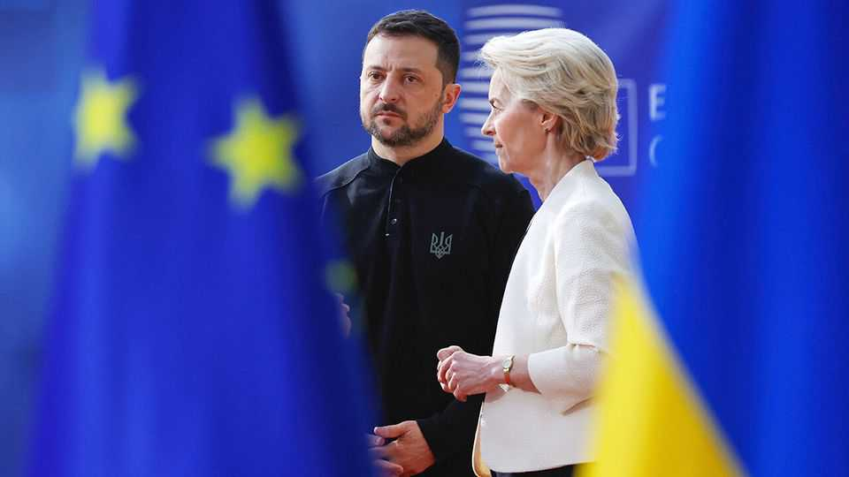
对欧洲而言，更为紧迫的问题在于其与一个已从西方的附属国转变为关键安全伙伴的国家的关系。乌克兰的战斗经验丰富军队正取得进展，其创新型国防工业也在迅速发展。若欧洲要捍卫自身边境并摆脱对跨大西洋援助的依赖，其对乌克兰的需求不亚于乌克兰对欧洲的需求。欧洲的优先事项应是尽快全面接纳乌克兰。对乌克兰自身而言，目标早已明确：加入欧盟，以巩固与西方的联系并弥补因俄罗斯吞并而失去的领土。四年多前欧盟已将乌克兰列为入盟候选国，本月欧盟预计将启动首轮谈判“集群”，涵盖民主与法治等议题。基辅一些人士希望全面入盟可能在明年实现。■
然而在欧盟内部，即使是热情支持者也怀疑十年内能实现这一目标。双方在期望上的差距十分危险。部分责任在于乌克兰总统弗拉基米尔·泽连斯基。他应更积极地强化国内独立机构，尤其是打击腐败。他应更开放地接受乌克兰以创新方式提前融入联盟的举措。德国总理弗里德里希·默茨最近提议设立“准成员国”身份，赋予有限投票权，作为通往全面加入的过渡阶段。泽连斯基草率地全盘否定这一方案是不明智的。但更大的责任仍落在欧洲各国身上。至今仍有许多人将乌克兰视为某种慈善对象。实际上，欧洲从乌克兰在无人机技术、生产与部署方面的成就中可获益良多。
欧洲军队可通过投资邻国强化自身安全。瑞典国防大臣表示，乌克兰测试武器系统可在数月内获得创新成果，而国内测试则需数年甚至数十年。部分欧洲人担忧行动过快可能带来风险，他们提及将一个经济落后、制度薄弱的国家纳入联盟可能引发的隐患。这些担忧并非毫无根据，但忽视了更宏大的图景：欧洲必须加快步伐，获取应对日益敌对世界的硬实力。将乌克兰纳入欧洲怀抱是直面俄罗斯这一明显区域威胁的手段。扩大欧盟并非单纯的行政流程，而是对一个在更强势大国间显得脆弱的大陆而言，不可或缺的地缘政治工具。■
其他构想，例如包含英国的欧洲安全理事会，或许能更快地正式化与乌克兰的安全伙伴关系。但优先事项仍是加速乌克兰加入欧盟的进程。欧盟应立即开始起草入盟条约，以此向乌克兰战争疲惫的民众以及资助其战后重建的投资者表明决心。作为交换，乌克兰应愿意接受补贴延迟或自由流动权利的让步，以方便欧洲在达成共识上取得进展。否则前景堪忧。民调显示部分年轻乌克兰人对加入欧盟的态度正在转冷。这应引发警觉。究竟哪种情形更糟：让一个贫穷但热情的乌克兰加入欧盟，还是让一个愤懑但强大的乌克兰被排除在外？■
《经济学人》订阅者可订阅我们的观点通讯，该通讯汇集了社论、专栏文章、特稿及读者来信的精选内容。■
§006 英国禁止像哈桑·皮克这样的演讲者是错误的原题：Is wrong to ban speakers like Hasan Piker · 板块：Leaders · 栏目：领导人
“我因批评以色列被封禁了。我们还自由吗？”Cenk Uygur本周在X平台上向追随者提出的问题有一定道理。Uygur和哈桑·皮克这两位颇具争议的美国左翼网红，均被英国政府禁止入境，以阻止他们参加伦敦SXSW音乐节和牛津大学的演讲活动。这一决定让一个自视为言论自由发源地的国家表现出如此卑劣的行为，而言论自由正是自由民主制度的基本支柱之一。
人们应当能够自由表达和思考，这不仅是一项公民权利，更是一种文化规范。若频繁拒绝外国访客入境，这种规范将逐渐被侵蚀。皮克和尤格被阻止入境，因为时任内政大臣沙巴纳·马茂德（Shabana Mahmood）认为，他们的在场“可能不利于公共利益”。这一极其模糊的标准似乎正被越来越多地用于禁止政府不欢迎的高知名度外国人士入境。今年4月，这一逻辑被用来阻止说唱歌手坎耶·韦斯特（Kanye West）参加音乐节，因其过去曾发表过极端纳粹言论（后已公开道歉）。5月，这一理由又被用来阻止多名极右翼人士参加由白人至上主义煽动者汤米·罗宾逊（Tommy Robinson）在伦敦组织的集会演讲。■
这一切是对内政大臣所赋予的酌情权力的令人担忧的滥用。此类权力应当慎用。直接且明确的暴力煽动行为是违法的；将有此类行为记录者驱逐出境或许合情合理。但令人不适、令人不安或令人反感的观点——本周围绕警方对亨利·诺瓦克（Henry Nowak，一名学生）致命袭击事件的应对引发的争议中，此类观点已有所展现——并不达到这一标准。皮克（Mr Piker）持有许多观点，合理人士可能认为其冒犯或荒谬。他觉得银行抢劫“很酷”；表示自己理解为何有人可能想谋杀一名健康保险主管；并曾说过：“我会每次投票都支持哈马斯而非以色列。”但他对英国不构成威胁，这与仅因举着“我支持巴勒斯坦行动”标语被捕的抗议者并无二致。■
曾经为卡尔·马克思提供庇护的国家，不应惧怕其现代社交媒体追随者。对如韦斯特和皮克尔这样的人士实施签证禁令，也无法阻止英国人听到他们的观点。任何人都能关注他们的社交媒体账号。事实上，试图压制他们的言论反而更可能促使英国人主动寻求他们的声音。本周英国对皮克尔和尤格的谷歌搜索量已高于以往任何时期。作为靠点击量谋生的挑衅者，他们无疑感到欣喜。英国并非唯一使用签证禁令排除政府不欢迎的演讲者的国家：美国、澳大利亚、德国及许多其他国家也采取类似做法。但这并不能成为借口。议会应敦促政府勿随意动用相关权力。■
它还应采取更多措施削弱权势阶层用来恐吓或压制批评者的工具，例如旨在让批评者承担毁灭性成本的诉讼（即“战略诉讼以阻止公众参与”，简称SLAPPs）。上周六的事件便是典型案例，前Meta员工、现 whistleblower（吹哨人）莎拉·温尼-威廉姆斯（Sarah Wynn-Williams）不得不在威尔士文学节的舞台上保持沉默，被全球范围的保密协议噤声，甚至无法点头，以免面临财务处罚。在全球言论自由正遭受攻击的背景下，英国曾是激烈辩论的自由堡垒，如今却如此审查，令人羞愧。政府的职责是保护民众免受实际暴力，而非试图让他们免受可能令他们不安的言论影响。■
如果某机构习惯性地禁止访客演讲者，就会让人误以为它支持那些被允许进入的人的观点。这将促使越来越多的活动人士游说实施针对持有不同观点的外国人的禁令。这会让英国的自由程度降低。■ The Economist的订阅者可注册我们的Opinion新闻简报，汇集了最佳的社论、专栏、特稿及读者来信。
§007 美国国债市场衰退亟需修复原题：America’s decaying Treasury market needs a fix · 板块：Leaders · 栏目：领导人
美国国债市场正面临衰退，亟需改革。高债务、分裂的市场以及好斗的贸易政策均威胁着全球最安全资产。
自1971年理查德·尼克松切断美元与黄金的联系以来，全球金融体系便依赖于美国国债。没有哪种资产比美国政府债务更重要。在危险时刻，它为投资者提供避风港。全球数万亿美元的合同和证券均以国债为基准定价。然而，正如我们的特别报道所揭示的，全球最安全资产已风光不再。过去十年间，美国国债发行量增长了126%，达到近32万亿美元，远超外国央行等稳定需求。
由于杠杆推动，追逐收益率的私人投资者和对冲基金逐渐占据了市场的更大份额。偶尔——尤其是2020年3月——这种需求会骤然消失，导致短期融资成本飙升，迫使美联储买入债券，实际上为市场提供担保。经济和地缘政治趋势也在削弱美国国债的需求。自2021年以来，通胀的再度抬头往往导致股票和政府债券同步下跌，这意味着国债已不再发挥对高风险投资组合的稳定作用。与此同时，美国强硬的贸易政策及其频繁实施的金融制裁（无论其正当性如何），已使外国买家对长期成为美国债权人的决定慎之又慎。■
若这些趋势持续下去，市场可能失去一种特殊地位，这种地位对美国乃至全球都至关重要。化解当前危机对新任美联储主席凯文·沃什（Kevin Warsh）、财政部长斯科特·贝森特（Scott Bessent）以及国会而言都提出了严峻挑战。沃什已表明意图缩减美联储持有的美国国债规模。这虽是可实现的目标，但即便如此，仍需进一步激发私人部门的市场需求。然而，沃什也必须随时准备在市场突然动荡时买入债券以稳定局势。任何此类干预措施都需比美联储以往更娴熟的手段，因为过去美联储未能区分量化宽松（QE）——旨在刺激经济的债券购买——与短期“市场运行”干预——旨在阻止抛售潮的措施。
过去，美联储并不需要同时兼顾这两个目标：例如2020年3月，通胀水平趋于平稳的同时，经济刺激措施也发挥了作用。如今，美国经济并不缺乏刺激政策，但债券市场仍可能需要救助。若美联储为疏通金融体系而购买债券的行为被解读为向特朗普总统施压以实现宽松货币政策，这将是一场灾难。因此，沃什必须为一场精准的干预行动制定作战计划。英国央行（Bank of England）是值得效仿的典范：在2022年英国国债遭遇抛售压力后，英国央行积极买入债券，同时承诺尽快退出市场。该承诺在数月内得以兑现，最终还为纳税人创造了盈利。改革市场将需要美国其他众多监管机构与美联储协同合作。■
交易目前通过做市商银行进行，但这些银行在市场紧张时刻往往难以清算市场。交易数据每日发布，与企业债市场实时报告不同。更快的报告机制将推动所谓点对点交易的发展。如同股票市场，任何投资者均可直接与其他投资者买卖，从而提升流动性。但最重要的解决办法在于政治家的恩赐。美国预算赤字规模约为国内生产总值的6%，在和平时期尚无先例，唯有在深度衰退期才曾出现。进一步的财政压力正在逼近，尤其是六年后的社会保障信托基金耗尽之时。贝森特先生通过偏好短期债务来缓解日益增长的利息支出压力，尽管短期债务当前成本较低，但政府因此更易陷入危机，因为需频繁再融资。■
至于制定预算的国会，它只在定期就债务上限进行极限施压时才会担忧市场，而债务上限是一个必须定期提高的法定限额。行政部门和立法机构必须调动决心，直面根本性长期问题，并找到减少借贷的方法。尚不晚，可以阻止国债市场的缓慢而持续的侵蚀。这将带来巨大的回报。据一项估计，美国作为全球安全资产供应者的角色，每年为该国节省约国内生产总值的1%的利息支出，目前这意味着超过$300bn。唯有国债能满足全球对安全且流动性强的资产的需求。任由全球金融体系的基础腐朽，几乎没有赢家。■
《经济学人》的订阅者可订阅我们的Opinion电子报，该电子报汇集了我们最佳的社论、专栏、特稿和读者来信。■
§008 如何让足球更精彩原题：How to make football more exciting · 板块：Leaders · 栏目：领导人
足球是美丽的游戏，但往往也是乏味的游戏。即将于6月11日开赛的世界杯由美国、加拿大和墨西哥联合主办，这相当于参加国际晚宴却只听到主人在厨房争吵。本届赛事将有48支球队进行104场比赛，持续六周半时间。虽然观看本国球队的比赛总能带来稳定的兴奋感，但对中立观众而言，平均比赛可能相当沉闷。世界杯的竞技压力使球员难以冒险，而实力较弱的球队往往能通过逼平对手获得优势。■
已有诸多构想旨在让足球更有趣。阿尔塞纳·温格，这位让阿森纳足球队变得易于观赏的教练，提出了包括调整越位规则和将掷界外球改为踢球门球在内的多项改革建议。但这些构想仍显保守。《经济学人》提议以下改革，让这项全球运动真正激发全人类的热情。若一支球队三次击中球门立柱或横梁，将被判定为进球。应充分奖励进攻意图。此举将更利于那些真正敢于进攻的球队。未能晋级的球队将拥有专属队伍。一些世界级球员因所效力国家队未晋级世界杯而无缘参赛。由这些国家最高排名球员组成的中立球队，将为所有人提供第二喜爱的球队。
随着比赛的进行，门将可用的身体部位越来越少来完成扑救。最初一只手被禁止使用，接着是另一只手。在补时阶段，门将唯一能用来封堵球的部位只剩下面部。任何假摔的球员面临真正受伤的风险更高。目送某人持续几分钟的假扮痛苦表演，实在令人厌烦。若球员被判定假摔，接下来对其的犯规将不会被处罚。要么场上减少翻滚动作，要么上演暴力报复的戏剧性场面。无论如何，足球都是最终的赢家。上半场十分钟内，每支队伍会随机挑选一名观众参与比赛。观众可能被选中代表他们并不支持的球队参赛；他们的忠诚归属无人知晓，包括他们的新队友。■
角球已成为角斗场。为了让角球更具观赏性，场上所有球员，包括主罚角球的球员，都必须蒙眼。比赛将继续进行，直到球出界或观众开始嘘声。没有什么比永久居留权的承诺更能激发体育赛事的激情。除了常规的黄牌和红牌，裁判还可以向任何在美国本土比赛中突破对手的球员颁发绿牌。世界杯历史上最令人难忘的瞬间之一，是喀麦隆球员罗杰·米拉（Roger Milla）进球后在角旗旁跳起舞蹈。如果这让人觉得足球乏味，我们的观点就再清楚不过了。不过，富有创意的进球庆祝方式仍能带来乐趣；为鼓励此类行为，裁判可撤销黄牌，前提是庆祝动作足够出彩。■
竞争总是件好事，这一原则也可应用于比赛中，例如在赛场上同时使用两颗球。这主要乐趣在于其对裁判和解说员的影响。在极端情况下，视频助理裁判小组甚至可以因比赛过于沉闷而判罚点球。即便是最佳球队，也会花费不合理的长时间将球从场地一侧传至另一侧，显然未意识到球门就在眼前。它们应受到惩罚。很可能这些想法在世界杯开赛前不会被采用。大胆的设想往往需要时间才能被接受。在此期间，也有一些慰藉。或许能有六周半的高尔夫球时间。■
《经济学人》的订阅者可以订阅我们的观点电子报，该电子报汇集了我们最佳的社论、专栏文章、嘉宾评论及读者来信。
§009 印度人口即将大幅下降 速览原题：India’s population will soon be falling—probably quite fast · 板块：Briefing · 栏目：简报
在德里一处 sprawling（形容广阔无边的）贫民窟中，帕鲁尔·盖恩（Parul Gayen）在1970年代生活时，孩子们随处可见。当时她的母亲有六个孩子，祖父有11个孩子并不罕见。苏万（Swapan），那个她常常见到骑车上班的英俊少年，后来16岁就结婚，有六个兄弟姐妹——第七个孩子未能活到婴儿期。但时代已经改变，现年58岁的帕鲁尔·盖恩如今与苏万住在附近的一间单卧室公寓里。这对夫妇的三个成年孩子中，只有两个决定要孩子，而且都只生了一个。"一个孩子会感到孤单，"她说。 ■
1950年，印度人口为3.6亿，平均每位女性生育6个孩子——与一个世纪前的美国女性大致相当。如今，印度人口已达14.5亿，占全球人口的六分之一。2023年，印度超越中国成为世界人口最多的国家，并持续增长。但其总和生育率（TFR）已降至1.9（见图表1），低于维持人口长期稳定所需的水平。尽管人口将在一段时间内继续增长——当当前儿童成长为父母时——除非生育率回升至2.15以上，否则未来人口收缩是不可避免的。实际上，生育率很可能持续下降，加速人口收缩进程。例如，德里的总和生育率仅为1.2。■
富裕国家和许多中等收入国家正陷入对生育率下降、劳动力萎缩及人口减少的焦虑。政客们常常通过施压或提供奖励来鼓励父母生育更多孩子，但收效甚微。如今，曾因人口激增引发担忧的印度也加入了这一行列。即将于今年夏天出版的新版教材将警示人口过少而非过多的风险。5月，安得拉邦（Andhra Pradesh，印度南部人口约5500万的邦）首席部长钱德拉·巴布·纳印度（Chandrababu Naidu）宣布，对生育第三个孩子的夫妇发放3万卢比（约合315美元）的奖励。就在2019年，印度总理纳伦德拉·莫迪（Narendra Modi）还曾警告过“人口爆炸”风险。但莫迪的顾问桑吉夫·桑亚尔（Sanjeev Sanyal）表示，政府的政策思路已发生转变。■
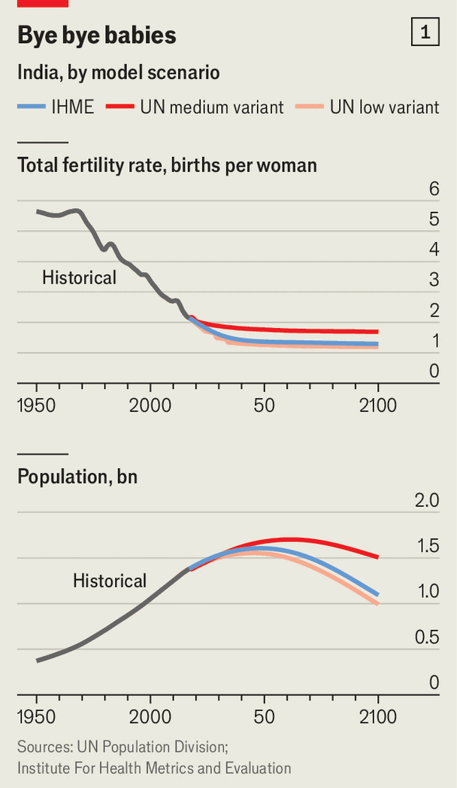
今日官员担忧印度正走上与中国相似的道路，中国自2021年以来人口已持续减少。Axis Bank首席经济学家尼尔卡恩特·米什拉（Neelkanth Mishra）表示，生育率下降速度和幅度远超预期。在人口约7700万的泰米尔纳德邦（Tamil Nadu）和人口1亿的西孟加拉邦（West Bengal），总和生育率（TFR）已降至1.3，与芬兰（Finland）持平（见图表2）。印度城市地区的平均生育率则为1.5。长期以来人口学家认为贫困的北方邦州会延缓印度的人口转型，但如今这些地区似乎正与更富裕、人口密度较低的地区趋于一致。有人或许会将人口减少视为福音。毕竟印度的基础设施常显不足，例如孟买通勤者挤在本地列车中的场景。然而，一个儿童数量减少的印度前景也不完全令人安心。■
它将在富裕之前先陷入老龄化，这将使人口转型变得异常艰难。其影响将波及社会、经济和政治领域。印度异常肥沃的土地和相对可靠的季风解释了为何其仅占全球陆地面积的2.4%，却拥有全球18%的人口。20世纪末的医疗进步进一步推动了人口增长。1950年，四分之一的儿童未能活到五岁；到2000年，仅十分之一的儿童夭折。马里兰大学的索尼黛·迪艾（Sonalde Desai）指出，印度在发展程度尚属早期阶段便完成了死亡率的转型，而此时其出生率仍维持在高位。这种组合使印度成为人口激增的警报者。1960年代一次访问“地狱般的”德里贫民窟的经历，促使美国生物学家保罗·埃利希（Paul Ehrlich）撰写了《人口炸弹》（The Population Bomb）。
他警告称，人类的粮食之战已告失败，印度注定会陷入饥荒。他完全错了，但影响力极大。他的研究促成了1970年代令人羞愧的人口控制运动，当时英迪拉·甘地政府强制绝育了约1000万男性。印度人口基金会（Population Foundation of India）的普诺玛·穆特雷贾表示，此后无论是由甘地领导的印度国大党，还是印度教民族主义者领导的印度人民党（BJP），各届政府大多推行了支持计划生育和生殖选择的政策。上世纪90年代，生育率下降加速，随着更多女孩接受教育，国家日益富裕。人口约3600万的南部喀拉拉邦，数十年来一直在关闭学校并引进劳工，其总和生育率（TFR）已降至1.3。其他地区正逐步赶上。■
联合国仍预测，印度人口将在2060年代前持续增长，之后缓慢下降。这一预测基于一项重大假设：即生育率将从明天开始趋于稳定。但全球仅有少数国家曾出现生育率下降后又反弹的情况。“生育率维持在2.0并非自然或必然的现象，”经济学家迪恩·斯皮尔斯（Dean Spears）表示。“目前尚未出现生育率稳定迹象，”印度数据智库（Data for India）的鲁基尼·S（Rukmini S.）指出。华盛顿大学健康指标与评估研究所（IHME）的人口学家们提出了更合理的预测。该预测显示，印度人口将在21年后达到峰值，随后以同样剧烈的速度下降。■
到本世纪末，印度人口将略超十亿，比目前减少近5亿。（联合国也发布了高增长和低增长预测；低增长预测与此相似。）另一份由印度人口学家S. Irudaya Rajan提出的模型预测，印度人口将在2050年代达到顶峰——比IHME的预测稍晚，但比联合国的预测要早得多——随后将迅速下降。很少有专家预料到这一点，原因有几方面。一方面，数据不足。上一次完整人口普查是在2011年进行的，目前正在进行的补充调查姗姗来迟，这种等待迫使人口学家不得不拼凑其他调查的数据，这可能掩盖了人口下降的速度。另一个令人口学家困惑的因素是印度的相对贫困。■
其人均GDP按购买力平价计算仅为7000美元，这一数据出现在2020年生育率降至更替水平之时——即人口长期停止增长的临界点。这一水平远低于大多数已跨越这一门槛的国家（见图表3）。宾夕法尼亚大学的耶酥·费尔南德斯-维拉韦尔德表示：“过去在人口学基础课程中，我们通常教授的是国家达到一定人均收入水平后，女性受教育并进入劳动力市场，从而导致生育率下降。”但如今许多较贫穷国家的生育率也已处于低位。在某些方面，印度的发展轨迹反映了长期证据所显示的结论：影响生育率最重要的因素是女孩是否接受教育，伦敦政治经济学院的兰特·普里奇特指出。接受过一定教育的女性拥有更高的自主权，随着时间推移，这将导致生育率下降。■
印度生育率下降如今反映了自1990年代以来女孩入学率的激增。似乎如果一个国家能在发展早期阶段为女孩提供教育，生育率也会更早开始下降。但印度的经验也与一些传统观点相悖。西方保守派常将生育率下降归咎于婚姻率下降和女性就业比例高。确实，许多西方女性抱怨自己生育的孩子数量少于预期，因为平衡家庭与事业的困难（或找到合适伴侣的困难）使她们较晚开始生育。然而在印度，女性结婚率超过90%，仅33%就业，生育率也在下降。■
尽管生育年龄比盖恩女士当年略晚一些，但印度女性平均结婚年龄仍为19岁，首次生育年龄为21岁（见图表4）。换句话说，年龄和职业并非主因，至少在印度的情况如此。事实上，即便生育率已下降，调查显示印度女性反而更希望生育更少的孩子。在许多州，理想生育率已降至约1.5个孩子。多数女性在完成生育后选择绝育，这表明她们并无进一步生育的意愿。对全国女性而言，生育更少孩子已成为一种强大的文化规范。传统印度婚礼祝福语是“愿你成为百子之母”，但现代印度父母的态度却如同《摩诃婆罗多》史诗中的一个古老故事。
印度圣哲阿伽陀询问妻子洛帕穆德拉，是想要十个优秀儿子，还是一个集十人英雄气概于一身的超级儿子。洛帕穆德拉选择了后者。这一转变有三大因素。首先，现代印度父母的期望发生了变化。42岁的钦奈母亲桑吉尼·拉曼（Sanjini Raman）给出了典型解释。她说，她和丈夫决定“所有资源都投入一个孩子，因为如果分给两个，就会被稀释”。将女儿送入私立学校并支付额外补习费用，约需35万卢比（约合3,650美元）。人口学家称之为“数量与质量的权衡”，这主导着印度夫妻间的讨论。拉曼表示，女儿的大多数同学来自独生子女家庭，这在印度南部很常见。印度付费学校中的儿童比例从2015年的31.7%上升至2025年的38.8%。■
这一趋势并不仅限于富裕国家。比哈尔邦（印度最贫困的邦之一，人口约1.3亿）和北方邦（印度人口最多的邦，人口约2.4亿）的调查显示，许多贫困父母选择只生一个孩子，以便至少能负担部分私立教育费用。另一个抑制多孩生育的因素是大家庭传统逐渐式微。直到2001年，约半数印度家庭仍与多代同堂居住——祖父母、父母、子女、姑姑、叔叔、表亲等共处一室。如今，据政府数据，约70%的家庭属于核心家庭，这归因于城市化和劳动力市场的变化。这种转变使育儿负担加重，并促使人们限制家庭规模。■
但大多数印度男性似乎并未察觉。“我的丈夫有时会自己洗碗，”来自泰米尔纳德邦的农民兼两个孩子的母亲卡维塔·卡南（Kavitha Kannan）说。过去，正如传统祝福所暗示的那样，另一因素推动着夫妻：对男孩的强烈偏好。这使得生育率保持较高水平，因为夫妻会不断生育，直到拥有一个男孩。但对男孩的偏好大幅下降：数据显示，许多印度父母已满足于养育女儿。第三，即使教育和家庭结构塑造了父母的观念，文化也在强化这种影响。生育更少的孩子已成为一种追求，这种趋势正受到科技变革和信息获取方式变化的影响。■
一项研究发现，2000年代有线电视向村庄的普及导致怀孕率下降，作者将此归因于肥皂剧对城市中产阶级小家庭女性的描绘。智能手机——即使在贫困村庄也日益普及——可能产生类似的叠加效应。目前尚无充分证据表明其普及加速了生育率下降，但智能手机很可能更快速地传播文化观念。在印度北方邦的Nagepur村，女性表示她们经常看到描绘小家庭的视频，并讨论年轻人就业困难的问题。拉简（Rajan）将低生育率比作“传染”：“喀拉拉邦发生的事情最终会波及比哈尔邦。”所有这些已导致家庭规模缩小，并为人口收缩铺平道路，这一点毋庸置疑。■
唯一的问题在于生育率会下降到何种程度。一些人口学家认为，强烈的婚姻和生育规范将起到缓冲作用，使印度避免出现像韩国那样严重的婴儿短缺。另一些人则持相反观点，认为在如此强烈的规范下，生育率已降至如此低的水平本身就很不寻常。他们推测，未来几十年内，更多印度女性或将完全退出婚姻和生育。即便印度不会成为韩国，其人口转型的速度仍将产生深远影响。最明显的是，它将在富裕之前变得老龄化。在人口中近五分之一为60岁以上、老龄化问题突出的喀拉拉邦（Kerala），政府刚刚设立了专门的老龄事务部门。■
印度政府拥有该国最全面的社会安全网络，但即便如此，仅有19.4%的劳动力参与任何类型的养老金计划（全国平均水平为12%）。为日益增多的印度老年人提供保障似乎遥不可及。然而，扩大家庭结构的衰落削弱了“子女会赡养年迈父母”的假设。在南印度，类似发达国家的养老院正陆续兴起。在农村地区，更基础的养老照护形式也逐渐出现，以瑜伽和闲聊为中心。但那些无法负担或找不到照护服务的家庭，尤其是需要照顾严重疾病患者（如痴呆症患者）的亲属，可能被迫重新团聚。在恒河之滨的宗教集会（Kumbh Mela）等大型聚集场合，遗弃年迈亲属的案例正在上升。家庭纽带的紧张还因另一趋势加剧——内部人口迁移的激增。■
南方各州长期以来依赖北方和东部的劳动力，尤其在酒店和餐饮业。但移民流动正在增加，以填补工厂和养老院等岗位的用工需求。在泰米尔纳德邦首府钦奈的阿图利亚护理设施中，工作人员几乎全是来自奥里萨邦的年轻女性。人口迁移趋势将使更多年长者滞留乡村。一些不满的父母已开始在社交媒体上批评缺席的孩子。更快速的人口结构转变意味着印度劳动年龄人口占比可能在2030年前达到峰值。尽管人口老龄化，印度劳动力仍可能增长，因为大量劳动年龄人口处于半失业状态。长期来看，经济需要更充分地利用女性劳动力，轴心银行的米什拉先生指出。■
人口问题早已渗透政治领域。莫迪领导的印度人民党（BJP）热衷于煽动对印度教徒（约占人口80%）被穆斯林（约占人口15%）取代的担忧。尽管穆斯林群体的生育率确实更高，但其下降速度同样迅猛，两者差异主要源于穆斯林群体经济条件较差。尽管如此，2月时，印度教民族主义组织RSS的领导人莫汉·巴格瓦特（Mohan Bhagwat）仍呼吁爱国印度人生育三名子女以协助“人口稳定”。与此同时，印度南部各州担忧莫迪会因出生率较低而“惩罚”他们，削减其在议会的席位。内部移民与接收州之间也可能产生紧张关系。多数南部政界人士清楚移民对经济的促进作用，但部分人抱怨外来人口涌入导致本地语言使用减少。■
可以轻易想象南北差距变得更为紧张。目前，各色政客都在寻找类似纳伊杜先生那样的政策，以促进生育。但全球各地的证据表明，劝说和贿赂等手段收效甚微。生育率似乎由一些国家或宗教领袖难以轻易掌控的强大因素驱动。拉詹先生指出，印度的生育率已连续70年呈下降趋势。突然逆转的可能性微乎其微。■ 订阅我们的免费周报Essential India，以获取最新印度报道。
§010 名人读书俱乐部大多令人厌烦原题：Are most celebrity book-clubs irritating? · 板块：Letters · 栏目：读者来信
欢迎通过电子邮件投稿至letters@economist.com 了解更多关于如何处理您的来信 “从红毯到书单”（5月9日）一文中指出，大多数名人读书俱乐部令人厌烦，但这类俱乐部能减少阅读的孤独感，将“一种孤独的体验转化为集体体验”，正如一位学者所言。这正是Charmaghz的职能，这是一个非营利组织，致力于帮助阿富汗女孩。由一位阿富汗女教育活动家创立，Charmaghz在塔利班禁止女孩上高中和大学的背景下，运营着在线读书俱乐部。■
阿富汗的女性如今在大多数公共场所都被排除在外。她们缺乏的是同龄读者的陪伴，以及一个能让她们对小说或任何事物的观点得到认可的环境。每周一次由阿富汗女性主持的90分钟读书会，讨论《汤姆·索亚历险记》或《八十天环游地球》，正好满足这两点需求。您提到批评者质疑许多读书会的严肃性，尤其是由名人主持的。但我们的参与者中严肃性并不缺乏。她们是我所知中最坚定的读者，尽管并可能正因为面临获取书籍的种种障碍。丽兹·罗宾逊首席执行官，查尔马兹，伦敦
SpaceX堪称自由市场的奇迹，是资本主义最辉煌的体现，您在5月23日的社论中如此评价这家火箭公司即将进行的首次公开募股。但这一观点忽略了政府在推动SpaceX起步过程中发挥的关键作用。2008年，这家初创企业濒临破产，直到美国国家航空航天局（NASA）授予其16亿美元的合同，由此为公司带来了改变命运的收入来源。美国纳税人承担了私人投资者不愿承担的早期风险。SpaceX的成功令人印象深刻，但更应视为国家支持型资本主义的胜利，而非纯粹自由市场的奇迹。T·迈克尔·斯宾塞 华盛顿特区 您对《星球大战》系列从电影事件演变为连续剧式填充内容的演变分析，值得更深入的探讨（“Yodanomics”，5月23日）。■
我们文化时代的悖论在于，创新的手段从未如此丰富（生成工具、分发平台等），但文化产业却前所未有地保守。迪士尼从塔图因星球转向电视并非个例，而是整个趋势的缩影。数据驱动的项目审批机制更青睐可预测的过往而非充满风险的未来。算法推荐将品味压缩至少数安全选项。资本市场担忧订阅流失，更倾向于延续已知宇宙而非资助未知领域。结果形成一个生态体系：失败成本飙升而生产成本却降至历史低点——这是有限创意的无限混搭经济。生成式AI只会加剧这一矛盾。■
技术若以过往数据为训练对象，可以几乎可以忽略不计的成本，持续生成越来越复杂的既存事物变体。真正的风险并非《星球大战》会变成肥皂剧，而是所有事物都可能沦为这般。观众是否会持续为怀旧感付费，一旦他们能自行编织这种怀旧感，这才是迪士尼新任总裁乔什·达马罗（Josh D’Amaro）面临的真正问题。■
PIER LUIGI SACCO
生物行为经济学教授
加布里埃莱·达·安努奇奥大学（Gabriele d'Annunzio University of Chieti-Pescara）
意大利切蒂市
《巴尼亚》（Banyan）提出砍伐印度城市树木的论点，因其阻碍发展（5月9日）。真正的问题并非缺乏砍树的勇气，而是拒绝承认诱导需求的规律。在班加罗尔和海得拉巴等城市，新高架桥承诺的时间节省往往在数月内消散，因新增的道路容量只会吸引更多私家车。■
此外，政府对“绿化”的兴趣显得异常选择性。只需走访政府专属区那绿意盎然、步行便利的街道，便能发现政府深知树冠的价值。唯有当人们走出这些受保护区域，进入所谓的“功能失调”城市时，树木才会被视为阻碍进步的障碍，而非关键的公共卫生基础设施。当政府在孟买深夜砍伐树木时，它并非出于理性，而是表现出专制作风。直到印度城市规划摆脱1960年代美国以汽车为中心的扩张模式，转向透明、公众主导的公共交通设计，环保主义者仍是城市宜居性与热辐射混凝土荒漠之间唯一的防线。德哈姆内德拉·托拉尼（Delhi）《巴特勒比》专栏对管理术语的连篇累牍（5月16日）引起了我的注意。■
我职业生涯中大部分时间都在中层管理岗位。公司高层要求每个部门都必须制定一份使命宣言。这看似简单，因为我们只有内部客户和单一产品。我们的使命宣言用直白的英文写成，仅一句话。显然这并未通过审核。我们忽略了当下流行的时髦词汇，最终得到一堆毫无意义的胡言乱语，浪费了无数小时。乔瑟夫·范德斯莱斯（Joseph Vanderslice）德克萨斯州伍德兰兹（The Woodlands, Texas）或许我并非唯一读过巴特勒比（Bartleby）“速度轴心”（velocity pivot）时，用比尔·乔伊（Billy Joel）《我们并未点燃战火》（We Didn’t Start the Fire）旋律的人。若需为这种企业填充文本取新标题，我或许可以建议“我们并未开启邮件线程”（We Didn’t Start the Email Thread）。大卫·佩杜托（David Peduto）马里兰州安纳波利斯（Annapolis, Maryland）■
一张男子身穿深色西装、棕色皮鞋，昂首阔步穿过线街的照片，随同您关于伦敦金融区复苏的报道（“Getting its mojo back”，5月2日）一同刊登。1980年，我刚从服饰随意的里约热内卢调任至伦敦金融城，当天便穿着相似的装扮，入职第二天就被叫到总经理办公室。他带着几分轻蔑的语气询问我是否在来时踩到了狗粪。幸运的是，如今伦敦金融城的活力不再依赖着装规范。彼得·布里斯，法国劳泽特■
§011 亚洲 巴基斯坦正应对两场叛乱 “One Nation”崛起正在融化澳大利亚政治 美国战争部长对华态度缓和 移民担忧威胁韩国造船业繁荣 性旅游者激化日本社会对卖淫的愤怒 印度的“叔叔共和国”原题：Pakistan is battling two insurgencies · 板块：Asia · 栏目：亚洲
国内局势的恶化让阿西姆·穆尼尔——巴基斯坦军方首脑兼实际上的统治者——不得不面对现实的重击。最近他一直在四处奔走，扮演全球和平调解者的角色。5月22日，他第二次在伊朗首都德黑兰访问，试图帮助缓解美伊冲突。三天后，他又前往北京向中国国家主席习近平汇报。然而，穆尼尔将军抵达中国时，国内却传来令人沮丧的消息。在巴基斯坦西部的俾路支省，一个分离主义组织炸毁了一列通勤列车，造成47人死亡。■
袭击行动由俾路支解放军（Balochistan Liberation Army，简称BLA）发动，该组织也多次针对中国基础设施和人员实施攻击。最新袭击甚至可能特意安排在总参谋长抵达北京时，以羞辱其威信。更令他困扰的是，BLA的行动只是巴基斯坦两场叛乱之一。当他在国外试图展示力量时，国内的武装暴力却达到十年来最严重程度（见图表）。此次列车爆炸是BLA今年一系列袭击中最大胆的一次（2025年某次袭击后的现场照片如图所示）。■
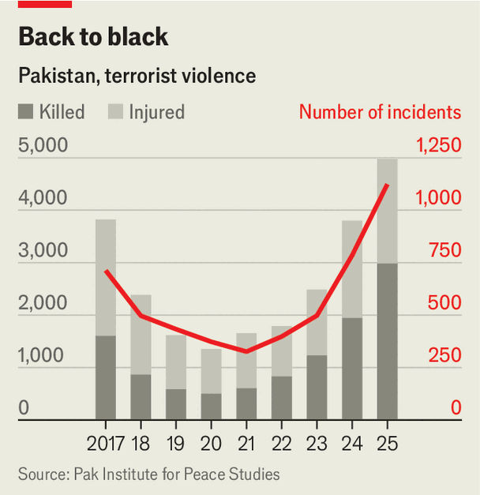
该组织除了杀害巴基斯坦人，过去五年内还至少杀害了20名中国公民，这些袭击针对能源和矿产项目，旨在阻止中国投资并羞辱巴基斯坦政府。巴基斯坦参议员穆沙希德·侯赛因（Mushahid Hussain）表示：“我们承诺（中国）安全，却未能兑现。”他是一名退休参议员，也是伊斯兰堡（Pakistan’s capital）巴基斯坦-中国研究所（Pakistan-China Institute）的主席。尽管该组织的行动令人憎恶，但伊斯兰堡官员可能更担忧另一类对手——巴基斯坦塔利班运动（Tehreek-e-Taliban Pakistan，简称TTP）。该组织约6000名战士梦想在巴基斯坦西北部建立自己的神权酋长国。他们在社交媒体上发布精心制作的视频（提供乌尔都语、普什图语和英语版本），谴责巴基斯坦政府不伊斯兰、受国际货币基金组织（IMF）奴役。
一辆汽车炸弹在西北省份造成21名警察死亡，这只是该组织5月实施的数起袭击之一。塔利班武装组织（TTP）曾一度贫困且纪律涣散，2010年代以来该组织依靠招募贫困青年。其暴力行为曾毫无选择性，2014年曾袭击巴基斯坦白沙瓦的一所学校，造成132名儿童死亡。如今该组织已更为组织严密且资金充足，仅针对巴基斯坦士兵和警察。前巴基斯坦陆军少将塔里克·汗（Tariq Khan）曾领导反叛乱行动，2014年退役后表示，该组织每月向失业青年支付5万卢比（约合180美元）。他说：“他们能获得金钱、食物、制服和认可；这是一件极具吸引力的事。”巴基斯坦分析师艾哈迈德·蒂普·梅斯德（Ihsanullah Tipu Mehsud）称，该组织拥有狙击手、热成像目镜和中国制造的无人机。巴基斯坦长期指责阿富汗塔利班庇护并支持TTP。■
忍无可忍，美国在二月对阿富汗发动“全面战争”，轰炸训练营和弹药库。此前美国已开始驱逐阿富汗难民，自十月份起更封锁两国边境贸易，使塔利班每年损失约3亿美元收入，占其年度预算近10%。巴基斯坦希望借此迫使塔利班解除与“塔利班相关组织”（TTP）的武装或阻止战士跨境活动。但这是不切实际的幻想。TTP活动在巴基斯坦军方打击后一度下降，但过去一个月又有所回升。塔利班主要派系视TTP为同类组织；过去他们曾并肩进行圣战。他们也担心解除TTP武装可能促使战士转向更极端的激进组织，其中一些组织甚至反对塔利班。■
因此，巴基斯坦对阿富汗的袭击主要起到了团结塔利班、激怒普通阿富汗民众的作用。联合国称，截至3月底，已有372名阿富汗平民死于巴基斯坦炸弹袭击。数千人被迫流离失所。来自昆纳省纳里区的31岁男子德尔瓦尔·汗（Delawar Khan）表示，他和许多其他家庭被迫逃离家园。寻找食物和水源变得困难。巴基斯坦长期声称印度资助俾路支解放阵线（BLA）。如今官员们还指控印度向阿富汗输送资金，甚至间接支付塔利班武装组织（TTP）战士的工资。印度予以否认。近年来，印度与塔利班的关系确实变得更加友好，而巴基斯坦和印度都长期通过代理人开展行动。■
美国智库奎宁研究所（Quincy Institute）的亚当·魏斯斯坦（Adam Weinstein）指出，政府往往容易将由国内矛盾引发的叛乱归咎于外国干涉。在巴基斯坦西部地区，BLA和TTP两个组织活跃，该地区经济长期落后，且数十年来饱受军警的严酷对待。穆尼尔上将（Field Marshal Munir）对叛乱采取的强硬手段，几乎不留政治和解的空间。“这将产生巨大的负面后果，”一位前巴基斯坦外交官表示。今年4月，应中国请求，巴基斯坦与塔利班进行了低层级会谈，但未取得进展。巴基斯坦对最新袭击事件的反应相对克制——或许因为穆尼尔上将希望促成美伊之间更多对话，不愿国内动荡影响这一进程。但接下来的发展仍不明朗。■
喀布尔一些人担忧巴基斯坦可能试图推动政权更迭。当被问及巴基斯坦是否会考虑不仅打击训练营还针对塔利班领导人时，一名巴基斯坦官员显得颇为无奈。“如果他们不停止对我们发动袭击。” ■ 为获取亚洲政治、经济与安全领域的独家报道，请订阅我们的周报《亚洲简报》(Asia Bulletin)。
§012 一国党崛起正在融化澳大利亚政治格局 亚洲原题：The rise of One Nation is melting Australian politics · 板块：Asia · 栏目：亚洲
七年过去了，托尼·阿博特——这位曾担任澳大利亚总理（2013-2015年）的保守派政客——失去了他的选区席位。上个月，他结束了长达七年的政治荒漠期。5月29日，目前处于反对党地位的自由党选举他担任党主席。该党的成员寄希望于阿博特与议会领袖安格斯·泰勒，完成一项紧迫任务：帮助右翼的自由-国家联盟应对保罗·汉森及其反移民一国党惊人的崛起。一国党的势头持续引发广泛关注（见图表）。
4月，民调机构Redbridge（澳大利亚）预测，若立即举行选举，安东尼·阿尔巴内塞（Anthony Albanese）领导的工党将赢得众议院150个席位中的76个。但One Nation党将成为澳大利亚官方反对党，获得53个席位——比目前的2个大幅增加。自由党-国家党联盟则仅能艰难获得12个席位。自该研究发布以来，局势持续向汉森（One Nation党领袖）有利发展。另一项5月中旬的民调显示，One Nation的支持率甚至超过了工党。该党已证明其强劲民调数据可转化为实际席位，3月南澳大利亚州选举中便斩获7个席位。
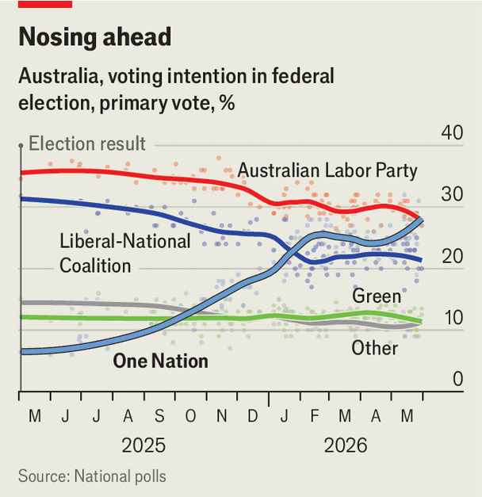
5月，One Nation党的候选人赢得了新南威尔士州南部联邦补选——该选区自八十年前起一直由联盟占据。11月，维多利亚州（澳大利亚最进步的州）将举行州选举，这将很快表明One Nation是否也能从工党手中夺取席位。该州的工党政府正因令人咋舌的州债务和公共基础设施项目相关的丑闻而陷入困境。对政策走向感到失望，一批近年来在澳大利亚议会中赢得席位的独立议员正加快讨论组建一个新中间派政党的步伐，该党可能比传统派更胜一筹。这些所谓的“teals”将右翼财政保守主义与社会进步主义以及更符合绿党的气候议程相结合。■
许多候选人曾获得同一机构Climate 200（即一个支持候选人承诺减排并重拾政治信任的机构）的资金支持。扎莉·斯特格尔（Zali Steggall，一位律师兼前奥运选手）便是其中一位主张成立新中间派政党的人士。她曾是新晋候选人，2019年成功将阿博特（Mr Abbott）逐出议会。她表示自己“对One Nation（一个国家）派的言论感到真正担忧，并对联盟党试图迎合这一派的动向感到不安”；她认为澳大利亚选民在投票箱前应享有更多选择。另一加速局势发展的因素是即将于明年生效的选举资金法规修订，这将使独立政客在2028年联邦大选中处境艰难。自由党重新启用阿博特的决定是一场冒险。■
作为总理，他取消了碳价，发动军事行动拦截海上寻求庇护者，并授予菲利普亲王爵位。他能否在下次大选前帮助改变执政联盟的局势，仍充满不确定性。可以肯定的是，澳大利亚政治昔日温和的双党制时代早已终结。■ 为获取独家亚洲政治、经济与安全报道，请订阅我们的周度会员专属简报Asia Bulletin。
§013 美国战争部长对华策略有所保留 不提台湾原题：America’s secretary of war pulls his punches on · 板块：Asia · 栏目：亚洲
过去20多年来，美国国防部长们每年都前往新加坡的酒店举行的香格里拉对话会，发表演讲阐述其亚洲战略。当现任国防部长彼得·赫格塞斯去年在该活动上发言时，他才上任四个月，特朗普政府的许多政策思路当时仍在酝酿之中。因此，5月30日，数十个国家的军方高层再次聚集在赤道以北的宴会厅，希望尽可能理解美国对亚洲的政策走向。
■
他们对这个国家对亚洲盟友，尤其是台湾的承诺产生了更多疑虑。赫格塞斯明确表示，美国的战略是地理和外交上的收缩。在拜登政府时期，五角大楼试图在所谓印太地区（从南亚延伸至加利福尼亚的广阔区域）建立广泛联盟。相比之下，特朗普政府的重心则放在“第一岛链”——从日本延伸至菲律宾的群岛。美国防专家认为，掌控这一地理区域是确保赫格塞斯所说的“亚洲有利力量平衡”的关键。五角大楼战略的第二部分则是更聚焦于“硬实力”，即军事力量。■
这与拜登政府的立场形成鲜明对比，后者强调“基于规则的国际秩序”的重要性，并试图从军事实力薄弱的国家获取支持信号。赫格塞斯先生在演讲中对人群表示：“规则再多再好，若缺乏硬实力支撑，也如同纸上的空文。”为此，他呼吁美国亚洲盟友承担更多防卫责任，要求他们将至少3.5%的GDP用于本国武装力量（目前多数国家远未达到这一水平）。拜登政府战略的核心是美澳印日四方安全对话（Quad），而特朗普则大幅削弱了这一机制。五月底在德里举行的Quad会议，由马可·鲁比奥担任国务卿出席，却未取得任何实质性进展。■
这符合美国新战略的逻辑：四国集团似乎难以融入以第一岛链和军事力量为核心的亚洲战略。印度几乎无法在该地区采取行动。事实上，迄今为止，四国集团的大部分工作都避开了实际军事合作，由于印度对显得过于接近美国及其盟友的担忧。相反，该集团向其他国家提供了拜登团队所谓的“公共产品”，例如疫苗，这些对特朗普而言并不算什么乐趣。在新加坡的演讲中，赫格赛特并未提及四国集团。但最明显的遗漏并非如此。他同样避开了该地区最大的敏感议题——台湾。（去年他曾警告称，中国对这个自治岛屿的入侵“可能迫在眉睫”，同时又表示“将造成灾难性后果”。）■
赫格塞特似乎预见到自己对台湾保持沉默会引发外界对美国在亚洲盟友和伙伴承诺的质疑。（当2月出现特朗普推迟国会批准的对台军售消息时，他们感到不安；当特朗普在5月峰会期间透露曾与习近平讨论对台军售时，他们震惊不已。）因此，赫格塞特试图将沉默包装成一种降低紧张局势的“原则性努力”，暗示（不可靠地）特朗普政府并未“炫耀武力”。事实上，赫格塞特可能只是想避免在9月特朗普与习近平下一次美国会面前说任何可能引发争议的话。中国官员对听到的内容（更准确地说，是没听到的内容）表示满意。■
东南亚政要表示他们对中美两大强国之间紧张局势似乎有所缓和感到满意。但前美国外交关系委员会主席理查德·哈斯（Richard Haass）将赫格塞特（Mr Hegseth）对台湾问题的沉默，与1950年1月德恩·艾切森（Dean Acheson）的沉默相提并论。艾切森当时是美国首任冷战时期的国务卿，在一次阐述美国亚洲政策的重要演讲中，他未能明确表示韩国位于美国的“防御圈”之内。两周后，约瑟夫·斯大林批准了朝鲜对南方的入侵。五角大楼对亚洲策略的演变有一定道理。以第一岛链和硬实力为核心的策略，有很大可能遏制中国的冒险行为。如果盟友能增加国防开支，这也将进一步增强威慑力。■
在准备离开新加坡之际，记者们直接向他发问，赫格塞特坚持美国对台湾的政策并未改变。但允许对此产生任何误解都极其危险。这会招致五角大楼战略旨在防范的种种挑战。■ 为获取亚洲政治、经济与安全领域的独家报道，请订阅我们的周度会员专属简报Asia Bulletin。
§014 韩国造船业繁荣面临移民担忧 亚洲 工业在东亚原题：Worries about migrants imperil South Korea’s shipbuilding boom · 板块：Asia · 栏目：亚洲
“家乡已无工作可做”，泰国焊工 Wichit 说道。他在韩国东南部城市釜山找到了大量工作，为韩国造船企业HD Hyundai Heavy Industries（HHI）工作。像Wichit这样的移民正帮助HHI等企业满足外国买家对液化天然气运输船和节能集装箱船的激增订单。然而他们的存在正引发波澜。据英国海事研究机构Clarksons统计，2025年韩国造船企业拿下全球21%的订单，仅次于中国，占据最大份额。 ■
政府近日表示愿意分享本国技术，协助唐纳德·特朗普实现“让美国造船业再次伟大”的目标。去年，政府承诺投资1500亿美元用于美国造船项目，作为摆脱关税压力的一部分努力。然而，造船厂正面临严重的人力短缺问题。韩国人口是全球老龄化速度最快的国家之一。许多曾在2000年代行业繁荣时期推动发展的工人已退休或转为管理层。年轻韩国人认为造船业危险、辛苦且收入低：造船厂的死亡率是平均工业工作场所的四倍。因此，大量年轻人离开造船业地区。在釜山，仅24%的成年人年龄在40岁以下，这一比例十年间下降了6个百分点。
造船厂则转向印尼、斯里兰卡、泰国和越南等国招募工人。如今，造船业近四分之一的劳动力为外籍人士——这一比例是十年前的四倍。韩国政府通过2022年通过的针对技术工人签证规则调整，推动了这一趋势。尽管造船业高管对新移民表示欢迎，但蔚山等地的本地居民却感到不满。正如蔚山房地产中介李素文所言，过去海运行业繁荣期曾带动沿海社区众多小型企业的发展。现代重工（HHI）附近的餐馆总是在下班后座无虚席，但如今已不再如此。李素文表示，这些外籍工人“几乎不消费，很少外出就餐”。许多人在入境前便需向协助办理签证的中介支付数千美元，背负债务。■
他们更倾向于将大部分收入寄回国内，而非挥霍在海滨小镇。维奇特（Wichit）表示，他每月会将3万泰铢（约920美元）寄回芭堤雅（Pattaya）的家人手中，那是他的家乡。这笔钱约占他收入的五分之二。当地人的抱怨正变得难以忽视。最近，总统李在明（Lee Jae Myung）似乎批评了造船业的用工和薪酬制度。在压力下，相关企业开始讨论向承包商发放奖金。他们承诺将采取更多措施帮助外籍劳工将家人迁至韩国（旨在减少他们将资金汇出国外的意愿）。造船业巨头也开始暗示要缩减海外用工规模。然而，他们能做的来吸引年轻韩国人回国的手段终究有限。■
如需独家报道亚洲政治、经济与安全动态，请订阅我们的周度专属简报《亚洲简报》。■
§015 性旅游者激化日本卖淫问题争议原题：Sex tourists fuel outrage about vice in Japan · 板块：Asia · 栏目：亚洲
东京的Mai（Mai）曾是一名医院员工，34岁，单亲母亲，需照顾家庭。新冠疫情暴发后，医院病房压力剧增，她的工作变得异常紧张，同时又需要额外收入维持家庭开支。被高薪吸引，她进入性产业，最初担任色情演员，后成为“送货健康”（deriheru）从业者——即俗称的上门服务性工作者，常前往客户家中或酒店提供服务。每次两小时的服务可获得3万日元（约合190美元）。Mai是日本庞大性产业中数以十万计女性的代表之一。据估计，该产业年产值达2万亿至5万亿日元（约合120亿至310亿美元），已深度融入日本男性社交生活。 ■
2022年一项研究显示，日本男性中有48%曾支付过性服务费用，而英国仅为11%。63岁的东京居民萩原（Hagiwara）回忆称，刚入职公司时，曾被资深同事带去风月场所，作为入职仪式的一部分。一位30多岁的男性Emu表示，“我身边大多数男性至少有过一次经历。”然而近期，立法者对这一行业的容忍度正面临严峻考验。两个近期事件促使日本人重新审视那些错综复杂的法律和惯例，这些法律和惯例规定了如何监管性工作。第一个触发点是一起令人震惊的犯罪事件：去年警方解救了一名12岁的泰国女孩，她被拐卖至日本并在东京一家性商店被迫工作。第二个关注点则是越来越多女性在东京红灯区附近的御茶水公园周边从事性交易活动，而该区域通常以霓虹灯下讨价还价为常态。■
参与这一行业的女性相对较少。不过，日本将拉客（在公共场所等待或接近顾客）视为非法行为。女性公开等待顾客的场景令公众感到不安。加剧公众讨论的是，部分顾客是被日元贬值吸引而来的外国游客。他们前往东京目黑区的御茶之水公园（Okubo Park）接近女性的视频在网络上迅速传播。“这真是令人痛心。”右翼民粹政党新党（Sanseito）领袖小宫政博（Kamiya Sohei）在视频中表示。这场愤怒背后隐藏着一种被刺伤的民族自尊心：在1970年代和1980年代日本经济繁荣时期，是日本男性出国寻求性服务。当局已决定采取行动——至少针对街头卖淫者。最近，目黑区周边的女性被拘留或逮捕。■
活动人士认为，当局未对购买性服务者进行惩罚是不公平的。“女性被警方带走时，买方男子却在一旁冷笑着。”日本妇女权益组织PAPS（PAPS）的金泽纪子表示。11月，一名反对党议员在议会指出这种执法不公。对此，首相高市早苗下令法务省重新审视现行做法并考虑改革。改革的前景引发了日本社会对如何改善性产业执法的广泛讨论。部分日本女权主义者希望本国能效仿北欧模式，即瑞典、法国等国采用的监管方式——将购买性服务定为犯罪，同时不对卖方追究刑事责任。金泽纪子表示：“购买性服务本质上是对女性的暴力。” ■
日本其他人士认为，对买方施加更严厉的惩罚会让性交易活动转入地下，使女性面临更大的暴力风险。一些人主张将性产业全面合法化并加以监管，如德国和荷兰的做法。性工作者权益倡导组织Siente的中谷美奈子认为，刑事化会使女性仅被视为受害者，忽视她们的自主性。“从事性工作并非坏事，这是谋生的合理方式。”要真正触及问题核心，任何改革必须不仅针对街头性交易，还应涵盖日本庞大的室内性产业，而相关法律漏洞百出且执法选择性极强。以“洗浴中心”为例，顾客表面上支付费用享受沐浴服务，若过程中发生性行为，官员通常视而不见。■
科廷大学的矢嶋孝表示，这体现了日本监管色情行业的典型做法。优先考虑的是将色情行业体面地排除在公众视野之外。彻底的政策调整似乎不太可能。目前，法务省的注意力集中在街头卖淫上。矢嶋孝指出，处理街头卖淫是“国家可采取的最具成本效益且最具可见性的执法手段”。“许多议员，尤其是保守派，对女性变得性放纵的想法较为敏感”，议员志村绫香表示。公开在公共场所招揽性交易的女性已成为社会秩序混乱的象征。■ 为获取亚洲政治、经济与安全领域的独家报道，请订阅我们的周度专属新闻通讯Asia Bulletin。
§016 印度的叔叔共和国原题：India’s republic of uncles · 板块：Asia · 栏目：亚洲
让我告诉你如何识别一位印度叔叔。一个明显的线索是“让我告诉你”这句话，它总伴随着对国家现状的深刻见解。另一个显著特征是未经请求的建议，从职业指导（“只有女孩才学文学”）到饮食处方（“吃五颗泡过的杏仁以增强免疫力”）。但印度叔叔最突出的特征是对当下年轻人的不屑：这些软弱的手机成瘾者，一无是处。他们需要管教。叔叔在印度宗教、种姓和语言的分歧中占据主导地位。他通过简单地步入中年，便瞬间获得无所不知的自信。
尽管他通过WhatsApp传播“叔叔之道”，其权威仅限于自己的圈子。然而掌控印度的“叔叔们”却不受任何边界约束。他们将陈旧的观念强加于整个国家。印度实为一个由叔叔们统治、由叔叔们治理、为叔叔们服务的共和国。因此，这个国家才会出台如此幼稚的政策：如古吉拉特邦要求成年情侣合法结婚前必须获得父母签字；如果阿州规定公立大学成年学生必须穿着统一校服；如德里州规定成年人18岁可投票、21岁可结婚，却要等到25岁才能饮酒。印度人同样受制于那些学识渊博的高等法院法官的裁决，而超过85%的法官是中年男性。2023年，加尔各答高等法院曾建议年轻女性“控制性欲”而非“享受短短两分钟的性愉悦”。■
卡纳塔克邦一名法官指出，若限制未成年人至18岁（甚至21岁）才可使用社交媒体，将“更有利于国家”。5月15日，印度最高法院首席大法官更感叹称：“如今年轻人如同蟑螂般泛滥，他们既找不到工作，也难以在专业领域立足。”次日，一名在波士顿求学的印度学生便创立了名为“蟑螂人民党”的搞笑政治组织，该组织在Instagram上迅速获得超过2200万关注者，远超执政的印度人民党（BJP）两倍以上，引发大量关于青年群体压抑不满情绪的讨论。首席大法官随后澄清自己仅指那些拥有虚假法律学位的人，却忍不住补充道：“青年们对我充满敬意与尊重。”这正是每位叔叔的妄想。■
印度大叔应对批评的工具箱相当有限。在国内，处理方式从开始到结束都只有一句话：“别顶嘴，行吗！”共和国大叔们也遵循同样的本能，背后则是国家机器的强力支撑。国内情报部门以“国家安全担忧”为由，政府将“蟑螂”账号视为对印度主权的威胁予以封禁。一位印度人民党领袖称该段网络迷因是“跨境影响力行动”。在印度大叔眼中，年轻人拥有自主权是难以想象的，同样难以想象的是大叔们可能不知道一切。印度一半人口年龄不足30岁，但每年仍有500万毕业生，其中仅三分之一能找到稳定薪资工作。然而大叔们从不追问为何就业增长如此乏力，归咎年轻人反而更省事。■
数年前，一位七十多岁的亿万富翁纳拉亚纳·穆尔蒂（Narayana Murthy）呼吁年轻人每周工作70小时，并宣称“印度需要更强烈的敬业精神”。另一位公司主席不甘示弱，主张每周工作90小时：“你坐在家里干什么？你能盯着妻子看多久？”许多年轻人早已习惯如此高强度的工作节奏。他们上学或上大学，参加额外的补习班，回家后还要继续学习。5月，超过200万考生参加全国医学类院校入学考试，争夺约13万所医学院的招生名额。九天后，考试机构因试卷泄露宣布作废所有考生的成绩。同月，180万学生收到高中毕业考试（Class 12）成绩，这项考试是印度教育体系中最重要的测试之一。这些成绩也出现了严重错误。议会特别委员会正在调查这两起丑闻。叔叔们将给叔叔们打分。■
年轻人在面对父母压力、专制政府、系统性低效和糟糕的就业前景时，仅以傻乎乎的网络迷因作为回应，这本身就是一种小奇迹。而在尼泊尔、孟加拉国和斯里兰卡，同龄人则对本国年迈领导人采取了更为强硬的态度。这里有一则未经请求的建议献给印度的各位长辈：让蟑螂们在网络世界里尽情撒欢吧，这对你们自己是好事。别忘了再吃五颗泡过的杏仁。■《经济学人》订阅者可注册我们的观点通讯，获取我们最佳的社论、专栏文章、特邀评论及读者来信。
§017 中国高科技崛起正让全国大部分地区被抛在后面原题：China’s high-tech rise is leaving much of the country behind · 板块：China · 栏目：中国
中国
如同中国内陆许多城市，甘肃西部的天水市布满尘土飞扬、早已废弃的工厂。但过去十年间，这里也意外地成为了一个高科技中心。新建的工业园区不断涌现，为公司提供廉价能源、融资和土地交易。该市已建成一座展览馆，展示其希望未来制造的快速产品，名为“天水工业2050”。这一切都将让远在京城的官员们感到满意。他们希望中国的锈带能通过科技实现自我革新。
■
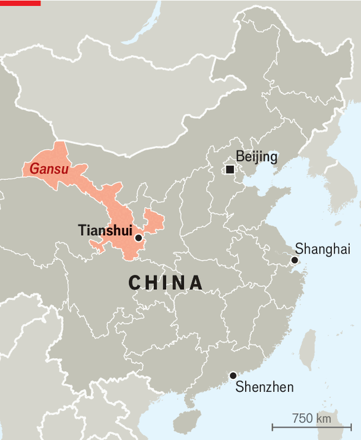
天水市民的生活并未因新一轮城市更新计划而明显改善。尽管政府高调宣布要将停滞的城市转变为能提供“高质量生活”的“创新”之地，但十年来该市人均GDP从占北京的16%降至14%，2025年经济增长率比全国平均水平低两个百分点。当地居民表示，高度自动化的工厂并未创造大量就业机会，大量年轻人纷纷外出寻找更好机会。过去十年间，天水人口减少近50万，降至290万。按此速度，到2050年将难觅工人。天水的困境揭示了中国押注先进制造业的局限性。■
中国共产党已决定将国家经济未来寄托于打造领先全球的技术。因此，全国数百个城市，包括天水在内，都在努力实现这一目标。然而，高科技发展虽使部分智力密集、互联互通且富裕的城市更加繁荣，但多数内陆城市因缺乏供应链和人才而难以受益。毕竟，中国约60%的劳动力（约5亿人）甚至没有高中学历，其中许多人居住在规模较小且经济落后的城市。天水自古以来更以文化中心而非经济中心著称。传说中国第一位皇帝——一条蛇身的半神——便诞生于此；附近悬崖上还雕刻着佛教洞窟。但20世纪60年代天水开始工业化，成为国家计划经济体系中的重要一环，其工厂生产拖拉机、轴承和火柴。■
宿舍、学校和医院最初是为日益增长的劳动力大军而建。其中一位工人是董女士（Dong），如今已80多岁，她曾拥有一个超稳定的“铁饭碗”工作，在印刷厂担任职务。她40多岁便退休，享有不错的养老金，并确保儿子能继承她的职位。但大多数本地工厂在1980年代和1990年代中国向更市场化的经济转型过程中竞争力不足，难以生存。过去十年间，一批新的高科技工厂兴起，生产传感器、机床等精密设备，但它们并未带来大量就业机会。天水市博物馆的一处展览展示了该市工厂车间数十年来的影像资料。每张照片都显示工人数量减少，机器人数量增加。■
目前可获得的工厂岗位月薪约3000元（440美元），据当地人介绍，大约是上海等大城市的半数。"我想留在这里安家，但年轻人根本没有好工作。"27岁的天水本地人文金说，他已迁居富裕的东部地区江苏省。另一位20多岁的当地人马新认为，这座城市的黄金时代早已过去，他正希望离开。高科技产业也创造了不少高薪岗位，例如在研发领域。但这类岗位主要集中在靠近中国海岸线的大城市，如北京、上海和深圳，这些地方拥有顶尖大学、最优秀的毕业生以及最密集的供应链。近年来，这些地区科技行业薪资大幅上涨，部分岗位年薪甚至达到100万元。■
但鲜有内陆中国城市能吸引如此优质的岗位，咨询公司欧亚集团（Eurasia Group）的王丹（Dan Wang）解释道：“中国绝大多数城市都困在现有资源中。”即便天水（Tianshui）无法从中国经济新模式中获益，它仍深陷旧模式遗留的问题。近年来中国经济放缓，很大程度上归因于持续困扰全国的房地产危机。房价下跌最快的小城市如天水，未完工的混凝土公寓楼遍布城市郊区；该地房地产投资同比下降逾40%。这反过来抑制了消费，因为人们感觉更贫困。天水（Tianshui）全年社会消费品零售总额同比下降略超5%。在天水（Tianshui）商场的阴郁漫步中，关闭的店铺和空荡的餐馆暴露无遗。■
这些趋势在中小城市中进一步扩大，可能使中国贫富差距进一步扩大。根据浙江大学教授李世（杭州，东部城市）整理的数据，经济放缓似乎对贫困人口打击最大。他在4月发表的论文中引用了调查数据，显示中国收入最低的十分之一工人，2018年至2023年间工资年均仅增长2%，而整体年均增长率约为5%。中国政府清楚，高科技工厂并非经济万灵药。新华社（官方通讯社）今年早些时候指出，对机械和其他实物资产的投资“曾推动中国经济增长，但其回报已逐渐下降”。■
中国最新发布的五年规划（2023年3月公布，涵盖至2030年）提出要"投资于人"，与投资工厂并重，以实现经济更平等。实际操作中这意味着政府需大幅增加教育支出，尤其要帮助贫困家庭儿童获得技能和知识，从而获得更高收入的工作。但正如天水市民所见证的，说起来容易做起来难。该市预算远低于富裕地区——例如，其每名学生的教育支出仅为北京的三分之一以下。而经济衰退正威胁将这种困境演变为持续衰落的循环；该市去年财政收入下降近十分之一。■
天水的学生很少能进入国家顶尖高校。“在这里，孩子们竞争太难了，”12岁女孩的母亲施婷婷说。“他们最终被困住。” ■ 订阅者可注册我们的新周刊《Drum Tower》，以了解世界如何看待中国——以及中国如何看待世界。
§018 习近平为中国顶尖科学家在政府内谋得新职位原题：Xi Jinping gives China’s crack scientists new jobs inside government · 板块：China · 栏目：中国
人们常说中国由工程师统治。实际上，中国是由拥有工程学位的人掌权。习近平主席曾学习化学工程，自大学毕业后可能已多年未查看过流程图。他大学毕业后便进入政府工作，与父亲的老友共事。像习近平一样，中国许多高层领导人在成年后都致力于在中国共产党内晋升。如今，随着中国竞相在新技术领域超越美国，真正的技术专家正获得更大权力。 ■
中国一些最杰出的化学家、物理学家和计算机科学家正被吸纳进党的高层。香港大学李成和赵秀月近期的研究显示，越来越多的“学部委员”——这一由中国学术机构选举产生的精英科学家群体——正加入党的领导层和政府部门。过去十年间，中央委员会中拥有此类科学家席位的数量翻了一番，达到约350名成员中的29人。他们被提升至高层，旨在协助制定政策，并引导资本与人才投向中国的创新体系。部分专家仍留在学术界担任大学校长或国家实验室负责人，另一些人则换上了政府制服。■
黄若，微电子领域权威专家，职业生涯大部分时间担任北京大学教授。今年，黄若被任命为国家发展和改革委员会（NDRC）副主席，负责统筹国产半导体产业建设工作。她与向立斌一同担任该职。尽管向立斌并非正式的“院士”（Academician），但他参与建设了北斗（中国版GPS导航系统）。向立斌于2024年被任命为副主席，协助落实创新政策。推动技术自主的行动是政府整体努力。例如，教育部部长怀进鹏是网络计算系统专家，这类系统用于连接数据中心。■
他的副部长是一位物理学家，最近曾担任浙江大学校长，该校以培养中国人工智能实验室的优秀工程师而闻名。两人均在中央委员会任职。据《ThinkChina》新闻网站的一份报告指出，中国共产党中央科技委员会——一个成立于2023年的不透明党内机构，旨在将创新驱动力直接纳入党的控制之下——可能部分院士属于该机构。截至目前，李和赵在报告中提到，尚未有公认的院士进入中共24人政治局。不过，该机构也变得更重视学术：2022年当选的五名成员均拥有深厚的科学背景。人事调整反映了将爱国的外部人才引入关键领域政策制定的推动。■
钱学森作为中国导弹计划的奠基人，于1969年被授予中央委员会席位。正如当年那样，与美国的竞争可能仍是今日的约束因素。相较而言，经济等其他政策领域常受意识形态迷雾困扰，中国领导层对技术攻坚行动要求实效。技术官僚主义路线可能带来相关优势。引入外部人才也具有政治便利性。学者往往缺乏政府内部深厚人脉，因此政治上软弱且不构成威胁。这也意味着他们更少卷入腐败派系。
2022年，中国反腐机构清除了负责管理“大基金”（Big Fund）的官员网络，该基金用于发放集成电路产业投资，涉案金额达3430亿元人民币（约合510亿美元）。分析人士指出，新团队将接管半导体产业政策。技术自立的推进是否正在为中国执政精英阶层开辟新的晋升通道？中共长期以来一直在摸索如何选拔既政治可靠又具备技术能力的干部。在毛泽东时代，“红”（革命者）与“专家”（知识分子）曾形成对立。2027年召开的下届五年期党代会，习近平将再次调整领导层结构。有野心的“红”或许需要更注重技术能力。■
订阅者可通过我们的新刊《鼓楼》了解世界如何看待中国，以及中国如何看待世界。■
§019 马宁将自豪地代表中国出征2026年世界杯 不同目标原题：Ma Ning will proudly represent China at the World Cup · 板块：China · 栏目：中国
一张从飞机舷窗拍摄的照片，配文“我准备好了，你准备好了吗？”，马宁，中国足球裁判，宣布即将前往迈阿密参加今年的世界杯。中国球员将不会与他同行。男足国家队自2002年以来再未晋级世界杯，当时球队在比赛中未进一球便被淘汰。尽管中国难以将球员送入足球顶级赛事，却意外地在裁判培养方面表现出色。马宁来自中国“锈带”辽宁。■
该省曾是重工业和国有企业的核心区域，以官僚作风和对程序的尊重而闻名。无论是性格还是成长环境，马宁（“卡神”）都以严谨对待规则而闻名。支持者称赞他无论对方身份或后果如何都坚持处罚；批评者则认为他喜欢出风头。很少有裁判能像他一样受到如此多的关注。他的突破性时刻出现在2015年，当时他单场赛事出示了九张黄牌和三张红牌。就在上个月，上海海港队（中国顶级联赛俱乐部）的支持者在母亲节期间高喊侮辱他母亲的口号。网络上的恶意言论迅速蔓延，但马宁似乎毫不在意。这种敌意并未阻碍他显著的晋升。2024年，他成为首位执裁亚洲杯决赛的中国裁判。■
中国足球官员为他的决定辩护，以应对舆论反扑。这是他连续第二年亮相世界杯，可能标志着他首次以裁判身份参加该赛事（此前他曾担任第四官员）。马（Ma）先生崛起最令人意外的后果，是部分球迷对他公正性的信任。与其他可能因裁判决定影响本国球队命运而担忧的裁判不同，马先生无需面对此类困境。中国短期内不太可能出现在世界杯赛场，他无须顾虑太多，反而有诸多可获益之处。尽管已46岁，他似乎并未考虑退休。随着赞助协议不断增多，追随者涌入他新设立的社交媒体账号，马先生的成功已演变为一个独立的故事。■
中国足球尽管历经多年改革，并获得习近平的个人支持，仍与腐败丑闻、行政低效和长期表现低迷紧密关联。对于拥有14亿人口的中国而言，其在世界足坛最成功的代表并非在进球，而是在自我突破。■ 订阅者可注册我们的新刊《Drum Tower》，了解世界如何看待中国，以及中国如何看待世界。
§020 中国外卖骑手是其最明显的底层群体 中国 楚观原题：China’s delivery drivers are its most obvious underclass · 板块：China · 栏目：中国
中国城市宛如一幅色彩鲜明的画卷 外卖骑手骑着电动滑板车穿梭在车流中 有的身着黄色、橙色或蓝色制服 为等待的顾客运送货物。这些色彩最终停驻在城市的远郊地带。在密集的建筑群中 骑手们租住廉价房间 将滑板车停在狭窄的街巷里 把与制服同色的外套挂在窗边通风晾晒。他们的制服颜色中唯独缺少一种——每种颜色对应不同的配送服务——阴郁的灰色。但当他们下班回家时 交谈中透露出的正是这种色调。■
多年来，快递行业吸引了那些认为自己能比工厂工作赚得更多的奋斗者，或是想在等待更好机会时轻松赚点零花钱的人。如今，许多人逐渐意识到：这可能是最好的时期，但比以往更糟糕了。淘宝闪送（Taobao Flash）的司机吴先生（Wu）说：“无论做什么，都不容易。” 他在漫长的一天工作后休息时，脱下橙色工服，露出纹着身的臂膀。他过去每单能赚7元（约合1美元），如今已降至4元，部分原因在于经济放缓，数百万人都在追逐零工经济。他说：“除了吃饭和住房，几乎没什么可赚的。” 许多快递员的工作时间异常紧张，每天工作多达14小时，很少休息。迟到会减少收入，因此他们争分夺秒赶在截止时间前完成任务。事故也时有发生。■
关先生身着山松快递（Shansong）的蓝色制服，以宿命态度接受危险。“没有什么比吃不上饭更可怕了，”他说，“每天早上醒来，我不会想安全，而是想赚够钱。”这段对话发生在玉欣庄（Yuxinzhuang），这是北京北部的一个通勤聚居区。该地区在过去一个月内因一部关于农民工的新纪录片而获得有限关注。这部半小时纪录片《2026年中国外卖骑手生存报告》毫不掩饰地展现他们的生活，跟随他们从玉欣庄的狭小居所穿越北京街头。该纪录片最初由一家新闻网站发布，但仅在线数日后便被下架。
无论是出于官方审查还是企业压力，这场事件都催生了具有中国特色的“施特劳斯效应”：纪录片最终出现在YouTube上，吸引了全球观众。过去，中国媒体和官员从未回避讨论外卖骑手所面临的压力与危险。据估计，这类从业者多达2000万，他们如此普遍、如此融入日常生活，以至于无法被忽视，为人们带来食物、衣物、药品等必需品。在新冠疫情封控期间，他们成为许多人生活的生命线。外卖骑手曾是文章、电影、播客和书籍的主角；事实上，一部前快递员撰写的书籍在2023年成为中国出版界的现象级作品。几个月前，习近平主席在春节前夕会见了外卖骑手，指出城市运转离不开他们。■
官方媒体的评论大多传达出同情，隐含着中国共产党理解他们的困境并将提供帮助的承诺。但街头现实并非如此。许多司机将2022年中国结束新冠防疫措施的时刻视为情况开始恶化的转折点。期盼中的经济复苏从未实现，而消费者支出——他们服务需求的最终来源——自那以后始终疲软。更具争议的是政府作为监管者和持续问题推动者的角色。许多关注点并非聚焦司机的薪资，而是他们的工作条件。算法决定了订单流向，迫使他们加快工作速度。配送平台几乎总是站在消费者一方处理纠纷。■
快递员通常为第三方人力资源公司承包商，这使大型电商平台得以规避为员工支付医疗保险和养老金的义务。这种安排导致了极端的风险和薄弱的保障。调查显示，约三分之一的快递员曾在工作中受伤，仅有五分之一拥有工伤保险。尽管政府2021年推出的保护配送员的法规在纸面上看似合理——例如规定最低工资并要求平台优化派单算法——但实际执行中官员普遍未能落实这些标准并惩处违规行为。今年四月，中国共产党中央委员会发布新规，明确适用于所有零工劳动者，包括快递员。■
然而这些措施大多只是重复现有政策，引发人们对它们是否真能产生实际效果的质疑。即便官员在执法上更为严格，结构性现实仍对司机构成阻力。由于行业准入门槛低，快递业成为那些无法在其他领域找到更稳定工作的群体最后的避风港，确保在经济疲软时期工资压力将持续存在。多数司机来自国内较贫困地区，难以在工作地获得居留权。这限制了他们获取本地社会服务的渠道，从失业保险到医院医疗。他们不仅因电商平台对其的剥削而处于弱势，更因国家政策使他们陷入这种境地。司机无法开展真正的集体谈判。
他们被允许加入工会，但这些工会都隶属于政党，而政党更致力于镇压偶发的抗议活动，而非将工人团结为社会力量。“大家都明白组织活动毫无意义，”关先生说。吃完一碗面后，他正准备返回路上开始晚上的工作。白天的送货量远未达到目标，但他仍抱有希望，只要熬到午夜之后继续工作，就有可能完成任务。“关键不在于疲惫，而是别无选择。” ■
§021 美国社会安全信托基金正在消失原题：America’s Social Security trust fund is disappearing · 板块：United States · 栏目：美国
美国为老年人设立的社会保障信托基金如今已年满退休年龄，自身也该领取养老金了。1940年该计划启动时，其未来似乎无可置疑。当时大量资金流入而支出很少：每位领取福利的退休人员，有超过150名工人在为其缴纳费用，基金投资于国债证券。如今，经过数十年的人口结构变迁——出生率下降导致劳动力减少，以及幸运受益者寿命延长——工人与受益人比例已降至不足三比一。
2017年，该信托基金的储备达到2.8万亿美元的峰值。此后，基金规模减少了4000亿美元，其中支付退休人员的金额超过新注入的资金。资金外流速度正在加快，预计在下届总统任期结束时，即2032年底或2033年初，基金将耗尽。华盛顿有不到六年的解决时间，这意味着11月当选的参议员可能仍在任期内就面临基金枯竭。若无应对措施，养老金领取者将立即遭遇严重冲击。支付金额将骤降约23%，并在未来数十年进一步缩减。去年基金收入与支付之间的缺口估计达2090亿美元，约占GDP的0.7%，这一缺口将需通过借贷填补。■
该体系曾处于类似境地，但那是过去的事。美国社会保障体系的重大改革曾在不同政治背景下实现：1965年，林登·约翰逊（Lyndon Johnson）在国会两院获得超级多数支持，强行推动改革以扩大该计划覆盖范围，同时创建了美国联邦医疗保险体系。1983年，当基金即将耗尽时，民主党和共和党达成协议，逐步将退休年龄从65岁提高至67岁，并扩大了征税范围。若及时采取措施，所需改革未必剧烈。布鲁金斯学会（Brookings Institution）的温德尔·普里姆斯（Wendell Primus）和塔拉·沃森（Tara Watson），以及城市研究所（Urban Institute）的杰克·斯莫利甘（Jack Smalligan）去年发表的研究表明，一系列改革方案已初现端倪。■
他们将小幅提高工资税，从12.4%增至12.6%，并增加一些目前未向社会保障体系缴费的地方和州政府雇员。同时，他们建议提高高收入群体的退休年龄，从67岁上调至70岁，并对其福利征税更多。但政策制定并非主要难题。社会保障的政治博弈和党派分歧如今远比以往更加棘手。“一个跨党派团体可以测算出改革方案，我们也能完成改革，但这是完全不同的政治计算。”税收基金会（Tax Foundation）总裁丹尼尔·邦恩表示。如今设想重演1983年跨党派达成的改革协议已极为困难。■
根据Voteview（投票视图）的研究数据，该机构记录了过去近一个半世纪以来美国国会的每项投票，立法极化程度从未像今天这样高。此外，唐纳德·特朗普总统已改变了共和党对社会安全法案的立场，而这一领域民主党通常更受公众信任。在2024年总统竞选期间，所有关于该体系改革的讨论都被回避，特朗普的竞选纲领承诺不削减也不提高退休年龄。改革困难不仅源于华盛顿的惯性。《经济学人》委托YouGov进行的民调显示，71%的受访者认为应增加社会安全支出，这一比例高于任何其他政府支出类别。在同一次民调中，45%的受访者表示应大幅增加该支出。■
希望其缩减的比例仅为5%，略低于认为新冠疫苗被用于给民众植入芯片的美国人比例。少数政客提出了更具创意的方案。民主党参议员蒂姆·卡因（Tim Kaine）和共和党参议员比尔·卡西迪（Bill Cassidy）提议联邦政府借入巨额资金1.5万亿美元，用于投资股票等高风险资产。该提案回应了基金长期以来被批评的保守性问题。他们认为，鉴于基金的长期负债，其本可以承担更大风险并获得更高回报。■
但该提案对社会保障的短期、中期乃至相当长一段时间内的财政状况均无改善：卡西迪先生和凯因先生提议设立一个规模达1.5万亿美元的新投资组合，并在75年内逐步扩大其规模，此后其收益可抵消维持社会保障运转所需借款。波士顿学院退休研究中心估计，这将要求政府借款25万亿美元。美国对老年福利的公共支出占GDP的7.3%，低于富裕国家的平均水平，也远低于许多欧洲国家的双位数比例。但按富裕国家标准，美国的预算赤字异常庞大，2025年将达到GDP的近7%，而其他发达国家的赤字率仅为略高于2%。一些分析人士对账户耗尽问题并不太担忧。
这种制度此前曾被挽救过，而且在某些方面它本质上是一种会计把戏。如果联邦政府在1940年决定通过一般税收而非预提美国工资税来资助社会保障支付，那么过去（当信托基金增长时）政府可能运行较小的预算赤字，而未来（在基金耗尽后）则会面临更大的赤字。他们认为，总体影响基本持平。确实，该基金作为账务上的特例有一定道理：实质上是政府欠自己的钱。但即便它是一种会计虚构，却仍具有法律约束力。一旦基金被动用，支付将自动减少。在这一时期掌控国会的政客们将决定其未来的慷慨程度、资金模式及财政可持续性。
信托基金的存在及其由预提税支付的机制，为财政纪律提供一定保障。当前劳动者缴纳的税款与当前领取养老金者获得的福利之间存在直接关联，有助于确保代际间的平衡，避免无尽的债务负担转嫁给年轻一代。但华盛顿政府习惯于在问题恶化至危机时刻才采取行动，而非提前应对已知问题。在缺乏这种前瞻性举措的情况下，预计未来仍将出现更多借贷。■ 更正（6月3日）：本文先前版本对丹尼尔·宾恩的引述存在偏差，他指出一项改革提案“与政治计算不同”，而非“困难”。敬请谅解。
掌握美国政治动态，订阅我们的《美国简报》（The US in brief），这是一份每日简报，提供对最重要的政治新闻的快速分析；以及《制衡》（Checks and Balance），每周简报则探讨美国民主的现状及选民关心的问题。■
§022 加利福尼亚州即将迈入“贝塞拉时代”原题：California is on the cusp of its “Becerra era” · 板块：United States · 栏目：美国
在选举之夜，哈维尔·贝塞拉似乎承认自己在初选中成为加州下一任州长的胜利出乎意料。“在这里，好莱坞的故乡，我们热爱一个励志的逆袭故事，”他在6月2日于洛杉矶向支持者发表讲话时说道。庆祝活动的地点恰如其分：文化与艺术广场，靠近洛杉矶于1781年作为西班牙小镇成立的原址。若当前趋势持续，贝塞拉可能成为首位当选加州州长的拉丁裔人士。初选中排名前两位的候选人，无论所属政党，将在11月的总统大选中对决。■
截至《经济学人》付印时，计票工作仍在进行中。加州接受选举日当天邮戳的邮寄选票，因此计票过程可能需要数天，有时甚至数周。今年许多摇摆的民主党选民选择将选票保留至投票最后几天，或许进一步延长了计票时间。6月4日数据显示，贝塞拉（Mr Becerra）与共和党候选人史蒂夫·希顿（Steve Hilton，曾任英国前首相大卫·卡梅伦（David Cameron）顾问）似乎已获得领先（进步派富豪汤姆·斯蒂尔（Tom Steyer）尚未认输）。由于加州民主党人数约为共和党的两倍，贝塞拉在大选中几乎肯定能击败希顿。竞选初期，贝塞拉——前众议员、州检察长及内阁秘书长——几乎不被重视。■
一位平庸无奇的体制内民主党人，在总统和参议员野心家（埃里克·斯瓦尔韦尔和凯蒂·波特）、亿万富翁活动家（史蒂文·斯泰尔）、昔日政坛明星（安东尼奥·维拉拉伊戈萨）以及新锐人物（马特·马汉）的激烈竞争中迷失了方向。他的崛起有三大因素。首先，斯瓦尔韦尔的陨落。这位民主党众议员似乎在四月已接近摆脱竞争者行列，但可信的性骚扰指控摧毁了他的竞选活动，也终结了他的国会生涯。与此同时，左翼选民担忧拥挤的民主党初选阵营会分散选票，让两位共和党候选人进入大选。民调显示，这些选民最终将票投给了他们认为最安全的选择——贝塞拉。■
贝塞拉的竞选活动在数周内竟将原本令人尴尬的亲和力转化为优势。“能力很酷，”贝塞拉对一位记者说，“拥有经验更吸引人。”（一些前拜登政府的同事或许会指出，能力与经验并不等同。）其次，贝塞拉的竞争对手是斯蒂尔——一位曾担任对冲基金经理的民主党人，他自掏腰包超过2亿美元用于竞选。如果这些初选提供了一定启示，或许可以得出结论：加州选民仍对试图通过金钱买通选情的富裕候选人保持警惕。（科技亿万富翁赛卡特·查克拉巴蒂也未能在接替南希·佩洛西成为国会众议员的竞选中更进一步。）最后是加州政治版图的变迁。数十年来，旧金山的政治机器主导着该州乃至全国的民主党政治。■
它曾培育了南希·佩洛西、加文·纽森和卡玛拉·哈里斯等人的政治生涯。但近年来，随着政治权力向南方年轻且拉丁裔选民群体转移，加州传统势力的影响力有所减弱。旧势力成员要么退出州长竞选，要么仅表示微弱支持。在旧金山前市长、该市现存权力核心人物之一威廉·布朗支持斯泰尔之前，他对候选人阵容表示失望。他今年早些时候曾对记者说：“这些人毫无新意，这就是问题所在。毫无生气！”贝塞拉会成为怎样的州长？他似乎尚未明确。其演讲内容大多空洞无物，充斥着模糊的陈词滥调。■
贝塞拉表示，关于填补医疗资金缺口，他们“将继续前进”；关于保留加州电影产业，他强调“必须拼死一搏”。当记者询问城市和县应对无家可归问题时应如何问责，贝塞拉回答：“你只需用眼睛就能看到。”一些选民并不介意他的模棱两可。洛杉矶居民苏珊表示：“指望太多具体措施是不现实的。”她认为贝塞拉的经验“已足够让我信服”。然而，当贝塞拉尝试提出具体方案时，有时却显示出对加州问题的模糊认知。在一次辩论中，被问及如何阻止房屋保险公司逃离加州失灵的保险市场，他建议冻结保费。■
不过保险公司大举撤离的主要原因在于1988年通过的一项公投措施限制了他们提高费率的能力。或许在接下来的五个月内，贝塞拉（Mr Becerra）将提出一份应对加州问题的合理议程，其中许多问题本身源于加州自身。截至目前，选民更看重他的履历；但最终他们或许会希望了解他的具体计划。■ 了解美国政治动态，请订阅《The US in brief》每日简报，获取重要政治新闻的快速分析，以及《Checks and Balance》周报，深入探讨美国民主现状与选民关切的核心议题。
§023 欢迎来到埃文斯顿，这里“觉醒”从未消逝原题：Welcome to Evanston, where woke never died · 板块：United States · 栏目：美国
77岁的埃文斯顿居民拉蒙娜·伯顿（Ramona Burton）回忆起她第一次遭遇直白种族歧视的经历。六七岁时，她曾前往圣路易斯探望叔叔。当时一家人被一家餐厅拒之门外，因为黑人不允许在室内就座。在此之前，伯顿表示：“我其实并不真正了解偏见是什么，因为我有黑人和白人朋友。”此后，她开始注意到这种歧视。她说，学校里的老师对黑人学生态度不同，埃文斯顿的黑人家庭居住在更为拥挤、破旧的社区。“这里有些不对劲，”她回忆道。
■
2022年，伯顿女士成为纽约市2019年设立的种族赔偿计划首批受益者之一。她获得了2.5万美元，用于翻新自己的房屋。这笔钱让她感到兴奋，她说。“我觉得能修好房子很欣慰。”但她接着表示，这远不足以弥补她所属种族在美国几个世纪以来所遭受的苦难。“我觉得这不等于40英亩和一匹骡子”——这是美国内战末期联邦军将领威廉·谢尔曼向解放奴隶所做出的承诺。自1989年以来，三位不同的黑人国会议员曾提出HR40法案，旨在设立委员会探讨联邦层面的种族赔偿计划。五个州和一些城市也已启动各自的委员会。■
然而，在埃文斯顿（Evanston）推行的这一计划却是唯一真正发放过资金的项目。该计划的支持者希望它能激发更大的行动。随着唐纳德·特朗普攻击平权行动（DEI），以及最高法院削弱《投票权法案》，这种想法显得不切实际。自项目启动以来，已有127人获得资金。在项目初期，受益者仅被允许将资金用于房屋修缮。最近则改为直接发放现金。今年夏天，另外44人将从465名申请人中通过抽签选出，成为下一批受益者。总计2000万美元被指定用于发放。埃文斯顿的1.1万名黑人中，大多数人不符合资格。
因法律原因，该计划仅补偿20世纪上半叶埃文顿市实施的种族歧视政策（如红lining）对民众造成的伤害。但该计划的制定者罗宾·鲁·西蒙斯表示，其目标远不止于此。她说，这关乎“人类历史上最严重的罪行——奴隶制及其遗留问题”。一半资金来自财产转让税，另一半来自大麻销售税。如今担任全国赔偿倡导慈善机构负责人的罗宾·鲁·西蒙斯仍坚信，美国要兑现自由和平等机会的承诺，全国性赔偿计划是必要且可能实现的。然而，埃文顿的计划却陷入困境。大麻税收收入远未达到预期水平。■
三月，市议会赔偿委员会会议上，主席克里西·哈里斯（Krissie Harris）报告称，一项“反抗”运动是导致大麻买家避开本市药房的重要原因。右翼团体司法观察协会（Judicial Watch）代表白人居民向法院提起诉讼，质疑该计划的合宪性，认为政府不能基于种族进行歧视。西蒙斯女士表示，赔偿不仅本身必要，还将帮助保护黑人文化。年长居民如伯顿女士（Ms Burton）谈及年轻时遭遇的歧视，也怀念社区昔日的凝聚力。埃文斯顿市，如同芝加哥地区整体一样，正逐渐减少黑人人口。伯顿女士担心这在削弱黑人政治力量。她说特朗普正“试图将我们带回吉姆·克劳时代”，而年轻人并未意识到这一威胁。■
然而，她已经装修好了房子，正跟随迁徙潮。她打算卖掉房子，搬到亚特兰大，与儿子团聚。■ 关注美国政治动态，请订阅《The US in brief》，我们的每日简报提供对最重要政治新闻的快速分析，以及《Checks and Balance》周报，深入探讨美国民主现状与选民关切议题。
§024 The fading influence of America’s spy co-ordinator原题：The fading influence of America’s spy co-ordinator · 板块：United States · 栏目：美国
美国情报协调员影响力逐渐式微
比尔·普尔特（Bill Pulte）被任命为国家情报总监，反映了这一职位地位的下降
比尔·普尔特（Bill Pulte），这位38岁的佛罗里达州人，过去一年多时间里担任美国联邦住房金融局（Federal Housing Finance Agency）负责人，大多处于鲜为人知的幕后。如今他却成为美国情报界的最高负责人。这听起来像是部荒诞喜剧的剧情，但不幸的是，这并非虚构。6月2日，唐纳德·特朗普（Donald Trump）任命比尔·普尔特担任代理国家情报总监（Director of National Intelligence, DNI）。普尔特此前的履历包括房地产建设和私募股权领域的工作经历。他将接替前众议员图尔西·加巴德（Tulsi Gabbard），后者于5月22日因丈夫健康状况恶化而辞职。
加巴德女士是一位长期反战倡导者，此前在多数重要外交政策辩论中被边缘化，包括对委内瑞拉和伊朗发动军事行动的决策。普尔特先生与加巴德女士的意识形态包袱不同，后者对叙利亚、俄罗斯和伊朗的立场使其在共和党内部成为异类。但普尔特先生同样明显缺乏担任该职位的资格。国家安全局局长（DNI）一职创立于21年前的9·11事件后，旨在协调美国庞大的情报体系工作，该体系的下属机构过去在情报共享方面效率低下。设立国家情报总监办公室（ODNI）的法律明确规定，任何被提名担任该职位的人“都应具备丰富的国家安全领域专业知识”。此前所有担任过DNI的官员均为前情报官员、军方官员或当选官员。■
普尔特先生并非上述任何角色。他在这一职位上的主要资历只有在特朗普主义的意识形态中才有意义。总统尚未明确表示是否打算永久提名普尔特担任这一职位。这需要参议院的确认程序，而这一过程可能颇具挑战。2019年特朗普曾提名当时身为众议员的约翰·拉特克利夫担任国家情报总监（DNI）。拉特克利夫曾参与多个国家安全委员会，包括众议院情报常设特别委员会。然而特朗普在质疑拉特克利夫资历后撤回了提名。（拉特克利夫后来仍获得该职位，现为中央情报局（CIA）局长。）相比之下，普尔特对情报领域几乎一无所知。他的资历不足将是参议院确认程序中面临的另一大障碍。
普尔特先生似乎急于利用其获取的特权信息，针对那些招致特朗普不满的人物展开行动。去年他指控联邦储备委员会成员丽莎·库克（Lisa Cook）、民主党参议员亚当·施里夫（Adam Schiff）以及纽约州检察长莱蒂西亚·詹姆斯（Letitia James）涉及按揭欺诈，并将相关案件转交司法部处理。他同时将矛头指向了联邦储备委员会主席杰罗姆·鲍威尔（Jerome Powell），当时特朗普正试图将其罢免。普尔特先生愿意将职权武器化的做法在本届政府中并不罕见。同样，情报与安全事务局（ODNI）的政治化现象也日益普遍。早些时候，加巴德女士（Ms Gabbard）因出席联邦调查局（FBI）对佐治亚州选举中心的突袭行动引发争议，该中心正是特朗普所谓2020年大选遭窃的所谓证据所在地。■
她还落实了特朗普先生的指示，成立了一个“武器化工作组”以协调针对不法拜登政府的投诉。普尔特先生掌管美国情报机构的前景令一些参议员感到不安。民主党参议院情报委员会副主席马克·华纳指责特朗普先生选择了一位“不仅表现出意愿，甚至急于利用政府权力进行政治报复的官员”。他补充说，普尔特先生似乎被选中“因为白宫认为他能提供他们想要的叙事，而非我们需要的情报”。就连一些共和党人也感到不安。“我们不需要一个武器化的国家情报总监（DNI）”，通常顺从的参议院多数党领袖约翰·图恩表示，“我们需要的是专业人士。”他们可能在这件事上没有太多发言权。■
普尔特可暂时代行国家情报总监职务约七个月，无需正式提名或确认。特朗普随后可提名他，使其在参议院审议其任职资格期间继续掌权。实际上，普尔特的任命反映了国家情报总监办公室（ODNI）的长期衰落。该机构近年来在规模和重要性上均有所缩减。加巴德曾削减超过30%的员工，裁减数百名雇员。同时，该机构还陷入与其他机构的管辖权争夺。特别是中央情报局（CIA）据称在伊朗等议题上向ODNI隐瞒情报。许多前情报官员曾主张该机构亟需改革，但普尔特显然并非他们所期待的人选。■
掌握美国政治动态，订阅《美国简报》（The US in brief），获取每日快速分析，了解最重要的政治新闻；并关注《制衡》（Checks and Balance）每周简报，深入探讨美国民主现状及选民关切的核心议题。■
§025 纽约市监狱高楼崛起原题：Meet the jailscraper · 板块：United States · 栏目：美国
查尔斯·狄更斯对阴暗监狱并不陌生。12岁时其父被关入债务人监狱，这位作家后来为研究曾探访伦敦监狱。然而1842年当他进入纽约市监狱时却感到震惊。“如此肮脏不堪的地下牢房”，狄更斯写道，“会让世界上最专制的帝国蒙羞！”昏暗、拥挤且常遭水淹的监狱获得“墓穴”绰号，此后所有在此地建造的监狱均继承这一称号。2026年1月，新一代“墓穴”工程破土动工。但与传统地牢截然不同，这座容纳1000名囚犯的监狱将直插云霄，高达335英尺（102米），比自由女神像还要高。■
这是纽约市新建的四座垂直监狱之一，旨在取代位于东河的里克岛（Rikers Island）这座狄更斯式监狱综合体。该计划于2019年获得市议会批准，预算高达160亿美元，目前已比原定时间晚了五年。为便于通勤，新监狱将建在曼哈顿、皇后区、布鲁克林和布朗克斯的法院附近，位于各行政区的市中心地带。这要求建筑师采用经典的纽约解决方案：向上建造。尽管垂直监狱此前已有先例，但这些新监狱的成本和规模都是前所未有的。目前，里克岛关押着纽约市6700名囚犯中的大部分，约85%的囚犯处于预审羁押状态。这座监狱长期存在暴力和忽视问题：2015年，暴力事件频发至被认定为违宪，联邦监督团队被派往该岛进行监控。■
过去十年间，情况非但没有好转，反而愈发恶化。“即便能回到（那些）暴力水平，那也将是梦想。”丽兹·格拉泽（Liz Glazer）表示，她曾担任时任市长比尔·德布拉西奥（Bill de Blasio）领导下的城市司法办公室负责人。监狱内使用武力的频率已翻了一番以上，按人口比例计算的死亡率则上升了82%。去年，一名法官将监狱系统交由一位独立的联邦任命负责人接管。用法院旁的垂直式监狱取代里克尔斯岛监狱，也将面临自身的问题。“这完全前所未有，100%独一无二。”曼哈顿研究所（Manhattan Institute）的拉斐尔·曼加尔（Rafael Mangual）表示，“这将带来一些连人们都未曾预料到的挑战。”居住在监狱周边的居民，尤其是曼哈顿唐人街的居民，对此表示强烈不满。■
尽管最初计划设定于2027年前建成新监狱并关闭里克斯岛（Rikers Island），但最新估算显示施工将推迟至2032年才完成。除了纽约建筑一贯面临的挑战外，设计者还需应对将办公楼或公寓形态转化为包含围栏、运动场和岗楼的新型设施这一创新难题。建筑师们希望其设计能更体现公正性。最新草图显示新监狱更像大学学院而非混凝土堡垒。底层设有公共大厅、访客区域和医疗设施，上层则配备带篮球架和植物区的宽敞住房单元。■
贝弗利·普里奥（建筑师兼项目经理）表示：“这并非‘一点光和空气’，你将感受到热量，也将看到阳光。”这些露台被网状结构包裹，既能防止人员进出，又能使囚犯抬头仰望天空，而非低头注视街道（该网状结构也会阻止街道上的行人窥视）。设计师们充满期待。“这关乎构建共情，开始理解建筑所能实现的。”普里奥女士表示。他们认为某些设计，如单人囚室以及将警卫安排在办公桌后而非塔楼或玻璃隔间中，可通过营造更友善的氛围减少暴力事件。■
尽管这种监狱模式自20世纪70年代起便已存在，并在北欧国家较为常见，但加州大学欧文分校的凯拉梅特·里特（Keramet Reiter）指出，目前针对其在美国或高流动率监狱中效果的定量研究仍十分有限。她认为，若能妥善实施，这种模式能让工作人员感受到拥有必要工具以控制囚犯，从而降低狱警与囚犯之间的冲突爆发风险。不过，该市要实现这一目标仍需克服诸多障碍。新建的监狱最大容量为4,160人，仅为当前囚犯人数的60%。■
格拉泽女士，德布拉西奥先生的前幕僚表示，降低囚犯数量“绝对是有可能做到的事”，但“必须有人负责统筹”。她指出，一种方法是缩短囚犯等待审判的时间，但这需要法院、检察官和警方之间的协调。另一项担忧是成本问题：伊利诺伊州正在建设的两座新监狱预计总成本为9亿美元，而纽约市四座新监狱的费用预计将高达八倍。纽约城市大学的迈克尔·雅各布森指出，垂直监狱的长期维护成本可能也很高，尤其是考虑到它们对电梯的依赖程度。然而，现有安排也并非经济选择。将一名囚犯关押在里克尔斯岛监狱的年成本高达45万美元。纽约市此前多次尝试监狱改革均以失败告终。■
确实，Rikers Island（美国）曾一度是未来监狱的蓝图，一个囚犯能享有比阴暗市区监狱更宽敞明亮空间的地方。但对前囚犯、现监狱改革者Darren Mack（达伦·麦克）而言，当前的监狱设计者正迎来“代际机遇”。“设计和条件确实有巨大改善，”他说。■ 保持对美国政治的敏锐关注，订阅《The US in brief》，我们的每日简报提供对最重要政治新闻的快速分析，以及《Checks and Balance》周报，深入探讨美国民主现状和影响选民的关键议题。
§026 特朗普称皮特·赫格塞斯热爱战争原题：Donald Trump says Pete Hegseth loves war. That should disqualify him · 板块：United States · 栏目：美国
在所有特朗普对幕僚的玩笑中，没有比他5月下旬对陆军部长皮特·赫格塞斯的贬损言论更令人难堪。在内阁会议上，特朗普一边笑着一边拍着赫格塞斯的肩膀说：“他热爱战争。”赫格塞斯则谄媚地跟着笑。如果赫格塞斯真如他多次宣称的那样，认为美国需要重拾战士精神，他本该感到不安。在美国最伟大的将军们看来，对战争的憎恨与对备战必要性的清醒认知一样，都是根基所在。
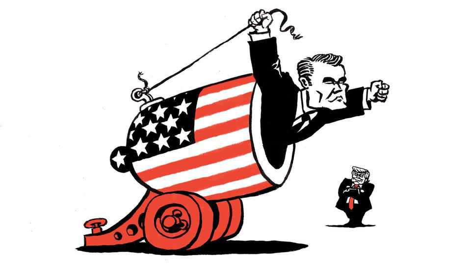
“战争是人类最悲剧且愚蠢的错误，”德怀特·艾森豪威尔将军在1947年西点军校毕业典礼上对学员们说道。15年后，道格拉斯·麦克阿瑟将军——显然不是和平主义者——告诫学员们不要成为好战者。“相反，”他说，“士兵与其他职业的人相比，最渴望和平。”特朗普或许只是在拿赫塞特开玩笑，如同他此前对赫塞特早期支持对伊朗开战的言论一样，这场战争如今陷入代价高昂的僵局。然而，凭借其揭示令人不安真相的天赋，总统点出了他所称的“战争部长”——他与赫塞特偏好的头衔——身上令人不安的特质。过去军事领袖将暴力视为悲剧性的必要手段，而赫塞特却将其视为正义且甚至令人激动的。他最爱的词汇——听起来确实很酷——是“lethality”。■
他获得独自向西点军校学员发表演讲的机会，是在5月23日的毕业典礼上。他多次使用“lethal”一词，不包括两次“lethal”的重复使用。相比之下，“peace”一词仅在他对暴力的描绘中出现一次：“你们要在暴力中感到舒适，”他叮嘱学员，“这样我们的公民才能和平生活。致命性才是你们的使命。”赫格塞特先生的讲话核心，对过往军事领导人而言再常规不过：部队必须准备战斗并取得胜利。从在国民警卫队服役的经历中，赫格塞特先生对被暴露为装备不足深感恐惧。在2024年出版的著作《The War on Warriors》中，他两次提到一个反复出现的“站在全班面前赤裸裸的噩梦”——关于执行任务时的担忧。“我焦虑万分，”他写道，“我的武器在哪里？我找不到我的步枪。”■
“我希望能没人注意到。”（当然，弗洛伊德或许会指出，有时枪支就是一把枪。）但如同紧握枪支一般，随时准备开枪的警觉性传统上只是美国最伟大战士们的最低要求。他们通常对崛起的军事领袖提出更高要求。1955年，作为总统的艾森豪威尔再次在西点军校毕业典礼上致辞，他回顾起自己40年前毕业时的自满。随着变革速度加快、毁灭性武器的出现，如今更需要“智慧以及智慧所强调的谨慎”。■
学员们不仅要准备指挥，更要理解其他民族的经济、政治和精神追求：“你们的整个人生都应同样认真地致力于推动和平，如同为战争任务做准备一样。” 麦克阿瑟则呼吁“以真正智慧的开放心态，以真正力量的谦逊”。鉴于学员们深知总统哈里·杜鲁门于1951年因麦克阿瑟抵制朝鲜停战而将其解职，他劝诫学员将政治交由平民处理的训诫必然格外有力。“国家重大问题不应由你们的专业参与或军事手段解决”，麦克阿瑟说道。在自己的演讲中，赫格塞特提到了艾森豪威尔与麦克阿瑟。■
但若技术正在重塑战场，若新的威胁正在逼近地平线，若关于军队在政治中的角色问题再次被提出，这些学员却并未从国防部长那里获得任何指引。赫格赛特先生说：“当今世界正处于十字路口，”随后却陷入死胡同，“这与过去250年的情况并无二致。”伊朗仅被简略提及。他转而着重强调多样性、公平性和包容性（DEI）的威胁。“觉醒且软弱的领导人”试图削弱西点军校，但他强调“你不能把你的代词扔向敌人。”若DEI政策在美国军队中一时出现过激行为，这并不令人意外，正如其他领域一样。然而赫格赛特的歇斯底里难以与他对作战部队专业能力的赞誉相协调。若DEI政策使士兵变得无害，又何以证明？■
若赫格塞特（Hegseth）如他所言已赢得对抗DEI的战役，为何他仍在打这场老战争？当赫格塞特告诉学员“你们见证了对种族与性别的偏执”时，他或许是在指自己压制黑人或女性军官的职业发展。他声称“仅凭资历决定晋升”更像是为提拔忠诚者（或自己）的烟幕。早在他成为美国最大雇主、全球最大军队负责人（此前作为福克斯新闻评论员时，特朗普曾称他为“中央选角”）之前，他就曾寻求招聘中的优待。■
2019年他重新加入国民警卫队时，步兵营中已难觅适合他这种中校的职位。他在《对抗战士》一书中写道：“幸好，我的好哥们”刚升任纽约指挥官。当赫格塞斯致电时，这位“了不起的家伙”承诺会聘他，哪怕“必须增设一个编制”。但这位永不停歇地抱怨的赫格塞斯再次成为受害者，他声称任命遭政治因素阻挠。无需接受多元化、公平与包容性培训，人们也能对他的特权感感到震惊；无需太多常识，人们便渴望美国最重要的职位恢复高标准。■ The Economist的订阅者可注册我们的观点通讯，汇集了最佳的社论、专栏、客座文章和读者来信。
§027 巴西高科技选票系统正失去选民信任原题：Brazil’s high-tech voting system is losing voters’ trust · 板块：Americas · 栏目：美洲
巴西高科技选票系统正失去选民信任，归咎于社交媒体、民粹政客及对机构信任的下降
巴西是全球唯一实行全电子化选举的国家。为庆祝巴西系统成立30周年，该国高等选举法院（TSE）推出了吉祥物“皮利利”，这是一款外观友好的投票机，拥有大而圆的眼睛。然而，皮利利及法院对巴西民众的广泛宣传并未挽回其选票系统日益下降的信任。2009年，45%的受访者告诉民调机构拉丁obarómetro，他们认为选举是公正的，而47%则认为选举存在舞弊。
■
至2024年，仅32%的人信任这些机器，61%的人怀疑其存在欺诈（见图表）。对投票机的看法也在发生变化。最近一项民调显示，43%的人表示无法信任这些机器。同一家机构2022年的调查中，仅22%的人表示对这些机器缺乏信心。正是在那一年，右翼民粹主义者雅伊尔·博索纳罗（Jair Bolsonaro）在竞选连任总统失败后，向互联网散布关于投票机的虚假信息。这些说法激发了2023年1月8日的骚乱，数千人闯入政府建筑。博索纳罗因试图推翻选举结果被判入狱。他是全球投票系统信任度下降现象中最激进的表现。他的儿子弗拉维奥（Flávio），一名参议员，将于10月参选总统。■
三月，保守派政治行动会议（Conservative Political Action Conference）在达拉斯举行，弗拉维奥（Flávio）声称如果选举“自由公正”，他将获胜，暗示任何其他结果都将表明选举并非自由公正。在场的许多MAGA群体成员也煽动关于可疑投票机的虚假谣言。尽管弗拉维奥的竞选活动因泄露的消息将其与一名腐败银行家联系起来而陷入困境，但博索纳罗效应依然存在：巴西右翼中相当一部分人正在质疑投票机，尤其是在社交媒体上。候选人曾在2014年、2018年和2022年的总统大选中质疑选举结果。如果今年的选举结果非常接近，落败者可能再次声称选举不公。对选举制度的不信任源于极化和网络虚假信息，而非已证实的欺诈行为。但其技术性质也助长了关于该系统的虚假信息的传播。
选民进入投票站后，机器通过指纹识别确认身份。他们随后输入所选候选人的两位数ID。选票并非按时间顺序记录，而是随机排列以确保选票保密。投票站关闭后，下午5点，计票结果会打印出来并张贴在投票站，成为唯一纸质的选票记录。一名投票官员随后从每台机器中取出存储卡，并通过虚拟专用网络将加密的电子计票结果发送至总选举局总部。执行此功能的软件由总选举局自行编写，采用与银行交易相似的安全协议。每台机器在传输至总选举局的电子记录中均带有独特的数字签名。若某批次选票的签名与总选举局记录不符，将被禁止接入网络。■
这些机器的设计初衷是不具备连接互联网或蓝牙的硬件。存储卡上也带有数字签名，因此机器会拒绝任何不匹配的存储卡。“即便TSE内部存在一两个不法分子，其多重安全防护层也足以防止他们影响整个系统或计票结果，”巴西联邦马托格罗索州立大学密码学教授卡洛斯·阿尔贝托·达·席尔瓦表示。“三十余年里，巴西选举系统从未出现任何选举舞弊的证据，”直到不久前担任TSE主席的卡门·卢西亚表示。巴西民众在投票站关闭后四小时内就能知晓选举结果。选民可通过比对各投票站的计票结果与TSE网站上发布的电子选民日志，确认选举结果。
巴西选举法院（TSE）还收集大量纸质计票样本，与电子计票进行比对后认证胜者。巴西选择电子投票系统，旨在遏制普遍存在的选举舞弊。在政客追随者曾频繁提前填写文盲选民纸质选票的年代，选民名单往往包含已故或虚假身份者。矛盾在1994年达到顶点，里约热内卢一场明显存在舞弊的选举中，数百张选票呈现相同笔迹。此后，TSE召集工程师与律师团队寻求解决方案。至2000年，全国全面实现电子投票。为增强信任，TSE在选举前组织黑客马拉松，任何18岁以上公民均可参加，费用由TSE承担。参与者可接触投票机硬件与软件，尝试对其发起攻击。■
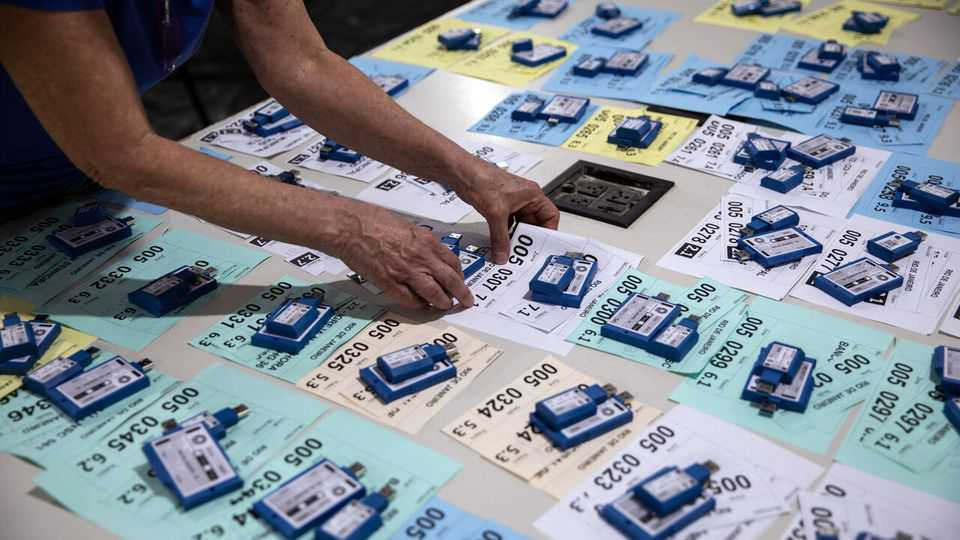
巴西选举法院（TSE）在发现漏洞后会及时修复，并要求参与者重新发起攻击。该机构还允许大学、军队、联邦警察、巴西律师协会（Bar Association）等民间组织及政党组织审查机器的源代码。里约热内卢州阿蒂图斯学院（Atitus）网络安全教授马科斯·罗伯托·多斯·桑托斯（Marcos Roberto dos Santos）曾四次参与此类测试。他说：“如果你对系统有疑问或问题，这是你的权利。然后就自己去测试吧。”2022年博索纳罗（Bolsonaro）败选后，其政党起诉要求取消第二轮选举结果——但未要求取消第一轮选举结果，因为在第一轮中该党已获得国会最多席位。然而透明度与密码学手段也有其局限。巴西法院的信任度正在下降。多数国家由行政机构负责选举，而法院则单独审理涉嫌违规行为。■
巴西选举法院掌控一切，包括投票机和软件。它负责认证选举结果并裁决争议。该机构成员与最高法院重叠，而巴西民众对最高法院普遍持怀疑态度。强硬派最高法院法官亚历山德里·德·莫拉埃斯曾主导博索纳罗的政变审判。在担任巴西选举法院期间，他处罚了一些诋毁投票机的人，并禁止博索纳罗担任公职。但丹麦奥胡斯大学网络安全专家迪戈·阿兰哈指出，巴西选举法院“承担了过多可能引发利益冲突的职能”。该国政治极化严重，以至于“任何对选举制度的善意批评都会被归为博索纳罗主义，即使批评本身是技术性的”。一些善意的批评者建议将投票机与个人纸质收据结合使用，而不仅限于计票站的电子统计，如印度的做法。
巴西国会多次呼吁以纸质记录补充电子记录，但巴西选举法院（TSE）始终予以否决。2002年TSE曾进行过试点，将打印机连接至计票机器，但常因卡纸导致计票延迟，因此TSE认为此类故障可能影响计票进度。此外，TSE还指出个人记录可能威胁选票的保密性，因为帮派或地方权势人物可能要求选民出示投票证明。“在巴西经验中，个人纸质收据为胁迫和控制选民敞开了大门，这损害了选举程序的合法性，”卢西娅女士表示。5月12日，雅伊尔·博索纳罗任命的最高法院法官卡西奥·努内斯·马尔克斯接任TSE负责人。目前TSE的另外两位最高法院法官中，一位也是博索纳罗任命，另一位近年则更接近弗拉维奥。■
尽管莫拉埃斯被指责越权，努内斯·马尔克斯则表示巴西证券交易所（TSE）此次将尽可能减少干预。这或许能暂时安抚博索纳罗的支持者。■ 注册订阅我们的拉丁美洲专属简报El Boletín，深入了解这个复杂而引人注目的地区背后的势力格局。
§028 抗议者已控制玻利维亚首都拉巴斯一个月 《美洲》专栏原题：Protesters have controlled Bolivia’s capital for a month · 板块：Americas · 栏目：美洲
1781年，原住民领袖图帕克·卡塔里对拉巴斯实施超过100天的围攻，当时市民甚至被迫以猫狗充饥。如今的拉巴斯尚未达到那个境地，但其民众正日益陷入绝望。抗议者已封锁通往玻利维亚政府所在地的道路达一个月，他们要求总统罗德里戈·帕斯辞职。新鲜食品价格翻倍，加油站燃油告罄，商铺陆续关闭，医院氧气告急。但封锁者拒绝与政府进行对话。要求帕斯总统恢复秩序的呼声日益高涨。 ■
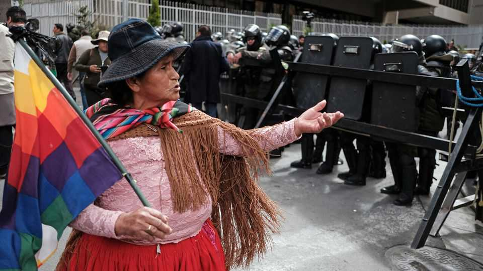
帕斯总统七个月前上任，结束了争取社会主义运动（MAS）长达二十年的几乎不间断执政。选民因该党经济管理不善导致恶性通胀和燃料短缺而将其驱逐。许多前MAS选民被帕斯承诺的渐进改革所吸引。但经济问题依旧存在，这些选民指责帕斯上任后对其置若罔闻。《经济学人》发表时，全国已有超过80处封锁。封锁由总工会、农民联合会及前总统埃沃·莫拉莱斯（Evo Morales）的追随者组成。封锁是玻利维亚颇具争议的政治传统。封锁者让所有人承受痛苦以引起注意。■
他们拥有帮助其持续运作的手段。政治分析家玛利亚·特雷莎·泽加达（María Teresa Zegada）表示，他们擅长轮换人员。如果帕斯先生（Mr Paz）能说服他们对话，他或许能做出让步。但他几乎没有回旋余地。向其组织提供内阁职位将激怒中产阶级，他们会将其视为回归MAS（争取社会主义运动，Movement for Socialism）的旧方式。薪资上涨将加剧财政赤字，预计今年将达到GDP的9%。玻利维亚人担心重演1980年代的场景，当时政府为满足工会要求而滥发货币，引发恶性通胀。经济学家冈萨洛·查韦斯（Gonzalo Chávez）表示，面临的困境是在通胀与政府稳定性之间权衡。但至少激进抗议者拒绝参与对话。■
6月2日在埃尔阿尔托（El Alto）举行的会议上，该市领导层——一个以工人阶级为主的城区，毗邻拉巴斯（La Paz）——严厉谴责那些主张谈判的人为“叛徒”，称封锁行动将持续到帕斯（Mr Paz）辞职。愤怒的市民开始要求帕斯动用武力。一些人自行拆除封锁，引发街头冲突的可能性。帕斯两周前曾派警察清理拉巴斯周边的封锁，但封锁次日便恢复原状。下一步可能是宣布紧急状态并动用军队。国防部长于6月2日辞职，但未发表官方声明。不过，动用武力突破封锁并非没有先例。■
2003年，何塞·桑切斯·德·洛萨达总统派遣士兵清剿埃尔阿尔托的封锁线，导致数十名平民丧生，这一事件引发了全国性罢工，最终导致他辞职并流亡海外。这无疑令帕斯先生深感忧虑。“他们必然心存疑虑，”经济学家何塞·科尔克说道，“因为民众在封锁线上的抵抗势必坚如磐石。” ■ 注册订阅我们的拉丁美洲专属简报El Boletín，深入了解塑造这一复杂地区的各种力量。
§029 Abelardo de la Espriella is now the front-runner in Colombia原题：Abelardo de la Espriella is now the front-runner in Colombia · 板块：Americas · 栏目：美洲
令人同情的是拉美传统中间派政客。他们一次次宣称选民厌倦了极端立场，但一次次从阿根廷到智利，再到如今的哥伦比亚，他们都被狠狠击败。5月31日举行的哥伦比亚总统选举首轮投票中，近85%的选民选择了右翼民粹主义者阿贝尔亚多·德拉·埃斯皮里拉或左翼激进派伊万·塞佩达（Iván Cepeda）。德拉·埃斯皮里拉现已成为6月21日第二轮投票的热门人选。
他出乎民调机构预料，以比塞佩达多出3个百分点的得票率获胜。传统中间偏右阵营候选人帕洛玛·瓦伦西亚（Paloma Valencia）此前几周民调接近德·拉·埃斯皮埃拉，但最终仅获得不到7%的选票，惨遭淘汰。哥伦比亚人并非厌倦极端，而是对传统中间路线感到厌倦。瓦伦西亚及其同类中心派候选人应承担主要责任。在拉美地区，这些传统中间派政党长期执政却鲜有成效，未能解决困扰选民的诸多问题。暴力、治安和毒品贩运问题日益严重，且呈恶化趋势。
中间派的失职为右翼势力打开了突破口，正如德·拉·埃斯皮利亚先生所受启发的那样，纳伊布·布克勒（Nayib Bukele）——萨尔瓦多的威权总统——通过关押高达2%的成年人口，成功遏制了帮派暴力。中间派在缓解拉美地区巨大贫富差距上也成效甚微，这为左翼激进势力提供了温床。经济增长严重滞后：截至2024年十年间，拉美地区人均实际GDP增长仅为4%——总计而非年均。极右民粹政客们借机夸大问题、全面抨击并承诺巨额政绩。哥伦比亚便是典型案例。该国是世界上最不平等的国家之一，长期受叛乱组织暴力困扰，可卡因产量占全球约三分之二。如今，哥伦比亚选民在决选中面临严峻抉择。■
塞佩达承诺推行左翼经济政策，但这种政策难以解决哥伦比亚的财政困境，同时坚持推行"全面和平政策"，即同时与所有叛乱组织进行谈判的举措。该政策在即将离任的左翼总统古斯塔沃·佩特罗任内已显成效不足。德·拉·埃斯皮里略承诺推行自由市场，但其经济政策却令人担忧地带有民粹主义倾向。他还计划对叛乱组织采取高度军事化的应对措施，并在丛林地区建造十座大型监狱，效仿伯克勒的模式。选举之夜见证了深刻的分裂。令人遗憾的是，塞佩达及其盟友佩特罗均在未提供证据的情况下质疑选举结果。佩特罗声称"某些投票站增加了数十万张选票"，塞佩达则警告称存在涉及885,000人的所谓票数差异及"异常投票模式"。德·拉·埃斯皮里略的回应一如既往地情绪化。■
他指责佩特罗先生是政变阴谋者，并称塞佩达先生“失能”。他承诺将“以理或以力”捍卫民主，补充道，如果有必要，他愿意“为哥伦比亚而死”。6月1日，塞佩达先生改变了说法，称“没有足以构成欺诈的严重违规行为”。即将展开的短程决选竞选可能将十分激烈。双方都将试图说服选民，对方对哥伦比亚构成存在性威胁，同时努力争取少数中间选民的信任。塞佩达先生将不断强调德·拉·埃斯皮里拉先生的过往：他曾是刑事辩护律师，与前准军事组织领导人有过关联，并曾为一名在哥伦比亚运营臭名昭著的金字塔骗局的人辩护。选举之夜，塞佩达先生称其对手代表“黑手党式法西斯主义”。■
佩特罗已通过提振经济来帮助盟友，他可能进一步加大投入。德·拉·埃斯皮里拉将继续强调塞佩达是威胁民主的候选人，主张将哥伦比亚引向古巴和委内瑞拉的道路，称其为毒贩和叛乱分子的候选人。德·拉·埃斯皮里拉现已成为最被看好的人选，这令对塞佩达持谨慎态度的市场感到振奋。哥伦比亚股市在德·拉·埃斯皮里拉胜出的消息公布后大幅上涨。但决选可能异常胶着。塞佩达在首轮投票中获得的支持率略高于四年前佩特罗的得票数，当时佩特罗通过提高选民参与度赢得决选。但多数人预计德·拉·埃斯皮里拉将打破这一先例。最新民调显示他在决选中领先八个百分点。特朗普则插手支持他。■
如果德拉·埃斯皮里拉先生（Mr de la Espriella）赢得选举，他将不得不面对一个左翼势力占优的国会。这种对抗可能让他的竞选活动看起来像一场轻松的前奏。■ 注册订阅我们的专属简报《El Boletín》，深入了解塑造拉美这一迷人而复杂的地区的各种力量。
§030 Even if America and Iran find an accord, don’t expect it to last原题：Even if America and Iran find an accord, don’t expect it to last · 板块：Middle East & Africa · 栏目：中东与非洲
“霍尔木兹学徒”节目又迎来戏剧性却乏善可陈的一周，这是一档评价不佳的真人秀，讲述特朗普与伊朗的战争。美国总统表示他正接近决定一项延长停火协议的协议，却随即要求更多修改。伊朗暗示可能放弃谈判。特朗普表示他本人也可能“保持沉默”。但他们仍在继续谈判。双方仍持续互射导弹，尽管名义上已达成停火协议。尽管剧情反复无常，每集节目都以同样的悬念收场。 ■
美伊双方就协议的轮廓达成一致：将停火协议延长至少60天；重新开放霍尔木兹海峡；以及为伊朗提供有限的制裁缓解，作为交换伊朗承诺削减其核计划。这仅是一项临时协议。双方仍需进一步谈判达成详细最终协议。只有在最终协议签署后，伊朗才会履行其核承诺并获得更大的经济利益。然而，谈判却在看似狭窄的分歧上陷入僵局。伊朗希望在临时协议签署后解冻其约1000亿美元的冻结资产。特朗普坚持要求伊朗做出更明确的承诺，即不会追求核武器，并交出超过400公斤的接近武器级铀储备。这些看似奇怪的障碍。理论上，到夏季末，伊朗应交出铀以换取巨额补偿。
为何坚持要求支付60亿至120亿美元的初步款项？为何美国总统如此执着于谈论伊朗核计划，即便相关承诺并无约束力？双方似乎都视临时协议为永久性协议，或至少是长期的现状。“这并非首次发生，”一位在华盛顿的阿拉伯外交官表示，“我们曾见过特朗普这么做。”未完成的协议将如同特朗普去年10月推动以色列与哈马斯达成的停火协议，当时暂停加沙战争本应是第一步，后续谈判旨在实现哈马斯解除武装、以色列撤军及加沙重建。八个月过去，这些目标仍未实现。若与伊朗的协议仍不完整，后果将更为严重。首先便是其核计划。■
高浓缩铀可能仍留在伊朗，据信已被封存在美国去年6月轰炸过的设施中。美国和以色列的间谍无疑正密切监视这些地点。共和党参议员林登·格雷厄姆（Lindsey Graham）——特朗普的盟友——提议在这些地点划定“死亡圈”。他上个月对NBC表示：“任何进入其中的人……都会丧命。”其他共和党人则试图淡化这一问题：即便伊朗能回收铀，其浓缩设施已成废墟。但只需少量离心机即可制造出核弹所需的铀。没有哪种监控计划是绝对可靠的。格雷厄姆的计划要求美国在该地区保持永久待命的军事力量。这似乎是个艰巨的任务。尽管众议院6月3日的投票不太可能实现这一目标，但这一举动反映了人们对冲突日益增长的不满。■
如果伊朗无法取回铀，它仍可推进核武器计划的其他方面：学习如何将铀制成弹头并将其安装在导弹上。让铀储备留在原地将令特朗普难堪，他长期以来坚持认为这场战争将以伊朗将“核尘埃”交给美国告终。伊朗最担忧的仍是经济问题。战争已造成数十亿美元损失，使100万人失业。5月同比通胀率达77%，商品价格涨幅达114%；德黑兰一家智库称，这是自二战以来的最高水平。任何预付款都将迅速被消耗。如果伊朗获得出口石油的豁免——这是美国提出的旨在避免特朗普向政权输送现金的尴尬形象——则意义更为重大。■
他的盟友坚持认为，如果伊朗毁约或未能达成永久协议，这一让步可能被撤销。但伊朗也可能对霍尔木兹海峡采取类似立场。若临时协议变为永久协议，美国若无法再次关闭海峡，将难以重新实施制裁。一项未完成的协议意味着局势短期内难以恢复正常。伊朗将不得不清除霍尔木兹海峡的水雷并宣布其安全。这将允许数百艘滞留船只争相离港（尽管所有船只安全撤离仍需数周时间）。油、气及其他商品的少量供应将重返市场。但船运公司和保险公司可能犹豫是否重新派遣船只进入波斯湾，以免再次被困。油、气生产商将不得不决定是否对受损设施进行昂贵的修复，同时意识到他们可能再次遭遇袭击。■
海湾地区的动荡影响将远超油气资源。若停火协议能持续至夏季，游客或许会随着气温下降重新涌入。但若出现军备竞赛，又将引发新一轮取消计划。企业可能推迟扩张计划，直到局势明朗。外籍人士也可能因长期不确定性而选择另谋他就。对任何人都不理想，但若伊朗能出口部分石油，或许对伊朗而言影响最小。美国、以色列及海湾国家则将长期面临伊朗核武器的威胁和经济不确定性。这意味着局势可能难以持续。生产国可能在夏季暂停活动——或着手拍摄以哈瓦那为背景的衍生作品——但特朗普的节目或将在今年晚些时候重新开播。■
订阅《中东简报》，每周获取关于这个引人入胜、复杂且具有深远影响的地区最新动态。■
§031 特朗普能拯救以色列免于自毁吗原题：Can Donald Trump save Israel from itself in Lebanon? · 板块：Middle East & Africa · 栏目：中东与非洲
首先传来的是6月1日本雅明·内塔尼亚胡，以色列总理，与国防部长伊萨尔·卡茨（Yisrael Katz）宣布，他们已下令以色列国防军（IDF）对贝鲁特（Lebanon首都）达伊耶（Dahiyeh）地区的恐怖目标发动攻击。随后是更多攻击威胁，以及以色列国防军对达伊耶地区居民的警告，该地区是伊朗支持的什叶派民兵组织真主党的据点，数千人已逃离。但这一次以色列并未投下炸弹。傍晚时分，唐纳德·特朗普称与内塔尼亚胡进行了“非常富有成效的通话”。 ■
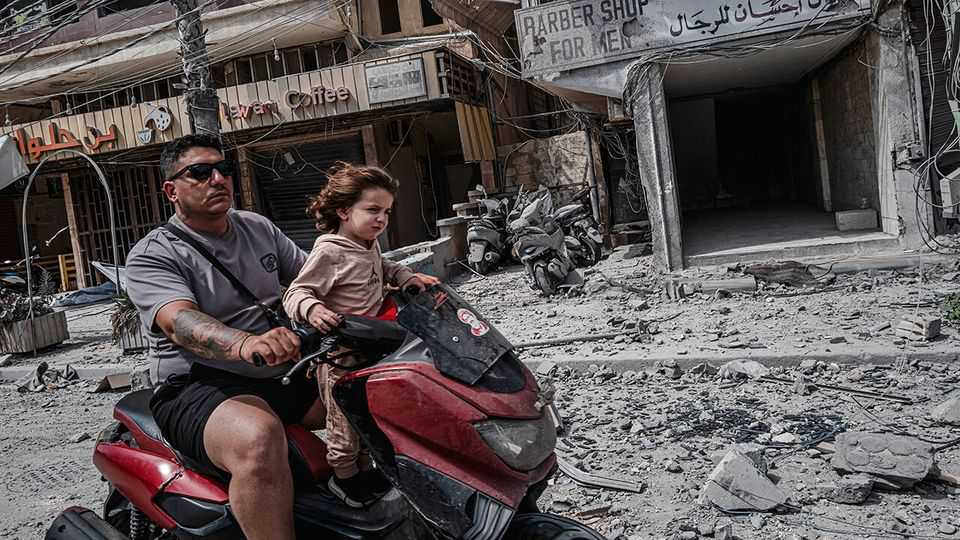
据Axios（美国新闻网站）报道，总统以充满脏话的宣读戒严令方式向内塔尼亚胡施压，称“现在所有人都讨厌以色列”。结果是以色列承诺暂停对贝鲁特的轰炸。特朗普还向真主党表示他曾与该组织对话——这是首位通过中间人与真主党进行交流的美国总统。真主党也表示不会袭击以色列城镇。这对内塔尼亚胡而言是一次外交挫折。特朗普再次命令以色列总理暂停军事行动。伊朗则展示了其要求暂停黎巴嫩冲突、保护其代理人作为与美国停火谈判的前提条件的能力。仅仅三个月前，以色列与美国还联手对伊朗发动战争。如今，以色列却被迫沦为旁观者。但特朗普此举或许反而为以色列带来了好处。
他或许阻止了以色列进一步深入黎巴嫩。当真主党于3月2日为伊朗表示支持而向以色列发射火箭时，以色列国防军（IDF）曾认为自己能在2024年完成此前未竟的行动。随后以色列对真主党展开猛烈打击。但当前的冲突从以色列角度看却远不如预期成功。真主党力量削弱后，转而使用廉价的攻击无人机。这些无人机及剩余导弹虽未能阻止以色列的入侵行动，却导致IDF持续遭受人员伤亡。对无人机缺乏有效应对措施，已给内塔尼亚胡政府施加政治压力，迫使其以任何方式打击真主党。总理随即下令以色列国防军深入黎巴嫩领土。■
以色列当前的攻势正逐渐与过去在黎巴嫩作战的战争相似，而非重演2024年那场精准打击、效果显著的战役。1982年以色列入侵黎巴嫩，打击以该国为基地袭击以色列的巴勒斯坦民兵组织。以色列国防军（IDF）随后在黎巴嫩南部地区驻扎长达18年，称其为“安全区”。直到2000年最终撤军时，真主党（Hezbollah）已占据主导地位。2006年，以色列对真主党袭击以色列国防军边境巡逻队的行动展开报复，发动大规模空袭并再度入侵。那次冲突持续34天，真主党最终迫使以军陷入僵局。在这些年份里，以色列在黎巴嫩始终面临相同困境：尽管拥有压倒性军事优势，却无法彻底消灭真主党作为战斗力量的存在。■
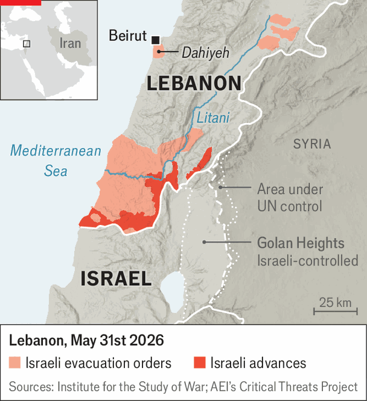
卡茨先生宣布的“新安全区”占领行动，给南黎巴嫩人民带来了更多苦难，该地区数千人丧生，数十万人被迫流离失所。此举的战略价值也存疑。替代方案同样缺乏吸引力。联合国维和部队在南黎巴嫩的部署甚至无法有效监控真主党的军事扩张，更遑论阻止其发展。尽管黎巴嫩政府承诺解除真主党武装，但其军队仍无力执行这一任务。与此同时，黎巴嫩政界人士担心重燃内战。在华盛顿会谈后，以黎双方于6月3日同意重启停火协议。但特朗普此次干预的主要目的是防止以色列行动干扰美国与伊朗的谈判进程，他急于结束这场“已变得非常无聊”的对话（他抱怨道）。■
总统臭名昭著的短注意力可能如今是阻止以色列与黎巴嫩再次陷入血腥冒险的唯一屏障。■ 注册中东简报（Middle East Dispatch），每周获取关于这个复杂且影响深远地区的深度资讯。
§032 海湾国家的统治者急于证明自己确实是强人 Middle East & Africa 一个更容易的目标 June 4th 2026 Middle East & Africa | 一个更容易的目标 海湾国家的统治者急于证明自己确实是强人 无法控制外部威胁，他们正转而压迫本国人民 June 4th 2026 科威特人如今对星期四感到恐惧原题：Gulf rulers are desperate to prove they are in fact strongmen · 板块：Middle East & Africa · 栏目：中东与非洲
海湾国家的统治者急于证明自己确实是强人 Middle East & Africa 一个更容易的目标 June 4th 2026 Middle East & Africa | 一个更容易的目标 海湾国家的统治者急于证明自己确实是强人 无法控制外部威胁，他们正转而压迫本国人民 June 4th 2026 科威特人如今对星期四感到恐惧。这天会公布最新一批被埃米尔穆罕默德·萨巴赫剥夺国籍的公民名单。人权观察人士称，自2024年5月以来，该酋长已剥夺了7万多人及其家属——约占科威特人口的16%——的国籍。这些人同时失去永久政府职位、免费医疗和拥有房产及控制企业的权利。科威特人表示，这种羞辱感让一些人选择自杀。科威特并非孤例。 ■
海湾国家正面临令人不安的战略格局：伊朗及其在伊拉克的民兵组织已向他们发射导弹；德黑兰对霍尔木兹海峡的控制正扼住石油和天然气出口的咽喉；美国的保护承诺显得不再可靠；而他们的商业模式也面临风险。面对这些威胁，海湾君主国似乎决心在国内证明自己仍是强势领袖。借战争的掩护，他们推行类似戒严的紧急措施。海湾地区数以万计的人失去了公民身份或被驱逐出境，超过1000人被逮捕，包括阿联酋（United Arab Emirates, UAE）被指控拍摄导弹袭击的外籍人士。四月，科威特收紧了公民资格标准。谢赫米沙尔（Sheikh Mishal）称此举为“民族净化”。除阿曼外，所有海湾国家都将信仰与伊朗相同的什叶派视为潜在的第五纵队。■
阿联酋是数十万伊朗人的家园，如今已封锁了伊朗人医院、学校和俱乐部。伊朗居民试图返回却遭到拒绝。“鉴于战争期间外国人的大量外流，我们本应迫切需要人口，但他们却看不到我们正在驱逐自己的民众。”科威特王室成员表示。一位不满的安全官员更直接地表示：“这就像癌症已蔓延至科威特，我们所有人都成了嫌疑人。”即便在战争爆发前，穆希亚尔谢赫已放弃科威特在海湾独裁政权中作为民主异类的地位。2024年5月，他暂停了自1938年设立的选举议会，此后便以敕令形式统治。但自战争爆发以来，他的统治手段愈发严厉。谈话节目被禁止，迪瓦尼亚（科威特的讨论论坛）也已关闭。媒体管控甚至延伸至三人以上的WhatsApp群组。
市政选举已被取消。"我们已沦为独裁政权，"一位学者如此表示。部分海湾安全分析人士担忧这场清洗可能动摇地区小国的稳定。这些国家富裕但人口稀少、出生率低迷，周边大国——伊朗、伊拉克和沙特阿拉伯——则虎视眈眈。被剥夺国籍者包括与科威特人结婚的外国女性、石油高管、银行家以及科威特驻英大使。国籍剥夺标准的持续变动令人不安。"为何要为一个只排斥我的国家献出生命？"一位无国籍的公民活动人士问道。1991年动员科威特人抵抗伊拉克入侵的退休将军也表示认同："我不确定如今是否还有人愿意为这个国家战斗。"对什叶派及长期伊朗居民的压力正重燃教派情绪，这种情绪此前已呈下降趋势。■
阿联酋关闭了什叶派清真寺，拘留了数十名什叶派人士，包括至少两名官员，指控其属于什叶派恐怖组织。许多什叶派人士试图表达忠诚，将社交媒体头像换成统治者照片，并摘下手上醒目的银戒。但收效甚微。科威特一名高级官员称，数百名什叶派人士已被降职。统治者对什叶派群体的打压与伊朗的强势拉拢形成呼应。巴林什叶派举行了阿里·哈梅内伊（Ayatollah Ali Khamenei，伊朗已故最高领袖）的悼念仪式。主张宗教与政治分离的传统什叶派人士抱怨，亲伊朗的活动人士如今占据主导地位。阿曼则保持独立，与伊朗维持关系。阿曼寻求与伊朗共同允许船只通过霍尔木兹海峡，是海湾国家中唯一保持每日航班的国家。■
在海湾国家外长中，阿曼是唯一一个在哈梅内伊（Khamenei）去世后签署伊朗大使馆哀悼册的国家。阿曼希望借助其作为仅有的两个不完全依赖霍尔木兹海峡的海湾国家之一的地位，取代阿联酋（UAE）成为地区主要贸易门户。令其欣喜的是，外国侨民正逐渐迁往阿曼，包括从阿联酋和卡塔尔迁来的伊朗人。阿曼的政治体制仍属专制，但与其他海湾国家不同的是，它回避身份政治。过去一年，阿曼股市的表现超越了整个海湾地区。“迪拜的时代已经过去了，”一位最近将区域总部迁至阿曼首都马斯喀特的伊朗咖啡商人坚称，“现在是阿曼的时代了。” ■ 注册中东简报（Middle East Dispatch），每周获取关于这个复杂且具有深远影响的地区的重要信息。
§033 尼日利亚基督教团体争相争取特朗普的美国 中东与非洲 MAGA传教士原题：Nigeria’s Christian groups scramble to win over Trump’s America · 板块：Middle East & Africa · 栏目：中东与非洲
美国众议院正在审议的一项法案将为送往尼日利亚的财政援助附加新条件。国会共和党人表示，他们希望尼日利亚政府对国内北部及“中带地区”（Middle Belt）的暴力事件采取更多行动。具体而言，他们要求尼日利亚政府确保更好地保护当地基督徒免受“残酷迫害”。若该法案通过，将给尼日利亚政府带来困扰，因为若法案通过，尼日利亚可能更难获得美国援助。■
这在某种程度上是该国基督教压力团体的胜利，这些团体自总统第二个任期去年开始以来一直在游说特朗普政府。尽管尼日利亚政府强调该国安全危机的复杂性，但基督教活动人士发现效仿美国福音派将暴力事件以宗教角度解读颇为有用。一些人甚至指控尼日利亚基督徒正面临“种族灭绝”。每年有数千名基督徒和穆斯林在尼日利亚遭到袭击身亡，主要发生在北部地区，那里政府控制力最弱。暴力事件源于极端主义、劫匪活动以及牧民与农民之间的冲突。仅有少数事件涉及基督徒因信仰而被直接针对。■
然而，压力团体声称基督徒正遭受系统性迫害，并要求美国介入。"如果国际关注是促使政府采取果断行动的必要条件，那么尼日利亚的基督徒社区对此表示欢迎，"领导尼日利亚基督徒协会的丹尼尔·奥科主教表示。这位主教和其他人呼应了在美国形成的叙事，这种叙事与特朗普政府官员产生共鸣。支持MAGA的传教团体认为"主流媒体"低估了对尼日利亚基督徒的威胁。为应对这一观点，这些团体将暴力场景剪辑成视频上传至社交媒体，以展示所谓"迫害的真相"。"我们看到的视频并非每条都经过篡改或操控，"美国外交关系委员会的埃贝内泽·奥巴达雷表示，"但到了某个阶段，你已无法分辨真假。" ■
一种病毒式内容的来源是位于爱荷华州的传教组织“迫害者援助组织”（Equipping the Persecuted），该组织运营着名为“尼日利亚真相”（Truth Nigeria）的网站。该网站声称以“无畏诚实”报道尼日利亚暴力事件，但其叙事明确指向基督教受害者与穆斯林加害者，将尼日利亚袭击报道与带有MAGA倾向的内容混合，例如关于去年被谋杀的美国右翼活动家查理·基尔（Charlie Kirk）在非洲所谓大规模守夜活动的报道。基督教活动人士支持美国去年年底将尼日利亚重新指定为“宗教自由特别关注国家”，并欢迎美国对尼日利亚北部恐怖组织的空袭以及派遣美军协助军队对抗武装分子。其他潜在好处可能以资金和权力的形式呈现。■
正在参议院推进的法案建议将部分资金分配给“基于信仰的组织”。尼日利亚团体可能分得其中一部分资金，同时也能从同情的美国基督徒那里获得更多捐赠。他们或许还期待美国提升其在尼日利亚北部知名穆斯林政客中的影响力。然而，他们对基督徒受迫害的关注正在毒化尼日利亚政治。总统国家安全顾问面临毫无根据的指控，称他与恐怖分子勾结，原因是他既是穆斯林又是富拉尼族（Fulani）成员，而该族群常被污名化为极端分子和罪犯。■
奥巴达雷总统警告称，随着明年总统选举临近，"将出现更多暴力事件，因为那些想利用这一问题作为武器来攻击总统的人将试图煽动更多紧张局势"。在首都阿布贾，多位受访者表示他们不敢讨论基督徒遇害事件。即便如此，越来越多希望引起美国关注非洲安全问题或政治威胁的人，开始以基督徒权利为话题展开论述。在坦桑尼亚，压制批评选举期间暴力行为的宗教领袖被描述为对基督徒的威胁。就连被美国认定为威胁宗教自由的苏丹内战中快速支援部队，也正向特朗普政府强调其军队对手与伊斯兰主义者的关联。这种策略看来正逐步蔓延。■
订阅《Analysing Africa》每周通讯，让您掌握世界上最年轻（人口结构）且最不为人知的大陆的最新动态。■
§034 中东及非洲 | 安然无恙，戈马（我只负责推车）原题：The parable of the tshukudu, Goma’s quintessential transport · 板块：Middle East & Africa · 栏目：中东与非洲
对许多外来者而言，戈马的象征是一名持自动步枪的年轻男子。去年，位于刚果（金）东部的这座城市被M23叛军攻占，该叛军得到邻国卢旺达的支持。目前该城仍处于被占领状态，或根据M23的说法是“解放”状态。最近，戈马这个名字也可能让人联想到身穿防护服的医护人员，因为埃博拉疫情已从该省蔓延至北部地区。然而，戈马真正的象征却是一种独特的、人力驱动的木制三轮车，当地人称之为特库杜（Tshukudu）。
■
看起来像是孩童随手画出的简笔画，带着简单的折线框架和两米长的甲板。然而作为在混乱城市中运输货物的工具，它却证明了完美无缺。它窄小的身形能灵活穿梭于繁忙的市场之间。车轮周围装有橡胶条，牛角式把手下装有弹簧，能有效缓冲路面坑洼带来的震动。其载重能力甚至超过自行车，骑手们炫耀着单次能运送超过500公斤货物的壮举。以200美元的价格，无需燃油成本，它比摩托车更经济。特库杜（Tshukudu）据说诞生于上世纪70年代，由戈马（Goma）周边山地农民发明，用于将农产品运下山。时至今日，特库杜仍是年轻人维持生计的重要工具。“特库杜很好，因为我们没有工作。”26岁的萨迪基（Sadiki）说，他最重的货物是50桶汽油，还曾扛过一头牛。“特库杜不是活的。”他补充道。■
刚果与M23武装组织的冲突正在打击商业活动。银行依然关闭，农民逃离土地，大量援助人员也已撤离。萨迪基表示，过去购买20公斤大米的消费者现在只能每次买5公斤，因此对他的依赖程度降低。与此同时，来自印度和中国的廉价机动货运三轮车——因三轮而被称为“三轮车”——正争夺剩余的重货运输市场。“三轮车司机正在抢走我们的市场，”23岁的巴哈蒂叹了口气。然而戈马市的象征却不会消失。联合国维和部队在戈马驻扎30年来曾举办过图库杜赛，冠军将联合国标志涂在白色车辆上。纪念品商贩兜售着迷你木制模型。市中心矗立着一尊骑着图库杜的男子雕像。（颇具戈马特色的是，雕塑家是一名军校官。）■
一小群人正等待自拍，一位当地导游在一旁观察并说道：“当你去巴黎，你会拍埃菲尔铁塔的照片。当你来到戈马，你必须拍一张tshukudu。” ■ 订阅《分析非洲》每周通讯，了解这个世界上最年轻、最不为人知的大陆。
§035 乌克兰已成为欧洲的战争原题：Ukraine is now Europe’s war. Survival can’t be the only aim · 板块：Europe · 栏目：欧洲
“这是欧洲的关键时刻，”2022年俄罗斯坦克入侵乌克兰时，欧洲委员会主席乌尔苏拉·冯德莱恩（Ursula von der Leyen）曾如此表态。如今，经过数年的迟疑，欧洲或许终于下定决心。目前，欧盟成员国及其他欧洲国家（如英国）承担了对乌克兰几乎全部的援助责任（见图表）。军事整合进程正在推进，法英联合倡议设立的停火监督机制已启动。本月起，900亿欧元（1050亿美元）贷款将开始流向乌克兰。对俄罗斯的制裁也日益严厉。
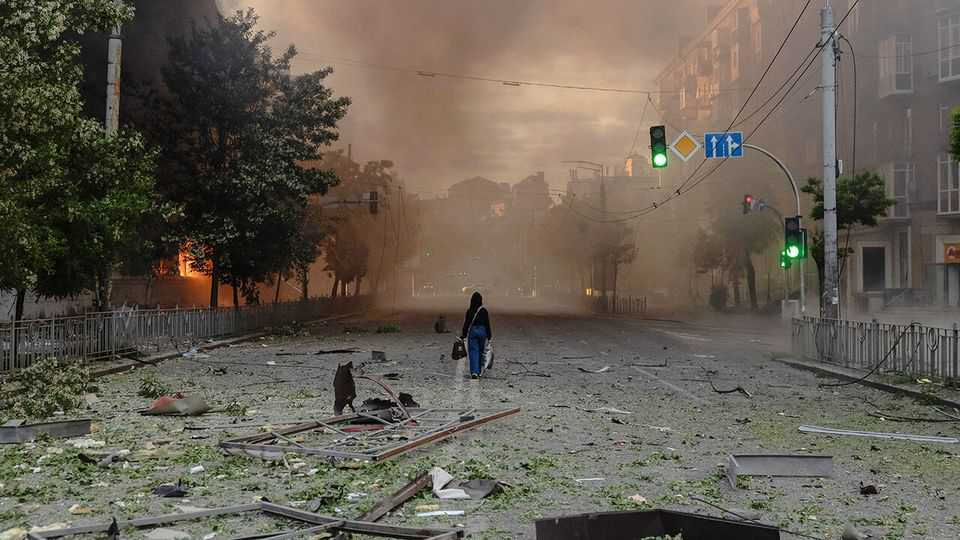
与此同时，乌克兰近期在战场上的进展重燃了外交可能性。欧洲希望接替美国在乌克兰问题上的努力，后者已陷入僵局。“我们将成为解决方案的一部分，也应参与讨论，”法国总统埃马纽埃尔·马克龙（Emmanuel Macron）在二月表示。首次出现此类话语，听起来不再像恳求，而是描述现实。欧盟驻乌克兰大使卡塔里娜·马特罗诺娃（Katarina Mathernova）表示，欧洲的支持展现出的韧性，远超我们曾敢想象的极限。然而尽管欧洲的介入为其提供了筹码，官员们承认，各国政府仍在摸索超越单纯维持乌克兰生存的策略。
最近几周，政策制定者过早地展开讨论，是否应派特使与普京谈判（提出的潜在人选包括安格拉·默克尔和马里奥·德拉吉），但缺乏对欧洲人希望实现目标的清晰认知。5月28日，欧盟外交政策协调员凯娅·卡拉斯（Kaja Kallas）认为淡化相关猜测更为明智。欧洲官员普遍认同普京处境艰难，但鲜有人看到他愿意撤回要求的迹象。这限制了实质性谈判的可能性。一名官员表示，欧洲目前能向普京提供的唯一选择是逐步放缓进一步制裁。“我们不反对真正意义上的谈判，”爱沙尼亚外长马格斯·塔赫克纳（Margus Tsahkna）表示，“但目前尚无实质内容可谈。”这种混乱反映了各方目标的分歧。■
一些欧洲政府希望通过“调解”行动试探俄罗斯的底线，这可能涉及个人中间人而非政府，或非欧盟国家如土耳其。与普京展开严肃谈判，欧洲在乌克兰一侧参与，仍显得遥不可及。“我认为两者都需要，”一位外交部长表示。关于潜在谈判的最激烈讨论正在英法德三国（E3）之间进行，这可能重燃波兰等东欧国家对西方国家可能绕过他们与俄罗斯“重置”关系的担忧。乌克兰对此也持怀疑态度。若普京愿意妥协，停火可能要求乌克兰接受东部顿巴斯地区的领土损失。■
在提供尚不明确的安全保障之外，欧洲最有效的安抚方式是加快乌克兰加入欧盟的进程，这正是乌克兰自2014年马亚钦革命以来一直渴望的目标。去年在美主导的和平谈判中曾传出消息，称乌克兰或于2027年加入欧盟。但尽管冯德莱恩等人努力维持乌克兰的入盟希望，这一时间表对一个体量庞大、部分腐败、人均收入仅为保加利亚约三分之一的国家而言完全不现实。官员们认为，乌克兰十年内加入欧盟都属幸运。这使得乌克兰日益高涨的期望与多数欧盟政府对此议题的回避态度之间形成日益扩大的鸿沟。■
为遏制这一趋势，德国总理弗里德里希·默茨（Friedrich Merz）最近提出了一项“准成员国”计划，允许乌克兰获得部分欧盟机构的准入权限，但不享有投票权、补贴或单一市场准入。柏林智库卡内基俄罗斯与欧亚研究中心（Carnegie Russia Eurasia Centre）主任亚历山大·加布耶夫（Alexander Gabuev）表示，这可能是“乌克兰能获得的最好结果”。但该提议在乌克兰国内遭遇冷遇，民众将其视为陷入无限期停滞的代号。乌克兰总统泽连斯基（Volodymyr Zelensky）随即驳回默茨的提议，称其“不公平”。本月欧盟峰会可能开启一个或多个谈判“工作组”，但正如一位欧洲官员所言，“加入欧盟的讨论在双方看来都充满虚伪性”。欧洲人认为泽连斯基未能控制预期是不负责任的表现。
他们也担心为乌克兰做出例外会打击巴尔干地区潜在加入国的积极性。与此同时，乌克兰国内正出现一种对西方持怀疑态度的新情绪。最新民调显示，近四分之三的乌克兰人仍支持加入欧盟——但支持率下降最快的是年轻群体。随着乌克兰承担越来越多的国防责任，包括制造武器和无人机技术，这些技术被全球伙伴国家所寻求，它希望获得对权力格局变化的认可。“我看到乌克兰身份正在发生深刻变化，”欧洲对外关系委员会乌克兰问题观察员贾娜·科布佐娃（Jana Kobzova）表示，“他们曾将欧盟视为救世主，如今则转向自力更生。许多人说，‘我们现在在保护你们。’” ■
乌克兰改革派仍希望借助欧盟的资金和政治承诺作为对抗威权主义倾向的屏障。“加入欧盟对乌克兰而言就像隧道尽头的光，”乌克兰外交官拉娜·泽卡尔（Lana Zerkal）表示。然而泽伦斯基总统对附加条件的900亿欧元援助包感到沮丧。加入欧盟的第一阶段要求乌克兰在2027年前完成法治改革，资金才会释放。但乌克兰改革进程的缓慢令欧洲官员感到失望。“我们需要看到基辅更多的努力，”一名官员表示，“他们需要帮助我们为他们发声。”时间紧迫。尽管泽连斯基称其无人机和导弹对俄领土的远程打击为“长期制裁”，提振了士气，但没人知道这种提振能持续多久。
俄罗斯正加大对基辅及其他城市的袭击力度，对电力和供水基础设施的进一步打击可能使明年冬天比去年更加严峻。目前欧洲的武器和资金仍在支撑乌克兰。上周泽连斯基（Zelensky）与瑞典达成协议，获得可帮助拦截巡航导弹的战斗机。但欧洲尚无法提供保护乌克兰城市的反导导弹。上周泽连斯基还致信特朗普（Donald Trump），请求提供爱国者导弹拦截系统。与此同时，欧洲自身的倒计时也已开始。明年将有多国举行重要选举，首当其冲的是4月的法国大选。外交政策分析人士担忧，若极右翼政党国民联盟（National Rally）赢得总统选举，可能会中止欧洲部分承诺，包括资金筹措。■
它肯定会反对乌克兰加入欧盟的申请。“法国农民尚未意识到这一点，”前北约官员、现任职于拉森森全球咨询公司的法比斯·波蒂埃表示，“我们尚未开始真正艰难的部分。”不断升级的援助、外交和入盟讨论表明，欧洲正在承担东部战线战争的责任。但其计划仍很大程度依赖希望：乌克兰的抵抗不会崩溃、特朗普先生能被说服反对俄罗斯，或普京先生能被逼进行谈判。“这显然是欧洲的战争，”波蒂埃先生说，“问题是，它能否成为欧洲的和平。” ■ 要持续关注欧洲最大新闻，请订阅我们的周度专属简报《Café Europa》。
§036 法国对德国军备重整的不安 欧洲谁害怕联邦国防军原题：Why France is uneasy about German rearmament · 板块：Europe · 栏目：欧洲
当俄罗斯于2022年发动全面入侵乌克兰时，法国和德国的国防开支几乎相当。到2029年，德国的国防预算预计将达到至少1500亿欧元（1740亿美元），约为法国的两倍。从欧洲安全角度看，德国的军备重整显然是有益的。然而在巴黎，这一前景也引发了不安。法国武装部队司令法比恩·曼登将军在上月的参议院听证会上表示，风险在于五年后法国可能在自己曾主导的领域“落后于邻国”。 ■
法德关系建立在一种隐性平衡之上：法国承担军事负担，而德国提供经济实力。作为欧盟唯一拥有核武器的国家，且具备强大的远征和战略文化，法国习惯于引领行动。例如，总统埃马纽埃尔·马克龙（Emmanuel Macron）曾与英国合作，组建了一支“志愿联盟”，以备乌克兰在停火协议生效时部署。德国已加入该联盟，但总理弗里德里希·默茨（Friedrich Merz）却不愿承诺派遣地面部队。事实上，法国军方对德国低风险承受力和依赖美国保证的倾向颇为不屑。一名法国军方官员表示：“我们必须能够设想在没有美国参与的情况下进行战争，但他们完全未做好这种思考的准备。” ■
在国防事务上，法国仍认为自己与英国更为协调。在欧洲范围内，默茨先生承诺将联邦国防军打造为“欧洲最强大的常规军队”，计划到2035年兵力增加40%，这一提议获得广泛支持。马克龙总统长期主张增强欧洲的“战略自主”，德国更大的军事投入有助于实现这一目标。波兰和波罗的海国家对这一前景感到安心，意大利亦然。去年一项民调显示，48%的波兰人认为强化的联邦国防军将改善波兰安全，仅25%持反对意见。然而，在私下场合，法国人仍感到不安——这不仅源于他们财政空间不足的挫败感。“这是房间里的大象。”一位法国高级军事官员表示。德国可能拥有欧洲最大军队的前景，“对我们来说是不可想象的”。■
德国曾三次入侵法国，但法国政界人士中无人真正认为这可能威胁到其北约盟友。民粹右翼政党德国另类选择党（Alternative for Germany）的崛起引发担忧，但主要源于其亲俄倾向。但法国长期以来的地缘政治思维，始终围绕着将德国的影响力嵌入更大的组织，如欧盟和北约展开。“在松懈之下”，德国绿党联合主席弗朗齐斯卡·布兰特纳（Franziska Brantner）在本月一次关于重新武装的演讲中指出，“盟友也感受到某种他们太有礼貌而不敢大声说出的情绪：对欧洲大陆再次由德国这一军事强国主导的前景，根植于历史的隐忧。”一个真实的担忧是工业竞争。法国拥有达索、泰雷兹、赛峰和海军集团等领先的国防企业，这些企业在最近的出口合同中斩获颇丰。■
但在其他领域，如战斗坦克制造，两国则展开出口竞争。如果德国将额外支出用于提升技术并提高生产效率，法国可能会被甩在后面。目前，达索（法国航空制造商）与空客德国分公司之间因联合研发“未来战斗航空系统”项目（马克龙总统的重点项目，包含下一代战斗机）而陷入内斗，威胁着该项目的生存。对法国而言，未来常规力量的任何失衡都将由其核威慑力量来抵消。3月，马克龙提出了一项新的“前沿威慑”战略，与欧洲其他国家建立合作机制，其中德国将作为“关键”伙伴。该战略旨在让欧洲常规力量协助“分担”法国的威慑力量，例如在演习或部署法国核打击型战斗机时。
确实，蒙田研究所（Institut Montaigne）的米歇尔·杜克洛（Michel Duclos）认为，“前沿威慑”可以被视为将不断扩大的德国常规军力纳入更广泛欧洲项目的一种方式。巴黎战略研究基金会（Foundation for Strategic Research）的弗朗索瓦·埃希博（François Heisbourg）则认为，短期内支出差距的政治后果可能有限，尤其是因为法国的威慑能力。但若法国明年总统选举中出现极右翼国民联盟（National Rally，RN）当选，这将带来新的紧张局势。可能的国民联盟候选人乔丹·巴德拉（Jordan Bardella）表示，法国的核威慑应仅扩展至购买法国而非美国战斗机的盟友。其他欧洲民族主义者也要求附加条件：波兰希望德国重新武装的同时伴随战争赔款。■
目前，德国在欧盟内部的领导地位仍将继续依赖其经济实力。其战略可信度仍需进一步赢得。然而曼登将军指出，即便在这一点上，法国也不能掉以轻心。“五年后，我们拥有实战经验与某种文化优势的论点将不再成立，”他向参议院表示。“对美国人而言，德国正逐渐成为欧洲的标准。” ■ 为获取最新欧洲要闻，订阅我们的周度专属通讯《Café Europa》。
§037 佩德罗·桑切斯能撑多久原题：How long can Pedro Sánchez last? · 板块：Europe · 栏目：欧洲
八年前的本周，佩德罗·桑切斯（Pedro Sánchez）组织并赢得对保守派现任首相马里亚诺·拉霍伊（Mariano Rajoy）的议会不信任案，成为西班牙首相。导火索是拉霍伊所属的右翼人民党（PP）前官员因腐败被定罪。如今西班牙政治已几乎回到原点。曾承诺重塑西班牙民主的桑切斯，却因党内高层丑闻陷入困境，面临要求提前举行大选的呼声，民调显示右翼政党将赢得选举。■
但他坚持称，其左翼政府将一直执政至本届议会任期结束的2027年7月“并更久”。西班牙工人社会党两位核心幕僚——何塞·路易斯·阿巴洛斯和桑托斯·塞尔达诺分别于2024年和2025年因操纵公共合同被起诉。首相表示遭遇背叛、道歉并誓言继续执政。但最新打击甚至更为严重。上月，一名高等法院法官将前社会党首相、被部分人视为该党价值观守护者的何塞·路易斯·罗德里格斯·萨帕特罗列为涉嫌操纵影响力的犯罪集团头目。司法调查聚焦于萨帕特罗与委内瑞拉独裁政权的争议性关联，特别是桑切斯政府在疫情期间对委内瑞拉-西班牙航空公司Plus Ultra提供5.3亿欧元（6.2亿美元）救助的事件。■
法官称，向萨帕特罗及其女儿支付约200万欧元的咨询费，主要目的是为安排救援事宜收取佣金。萨帕特罗同其他被司法调查的社民党人士一样，否认有任何不当行为。桑切斯从未明确解释为何仅有四架飞机的Plus Ultra公司却获得了专为西班牙战略经济重要企业设计的纾困资金。数日后，另一位高等法院法官下令警方搜查西班牙社会党总部。这是他调查的一部分，针对塞尔丹等人涉嫌策划的诽谤或贿赂参与其他调查的警方和检察官的阴谋。桑切斯承认该党存在失误。但他的多名幕僚声称，这些调查是企图通过不正当手段推翻政府的有组织行动。■
他们抱怨遭到迫害和双重标准，认为针对社会党的案件处理速度远快于涉及人民党的案件。他们有一半的道理。桑切斯先生的弟弟及其妻子在基层法院面临刑事指控，指控内容看似仅涉及不道德行为而非违法行为：前者接受地区政府的闲职，后者为大学教席筹款。相比之下，2013年拉霍伊政府前内政部长涉嫌滥用职权的案件直到现在才进入审判阶段。但领导最新调查的两位最高法院法官均享有无可挑剔的声誉。扎帕特罗的调查最初由法国和瑞士检察官启动。而关于迫害的指控已难有说服力。■
一份未公开的民调显示，只有大约一半的社会主义者选民相信他们，社会学家兼前社会主义党议员伊尼亚齐奥·乌尔奎祖指出。最新丑闻促使政府议会盟友——巴斯克和加泰罗尼亚民族主义政党——呼吁提前举行大选。但他们不愿通过支持谴责动议来促成此事，因为这意味着要与右翼强硬派政党Vox党投票结盟。私下里，许多社会主义党市长和地方官员表示，桑切斯计划在2027年7月任期结束前继续执政，这将削弱他们在明年5月地方选举中的胜算。但很少有人公开表达这种担忧。与表面现象相反，西班牙并非特别腐败的国家。贪污主要集中在公共采购和政党资金领域。尽管如此，尽管桑切斯做出过承诺，他仍未能有效遏制这些现象。■
政治僵局带来的代价正加剧公众对西班牙民主及其制度的不信任，越早举行选举越好。■ 为掌握欧洲最重要的新闻动态，请订阅我们的周度专属简报《Café Europa》。
§038 意大利追踪科萨·诺斯特拉的财富原题：Italy has tracked down Cosa Nostra’s riches · 板块：Europe · 栏目：欧洲
意大利警方从科莱奥内黑手党处查获价值2亿欧元的非法资产，该黑手党曾一度令整个国家陷入恐惧。
一切始于一位在安道尔（位于法国和西班牙之间的微型国家）工作的可疑银行员工。她对一位意大利女性客户账户中的1200万欧元（约合1400万美元）产生了兴趣，该女性的儿子声称这笔钱是其已故丈夫的遗产。一条线报让意大利驻马德里大使馆的官员介入，由此引发了一场持续近三年的全球调查。5月28日，调查最终以这位女性、她的儿子及其前夫吉亚科莫·塔姆布雷洛（Giacomo Tamburello）的逮捕告终，后者虽被判有罪贩毒，但仍在西西里岛接受居家监禁。
■
这起行动还导致意大利执法部门有史以来最大规模的联合扣押：至少2亿欧元资产分布在九个司法管辖区。根据226页的搜查令，这些资产不仅代表了一名国际毒品大亨的财富，更涉及一个在1990年代对意大利国家宣战的黑手党派系的非法资产。搜查令指出，65岁的塔姆布雷洛（Mr Tamburello）、其前妻及其子卢卡（Luca），是该黑手党派系所积累的流动资产的保管者。该派系起源于西西里科莱奥内镇，由萨尔瓦托雷·“托托”·里纳（Salvatore “Totò” Riina）领导，曾暗杀两名反黑手党检察官乔瓦尼·法尔科内（Giovanni Falcone）和保罗·博尔塞利诺（Paolo Borsellino），并在意大利本土制造恐怖，曾在罗马、佛罗伦萨和米兰等地引爆炸弹。意大利反黑手党总检察官乔瓦尼·梅利洛（Giovanni Melillo）将此次逮捕和资产扣押与西西里黑手党“科萨·诺斯特拉”（Cosa Nostra）试图东山再起的企图联系起来。■
自1993年里纳被捕（他于2017年在狱中去世）以来，西西里黑手党逐渐被卡拉布里亚的“那不勒斯黑手党”、那不勒斯的卡莫拉组织以及外国犯罪集团蚕食。梅利洛表示，除了没收该组织非法所得，还挫败了西西里黑手党试图以统一组织重组的企图。这明显指向一个名为“顶楼”的组织，该组织协调西西里黑手党活动，据信由里纳领导。上述指控尚未在法庭上得到证实，三名嫌疑人均否认犯罪。检方部分依赖“叛徒”（意大利语pentiti，指向当局提供证据的证人）。据一名叛徒称，塔姆布雷洛自1983年起便与科里奥内斯首领马特奥·梅西纳·登纳罗合作，后者于2023年被捕，同年去世。■
担保书还包含一段监狱庭院中里纳与另一名囚犯的对话片段，其中里纳表示已将财富托付给梅西纳·登亚罗，后者被部分人视为里纳的继任者“所有黑手党的首领”。梅西纳·登亚罗涉足可再生能源、超市、建筑和旅游业投资。调查人员称，截至其去世时，他的资产估值约为40亿欧元。从坦布雷洛家族扣押的资产包括分散在加勒比海至地中海地区的40多个账户中的现金、12公斤金块、通过开曼群岛注册公司持有的黎巴嫩银行股份、六辆汽车以及西班牙马贝拉及其周边地区22处房产。坦布雷洛之子卢卡在当地是一位受尊敬的商人。■
在金融行业工作多年，曾任职于法国巴黎国民银行纽约分行和摩根士丹利伦敦办公室的卢卡最终定居在科斯塔德尔索尔。直到最近，他还是伯克希尔哈撒韦家庭服务公司（Berkshire Hathaway Home Services，简称BHHS）马贝拉分部的负责人，这家公司是沃伦·巴菲特创立的投资机构旗下的房地产部门。BHHS发言人表示，卢卡自2024年起就不再在该处任职。但截至去年十月，公司仍称他为“我们的科斯塔德尔索尔首席执行官”。其父亲的安排则更为模糊。一名叛徒透露，利润的10%被指定用于梅萨纳·登纳罗：“否则他们就会被他杀了。” ■ 要了解欧洲最大新闻，请订阅我们的周度会员专属简报《Café Europa》。
§039 Has reduced illegal immigration without goon tactics原题：Has reduced illegal immigration without goon tactics · 板块：Europe · 栏目：欧洲
作为常被称颂的和平项目，欧盟在制定政策时却显得异常咄咄逼人。它动辄祭出贸易与财政领域的“ bazookas”（火箭筒）来击溃危机，为每个问题提供“万能药”式解决方案，并保留“核选项”作为最后手段。然而在缺乏欧盟军队甚至警察部队的情况下，这支以笔代剑的欧盟官僚机构几乎从未真正握有武器。唯一例外——颇具意味的是——是欧盟的边境巡逻机构。
自2005年成立起的十多年间，Frontex执法人员仅凭哨声和训斥协助各国政府阻止移民。如今他们也配备了Glock 9mm手枪，风格类似FBI。在旨在让战争不可想象的联盟中，首个超国家机构的武器并非用于防御军队，而是用于阻止无武装人员入境。无论是由于Glock手枪，还是更可能由于近年来一系列新措施，近期欧盟非法移民数量明显下降。Frontex发现的非法越境事件在过去两年内减少了逾半数，欧盟各国的庇护申请需求也大幅下降。■
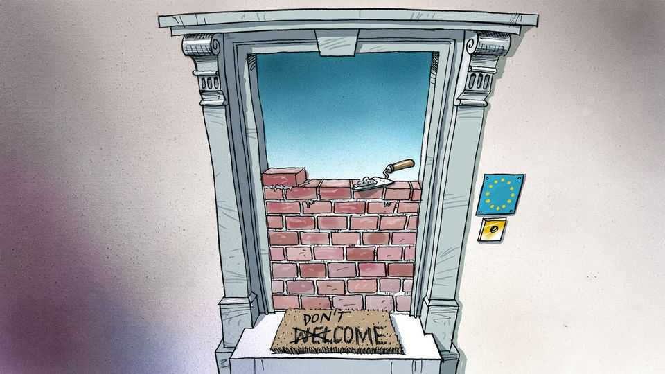
尽管移民潮往往随不可预测的节奏起伏——2015年和2016年，叙利亚人和阿富汗人百万级的涌入欧洲，距离其国内冲突爆发已过去数年——但如今欧盟外部边境却呈现出一种奇特的平静感。6月12日起，一项最初在十年前危机最严重时期构思的“移民应对方案”将正式实施，加强边境管控并进一步压低非法移民数量。或许，也许，甚至可能，欧洲已破解了这一难题。可惜，政治敏感的境内移民问题——往往缺乏有效融入——仍悬而未决。可以说，欧洲已解决了一半的移民问题。不过，内政部门官员中首次出现类似乐观的氛围。■
非法移民是欧盟所有领导人深知若处理不当可能丢掉职位的唯一议题。为此，布鲁塞尔官员们已想出切实可行的办法来遏制非法移民潮。最有效的手段是向“中转国”如突尼斯和埃及提供资金，以换取这些国家阻止来自更远地区的移民继续前往欧洲。与土耳其的此类协议曾在2016年缓解了移民危机，此后该政策进一步扩大。如今欧盟与移民来源国合作更为紧密，即便这意味着与塔利班等不受欢迎的政权进行对话。潜在移民将面临更加严峻的挑战。■
从本月底起，任何以不正规方式抵达欧盟且难以获得难民庇护（因其来自被认定为安全的国家，如孟加拉国）的人员，将在边境拘留营中等待其申请被审核。目前，大多数申请庇护未获批准的申请人过去会花费数年时间在欧洲国家的灰色经济中工作，等待被遣返。这一状况将不再延续。6月1日达成的协议规定，申请庇护未获批准者可能被安置在乌干达、乌兹别克斯坦等偏远国家的“遣返中心”，由欧盟安排其返乡。欧盟希望通过这种方式让潜在移民在踏上旅途前就放弃计划。
欧洲在阻止移民入境方面值得称赞，其做法避免了美国移民执法者所使用的表演式残酷手段。尽管移民议题的语境更为严厉，许多非政府组织对这种策略感到震惊，认为该策略可能将欧洲的问题转嫁给令人不齿的政权，但整体而言这些措施仍属合理。然而，仍存在诸多潜在风险。申根协议（Schengen）——这项免签旅行计划——已因担心非法移民在欧盟各国间流动，被法国、德国等多国部分暂停。若移民潮再度激增，目前尚不清楚该协议的效果如何：尚未建立的非洲或亚洲遣返中心，最多也只能容纳有限数量的人。■
试图将移民处理外部化（如意大利2024年在阿尔巴尼亚开设的处理庇护申请的海外中心）已陷入欧盟法院的争议。移民问题持续毒化欧洲政治。但如今，这一问题不再主要源于边境新移民的涌入。相反，对过去抵达的移民（无论是在2015年还是1975年）的敌意，推动极右翼政党在德国和法国的民调中跃居榜首，并在意大利掌权。针对外国裔人群的攻击——其中多数人合法定居欧洲或出生于此，许多人已是公民——已成为政治光谱中广泛存在的常态。5月30日，数百人在葡萄牙参加了一场“回归移民峰会”，包括德国另类选择党的官员。■
鼓励移民后裔离开的观念显然是种族主义的，但这一观点已不再被视为禁忌。在明年法国大选首轮投票中民调领先的乔丹·巴德拉（Jordan Bardella）指责那些“身在法国但灵魂和心灵却留在他乡”的移民，导致了一场足球比赛后的骚乱。对这类政党而言，移民问题仍过于敏感，即便新移民数量下降也无法将其搁置。移民挑战中的融合难题无法靠枪支或协议解决。或许，若非法入境率在多年内保持低位，部分敌意会逐渐消退。这势在必行。欧洲未来几十年将需要移民来弥补人口下降。这并不意味着向所有选择移居欧洲的人开放边境。但终有一日，欧洲将需要以开放怀抱而非枪支迎接部分移民。■
订阅《经济学人》(The Economist)的读者可注册我们的Opinion通讯，该通讯汇集了我们最佳的社论、专栏、客座文章及读者来信。■
§040 欧洲电力市场权力过大 Finance & economics | Peak negativity原题：European electricity markets have too much power · 板块：Europe · 栏目：欧洲
几年前，欧洲监管机构在调整大陆电力批发市场时，为防止交易混乱，添加了价格下限。每兆瓦时（MWh）的价格下限设定为-500欧元（580美元），实际上更像是一种价格底线。该价格下限设定得如此之低，仅在特殊情况下才会被触发。5月1日，当阳光明媚、风力强劲，而欧洲民众因公共假期用电需求低迷时，看似再普通不过。然而，德国的批发电价却达到了每兆瓦时-499欧元。如果这一价格转化为零售电价，你只需花费50欧元就能给电动车充电。 ■
对经济学家而言，数字零并不特别特殊。如果市场价格需要为负才能实现市场出清，那也无可厚非。太阳能电站和风力发电场在阳光明媚、风力强劲时，发电的边际成本接近于零。但因为这种时候并不一定就是人们需要电力的时候，而且停止发电的成本较高，因此他们可能需要支付他人来吸收多余的电力。过去几年间，随着更多可再生能源接入欧洲电网，批发市场上诸如公用事业和重工业等买家被支付以吸收电力的小时数开始上升。显然，负电价对任何能够储存电力并在需求恢复时以高于零的价格出售的人而言，都是一种强有力的激励。
在阳光明媚的加利福尼亚州，电池正逐步取代化石能源，以满足白天充电后晚间高峰时段的用电需求。去年，负电价出现的小时数开始减少。在欧洲大部分地区，尽管有五一劳动节，负电价现象也逐渐趋于平稳（见图表1）。市场终于开始适应这一变化。2025年，欧洲安装的电池容量增至约90,000兆瓦时，较上年增长33,000兆瓦时（见图表2）。这一容量足以储存欧洲（包括英国）每四分之一小时平均发电量的能量。研究机构BloombergNEF预测，今年电池容量还将增加55,000兆瓦时，足以吸收大约另外十分钟的用电需求。同时，用电高峰时段也正成功向电价较低的时段转移。■
动态电价更能反映批发市场价格，正逐渐受到热泵和电动车用户的青睐。自2025年1月起，德国电力供应商须向客户至少提供一种动态电价。丹麦的一项研究发现，尽管普通家庭大多不会根据电价波动调整用电需求，但大量用电用户会这么做。另一项分析德国2015-19年数据的研究显示，当时接触浮动电价的用户多为工业用户，电价每兆瓦时变动约25欧元时，需求量会下降约4%。麦肯锡咨询公司最新分析认为，若欧洲工商企业用户充分利用电价波动，到2030年每年可节省80亿欧元。电子既能在空间中流动，也能在时间上转移。这需要强大的电网支撑。■
欧洲终于开始认真对待扩大这些基础设施。去年瑞典和芬兰之间新铺设的电缆是解释为何两国负电价小时数已如加州般下降的因素之一。法国和西班牙之间的比斯开湾互联线路正在建设中，计划于2028年建成。德国在2025年批准了新建2000公里输电线路的计划，较前一年增加45%。截至2026年至今，德国仅有40小时电价低于每兆瓦时-50欧元，令电网运营商松了一口气（他们在此处承担风险）。西班牙则尚未出现负电价。随着市场持续调整，接近零的批发电价将变得更加常见。而随着更多浮动电价机制的引入，民众的电费也将随之反映这一变化。
面对不断攀升的通胀——欧元区5月年通胀率升至3.2%，归因于油价高企——欧洲人可以从这一值得庆幸的前景中找到慰藉。■ 了解更多关于经济、金融和市场的深度分析，请订阅我们的周度专属简报Money Talks。
§041 英国是否迎来了其乔治·弗洛伊德时刻原题：Was this Britain’s George Floyd moment? · 板块：Britain · 栏目：英国
亨利·诺瓦克生命的最后时刻必定令人难以想象地痛苦。这名18岁学生倒地后，内出血的刀伤让他陷入极度痛苦，警方却对他声称被刺的说法表示怀疑。诺瓦克的凶手维克鲁姆·迪格瓦向警方撒谎，称这名少年曾对他进行种族歧视并导致其受伤。迪格瓦是一名来自印度裔家庭的锡克教徒英国人，他声称诺瓦克曾扯下他作为信仰象征的头巾，并称他为“帕基”（Paki），这是带有侮辱性的词汇。
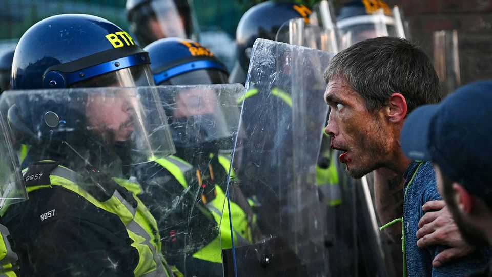
事实上，根据判处迪格瓦至少21年监禁的法官所述，事件经过是受害者“也许有点挑衅地”评论了凶手所佩戴的大匕首（另一种宗教象征，尽管大多数虔诚的锡克教徒会携带更小的刀具藏在衣物下）。迪格瓦随即抢走诺瓦克的手机，引发争执，最终他拔出21厘米长的匕首多次刺向这名学生。即便在被捕后，迪格瓦仍未被手铐束缚。这起犯罪发生在去年12月的南安普敦，位于英国南部海岸。但直到本周，随着迪格瓦获刑及一段令人揪心的视频画面公布——画面中警方将无助倒地的诺瓦克戴上手铐——事件才引发政治风波。首相基尔·斯塔默观看视频后表示自己“感到恶心”。■
英国司法大臣沙巴纳·马茂德（Shabana Mahmood）称此事“令人不安”，但坚持认为独立警察行为监察处（Independent Office for Police Conduct）应继续完成对涉事警员行为的调查（据悉在警员抵达现场前，紧急电话已提及可能有刺伤事件）。检察总长正考虑是否应重新审视最低监禁刑期是否“过于宽大”。而在民粹右翼阵营，尼格尔·法拉奇（Nigel Farage）及其改革英国（Reform UK）同僚则态度更为强硬。■
奈杰尔·法拉奇于6月2日发表了一篇“紧急讲话”，呼吁民众以“纯粹而冷酷的愤怒”回应，并宣称：“白人生命同样重要。”他的经济事务发言人罗伯特·詹里克表示：“这个国家存在针对白人的种族主义问题。”当保守党领袖、自诩拥有反觉醒运动立场的凯米·巴登诺奇指责法拉奇试图煽动分裂，以白人捍卫者的身份挑动对立时，改革党激进的内政事务发言人齐亚·优素福羞辱地反驳道：“凯米及保守党根本不关心白人。”这种言论在英国政治中尚属新事物，且充满危险性。主要政党长期以来基本达成共识，强调种族团结，避免煽动白人多数群体滋生怨恨。■
尽管法拉奇（Nigel Farage）在其政治生涯中一直主要从白人选民中获得不成比例的支持——2015年，他的英国独立党（UKIP）赢得了14%的白人选民支持，仅获得2%的少数族裔选民支持——但他却推动了一种“种族中立”的政治愿景。他以加速英国国家党（British National Party）这种明显种族主义政党的衰落而自豪，该党在2000年代末曾一度流行，但最终被UKIP取代。这一策略取得了成功。如今，12%的非白人选民支持改革党（Reform）。法拉奇的一些知名同僚，如尤苏夫（Shoaib Yusuf）和前保守党司法大臣布鲁维曼（Suella Braverman），均来自少数族裔背景。那么，为何他现在却转向一种更恶劣的思维方式，将白人视为需要帮助的群体？■
改革指向了令人担忧的真实案例：少数族裔所犯罪行被出于对污名化或刻板印象的错误担忧而被淡化——例如“诱拐团伙”丑闻，其中巴基斯坦裔男子性侵（主要是白人）女孩。也有可能，旨在克服警方历史上对非白人族群歧视的培训，使部分警员在面对如迪格瓦先生蓄意提出的种族歧视指控时过于轻信。基尔爵士承诺调查“种族主义指控如何影响了本案的决策”。去年发布的官方建议，似乎暗示警方应区别对待少数族裔，现正被重新审视。但所谓英国普遍存在系统性歧视白人的“双轨制执法”纯属无稽之谈。■
白人和黑人同样可能成为犯罪受害者。但黑人被逮捕的可能性是白人的两倍以上。纳齐·法拉奇的强硬立场似乎源于威胁、积怨和机会。威胁来自改革党右翼更为激进的势力：复兴英国（Restore Britain）领导人鲁珀特·劳（Rupert Lowe）称凶手应被处决，其家人应被驱逐出境。复兴英国获得埃隆·马斯克（Elon Musk）支持，最近民调显示该党在即将举行的Makerfield选区补选中获得7%的支持率——这一差距可能足以阻止改革党赢得席位，转而让工党安迪·伯纳姆获得该席位。极右翼煽动者汤米·罗宾逊（Tommy Robinson）在6月2日晚于南安普敦街头组织抗议活动，导致少数参与者与警方发生冲突。
怨恨，法拉奇的盟友私下承认，是针对起源于美国并引发全球影响的“黑人生命至上”运动。该运动在2020年美国明尼苏达州警察枪杀非裔乔治·弗洛伊德后迅速蔓延至英国。（在6月2日的视频中，法拉奇称该事件涉及“职业罪犯乔治·弗洛伊德”）右翼人士长期以来对主流政客支持该运动表示不满，认为这将美国的身份政治引入英国；如今他们觉得正在以左翼的方式反击左翼。这一机会源于英国选民结构的碎片化。英国少数族裔人口占17%且持续增长，疏远非白人群体无疑会让建立以往赢得权力所需的广泛选民基础变得更加困难。■
英国选民如今被五个政党分裂——苏格兰和威尔士的情况更为复杂——即便改革党当前的民调仅26%，也可能足以赢得选举。针对愤怒选民并进一步激化他们的愤怒，或许是一条制胜公式。尽管马克·诺瓦克对儿子遇害事件发表了体面的回应：“我们不希望用他的死亡制造更多的分裂、仇恨或紧张。”■ 如需获取更多关于英国重大事件的权威分析，请订阅我们的周度专属简报Blighty。
§042 英国绿党限制CEO薪酬的鲁莽政策 以彼之道还施彼身原题：The Green Party’s ill-considered policy to cap CEOs’ pay · 板块：Britain · 栏目：英国
批评高收入者是英国左翼的纯洁性测试。彼得·曼德尔森在1998年未能通过这一测试，当时他作为工党官员表示自己“对人们变得极其富有毫不介意，只要他们缴税”。对英国社会主义者而言，这是原罪；他与被定罪的儿童性侵者杰弗里·爱泼斯坦的关联，更证实了他是个坏人。绿党领袖扎克·波兰斯基因对高收入者毫不留情的追责，成为左翼的宠儿。
绿党提出解决方案，即在任何公共或私营机构中，将最高薪酬者的薪酬上限设定为最低薪酬者的十倍。这一想法颇受欢迎：根据YouGov的一项民调，65%的公众支持。该党议会领袖埃莉·乔恩斯（Ellie Chowns）称，"这种薪酬比例将终结贪婪CEO的荒谬薪资，同时拉高最低薪资群体的工资水平。"确实，这一政策将削减高管薪酬。但对低收入群体而言，情况则不那么乐观。波兰斯基先生指出，薪酬差距确实扩大了。根据亚历山大·佩珀教授的估算（见图表），1970年代，一家FTSE 100公司的中位数首席执行官的薪酬仅为英国工人中位数的20倍。而在2024-25财年，这一差距已扩大至超过120倍。
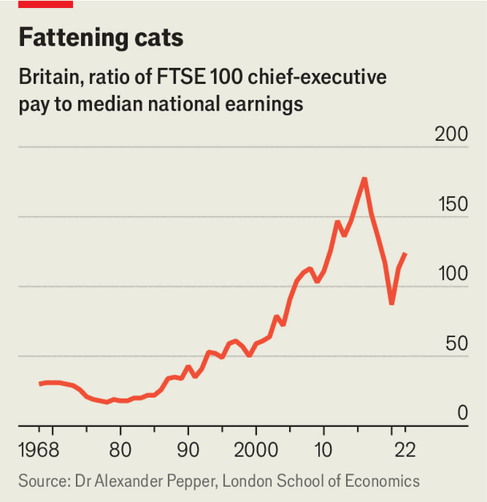
贝塔365博彩公司创始人丹尼斯·科茨（Denise Coates）去年获得2.8亿英镑（约合3.77亿美元）的收入，超过马绍尔群岛（人口3.8万人）的国内生产总值。自20世纪80年代起，企业高管薪酬差距开始扩大，随着工会力量减弱以及边际税率下降，高管们更倾向于要求更高的现金报酬。美国率先推行与业绩挂钩的薪酬制度，英国随后跟进，尽管其薪酬差距从未达到美国水平，但始终高于欧洲大陆国家。一些人认为，超级明星型领导者能创造的回报远超其薪酬。但实证数据尚不明确。质疑者指出，天价薪酬并非反映健全的人才市场，而是公司治理失败的体现，且高薪带来的收益并不足以证明其造成的不平等值得容忍。■
即便有理由推动工资平等，波兰斯基的提议仍是实现这一目标的极其低效方式。最接近的先例是旧金山，那里的高收入人群外流得益于对支付首席执行官薪酬超过中位数员工薪资100倍的企业征收的税款。美国民粹左翼参议员伯尼·桑德斯（Bernie Sanders）曾提议对违反50比1薪酬比例的企业征收最高5个百分点的公司税附加费。但与绿党的提案相比，这些政策显得过于简单。波兰斯基声称该提案将提高最低工资群体的收入，但数学计算表明这种好处将微乎其微。以英国最大的超市连锁店特易购（Tesco）为例，其在英国雇用26万名员工。2024-25财年，其首席执行官的总薪酬为920万英镑，而最低工资员工每小时收入为12.02英镑（约合每年2.4万英镑的全职收入）。■
即便假设波兰斯基先生设定的薪酬上限涵盖所有报酬，而不仅仅是工资，此举也只能通过降低CEO薪资节省900万英镑。这勉强能覆盖每位员工每年34英镑的薪资涨幅。若计入其他高管的节省额，可稍作调整——但空间有限，因薪资在高管层迅速下降。更重要的是，这种做法天真地假设企业会遵从指令。实际上，企业的第一反应将是规避政策。高收入者可能被拆分至独立公司，或通过未被上限覆盖的方式（如复杂贷款结构）获得报酬。更令人担忧的是，企业可能解雇低收入员工以提高最高薪资，转而雇佣第三方承包商完成工作。即便绿色政党设计出严密的制度，后果也可能更糟。■
一些跨国公司可能会将总部迁往海外以规避薪资上限政策，而薪资削减（在某些情况下高达95%）足以导致顶尖人才外流。研究显示，管理不善已成为英国低生产力增长的主要原因之一。企业将更不愿雇佣学徒或低薪工人，这些群体本就面临AI的威胁，因为雇佣他们会拉低高收入者的最高薪资上限。经济学家弗朗西斯科·卡塞利（Francesco Caselli）对美国理论薪资上限政策的影响进行建模后发现，底层50%工人的收入“几乎不受该政策影响”。更务实的做法是直面高管薪资上涨的根源。这可能包括公司治理改革，赋予股东和员工更多话语权，并使薪酬委员会更具独立性。■
激进左翼政府也可能提高最高边际税率，以抑制CEO要求大幅加薪的动机。此举虽仍会抑制经济增长和税收收入，但相比薪酬上限政策损害程度要小得多。绿党支持十比一的薪酬上限，暴露了该党仍处于初级色彩阶段的发展水平，一切事物都需通过纯度测试，复杂性则被视为麻烦。其设计欠周全的政策意味着，波兰斯基比例上年轻且脆弱的选民将承受最大损失。■ 如需获取更多关于英国重大新闻的专家分析，请订阅我们的周度付费简报《Blighty》。
§043 英国政治已超越"巴以问题"的巅峰原题：British politics has passed peak Palestine · 板块：Britain · 栏目：英国
"首先,他们对加沙的种族灭绝罪行非常共谋,"曼彻斯特一位年轻穆斯林伊什安(Ishan)在谈及工党政府时说道,"这是个大问题。"随着加沙冲突持续胶着,英国人对以色列的看法变得更加负面。民众对工党处理该问题的不满情绪,推动了支持加沙的独立议员在穆斯林较多的选区崛起,以及绿党在其他地区的扩张。但尽管围绕此事情绪高涨,相对而言仍较少选民将以色列或巴勒斯坦视为其最关心的议题。有迹象显示,这场战争正逐渐淡出人们的关注。 ■
尽管如此，对加沙的支持催生了一群（往往年轻）的左翼民粹选民。英国并非特例。根据皮尤研究中心（Pew Research Centre）2025年3月对24个国家的调查，中位数显示62%的受访者对以色列持负面看法，29%持正面看法。英国的数字分别为61%和30%。YouGov在2025年5月的调查也显示，32%的英国人更同情巴勒斯坦而非以色列，相比之下德国为18%，法国24%，意大利31%，西班牙33%。即便如此，英国仍存在特殊原因使该议题尤为敏感。尽管英国仅提供以色列军备进口的不到1%，但活动人士却抓住了英国政府支持以色列战争的论调。英国在该地区的过往历史也加剧了矛盾。工党屡次陷入被动。■
2023年10月7日哈马斯突破以色列边境围栏并杀害绑架以色列人后数周，时任反对党领袖基尔·斯塔默（Keir Starmer）笨拙地为以色列的应对措施辩护。为避免被指控反犹太主义，他多次拒绝呼吁停火，引发党内议员的不满。执政党立场已转向支持巴勒斯坦，暂停部分对以色列的军售并正式承认巴勒斯坦国地位，同时对部分抗议者采取强硬立场。占英国人口6%的穆斯林群体尤为关注此事。2024年5月萨瓦塔（Savanta）民调显示，21%的穆斯林受访者表示以巴冲突是决定当年大选投票的最重要议题（英国整体为3%，其中18至24岁群体达9%）。■
英国工党在大选中以压倒性优势获胜之际，支持加沙的独立议员成功夺下四个原本属于工党的安全席位，这些选区均拥有大量穆斯林人口。在5月的地方选举中，支持加沙的独立议员未能赢得他们曾瞄准的四个议会（尽管穆斯林主导的Aspire党在塔维斯托克选区连任）。相反，许多穆斯林正转向绿党。据工党附属智库Think Labour近期民调显示，绿党在穆斯林群体中获得30%支持率，远高于工党的44%和独立议员的10%。仅有极少数非穆斯林选民将加沙战争视为首要关切。英国选举研究（British Election Study, BES）允许受访者在开放文本框中写下最关心的问题。2024年5月至6月的调查中，不足0.5%的受访者在回答中提及“加沙”“巴勒斯坦”“以色列”“种族灭绝”或“战争罪”等关键词。■
到2025年5月，这一数字已减半。2026年5月，英国关于战争的谷歌搜索量降至2023年以来的最低水平。尽管加沙仅是少数群体关注的核心议题，但它仍在持续塑造英国政治。对2023年5月和2025年5月参与英国选举研究（BES）的受访者进行深入分析，揭示了支持巴勒斯坦的倡导活动对各类议题的持续影响。总体来看，19%的受访者表示他们对巴勒斯坦的同情心远高于以色列。到2025年5月，这一群体在收入再分配问题上的支持度平均比其他受访者高出0.6分（见图表）。两年间，他们在环境保护、移民政策以及绿党支持度上也相对更加倾向。对绿党领袖扎克·波兰斯基（Zack Polanski）而言，如同其他左翼人士一样，加沙成为了一次招募机会。■
社交媒体上对巴勒斯坦的支持声浪高涨，令人揪心的图片被广泛传播。一旦用户陷入加沙困境，波兰斯基先生只需几次点击即可抵达。■ 如需获取英国重大新闻的深度分析，敬请订阅我们的每周专属订阅通讯Blighty。
§044 英国政府更倾向签证禁令而非言论自由 英国原题：Britain’s government prefers visa bans to free speech · 板块：Britain · 栏目：英国
基尔·斯塔默爵士（Sir Keir Starmer）以果断著称。但他的工党政府在处理言论自由问题上却表现出不寻常的主动性。最近的例子是，内政大臣沙巴纳·马茂德（Shabana Mahmood）在两位左翼美国评论员原定于伦敦参加节日活动前几天，禁止他们入境。这两位评论员——岑克·乌格鲁（Cenk Uygur）和哈桑·皮克（Hasan Piker）——声称被禁止入境的原因是他们对以色列的批评。
这可能也与他们过去发表的言论有关，这些言论可能被解读为支持恐怖组织（皮克先生曾表示，若在以色列和哈马斯之间选择投票，他会投给哈马斯）。无论出于何种原因，马茂德女士认为他们的入境“可能不利于公共利益”。这一表述源于1971年移民法，该法赋予内政大臣否决此类人士签证申请（并可在未经审判的情况下驱逐他们）的权力。最初，这一条款被用于排除疑似俄罗斯间谍，实际上往往针对具有共产主义倾向的活动人士。1991年海湾战争期间，该条款被用于以国家安全为由驱逐伊拉克国民。2005年7月7日伦敦恐怖袭击事件后，相关法律背景发生了变化。■
在随后的几年里，托尼·布莱尔爵士领导的政府发布了一份官方的“不可接受行为”清单，这些行为可能导致被驱逐出境。清单内容包括：表达“为恐怖主义暴力辩护或美化”的观点，以及可能“煽动仇恨”或“引发族群间暴力”的言论。此后，这一机制主要被用于阻止极端伊斯兰主义传教士在英国活动。事实上，此类禁令的数量近年来持续下降。2019年，英国阻止了37人入境；2024年（最新可获取数据年份）仅排除了15人。但自那以后，政府似乎发现了一个乐于按动的按钮。今年4月，因有反犹太主义历史的说唱歌手坎耶·韦斯特（Kanye West）在音乐节演出前遭取消签证。
一个月后，极右翼活动人士汤米·罗宾逊（Tommy Robinson）发现多名盟友被禁止参加伦敦的“联合王国”集会。英国并非唯一以模糊判断排除特定人群的国家。澳大利亚常以“品格问题”为由拒绝或取消签证。特朗普政府指示移民官员在潜在移民的社交媒体中搜寻“反美”态度。2025年，该政府至少取消了六名被指控庆祝保守派活动人士查理·克里克（Charlie Kirk）遇害者的签证。不同之处在于，英国似乎更倾向于针对知名度最高的政治活动人士和名人。威斯特（即Ye）是全球最具影响力的音乐人之一；皮克（Mr Piker）则是最受关注的直播主播之一。这并非偶然。■
英国是个例外，拒签流程往往异常高效。多数国家的拒签工作完全由文职人员处理，他们按既定程序核查并得出结论。而在英国，内政大臣则拥有个人裁量权。这种做法将反恐工具变成了展示价值观的手段。2007年，时任工党内政大臣约翰·里德因斯noop狗狗在希思罗机场斗殴事件引发公众愤怒，将其禁止入境英国。2015年，保守党内政大臣特雷莎·梅因泰勒·泰勒的 homophobic 词句禁止其入境，意在彰显自身政治正确。■
如今，一个被指控助长伊斯兰恐惧症和反犹太主义的工党政府，试图通过禁止任何可能冒犯英国少数族裔的言论来表明其对种族主义的不容忍。若真以审查为目的，此举似乎适得其反。皮克尔先生的视频在YouTube上传后仅数日，便成为其2026年最受欢迎的视频之一。这两位人士在美国均属知名人物，但人气并不高。从政治角度看，这些禁令揭示了两种对立的言论自由定义之间的冲突。美国至少在理论上是言论自由绝对主义的国度，而欧洲各国政府通常会对言论自由设限，因此并非如此。英国则始终处于两者之间，成为这场文化战争的战场。在言论自由方面，外国人通常被要求比公民遵守更高的标准。■
这一直允许将伊斯兰主义传教士和新纳粹活动人士排除在外。但随着极端主义定义的不断扩展，以及边缘政治逐渐主流化，原本黑白分明的案例正日益演变为充满争议的灰色地带。还有一个令人不适的事实是，谈到言论自由时，几乎所有人都在说谎。那些对皮克尔禁令感到愤怒的左翼人士（如绿党领袖扎克·波兰斯基）很少关心无法与罗宾逊一同游行的极右翼煽动者。同样，那些因被排除而愤怒的保守派（如极右翼政党“恢复英国”领袖鲁珀特·劳）也不会为接纳极端主义伊斯兰传教士辩护。英国政府，如同许多其他国家一样，正陷入政治夹缝，被各派意识形态的较量所牵制，而这些意识形态对言论自由漠不关心。■
政府试图取悦所有人，却选择以新的禁令来为过去的禁令辩护。更可能的是，它会惹恼所有人——尤其是那些与皮克先生不同、信奉自由传统的人。■ 对英国最新重大新闻的权威分析，请订阅我们的周度专属读者简报《Blighty》。
§045 英国私立学校学费征税政策影响初现端倪原题：The impact of taxing British private-school fees starts to show · 板块：Britain · 栏目：英国
雷丁市的圣约瑟夫学院（St Joseph’s College）有超过500名学生，该校以提供该地区“最佳性价比”的教育为荣。5月中旬，该校宣布若无法获得大额现金注入，将于7月关闭。该校将多年成本上涨归咎于工党政府的决策——即要求私立学校缴纳全额商业税率，并对其学费征收增值税。
马特恩·库克（Martyn Cook）正与数百名家长一起争分夺秒地为孩子寻找新学校；这位曾担任20年军官的人，有处理困境的经验。“但当你遇到问题，孩子情绪崩溃时，心理上非常难熬。”距工党改革措施实施18个月后，许多私立学校正面临困境。英国政府6月4日发布的数据显示，今年英格兰主流私立学校的学生人数下降了5%（约27,000名学生）。这继2024-25财年（工党上台后的首个财政年度）下降2.8%后，降幅进一步扩大。学生减少主要源于更少的孩子选择就读私立学校，而非现有学生集体转学。这种下降趋势在伦敦以外地区尤为明显——或许因为家长在经济欠发达地区更倾向于投入资金购买私立课程。■
这些下降究竟有多少是由工党政策推动的，尚存疑问。无疑部分原因在于英国适龄入学儿童总数在下降（英格兰去年下降约1.2%）。而早在工党上台前，不断上涨的生活成本已迫使许多家长重新审视家庭开支。即便考虑了这些因素，改革似乎对入学人数的影响仍超出预期。早在2024年，政府曾预测征收增值税会使该领域到2030年代比原本情况减少6%的适龄儿童。实际情况可能比预期更严重。目前正就这些下降是否已导致大量学校陷入破产展开激烈争论。政府坚持认为并非如此，甚至表示自实施增值税政策以来，私立学校中新开办的学校数量多于关闭的。
这确实如此，但存在误导性。新增的学校大多是小型“特殊”学校，服务于有残疾的儿童，这类学校需求旺盛。这些机构的学费主要由地方政府支付（地方政府可申请退还增值税）。若仅关注“主流”私立学校，情况则更为复杂。人们仍在开设这类学校（自2025年初以来新增的18所学校中，有7所明确标注其宗教理念为“伊斯兰”）。但长期趋势是整合：2016年至2025年间，英格兰的主流私立学校数量减少了11%，而就读于这些学校的学生人数仅略有下降。2025年有近60所学校关闭（总计1600所），这一数字高于2024年，但与2023年（工党上台前）大致相当。■
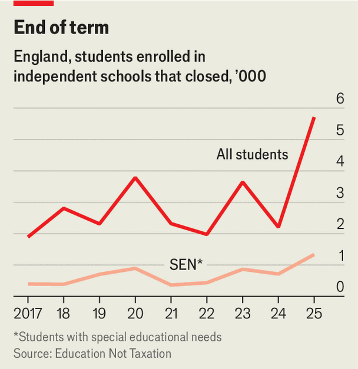
跟踪今年截至目前已宣布或威胁关闭的学校情况，目前尚不足以表明2026年势必会大幅恶化。但最近的一个变化却非常引人注目。被关闭的学校平均规模似乎正在迅速上升。长期以来，规模较小的学校（学生人数少至50人）最常面临关闭。但自2025年1月以来，至少已有12所学生人数超过200人的学校关闭或宣布即将关闭，数量与此前八年相当。如果圣约瑟夫学校（St Joseph’s）最终关闭，它将成为过去十年中关闭的规模最大的私立学校之一。因此，受私立学校关闭影响的儿童人数正在增加（详见图表）。当这些私立学校关闭时，对当地社区造成的冲击也更为严重。■
这些趋势是否意味着对私立学校征增值税最终未必能为公立学校筹到大量资金（工党提出该政策的初衷）？这取决于你相信哪一方的模型预测。最悲观的预测来自自由市场智库亚当·斯密研究所（Adam Smith Institute），它认为只要私立学校减少10-15%的规模，该政策就会导致政府收入减少（原因包括将大量被解雇的教师纳入公立体系的代价，以及对整体经济的更广泛影响）。然而这一预测基于一些悲观假设——例如，大量因学校裁员而失业的人员将难以找到新工作；又或者，那些因私立学校费用高昂而无法负担的家长，未来会选择减少工作时间，因为他们不再需要额外支付学费。■
金融研究研究所（Institute for Financial Studies）作为另一家智库，其预测更为乐观。该智库长期主张，无论有多少学生转投公立学校，该政策都能带来可观收入。其认为，学生家长节省的费用大概率会用于其他同样需缴纳增值税的商品和服务（即使这些资金先被存起来或投资几年，这一情况仍可能成立）。它还指出，容纳更多学生于公立教育体系的成本可能比目前估算的更低，因为人口下降已导致教室出现闲置容量。不过，仍存在隐患。即便在最理想的情况下，对私人补习征税所得的收入，也仅相当于政府每年在公立学校支出的约2%。■
对于那些视独立学校为特权毒药的人来说，这不过是细节；缩小这一领域才是重点。对其他人而言，政府似乎为了微不足道的金额制造了大量麻烦和痛苦。■ 如需获取更多关于英国重大新闻的专家分析，请订阅我们的每周专属订阅通讯Blighty。
§046 一只即将“熬走”又一位首相的猫所给的启示原题：Build a prime minister · 板块：Britain · 栏目：英国
请一位典型的英国选民设计一位首相，他们或许会挑选一位在公共服务领域有卓越成就的职业生涯者。他们更倾向于选择务实而非意识形态激进者，也必定更青睐严肃（即使显得乏味）而非表演型人物。若在候选人名单中选择，他们或许会选一位中年西装革履、相貌平平的男士。基尔·斯塔默的外形特征，似乎正是由民调受访者精心设计的产物。其政府严格遵循典型选民的民调优先事项。公众对其对私人房东实施的严格监管、扩大就业权益以及对高价房产的税收重压表示认可。
铁路国有化和最低工资上调在民调中获得广泛支持。当政府偏离正轨（例如削减退休人员冬季燃油补贴），政策往往迅速急转。民意所向，政策随之调整。这种以焦点小组为基准的治理实验也延伸至社会政策领域。应民众要求，内政大臣沙巴娜·马哈茂德将净移民人数降至数年来的最低水平。政府禁止支持“巴勒斯坦行动”这一争议性抗议团体，并永久禁止为跨性别儿童使用青春期阻断剂，符合公众社会保守倾向。基尔·斯塔默以惊人的精准度将自身与政策塑造为英国选民的意愿投射。然而选民却对他深恶痛绝。■
他的民调支持率是英国首相中历来最低的，接近利兹·特拉斯（Liz Truss）时期的灾难性水平。“建一个首相”（Build-a-PM）这种焦点小组式治理方式显然行不通。有人或许会辩称这是无能所致，或是特殊时期执政的代价。但基尔·斯塔默（Sir Keir）在上任前就已陷入负面评价。2024年大选中，工党在与特拉斯之后的保守党残局对决中仅获得34%的选票。值得注意的是，民调显示那些本应从工党政策中受益的选民，反而最急于抛弃该党。低收入群体比高收入群体更早离弃；私人租户纷纷转向绿党；而工会成员则抛弃了数十年来最亲工会的政府。■
英国净移民人数降至2012年以来的最低水平（排除疫情年份）的事实，并未影响尼格尔·法拉奇（Nigel Farage）及其右翼民粹政党改革英国（Reform UK）的崛起。选民们虽然支持，却未公开表达感谢。相反，基尔爵士（Sir Keir）加入了那些迷失方向、试图寻找选举版埃尔多拉多的政客行列。多项民调显示，在许多西方民主国家，多数选民在经济政策上倾向左翼，社会立场则趋于保守。这一群体在选民中占多数，但在政治家中却几乎无人代表。试图填补这一空白的政客往往以失败告终。支持这种策略的人常赞扬长期执政的丹麦社会民主党（Danish Social Democrats），其持怀疑态度的中间偏左立场据说曾压制了极右翼。■
令人尴尬的是，社会民主党在3月的选举中得票率创下了百年来的新低，而反移民的丹麦人民党则趁机扩大影响力。凯尔·斯塔默（Sir Keir）抵达黄金国（El Dorado）后发现，那里并无黄金。追逐民调是制造低效（因而最终不受欢迎）政府的配方。其中一个原因是，往往不能将民调数据视为绝对可靠。例如，若询问选民对移民政策的偏好，他们提出的方案甚至会让法拉格（Nigel Farage）都感到震惊。然而，这些选民却告诉民调机构，他们担心改革党（Reform）过于激进（甚至带有种族主义倾向）。在杰里米·科尔宾（Jeremy Corbyn）领导工党期间，其支持者们依赖民调数据，显示选民支持其激进左翼的经济政策。但许多支持者却认为科尔宾是个疯子共产党（mad communist）。（他带领工党创下84年来最差的选举结果。）■
更大的原因是公众尊重领导力而非追随者。以本专栏命名的维多利亚时代记者兼随笔作家沃尔特·白芝浩（Walter Bagehot）曾写道，选民“并不擅长深入分析：他们喜欢有一位‘更优秀者’代表自己”。选民持有某种观点却更倾向于支持政治领袖的另一种立场，并不显得矛盾。人们理所当然地期待政客比自己更具道德。难道难以相信他们也会尊重比自己更温和的政客？目前选民与曾连续三次选举托尼·布莱尔（Sir Tony Blair）和两次选举大卫·卡梅伦（David Cameron）的选民并无显著差异。21世纪任期最长的两位首相都毫不掩饰自己作为中间派的形象。他们也从未觉得有必要用公众意见取代公共政策。■
如今，安东尼·布莱尔爵士（Sir Tony）已成为政坛的“替罪羊”，尤其在自己的工党阵营中更是如此。基尔·斯塔默爵士（Sir Keir）及其潜在继任者们纷纷跳出来谴责他于5月26日发表的论文，该文呼吁回归“激进中间主义”。安东尼·布莱尔爵士的论文主张拥抱人工智能、放松经济管制并削减福利开支。他提出的干预方案与众不同之处在于，这是一种以意识形态解决英国问题的思路。他指出，温和政治不必是基尔爵士所代表的那种由焦点小组批准的政策拼凑而成的奇怪混合体——这种混合体在实践中遭到唾弃。中间主义可以拥有清晰的目标。而非听从安东尼·布莱尔爵士的建议，工党正尝试另一种“拼凑首相”的变体。在梅凯菲尔德（Makerfield）竞选期间，安迪·伯纳姆（Andy Burnham）正试图通过三角策略（triangulating）来博取选民支持，他计划通过6月18日的补选重返议会。■
基尔爵士最可能的继任者支持马茂德女士的移民改革，并呼吁工党坚持左翼经济政策。仅更换传递信息的人不足以拯救工党。■《经济学人》订阅者可注册我们的观点通讯电邮，汇集本刊最佳评论、专栏、特稿及读者来信。
§047 唐纳德·特朗普或可拯救古巴原题：Donald Trump could be the man to save Cuba · 板块：International · 栏目：国际
过长的时间里，英雄主义的纯粹幻想伤害了古巴普通民众，无论是岛上的居民还是流亡者。古巴人口或许已降至900万，但今晨又迎来一个闷热的人为苦难的日常。在食品、药品、电力和清洁用水严重短缺的背景下，古巴共产党执政者不会迅速改善民生。岛国领导人是固执孤独的群体。他们惧怕开放会动摇其失败革命项目的控制权，因而陷入对世界最富裕国家——距离仅200公里的美国——的拳头式抵抗姿态。
与此同时，岛民们或许有理由指责另一群沉迷于不屈抗争幻想的人，即强硬派古巴裔美国人。古巴目前极端孤立的局面可能归咎于特朗普总统。正是他的政府切断了古巴从委内瑞拉、俄罗斯及其他旧友获得石油供应，导致电力中断持续大半天。就在数周前，特朗普以史无前例严厉的金融制裁吓退了长期外资投资者。这位执意在邻近地区彰显“美国主导地位”的特朗普，曾派遣特种部队突袭古巴亲密盟友、委内瑞拉总统尼古拉斯·马杜罗，并随后威胁古巴领导人将面临“友好的接管”。
但特朗普的“最大压力”制裁政策建立在一项酝酿数十年的禁运政策之上，历任总统和国会议员均因屈从古巴裔美国人流亡者的压力而采取行动。该群体长期以来作为选民群体具有影响力，尤其在佛罗里达州——那里居住着超过100万古巴裔美国人，其中包括特朗普的国务卿马尔科·鲁比奥（Marco Rubio）。选票并非该群体唯一的影响力来源。1959年菲德尔·卡斯特罗领导革命者夺取政权后，古巴成为自由世界与共产主义阵营对抗的前线。即便苏联解体后，抵达美洲的古巴人仍享有难民身份带来的移民特权。在迈阿密，古巴抵抗组织大会秘书长奥兰多·古铁雷斯-博龙纳特（Orlando Gutiérrez-Boronat）宣称，古巴政权比六十年来任何时候都更接近崩溃。■
他为特朗普政府起诉劳尔·卡斯特罗（Raúl Castro，前总统，菲德尔的弟弟）感到欣喜。现年95岁的卡斯特罗于6月3日年满95岁，被指控在1996年授权古巴武装力量击落两架民用飞机，导致四名美国人死亡。博龙纳特（Mr Boronat）表示：“我希望他被带走，我希望他得到公正审判。”即便面对美国对哈瓦那的突袭，古巴安全部队和领导人也深知其罪行将无所遁形。他预测抗议活动将日益高涨，预计会看到类似1989年波兰和捷克斯洛伐克政权更迭的模式，带点罗马尼亚的元素（一场革命中，政权安全部队与独裁者之间的战斗）。■
其他显赫的古巴裔美国人则担忧另一种模式，当马杜罗在委内瑞拉被捕后，其前副手德尔西·罗德里格斯（Delcy Rodríguez）被扶上位，成为更顺从的独裁者。尽管特朗普称罗德里格斯是“一位了不起的人”，但委内瑞拉仍存在政治犯，而特朗普对委内瑞拉民主反对派的轻视引发担忧。美籍古巴流亡者博物馆主席马塞尔·费利佩（Marcell Felipe）表示：“委内瑞拉不是古巴社区能接受的模式。”他理想的情景是古巴领导层内部分裂，让美国能招募一位“白衣骑士”推翻政权，实现民主。曾协助奥巴马政府开启对古巴关系的前外交官里卡多·祖尼加（Ricardo Zúñiga）表示，特朗普团队尚未找到古巴版的德尔西，因为“这并非该政权运作的方式”。■
这是一群握有枪杆子、决心维持权力的人组成的联盟。他预测短期内局势将陷入僵局，可能伴随军事打击，但效果有限。他表示，此前的接触尝试因古巴政权对改革的恐惧而受挫，同时也因总统所能提供的有限利益而难以奏效，因为根据法律，只有国会才能解除禁令。在这方面，特朗普先生——一个对法律细节和国会意愿漠不关心的人——占据优势。佛罗里达州前民主党国会议员乔·加西亚认为，特朗普比任何前任总统都更有能力结束禁令。
迈阿密强硬派不会反叛，他说。“如果特朗普表示要用资本主义‘杀死’他们，而马尔科·鲁比奥则称三年内将举行选举，古巴裔美国人就会支持这一做法。”在国会，如果一些共和党人反叛，足够多的民主党人会支持特朗普，以人道主义理由解除禁令，他补充道。特朗普的策略缺乏过去那种意识形态的确定性。前特朗普政府官员表示，总统并不特别在意‘古巴作为古巴’，但希望成为‘推翻卡斯特罗政权的人’。不受冷战教条影响，他的移民官员已驱逐数以千计的古巴人，并希望古巴接受更多移民。一些古巴人已准备好接受更务实的政策。■
在迈阿密蓝领郊区海莱亚（Hialeah），刚抵达的古巴裔美国人正排队在Cubamax公司外，这家在线超市兼旅行物流公司将太阳能板、可充电灯、自行车和干粮运往岛上的亲属。一位来自古巴的前英语老师表示，特朗普比鲁比奥更不激进，他提到自己曾寄送大米和豆子给家人。“鲁比奥想要政权更迭，但他的方式会导致混乱，”他说。若有人愿意放弃意识形态的僵化，也并不令人意外。纯正的反对态度未能终结卡斯特罗政权，该政权已延续超过12位美国总统的任期。若谈判能达成目标，且政权能作出相应回应，特朗普理应获得任何和平奖。■
《经济学人》的订阅者可注册我们的“Opinion”电子简报，该简报汇集我们最优秀的社论、专栏文章、特稿及读者来信■
§048 得克萨斯州（Texas）已成为美利坚合众国（America Inc）的新中心引力原题：Texas is America Inc’s new centre of gravity · 板块：Business · 栏目：商业
“我刚以为他爱上了田纳西州（Tennessee），没想到还是把他带回阿比林（Abilene）太天真了。”艾拉·朗利（Ella Langley）在歌曲《选择得克萨斯州》（Choosin’ Texas）中感叹道，这首歌自2026年以来一直稳居美国音乐排行榜前列。部分听众可能来自美国其他地区的政策制定者。就像朗利一样，他们也在输给得克萨斯州。5月27日，埃克森美孚股东批准了将这家石油巨头与新泽西州（New Jersey）的关联切断，并重新注册为得克萨斯州公司的计划，而得克萨斯州早已是该公司的总部所在地。它并非孤例。■
据房地产公司世邦魏理仕（CBRE）统计，至少有184家公司于2020年至2025年间将总部迁往奥斯汀、达拉斯或休斯顿，其中包括汽车制造商特斯拉（Tesla）和工程机械制造商卡特彼勒（Caterpillar）（见图表1）。得克萨斯州正稳步确立为美国企业的新中心。该州吸引的商业投资最多，人口增长也最为显著。2020年至2025年间，该州创造了全国约五分之一的净新增就业岗位。在2020年代初期，得州通过高税收、天价房价和恶劣政策逃离的远程办公者吸引而来，同时受益于拜登政府对绿色能源和芯片制造设施的补贴。如今，该州在能源领域的主导地位使其成为数据中心建设热潮的主要受益者。与此同时，其科技与金融生态系统也在持续深化。■
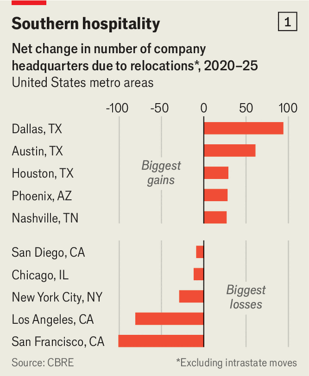
今年夏天，德克萨斯州将迎来首个独立证券交易所——德克萨斯证券交易所，与已在该州运营的纽约证券交易所（NYSE）和纳斯达克（Nasdaq）分支机构并肩而立。（唐纳德·特朗普（Donald Trump）曾称纽约证券交易所的新分支是“对纽约这个家乡的难以置信的糟糕事情”，尽管他的社交媒体公司是首家在该交易所上市的企业。）该州对年轻富裕人群的吸引力也随着每首乡村歌曲的传播而持续增长。似乎美国没有任何地区能与德克萨斯州竞争。要理解其崛起之势，可从休斯顿开始，这里是德克萨斯州能源产业的中心。由于伊朗战争，该州的石油和天然气大亨们获利颇丰。但过去几年，德克萨斯州也逐渐成为绿色能源的重要枢纽（见图表2）。■
今年，德克萨斯州预计将建成美国所有新建大型太阳能发电项目中的五分之二，其广阔的平原地形非常适合这种技术。（其中特胡阿坎河（Tehuacana Creek）项目将新增837兆瓦装机容量，成为今年美国并网的最大太阳能项目。）这场投资热潮也伴随着一些波折。2021年冬季风暴导致德克萨斯州电网接连发生严重故障。但该事件促使州政府加快了现代化改造进程——包括大规模投资电池储能设施——州官员希望借此使电网能比美国其他地区更好地应对日益增长的用电需求。截至目前，相关进展令人鼓舞。尽管电力消费量大幅上升，德克萨斯州的零售电价仍在美国各州中处于中等水平。■
自危机以来，得克萨斯州的电网仅触发过一次紧急警报，先进能源联盟（Advanced Power Alliance）的朱德·梅瑟（Judd Messer）指出。更重要的是，得克萨斯州正在建设的许多数据中心采用离网供电模式，这意味着它们无需等待并网审批。这包括由OpenAI（ChatGPT开发商）和Oracle（一家试图成为超大规模数据中心企业的公司）委托的谢克尔福德县（Shackelford County）天然气驱动的巨型项目。伍德麦肯齐（Wood Mackenzie）研究机构的戴维·布朗（David Brown）表示，美国约一半的离网能源项目都位于得克萨斯州。宽松的规划规则助益颇多。得克萨斯州多数县对城市边界外土地的开发控制有限，例如格莱姆斯县（Grimes County）的地块，马斯克（Elon Musk）计划在此建设占地相当于欧洲微型国家的半导体工厂Terafab。■
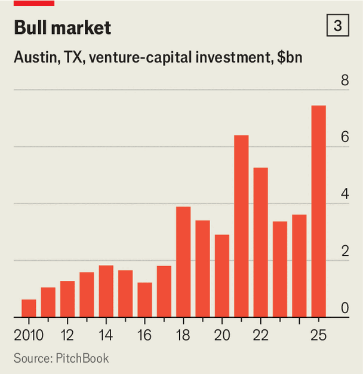
2013年推出的针对数据中心的销售税豁免政策，进一步增强了在该州建设数据中心的吸引力。另一家房地产公司JLL预测，德克萨斯州可能在2030年前超越当前数据中心容量最大的弗吉尼亚州。充足能源和建设自由也推动了奥斯汀成为先进硬件中心的崛起。其“硅山”地区既有戴尔等老牌企业，也有Apptronik等热门初创公司。据数据提供商PitchBook统计，奥斯汀去年的风险投资（VC）投资额达到创纪录的74亿美元（见图表3）。该市现已成为美国第五活跃的风险投资目的地，十年前仅位列第十。其最大创业孵化器Capital Factory的一层还设有美国陆军创新单位的分支机构。■
德克萨斯州的投资热潮正吸引金融行业向达拉斯的“亚拉街”（Y’all Street）聚集。高盛集团（Goldman Sachs）正在该市建设一座价值5亿美元的校区，可容纳5000名员工。摩根大通银行（JPMorgan Chase，美国最大银行）在德克萨斯州的员工数量已超过纽约。金融从业者们有大量工作可做。纳斯达克（Nasdaq）德克萨斯分部自3月开业以来，将与纽约的姐妹交易所联合举办太空探索技术公司（SpaceX）活动。达拉斯及其他德克萨斯城市的公司律师也将同样忙碌。州政府希望取代特拉华州成为美国公司法中心。2024年，德州设立了德克萨斯商业法院（Texas Business Court），由擅长处理复杂纠纷的专家法官主持。■
去年德克萨斯州还推出一项措施，允许企业阻止持股不足3%的股东起诉，另一项则规定仅大额股东可提交代理提案。这些举措，加上低企业税率等其他优势，正吸引越来越多企业迁往德克萨斯州。州参议员布莱恩·哈格斯（Bryan Hughes）——商业法庭的设计者之一——预测，像埃克森美孚这般规模的企业迁址将引发企业向南迁移的浪潮：“冰层已被打破。”在奥斯汀高端购物街南国会大道（South Congress Avenue），牛仔靴和闪亮腰带商店外排起长队，这映射出德克萨斯州另一项较少被关注的优势：其日益增长的软实力。珠宝品牌Kendra Scott（2016年估值超10亿美元）只是该州成功品牌名单中的一个例子。
2023年，该品牌推出了黄玫瑰（Yellow Rose）这一牛仔风情子品牌，随着牧场风格的流行，该子品牌迅速扩张（就连威尔士王妃（Princess of Wales）最近也穿起了牛仔靴）。斯科特女士表示，"骑马风格已不再只是得克萨斯州的专属"。她指出，路易威登（Louis Vuitton）现在也销售西部主题产品，歌手波斯特·马龙（Post Malone）也开始创作乡村音乐。斯科特女士的并非唯一具有全国扩张野心的得克萨斯州品牌。像Yeti（生产超大容量水瓶的公司）和Buc-ee's（公路边便利店）这样的企业正迅速向州外扩张。它们如同冲浪品牌之于加州、预ppy零售商如拉夫·劳伦（Ralph Lauren）之于美国东北部精英阶层，成为得克萨斯州生活方式的广告牌。
得克萨斯州日益增长的文化吸引力正使企业更容易说服员工迁居此地，多伦多大学的理查德·弗洛里达指出。这至关重要，因为吸引高技能人才将是得克萨斯州持续崛起的关键。培养本土人才是该州经济计划的重要组成部分，但短期内该州仍需吸引其他地区的顶尖人才。充足的住房与低个人税率仅能起到一定作用。许多员工对得克萨斯州的部分政治议程感到不满。自由派聚居区有助于缓解这种不满，而诸如州检察长（兼共和党参议员候选人）肯·帕克顿所热衷的张扬自由主义表现则无助于改善局面。得克萨斯州的成功应引起纽约和加州关注税收收入的官员担忧。与此同时，该州已催生出多个模仿者。■
北卡罗来纳州立法机构已通过一项计划，计划于2030年前废除该州的企业所得税。田纳西州则效仿德克萨斯州的策略，为公司提供现成的大型项目用地。内华达州则试图设立自己的商业法庭。但迈克尔·苏里（Michael Sury）认为，这些州都无法与得克萨斯州抗衡。“得克萨斯州早已具备相关基础，但随着我们吸引到更多资本和企业，如今已到了关键转折点。” ■ 为追踪塑造商业、产业与科技趋势，订阅我们的周度会员专属简报《商业简报》(The Bottom Line)。
§049 比亚迪正在失去其锐气 商业引擎问题原题：BYD is losing its spark · 板块：Business · 栏目：商业
商业 | 引擎问题 比亚迪这家中国电动汽车巨头正难以在以软件定义的行业中保持领先。多年来，前往比亚迪深圳总部的访客都会观赏一场爆炸性安全演示。当他们透过厚实的防护玻璃观察室时，钻头会穿透传统电动汽车电池，引发爆炸；而比亚迪标志性的“刀片”电池则在同样操作下未见火光。比亚迪的业务围绕电池展开，其创始人王传福（Wang Chuanfu）正是凭借这种严格的垂直整合模式打造了汽车帝国。这种模式涵盖从锂矿加工工厂到自主训练人工智能模型的方方面面。
5月28日，王总推出一款自主研发的半导体，声称是全球最强大的自动驾驶芯片。由于中间环节大幅减少，比亚迪在成本控制上表现突出，即使行业普遍面临成本飙升，其仍能推出如海鸥这样的紧凑型电动车，售价约1万美元，兼具超高性价比与优质性能。垂直整合模式也被认为加快了创新进程，不同部门的工程师可协同解决共性问题。当竞争对手因供应链瓶颈受阻时，比亚迪则能迅速推进，推出新车型的速度远超多数企业，旗下多个品牌覆盖不同价格区间，部分车型还配备引人注目的特色功能，如其豪华品牌仰望的车型可实现水中漂浮或跃过坑洼。■
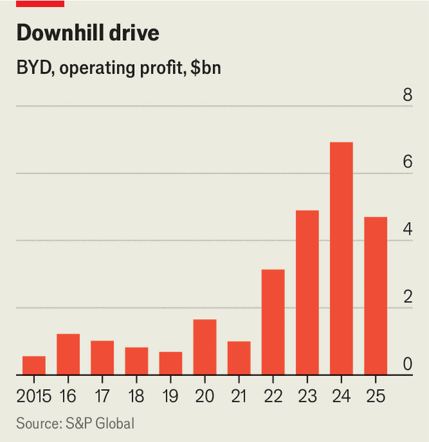
腾势（Denza）另一高端品牌可横向移动停车（其大众市场产品使用“BYD”品牌）。比亚迪的策略成效显著。过去十年营收增长十倍，去年达到1160亿美元。2025年，比亚迪销量超过埃隆·马斯克的特斯拉。王传福的财富估计约为250亿美元。但该模式已显疲态。2025年，经营利润首次出现四年来的下滑（见图表）。4月销量同比连续第八个月下滑。2026年前两个月，吉利集团终结了比亚迪连续三年中国电动车销量冠军的纪录，但比亚迪随后重新夺回榜首。中国电动车行业整体受到激烈价格战的冲击，利润空间被大幅压缩。但比亚迪也开始显得有些格格不入，因为市场正更加关注软件和娱乐功能。■
年轻消费者往往在任何其他操作之前，先查看仪表盘上的大尺寸娱乐显示面板。多家挑战者品牌，如小鹏和理想汽车，均由互联网大佬创办。其他汽车制造商则与科技公司展开合作。大众集团从小鹏处购买了技术诀窍。这家中国科技巨头华为旗下子公司，已向至少五家汽车制造商销售软件和娱乐系统。它还协助这家传统国企江淮推出了售价超过10万美元的豪华电动车品牌Maextro。吉利则频繁签署合作协议，例如与人工智能初创公司StepFun合作自动驾驶技术，与另一家人工智能企业iFlytek合作语音识别技术。9月，其与一家中国软件开发商ThunderSoft合作推出了面向AI模型的计算平台。相比之下，比亚迪则选择自主掌控。
比亚迪自动驾驶系统研发团队成员张马克指出，其他汽车制造商在升级方面仍受第三方供应商牵制。他强调，保持这种控制权对比亚迪而言仍是最重要的事。但自动驾驶领域已显露出比亚迪垂直整合模式的风险。一旦出现失误，更难纠正。比亚迪在技术尚未成熟时，已迅速将系统搭载于多款车型，包括价格更低的车型，此举罕见地招致竞争对手的直接批评。华为高管余承东表示，“所谓的‘足够好’与‘安全’的智能驾驶是两个截然不同的层级。”此类言论或许解释了为何王总于5月28日表示，比亚迪将成为全球首家承担自动驾驶事故损失的公司。■
今年到比亚迪总部参观的访客将看到一项新演示：一款运动型车型在停车场表演漂移，驾驶员则双手脱离方向盘。比亚迪仍希望其电池技术能成为差异化优势。其最新充电技术可在约十分钟内将电动车充至近满电。总部的展示装置将电动车冷冻至-30°C，以展示其耐寒性能。尽管竞争对手如全球最大电池制造商宁德时代（CATL）正在复刻比亚迪的诸多成果，比亚迪仍相信自己能保持领先。即便如此，仅靠电池技术维持优势正变得愈发困难。■ To track the trends shaping commerce, industry and technology, sign up to “ The Bottom Line ”, our weekly subscriber-only newsletter on global business.
§050 海湾地区崛起的新国防巨头原题：A new defence champion is rising from the Gulf · 板块：Business · 栏目：商业
海湾的石油君主国素来以豪掷千金著称——尤其是西方军火工业。其石油财富支撑着全球军火进口的五分之一，采购清单涵盖从战斗机到护卫舰。在喧嚣动荡的邻近地区，安全需要付出代价。如今，这些富裕的统治者正培育本国的国防工业，希望减少对西方的依赖。毫不意外的是，伊朗战争进一步强化了这一雄心。
沙特阿拉伯计划到2030年将国防预算的一半用于国内，目前仅占四分之一，同时沙特阿拉伯军事工业公司（SAMI）将跻身全球前25大国防企业。然而截至目前，这家国有企业与波音公司等美国航空航天巨头合作，主要生产美国战斗机的备件及少量装甲车。卡塔尔的巴赞控股公司同样雄心勃勃但规模较小。在阿联酋（UAE）则势头最为强劲。2019年，阿联酋将约25家本土企业合并成立EDGE集团，作为国家国防旗舰企业。此后EDGE集团已收购多家外资企业，并于5月同意收购意大利柴油发动机制造商Costruzioni Motori Diesel的80%股权。■
EDGE在意大利莱昂纳多（Leonardo，涵盖多个领域）和芬坎蒂瑞（Fincantieri，船舶制造）两家公司中持有51%的股份，并与德国莱茵金属（Rheinmetall）合作开发防空系统。11月，EDGE与美国快速崛起的防务科技企业安杜里尔（Anduril）成立合资公司，为阿联酋及其盟友生产无人机。去年EDGE营收突破50亿美元，利润率健康。约80亿美元的订单使累计未完成订单总额超过200亿美元。公司首席执行官哈马德·阿尔·马拉尔（Hamad al-Marar）预计，随着这些订单逐步交付，未来两年营收将增长五分之一。目前，EDGE已跻身全球前三的精确制导武器制造商行列。EDGE并不追求全面本地化，而是优先发展被认定为关键或供应链可能不稳定的系统与部件。与此同时，其野心正在持续扩大。■
这家企业早已专注于拥有知识产权。如今，一位高管表示，其业务重心正逐渐转向知识产权的生产。据瑞典智库SIPRI统计，EDGE的扩张使阿联酋在全球军品进口中的份额从2016-20年的3.5%降至2021-25年的2.7%。但该公司不仅服务于本国市场，事实上，近四分之三的产量用于出口，目的地包括拉丁美洲、非洲和亚洲国家。马拉尔先生表示，尽管地区竞争加剧，但地缘政治局势意味着仍有更多市场可拓展。今年1月，其公司与巴尔赞公司达成合资协议，并已向萨米公司授权其车辆技术。阿联酋日益强大的国防实力在战争中为其带来了显著优势。伊朗对阿联酋的袭击频率远高于对沙特阿拉伯或卡塔尔。
阿联酋制造的武器成功拦截了伊朗约80%的沙赫德无人机，官员表示。EDGE公司的电子战系统迅速启动，探测来袭导弹和无人机，并启动干扰和欺骗措施，与美国的反导系统协同作战。正如马拉尔先生所言，这一成果意味着EDGE的技术已通过实战检验。当然，战争也带来了挑战：例如，被封锁的霍尔木兹海峡中滞留的物资势必会延迟生产计划。不过，阿联酋过去几年推动国防生产本土化的努力如今看来颇具远见。即便拥有强大的盟友和海湾邻国，提升自主性仍具价值。阿联酋的国防产业或许正是其亟需的制胜关键。■
为追踪塑造商业、工业与科技趋势，敬请订阅我们的每周专属订阅全球商业简报“The Bottom Line”。■
§051 乐高、宝可梦与趣味的未来 商业版原题：Lego, Pokémon and the future of fun · 板块：Business · 栏目：商业
商业版 | 必须集齐它们全部 乐高高管于6月2日试图展示其最新产品，现场此起彼伏的鸟鸣、蛙叫和鼾声不绝于耳。这家玩具巨头最新系列是与宝可梦（Pokémon）合作推出，后者源自日本，已从游戏品牌演变为跨媒体现象。产品内置芯片，让这些生物在靠近时可以训练、战斗并发出嘈杂的对话声。宝可梦是乐高与媒体品牌合作的最新案例。自1999年《星球大战》系列套装取得成功后，这家丹麦公司便不断寻求各类授权，从游戏（任天堂）、好莱坞（哈利·波特）到体育（一级方程式）。■
普通海盗玩具和太空人玩具正逐渐被超级马里奥等热门IP产品挤出货架。据研究机构Circana估算，基于授权知识产权（IP）的玩具贡献了乐高130亿美元年营收的逾半数。乐高并非唯一案例。美泰的《大富翁》拥有从詹姆斯·邦德到芭比娃娃的各类授权版本。制作广受欢迎的Pop!娃娃的Funko公司，推出基于运动员、演员等各类人物的仿制品。其口号“每个人都有所爱”精准概括了这一理念。Circana的弗雷德里克·图特指出，过去七年中，基于授权IP的全球玩具销售额占比已从25%升至37%。乐高则展示了这一策略的成功。■
乐高还更具灵活性：去年它大力推出“侏罗纪世界”系列积木，与新电影同步；今年则借 Pokémon 30周年纪念推出相关产品。知识产权也吸引成年人，他们可能不会购买普通乐高城堡，但可能会被650美元的《指环王》城堡复刻版所吸引。从儿童玩具公司转型为全年龄段流行文化品牌，使乐高年收入自2020年以来几乎翻倍，超过其竞争对手美泰公司的两倍。与合作伙伴合作并不容易。Pokémon团队每周都要前往乐高总部比隆（Billund）开会。为准确呈现皮卡丘的手臂和梦幻精灵的耳朵等细节，需要开发25种新型积木。乐高还需向授权商分配销售分成——尽管其品牌系列定价普遍较高，暗示部分成本已转嫁给消费者。快速变化的在线文化也带来挑战。■
乐高集团市场与产品负责人茱莉亚·戈丁（Julia Goldin）表示，社交媒体让发现趋势变得前所未有的便捷，但判断哪些趋势能持续却愈发困难。开发一款新的乐高系列通常需要长达18个月，比制作卡牌游戏或毛绒玩具的生产周期更长。针对去年夏天意外爆红的“KPop Demon Hunters”电影，乐高相关产品将在今年晚些时候才推出。公司强调其仍坚持自主打造品牌。新推出的面向成年人的花艺系列Botanicals，或将成为今年最畅销的产品线。但消费者似乎更青睐第三方IP。在乐高运营的粉丝创意平台Lego Ideas上，用户提出的主题建议包括“Happy Days”餐厅和“Scooby-Doo”鬼屋。儿童——或许也包括成人——或许该为玩具架腾出更多空间。■
要追踪塑造商业、工业与科技趋势的动态，请订阅我们的每周订阅者专属通讯《The Bottom Line》。■
§052 两位美国大亨押注赌场业复兴 Business | Rolling the dice原题：Two American tycoons are betting big on a casino revival · 板块：Business · 栏目：商业
在拉斯维加斯，运气扮演着重要角色。但一周内接连发生的两件事似乎超出了偶然。5月28日，酒店业大亨蒂尔曼·费尔蒂塔（Tilman Fertitta）宣布，他已同意收购凯撒娱乐（Caesars Entertainment），这家拥有50多家赌场度假村的连锁企业，交易估值达176亿美元。四天后，出版业巨头巴里·迪勒（Barry Diller）提高赌注，以超过180亿美元的价格竞购MGM度假村（MGM Resorts）。在赌博行业经历痛苦亏损期的当下，这似乎是个令人意外的押注时机。
在线游戏行业正因预测市场的兴起而发生剧变，这类市场由Kalshi和Polymarket等公司运营，允许投注者对从体育赛事结果到美国入侵计划等各类事件下注。与此同时，实体赌场正面临困境，消费者对经济状况的担忧日益加剧。拉斯维加斯——MGM和凯撒集团在大道沿线经营着璀璨的赌场度假村——去年接待的游客数量比疫情前的高峰时期减少了10%。在遭遇如此糟糕的开局后，许多投资者已选择退出。截至上周，MGM的股价五年内下跌了约15%；而杠杆率更高、业务更单一的凯撒集团股价则下跌了近四分之三。然而，费尔蒂塔和迪勒似乎认为市场已触底。他们判断是否正确？■
拉斯维加斯——当然，这里是全球乐观偏见的中心——许多人认为，博彩业即将迎来转折点。特鲁斯特银行（Truist）的巴里·乔纳斯（Barry Jonas）表示，该市正“迎来拐点”，游客对其提供的价值认知正在转变，该银行最近将美高梅（MGM）的评级从“持有”上调至“买入”。一些长期的消费趋势也似乎对赌场运营商有利。其中之一是人们对现场娱乐活动需求的增长，近年来赌场度假村已在这项领域押下重注。上世纪90年代初，赌博收入占拉斯维加斯大道（Las Vegas Strip）度假村总收入的近60%，而如今仅占三分之一多，因为赌城游客更倾向于将现金花在演唱会、体育赛事及其他各种娱乐活动上。尽管在线投注引入了新的竞争者，但同时也为博彩行业带来了机遇。■
MGM和Caesars两家公司均推出了投注应用，旨在吸引新客户，最终目标是引导他们前往旗下度假村消费昂贵的假期。在线赌博也在推动曾经被视为禁忌的活动走向大众化。根据Ipsos的调查，去年有六分之一的美国人参与了体育赛事投注，这一比例是两年前的两倍。MGM和Caesars的新主人将如何处置这些资产？在Diller先生以每股48.30美元的价格收购MGM的提议公布后，股价一度升至超过51美元，表明市场认为他可能需要提高报价才能达成交易（尽管股价随后回落）。若他成功掌控公司，可能将维持现状：Diller先生的公司已持有MGM超过四分之一的股份，并且他本人已是该公司的董事会成员。■
这位媒体大亨正忙于重组其帝国的其他部分，据称他与MGM现任管理层关系融洽。弗里蒂塔收购凯撒集团的交易看似更易推进，也可能带来更多延续性而非变革。买家已表示凯撒集团现任负责人将留任。但与弗里蒂塔旗下其他资产合作或许能带来额外好处，包括金 Nugget 品牌赌场连锁、酒店与餐厅网络，涵盖莫顿牛排馆和“巴布·格姆虾”连锁店。游客或许很快能在凯撒宫用菲力牛排庆祝胜利，或用一碗浓汤来缓解忧愁。■ 为追踪塑造商业、产业与科技趋势，订阅我们的周度会员专属简报“The Bottom Line”。
§053 英伟达欲为你的笔记本电脑注入强大力量原题：Nvidia wants to supercharge your laptop · 板块：Business · 栏目：商业
过去几年，每当黄仁勋（英伟达CEO）站上讲台，他总遵循着熟悉的剧本：推出更强大的半导体、软件和系统，用于数据中心运行人工智能。难怪：AI热潮推动了对大型服务器农场的大规模投资，而其中大部分资金直接流向了这家芯片巨头。过去四年，英伟达数据中心业务年收入从110亿美元飙升至1940亿美元，推动公司市值突破5万亿美元，超越所有其他企业。■
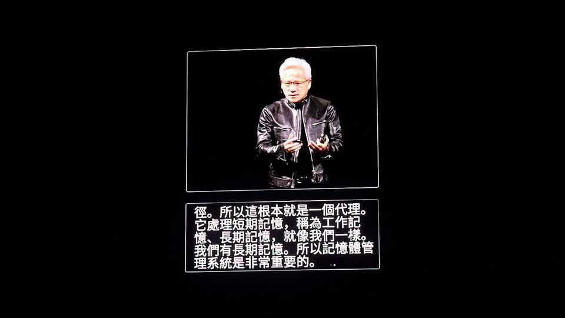
6月1日，在台湾举办的年度科技产业盛会Computex上，黄仁勋（Mr Huang）不仅更新了NVIDIA的数据中心产品，还发布了将于今年晚些时候推出的RTX Spark芯片，专为个人电脑（PC）设计，与微软合作开发，将运行微软的软件。NVIDIA正挑战占据该领域主导地位的芯片厂商英特尔（Intel）和AMD，押注下一轮AI发展不仅局限于数据中心，还将延伸至边缘设备。近年来，个人电脑已成为科技领域的边缘市场。投资银行Evercore估算，过去十年中，用于台式机的芯片年销量下降4%，而笔记本电脑芯片销量则基本持平。如今吸引新关注的是“自主型AI”（agentic AI）的兴起，这类软件能够自主执行复杂任务。■
随着应用范围的扩大，token数量（由AI模型处理的文本片段）预计将大幅增长。模型开发商和云服务提供商已开始面临压力。将部分工作从云端转移到本地设备可能更具成本效益且更高效。Nvidia认为，这将需要一种全新类型的机器。个人电脑依赖中央处理器（CPU），即通用芯片，负责从文字处理到网页浏览等各种任务。CPU可能协调AI代理的工作，但这些代理所依赖的模型需要另一种类型的芯片：图形处理器（GPU），而Nvidia在这一市场占据主导地位。通过RTX Spark，Nvidia将两种芯片整合为“超级芯片”。■
黄先生认为，个人电脑（PC）正经历自40年前以来的首次革新，取代了以往人类主导点击和输入的模式，转而由人工智能代理承担大量工作。但成功绝非易事。英伟达并非PC领域的外行；在AI热潮之前，它曾通过向游戏机销售GPU赚取了大量收入。但在PC用的CPU领域，它是一个新进入者。英特尔和AMD两家公司合计供应了超过四分之三的PC用CPU。至于软件方面，英伟达表示，它已与微软合作两年半时间，共同开发这款新芯片。即便如此，仍有分析师对开发者和用户是否会迅速接受这一类以AI为核心的新型PC持怀疑态度。不过，英伟达仍具备诸多优势。首先，它拥有大量资金可用于投资；分析机构预计，该公司今年将产生约2000亿美元的自由现金流。
它还拥有足够的影响力来吸引合作伙伴，并凭借其品牌吸引消费者的关注。包括惠普（HP）、联想（Lenovo）和宏碁（Acer）在内的多家全球顶级PC制造商已加入，承诺在其设备中搭载这款新芯片。英伟达的举措再次表明，芯片行业竞争日益激烈，企业正不断拓展至原本的领域之外。三月，英国芯片设计公司Arm宣布推出专为人工智能数据中心设计的CPU；RTX Spark则采用Arm的设计架构。黄仁勋在Computex大会演讲次日，英特尔CEO林忠华公布了其计划，其中包括一款将于今年晚些时候推出的AI芯片，专为数据中心模型运行而设计。林忠华表示，英特尔“表现会非常出色”。黄仁勋同样充满信心。■
追踪商业、工业与技术趋势，敬请订阅《经济学人》独家周报《Bottom Line》。■
§054 如何通过阅读了解下一份工作原题：What to read to understand your next employer · 板块：Business · 栏目：商业
从卡夫卡的《审判》到奥威尔的《1984》
欢迎来到乌戈利安特！作为入职流程的一部分，我们建议您在正式开始工作前阅读几本书籍，这将帮助您更好地理解我们独特的文化。如果阅读书单显得复古，那并非如此。《小王子》在Netflix的传说中占据特殊地位：安托万·德·圣埃克苏佩里（Antoine de Saint-Exupéry）的语录至今仍被写入该流媒体公司的文化指南。
■
美国海军陆战队有一个名为“司令官专业阅读计划”的项目，类似于带有子弹的读书会；海军陆战队员每年需从推荐书单中阅读五本著作，主题涵盖战略、战争与决策等。《高塔即将倾覆》（The Looming Tower）这本讲述9/11袭击事件的历史书籍，以及（更出人意料的是）《即兴表演指南》（Impro）这本关于即兴戏剧的书籍，都曾出现在Palantir员工的推荐书单中。其他娱乐形式也能揭示上司希望你如何思考的线索。霍华德·舒尔茨（Howard Schultz）年轻时是《巧克力工厂》（Willy Wonka & the Chocolate Factory）中吉恩·怀尔德（Gene Wilder）版的忠实粉丝，他在规划公司首家精品咖啡零售店时，邀请了一批高管到家中观看这部电影，并以此作为灵感来源。
在Ungoliant，你永远不会被邀请观看老板最喜欢的童年电影。威利·旺卡并非我们的精神指引。但如果你阅读这些书籍，就能理解我们的价值观以及我们偏好的工作方式。《审判》（Franz Kafka 著）。这部讲述一个普通人突然陷入荒诞官僚体系的荒诞故事，更像是员工手册而非小说。《第二十二条军规》（Joseph Heller 著）的书名源自一个无法解决的战争困境：以精神失常为理由逃避飞行任务，恰恰证明了你精神正常。在Ungoliant，如果你表现优秀，将被要求转岗至管理岗位；若工作不佳，将被解雇。你根本无法继续做自己真正热爱的事情。《海浪》（Virginia Woolf 著）。■
意识流、个体彼此交融、人生经历在转瞬之间流逝，以及令人窒息的混乱感。这正是办公室生活的完美写照。帕特里克·拉登·基夫所著的《沉默》。这本书的内容无关紧要，重要的是它提供了极佳的职场建议。加布里埃尔·齐文所著的《明天，明天，明天》。我们没人真正读过这本书，但普遍认为它必然是项目管理的入门指南。乔治·奥威尔的《1984》。有些人显然将这本书视为反乌托邦作品，确实，老大哥更倾向于用鞭子而非胡萝卜来管理。但其核心信息仍值得借鉴：数据的整合是真正的竞争优势，而团结协作追求共同目标，比追求个人私利更能实现成功。温斯顿·史密斯显然不是一个团队合作者，我们都能看到这种做法最终带来的后果。■
《莫雷尔博士之岛》（H.G. 威尔斯）：关于莫雷尔博士，唯一可以说的是他敢于梦想。是的，他的梦想很大程度上建立在活体解剖之上，而一些后果相当不幸。但没有打破几个鸡蛋，就不可能做出煎蛋卷。需要澄清的是，Ungoliant目前没有将动物转化为兽人族的计划。但敢于另辟蹊径并失败，远比接受任意边界要好得多。延伸阅读：《弗兰肯斯坦》、《化身博士》。
《爱玛》（简·奥斯汀）：一个惯于插手的爱管闲事者最终如愿以偿。这证明了事无巨细的管理确实能带来回报。
《秘密历史》（多娜·塔特）：一个局外人加入了一个紧密团结、对单一导师极度忠诚的群体，最终逐渐丧失了所有道德感。
■
《狼厅》（Wolf Hall）作者希拉里·曼特尔（Hilary Mantel）笔下的角色因自身行为付出沉重代价，这是唯一值得商榷之处。从其他方面来看，它清楚地告诉你在这家机构工作期间可以期待什么。一位能力出众的职场高手凭借实力攀登组织阶梯，却忘了自己命运掌握在一位喜怒无常的上司手中。所有乌戈利安人（Ungoliantians）都重要，但只有其中一人掌握85%的投票权。如果你读完所有内容仍如期来到入职第一天，那你正是我们想要的员工类型。我们期待下月见到你。■ The Economist订阅者可注册我们的Opinion新闻通讯，汇集本刊最佳评论、专栏文章、特稿及读者来信。
§055 美国资本主义走向末日化原题：American capitalism has taken an apocalyptic turn · 板块：Business · 栏目：商业
查尔斯·麦基（Charles Mackay）的《大众幻觉与群体疯狂》（1841）被历史学家贬低，却受交易员推崇。这本书最广为人知的是其对17世纪郁金香狂热和18世纪南海泡沫的生动描述。但若想理解21世纪的商业，读者应转向麦基关于“世界末日恐惧流行病”的章节。如今，末日思维已成为美国资本主义最强劲的驱动力。
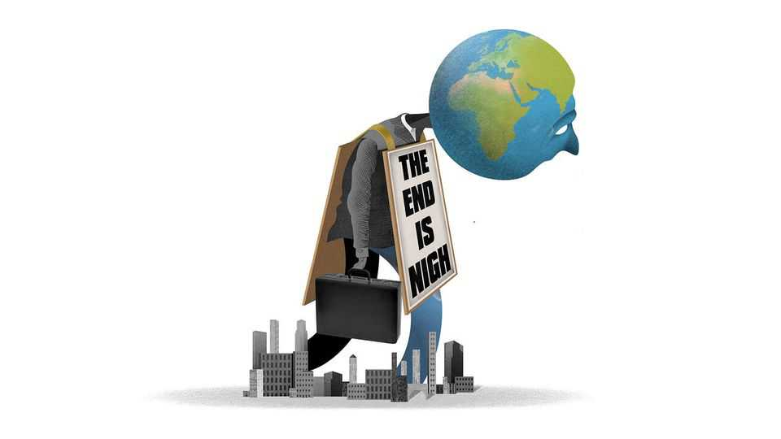
■
埃隆·马斯克，一个仿佛直接从麦克莱的书页中走出的人物，即将让SpaceX上市，这家火箭公司的使命是通过在火星建立殖民地来规避人类面临的生存威胁。马斯克之所以成为美国最富有的资本家之一，部分原因在于他堪称最响亮的卡珊德拉——一位预言者。马斯克正急于在两位同样怀有末世论世界观的预言家之前完成上市。本周，Anthropic提交了公开募股文件，其掌门人达里奥·阿莫代伊曾多次强调其公司Mythos模型的破坏潜力，而该模型至今仍对公众保密。由山姆·奥特曼领导的OpenAI也将很快提交文件。这家实验室最近发布了一份在人工智能（或更准确地说，在人工智能之下）的背景下提出的社会契约计划。如今，美国企业最恰当的划分方式并非按行业，而是按末世论观点。战争威胁在商业领域的重要性几乎不亚于人工智能的威胁。■
去年，帕兰蒂尔公司（Palantir）CEO亚历克斯·卡普（Alex Karp）出版了一本书，主张西方的未来取决于像他公司这样的高科技国防企业。另一家国防科技公司安德里尔（Anduril）创始人帕尔默·卢克（Palmer Luckey）则频繁表达对中国试图入侵台湾的担忧。每家销售关键矿产的公司都有一套令人信服的论调，认为一旦发生此类冲突，其矿产资源将变得极度稀缺。华尔街多数人陷入悲观情绪。近期投资者从此前鲜为人知的私人信贷基金撤资，动摇了人们对整个私人市场的信心。央行官员列出的可能对经济构成“系统性”风险的金融创新手段之多，令人难以置信，以至于系统似乎早已在自身焦虑的重压下崩溃。■
加密货币本身是一项具有末日性质的尝试，因为它声称能提供对山姆大叔（Uncle Sam）开支（包括国防等）引发的政府控制和通货膨胀的保护。过去灾难的日期被赋予了近乎迷信的重要性。去年华尔街最畅销的书名为《1929》，今年热门预测可能是《1873》。交易员们习惯用过去的灾难来描述股市。德意志银行一位策略师本周写道：“1999年会演变成2000年或1987年，还是时钟会重置回1996年？”更不用说1973年的可能性了。显然，1999年的重现或许会增加2008年重演的概率。一种末日式经济必然是充满偏执的。彗星的出现往往预示着世界末日。■
如今，一个网站追踪超级富豪的私人飞机，据称是因为他们在灾难发生时会逃往安全之地。经济学家们焦虑地审视美国异常坚韧的经济数据，寻找“K”这一信号——即经济被超级富豪支撑而其他人陷入停滞。许可纠纷已演变为关乎国家存亡的议题。“我们完了，各位，”犹他州州长警告道，若美国在人工智能领域输给中国（其选民正因州内由基思·奥利里（Kevin O’Leary）支持的大型数据中心而愤怒，后者以电视节目《鲨鱼坦克》（Shark Tank）闻名）。合同问题已升至举足轻重的地位。马斯克在与阿尔特曼争执OpenAI治理时写道：“我道歉，但文明的命运正悬于一线。”
关于监管商业的辩论正呈现出福音派的激烈态势。科技投资人彼得·蒂尔（Peter Thiel）称人工智能将以极权主义规则的形式召唤“反基督”。教皇利奥十四世在上月一篇4万字的论文中写道：“仅对AI进行监管是不够的，它必须被解除武装。”流行歌手查莉·XCX（Charli XCX）最新单曲《春、夏 ’26》则捕捉了教皇与大众的共同情绪：“当世界即将终结，一切皆无希望/我们正踩着一条直通地狱的跑道。”若形势如此严峻，为何美国股市仍如此昂贵？人们常说，如今的美国市场是贪婪战胜恐惧的胜利。但这一说法颠倒了因果。企业正按其末日预言的强度筹集资本，并急于在预期的市场崩盘前完成融资。■
错失恐惧已被更疯狂的焦虑取代。如果有人认为自己的劳动即将变得毫无价值，那么积累资本的冲动会更强烈，正如一些对冲基金人士所认为的那样。他们押上了全部身家。但他们的投资组合往往与那些认为这种观点荒谬的人难以区分。除了科技股，他们还能买什么？如果人工智能确实催生了新的经济，那将是一个快速增长的经济，其中债券因通胀和利率上升而价值缩水。如果它未能做到这一点，现有经济将被摧毁，债券的价值将更加微乎其微。每个投资者都是信徒，无论他们是否相信这一点。一个国家可能因过度担忧而变得无关紧要。但美国正进行着一场通过恐惧实现财富的实验。■
彻底且不可逆的变化预测确实有其用途：向投资者推销时，声称自己的业务将终结我们所知的世界，没有比这更有力的说服方式了。但一个同时存在普遍商业不信任和精英阶层日益增长的千禧年主义的经济体，也极易引发危机。或许真正的危险并非2008年、1999年、1973年，甚至1873年，而是1789年。■《经济学人》的订阅者可注册我们的Opinion专栏通讯，汇集本刊最佳评论、专栏文章、特邀评论及读者来信。
§056 Gen-Z社会主义，从Zohran到Zack及更远 金融与经济原题：Gen-Z socialism, from Zohran to Zack and beyond · 板块：Finance & economics · 栏目：财经
不同的时代催生不同的左翼思想。二战后，尤其是在欧洲，社会主义从高度工会化的重工业中汲取力量。其目标并非废除资本主义，而是通过国有化公共事业和广泛再分配收入来管理资本主义。2007-09年金融危机后，“千禧一代社会主义者”——《经济学人》曾如此称呼他们——认为战后欧洲模式培养出的领导人与普通工人疏离，且对气候变化问题过于自满。■
他们的解决方案是让员工进入公司董事会、创建员工持股合作社并补贴绿色技术，旨在构建更持久、更公平且更环保的资本主义。如今，新一轮社会主义思潮正在兴起。这在一定程度上源于人们对以色列在加沙战争引发的人道主义危机的愤怒。但对许多选民而言，加沙已象征着更深层的不满：他们认为政府对国内民众问题的关注和投入远不及对其他事务的重视。他们渴望21世纪版的“平方协议”——这是西奥多·罗斯福（Theodore Roosevelt）1904年为美国民众提出的承诺。如今这意味着要挑战一个让既得利益者获益的破败体系，因为现代经济对那些未登上福布斯榜单的人毫不友善。GDP达到前所未有的规模，但租金过高，一顿午餐要28美元，优质工作却难以寻觅。■
新一代社会主义者因此希望政府直接管控众多商品和服务的价格，尤其是食品和房租等基本生活必需品。所需资金几乎全部来自对最富裕阶层的压榨。这是一种迎合人们狭隘私利而非公共利益的零售式政治。降低我的房租！削减我的账单！给我免费公交！保护我的工作！这些方案往往幼稚且难以实施。但其信息简单易懂、极具吸引力，因此这种Z世代社会主义正在全球民主国家获得越来越多追随者。纽约新任市长佐赫兰·马姆达尼（Zohran Mamdani）便是其中之一。同路人凯蒂·威尔逊（Katie Wilson）则领导着西雅图。缅因州的格雷厄姆·普拉特纳（Graham Platner）和密歇根州的阿卜杜勒·埃尔-赛德（Abdul El-Sayed）等左翼候选人希望在11月的中期选举中当选参议员。■
在威斯康星州，另一位左翼人士弗朗西斯卡·洪（Francesca Hong）在州长选举民调中领先。博彩市场将亚历山德拉·奥卡西奥-科尔特斯（Alexandria Ocasio-Cortez）列为2028年最可能成为民主党总统候选人的人选，仅次于加文·纽森（Gavin Newsom）。在加拿大，娜奥米·克莱因（Naomi Klein）的丈夫阿维·刘易斯（Avi Lewis）最近成为第三大全国政党新民主党的领导人。英国绿党在扎克·波兰斯基（Zack Polanski）领导下民调飙升。德国左翼党（Die Linke）近期民调达到多年新高。法国的让-吕克·梅朗雄（Jean-Luc Mélenchon）这位年事已高但仍有青年魅力的左翼人士正瞄准明年总统大选。马姆丹尼（Mamdani）希望冻结纽约租金管制公寓的租金，开设由市政府运营的平价杂货店，并提供从出生至五岁儿童的免费普惠托育服务。■
在最近一次州选举前，德国左翼党（Die Linke）承诺废除“从托儿所到大学的所有费用”。波兰斯基（Mr Polanski）领导的绿党计划实施租金管制，并为年轻人提供免费公交；澳大利亚绿党则希望实现所有公共交通免费。“像Costco一样运作，但作为公共服务”，这是勒维斯（Mr Lewis）对加拿大全国性公共杂货店计划的描述。选民拒绝了千禧一代的社会主义。2019年，深受英国年轻人喜爱的婴儿潮一代杰里米·科尔宾（Jeremy Corbyn）带领工党遭遇自1935年以来最差选举结果。伯尼·桑德斯（Bernie Sanders）这位美国千禧一代运动的代表人物，在2016年和2020年均失去民主党总统候选人提名。在法国，梅朗雄（Mr Mélenchon）未能进入总统选举第二轮。社会主义者不得不寻求新的策略。后疫情经济为他们提供了突破口。■
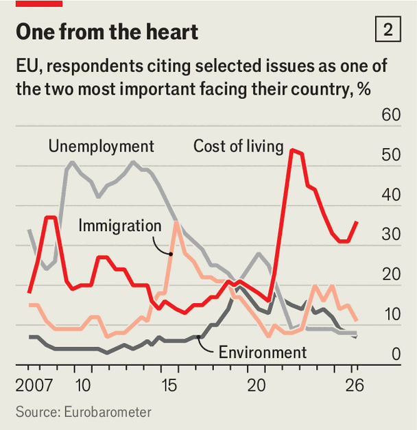
2020年代，纸面上的经济与人们实际生活的经济之间出现前所未有的鸿沟。尽管富裕国家失业率低、家庭实际收入创纪录、股市飙升，但民众却从未如此悲观。自2022年以来，美国消费者信心持续徘徊在历史低点（见图表1）。疫情期间，20%的欧洲人认为生活成本压力或住房问题是本国面临的两大主要问题之一。如今这一比例升至36%，尽管对气候变化、失业和移民的担忧正逐渐淡化（见图表2）。社会主义思想家詹姆斯·米德韦总结了左翼的观点：经济增长“已与生活水平的改善脱节”。人们同时指责企业和政府的失职。■
2024年，研究机构Navigator的一项民调显示，五分之三的美国人认为“企业贪婪”是“通胀的主要原因”。这或许解释了为何他们自己似乎也更贪婪了。英国希望政府“增税并增加公共支出”的民众比例大幅下降（见图表3），而认为所得税“不公平”或“非常不公平”的民众比例自2019年以来翻了一番。认为联邦所得税“过高”的美国民众比例徘徊在二十年来最高水平附近。在法国，信任中央政府能妥善使用公共资金的民众比例从2023年的33%降至2025年的22%。人们也越来越将矛头指向科技，尤其是人工智能。他们担心蓬勃发展的数据中心会推高电价，而由这些服务器农场驱动的人工智能将夺走他们的工作。
超过60%的美国、英国和加拿大民众表示，AI产品和服务让他们感到“不安”，这一比例远高于全球约50%的平均水平。一项针对美国年轻成年人的最新民调显示，59%的人认为AI“威胁到自己的就业前景”。若你认为当今经济是场骗局，Z世代社会主义者警告，只需等待AI驱动的明天经济。极少数富豪将凭借AI获得前所未有的权力与财富，而其他人则将为此付出代价。最近一次大学典礼上，每当提及令人畏惧的两个字母“AI”，学生们便发出嘘声。那么，人们究竟希望如何应对这一切？从纸面来看，选民的社会主义倾向已不如几年前。在2018至21年达到5%峰值后，自称“极端自由派”的美国民众比例已降至3.4%。■
然而，这并非因为人们变得更加右翼，而是因为他们对各种主义失去了兴趣。哈佛大学政治研究所的一项民调显示，年轻美国人对资本主义和社会主义的支持率在2020年至2025年间大幅下降（见图表4）。取而代之的是，人们更希望有人能提高收入并降低生活成本。根据长期进行的盖洛普社会调查，自1975年以来，如此多的美国人希望政府采取行动“改善贫困群体的生活水平”尚属首次。他们希望有人能阻止人工智能破坏社会。一群有影响力的社会主义学者为这些观点提供了思想支撑。
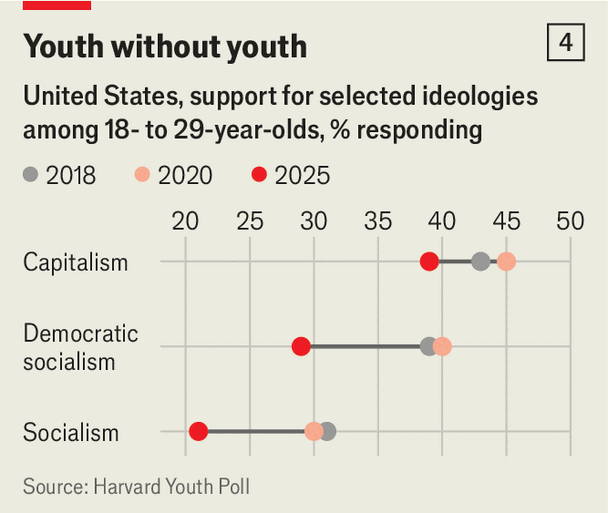
马萨诸塞大学阿默斯特分校（University of Massachusetts, Amherst）的伊莎贝拉·韦伯（Isabella Weber）的研究表明，企业的定价能力意味着现代经济更倾向于服务高管和股东，而非普通民众。去年韦伯与同事在论文中分析了企业财报电话会议，发现许多公司利用通胀“保护甚至增加利润”。尽管许多经济学家指出，近期通胀主要由工资上涨而非涨价驱动，但韦伯的理论，以及诸如“K型经济”（即富人获利而其他人受损）等关联观点，已获得广泛支持。另有观点更进一步，认为经济增长永远无法满足人们真正的需求。■
Jason Hickel（人类学家）与Kohei Saito（哲学家）等人主张，GDP增长对社会具有破坏性，迫使人们过度劳动以维持生计。山本健一的《慢下来：去增长宣言》在日本大受欢迎，销量超过50万册。Hickel的观点较为模糊，但在欧洲政界颇具影响力；2023年，欧盟委员会主席乌苏拉·冯·德莱恩在欧洲议会的“超越增长”研讨会上发表演讲。面对这些政治与思想领域的变化，Z世代社会主义政客正尝试传递新的信息。首先摒弃“觉醒”议题，因为在经济不满情绪高涨、对意识形态反感的当下，这类话题显得不再紧迫。不再谈论“结构性种族主义”或DEI（多元、平等、包容）等概念。■
“气候危机”这一终极集体主义问题，获得的媒体关注却相对有限——甚至在波兰斯基的绿党内部也是如此。民主党对“绿色新政”也保持沉默。普拉特纳甚至誓言废除联邦汽油税，这在一位气候友好型千禧一代社会主义政客身上几乎不可想象。传统社会主义思想中增税与扩大支出的基石，如今也已被摒弃。Z世代的社会主义则更关注让生活更负担得起、工作更稳定，尤其是在对抗人工智能的背景下。支持者倾向于任何能提供即时缓解的措施，而非回报不确定的长期投资项目。有人主张免费公共交通，多数人支持房租管制，几乎所有人都承诺提供免费育儿服务。■
直到6月2日看似一场窄幅败北的初选之前，汤姆·斯蒂尔（Tom Steyer）一直在为加州州长竞选主打“人工智能时代的工作保障计划”，承诺为受AI影响的工人提供“高薪工作和福利保障”。刘易斯（Mr. Lewis）则主张暂停加拿大数据中心建设，并反对“任何用聊天机器人取代公务员的尝试”。Gen-Z社会主义者与前辈之间最显著的思想分歧在于，谁来承担这些福利和保护措施的费用。过去的左翼人士设想通过普遍增税来实现，2010年代末期桑德斯（Bernie Sanders）曾提议对年收入超过29,000美元的群体征收4%的附加税（占美国家庭的绝大多数）。而新一代社会主义者若提出增税，其关注点完全集中在超级富豪身上。波兰斯基（Mr. Polanski）希望对超过1亿英镑（约13亿美元）的财富征收1%的年税，对超过10亿英镑（约130亿美元）的财富征收2%（英国目前仅有约100位亿万富翁）。■
马曼达尼正在对部分豪华住宅物业征收年度附加费。华盛顿州则推行针对年收入超过100万美元的“百万富翁税”，税率高达9.9%。理论认为，通过提高政府效率可获得额外资金。马德韦的智库“Verdant”（倾向绿党）曾提出“左翼版DOGE”概念，该名称源自埃隆·马斯克在特朗普任内短暂推行的削减联邦浪费开支计划。5月28日，马曼达尼承诺为他的城市设立“政府效率委员会”（COGE）。这些构想大多荒谬。房租管制因抑制该领域投资而未能降低住房成本，反而因供应受限推高租金。试图遏制人工智能将导致投资和就业流向他处。效率节省在理论上很可观，但实际操作中却难以实现——不妨问问马斯克本人。■
过度依赖对富豪征税存在风险：毕竟富豪数量本就不多，他们可以迁徙（如一些人已从加州迁出，以规避可能针对亿万富翁的额外税收）。无论如何，大量非社会主义者正在考虑能让马曼迪感到自豪的政策。中间派工党人士正试探性地考虑对食品设定价格上限，中间派民主党人提出对不属于高收入者前百分之几的人实施减税，甚至MAGA共和党人也倾向于暂停数据中心建设。无论更多Z世代社会主义者是否能在选举中获胜，Z世代社会主义思潮都不会消退。■ 订阅我们的每周专属简报《Money Talks》，获取对经济、金融和市场领域重大新闻的深度分析。
§057 股市能否吞下太空探索技术公司、Anthropic和OpenAI原题：Can the stockmarket swallow SpaceX, Anthropic and OpenAI? · 板块：Finance & economics · 栏目：财经
它们承诺将成为股市历史上最大的首次公开募股（IPO）。据称，太空探索技术公司（SpaceX）计划于6月11日通过发行将在纳斯达克交易所上市的股份，从投资者处筹集750亿美元。埃隆·马斯克的火箭公司很快将被另外两家巨型IPO跟进。人工智能实验室Anthropic于6月1日提交了IPO草案；竞争对手OpenAI预计也将很快提交。这两家公司传闻各自寻求高达600亿美元的资金。三家公司合计可能在数月内为美国上市公司市值增加高达4万亿美元。
股市究竟该如何应对这场风暴？头条新闻预测将出现“疯狂交易”。Interactive Brokers（互动证券）首席策略师史蒂夫·索斯尼克（Steve Sosnik）警告称，这些上市交易可能带来“存在性风险”。令人担忧的是，股票市场指数编纂机构可能会将这三只巨型股票快速纳入基准指数。这将促使管理着数万亿美元资产的跟踪基金在新股发行后数日内大量买入。一旦迅速耗尽大量买家，剩下的会是谁？答案是：在异常深且流动性充足的市场中，仍有大量投资者。尽管巨型IPO的发行前所未有，但美国异常活跃的股市将轻松消化。不过在接下来的几年里，市场或将面临消化不良的问题。首先，将巨型IPO的规模置于更广泛的背景下来看。■
按名义价值计算，首次公开募股（IPO）筹集资金的纪录由沙特阿美（Saudi Aramco）保持，该公司于2019年在利雅得上市时筹得290亿美元（按当前货币价值计算为380亿美元）。SpaceX、Anthropic和OpenAI三家合计目标为2000亿美元左右。然而，这在美国股市中不过是微不足道的数字。广义的罗素3000指数涵盖的上市公司总市值达77万亿美元；而更狭义（但追踪度更高）的标普500指数所代表的大型企业市值则为65万亿美元。因此，指数基金投资者短期内不会明显感受到投资组合的变化。
尽管纳斯达克交易所已将股票纳入指数前的“上市前等待期”缩短至15个交易日，富时罗素（FTSE Russell）更是将等待时间压缩至5天（标普道琼斯指数公司（S&P Dow Jones）据称也在考虑类似措施），但多数股票指数仍按公司自由流通股（即可供公众交易的股份）价值进行加权。对SpaceX而言，这意味着其仅计划于6月发行约750亿美元的股票，因此其在标普500指数中的初始权重约为0.1%。纳斯达克100指数是个例外，已调整规则，允许公司权重最高可达自由流通股价值的三倍，显然旨在吸引埃隆·马斯克（Elon Musk）。即便如此，SpaceX在这家总市值达40万亿美元的指数中，初始权重仍将仅约0.5%。随着更多股份上市交易，这一权重将随之变化。■
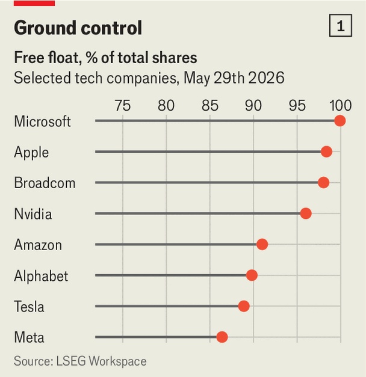
美国所有上市科技巨头的自由流通股比例均超过85%（见图表1），其中最低的是2012年上市的Meta，其创始人马克·扎克伯格仍持有13%的股份。最初，SpaceX、Anthropic和OpenAI在IPO说明书中的“锁定期条款”将阻止公司内部人士和早期投资者出售现有股份，从而提升自由流通股比例。然而随着时间推移，这些条款将陆续到期，届时数万亿美元的新股将进入市场。SpaceX计划分批释放锁定股份。若其IPO发行750亿美元股份，估值达1.8万亿美元，初始自由流通股比例将为4%。马斯克持有的股份约占剩余部分的半数，IPO后366天内不得出售。该限制同样适用于部分“特定重要投资者”持有的股份。■
锁定期的其余部分，约占SpaceX市值的不到一半，将更快到期。在发布首份季度财报（预计在8月或9月）后，内部人士可出售其持股的20%。若股票价格较IPO价格上涨30%或更多，他们还可再出售10%的股份。此外，IPO后将按设定日期分批释放股份，且在发布第二份季度财报后（见图表2）也会有额外批次的股份解禁。当然，内部人士并不强制出售股份。马斯克尤其可能保留其股份——其中大部分拥有超大表决权，从而巩固其对SpaceX的控制。类似情况也适用于Anthropic和OpenAI在实验室上市后股东的股份安排。因此，这些公司加入公开市场的过程将跨越数年，而非数日。然而，“渐进”并不意味着“无足轻重”。■
若历史是指南，那些购买上市后股票的投资者往往面临失望。佛罗里达大学的杰伊·里特（Jay Ritter）研究了1980年至2024年间上市公司的表现。数据显示，这类股票在首次交易日后的三年内，平均回报率比整体市场低20个百分点。估值超过营收40倍的公司，表现更差，差距达58个百分点。估值达1.8万亿美元的SpaceX，其市销率将超过90倍。Blockbuster的IPO也常被视为牛市接近顶峰的信号——这合乎逻辑，因为企业希望以最高价格出售股份。2020和2021年的IPO高峰出现在熊市前夕。此前的IPO热潮，如1990年代末或2008年前的时期，往往随后遭遇更严重的下跌。■
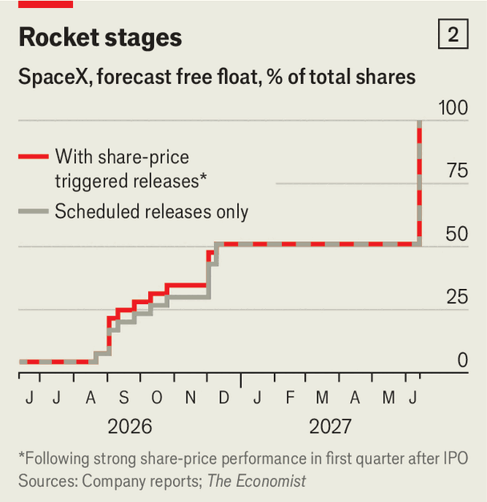
今日，若三大巨头表现不佳，甚至可能引发股市崩盘。这三家企业均与AI技术进步紧密相关，而更广泛的市场也日益与AI挂钩：美国市值前十的AI相关上市公司已占标普500指数总市值的五分之二。单独的SpaceX负面消息可能对跟踪基金影响不大，但AI领域的负面消息肯定会影响。按等权重而非市值加权的基金可部分对冲这种风险，但这也等同于押注市场下跌——与被动投资背道而驰。更大的担忧是，这些巨型IPO预示着更多融资，既包括新上市的科技巨头，也包括其传统同行。正如Elm Wealth投资公司Victor Haghani所指出，多年来资本充裕而股票日益稀缺。■
科技巨头们积累了巨额现金，因此选择回购股票而非发行新股，与此同时白领阶层将退休储蓄投入股市，推高了股价。如今这些科技巨头正放缓股票回购甚至暂停，转而将利润用于发展人工智能。多家公司已转向债券市场寻求更多资金。本月，谷歌母公司字母表公司宣布将发行850亿美元新股。与此同时，白领阶层最可能面临AI取代其工作、养老金缩水的风险。投资者或将对巨型IPO趋之若鹜。不过几年后，股市可能需要为资本紧缩做好准备。■
如需了解经济学、金融和市场领域最重要的新闻的专家分析，请订阅我们的周度专属通讯《Money Talks》。■
§058 印度人现在可以对季风进行投注原题：Indians can now bet on the monsoon · 板块：Finance & economics · 栏目：财经
印度的金融中心孟买，到6月中旬本应被雨水浸透。西南季风——为南亚地区提供全年大部分降水的季节性风暴——将给这座城市带来暴雨。街头小吃贩和建筑工人将抱怨不已，棚户区的外来务工者可能返回家乡等待雨季结束。与此同时，一些商人和金融从业者则会摸着装满卢比的潮湿口袋暗自庆幸。5月29日，印度国家商品和衍生品交易所（NCDEX）允许交易员开始对今年各月孟买季风降雨量是否高于过去30年平均值进行金融投注。
■
天气衍生品根据某些明确的气象指标进行赔付，自20世纪90年代中期以来便在美国市场存在。此前美国能源公用事业的放松管制催生了温度衍生品这一细分市场，企业可借此对冲制冷度日（空调需求激增时）或制热度日（家庭和企业启动暖气时）带来的风险。与传统保险形式不同，持有者无需证明自身遭受损失。相反，衍生品合约在某些预设参数达成时会自动触发。这些参数可能是某个地点（通常为官方气象站）记录的临界温度、风速或其他变量。这避免了资金在最需要的地方出现漫长延迟。■
去年，牙买加政府因飓风梅丽莎（Hurricane Melissa）的中心气压和风暴路径符合该国发行的“灾难债券”（catastrophe bond）标准，获得1.5亿美元赔付。降雨衍生品则较为罕见。位于以寒风著称的城市的芝加哥商品交易所（Chicago Mercantile Exchange）于2011年推出降雨、降雪和霜冻衍生品，但因需求不足于2014年停售。在发达国家，最明显受益的农民通常依赖农作物保险等更传统的工具。印度数以百万计的小农户不太可能急于参与孟买季风衍生品交易（尤其是他们更关注季风对印度河-恒河平原某片狭小土地的影响，而非沿海大都会）。相反，NCDEX预计会从大型企业获得定制化需求。■
拥有农业贷款组合的银行可能是买家之一。以跨整个流域建坝蓄水的水电公司可能属于另一类买家。文章暗示太阳能发电企业可能是卖家，对冲基金也可能是卖家。无论哪一方进入合约，都需做好被“淋湿”的准备。天气衍生品的定价比股票期权或商品期货更难。传统衍生品定价所用的金融数学模型在此失效，因为缺乏基础资产。模型构建者必须依赖天气预报。而降雨预报比高温预报更难准确，因为降雨对大气微小变化更为敏感。■
气象学家在预测季风降雨时面临“突发性降雨”和“异常变化”等挑战。前者指云层突然在某一区域集中降雨，后者则是地气反馈机制可能引发降雨时间与强度的骤变。印度商品交易所（NCDEX）或许一开始就关注了错误的天气相关风险。对印度而言，气温似乎比降雨更为关键。汇丰银行（HSBC）分析师普兰朱尔·班达里（Pranjul Bhandari）指出，如今仅追踪气温即可预测印度的食品通胀。因极端高温易导致水库水位蒸发，对依赖灌溉的农民而言，水库水位比降雨量更重要。与可囤积的谷物不同，易腐水果和蔬菜在高温下会迅速腐坏，奶牛产奶量也会下降。NCDEX计划未来推出与高温挂钩的衍生品合约。■
印度受天气影响的行业正期盼这场金融创新，如同季风般早日到来。■ 如需获取关于经济学、金融和市场的重大议题的专家分析，请订阅我们的每周专属订阅简报 Money Talks。
§059 想了解未来原题：Want to know the future? Don’t trust the stockmarket · 板块：Finance & economics · 栏目：财经
“如果经济学家想研究马，”一位悲观的科学家曾开玩笑说，“他们不会去观察马，而是坐在书房里自问：‘如果我是马，我会怎么做？’”但至少马还能免于这种关注；金融从业者则不然。有一个经济理论尤其容易引发他们不满，甚至质疑引用者是否曾靠近交易大厅。这就是有效市场假说，其正式表述认为，投资者整体上能完美且及时地将新信息纳入资产价格。
援引这一理论的人往往意指更深层的含义：即市场因此能提供对诸如企业盈利等基本面的最佳预测。换句话说，价格永远正确，正如经济学家们四处奔走、掌控决策时必然如此。眼下这种柏拉图式理想显得格外遥远。零售投资者热切追捧“迷因股”，推高股价只为让做空者吃苦头。2020年被选为“迷因股”代表的视频游戏零售商游戏驿站（GameStop）股价至今仍比当时高出20倍。其表现与迄今受益最多的AI革命领军者英伟达（Nvidia）不相上下。英伟达同行的科技巨头们正争相发行新股并面向公众出售——这无疑是他们认为牛市即将见顶的明确信号。然而投资者们仍乐此不疲地持续涌入。■
那些真正研究金融经济学的学者们早已知悉，近半个世纪以来，市场波动性远超仅由新信息推动的水平。2013年诺贝尔经济学奖得主罗伯特·席勒（Robert Shiller）早在1979年发表的论文中，就以债券收益率为例展示了这一点，又在1981年以股价为例进行了论证。在他研究的近百年数据中，股价曾多次大幅下跌，跌幅远超即便是大萧条时期也难以解释的程度。这使得投资者仅依据理性预期的股息预测来定价股票的说法难以成立。最近，罗伯特·席勒的学术继承者们进一步解释了这一现象——除了人们偶尔会盲目跟风的非理性行为之外。■
最令人信服的理论，正逐渐被研究者和学术型投资者广泛接受，是“非弹性市场假说”（inelastic-markets hypothesis），该理论由哈佛大学的Xavier Gabaix与芝加哥大学的Ralph Koijen提出。其核心观点是，股票价格并非由投资者预期的股息（或盈利）决定，而是受到资本流动的显著且持久影响。Gabaix和Koijen估计，用新资金购买1美元股份的投资者，会推动整体股市价值上升3-8美元。要理解其原因，可以设想三类投资者：第一类是追逐收益的投资者，他们在股价上涨时买入更多股份，股价下跌时卖出（可联想为散户投资者或趋势跟踪对冲基金）；第二类投资者维持固定资产配置，例如60%配置股票、40%配置债券（可联想为养老基金）；■
第三类投资者是价值投资者，只在市场崩溃后以极低价格买入股票（比如沃伦·巴菲特）。仔细观察，这种理想化的组合看起来与现实中主导市场的群体颇为相似。值得注意的是，任何套利者——有效市场信徒认为他们或许能平抑扭曲并根据基本面重新定价资产——数量稀少且受到严格限制。现在想象一位退休储蓄者希望在牛市中买入股票，他们无法求助于那些追求高回报的投资者，因为后者同样在追逐更高收益。固定配置者只能在股价上涨时出售，因为他们必须维持60/40比例。价值投资者同样只有在股价上涨、变得不具吸引力时才会出售。因此，资本流动推高股价，无论人们对未来盈利有何看法。■
如果那些操盘交易台的资深交易员对经济学家推崇的有效市场理论感到沮丧，他们则可能对此解释露出讥讽的微笑。毕竟，这种说法听起来确实很像“价格上升以匹配供需”，却未说明为何需求会率先上升。这种缺失或许反而是种优势。普通储户每逢发薪日买入股票时，通常并不基于对卓越企业盈利的预测。机构投资者也未必一定依据设定的回报目标进行投资，毕竟他们鲜有更优选择。然而，他们的行为却依然推动股价上涨。若据此推测未来市场赢家，恐怕只会让投资者血本无归。■ The Economist 订阅者可注册我们的观点通讯，汇集本刊最佳领袖文章、专栏、特稿及读者来信。
§060 一些亿万富翁缴税过少原题：Some billionaires pay too little tax · 板块：Finance & economics · 栏目：财经
假设你是Veblen Luxe SA（法国公司）的亿万富翁创始人，该公司主营纯金行李标签。你该如何安排财务事务？一种选择是直接持有Veblen股份。但这样你必须在公司支付股息时立即缴纳所得税。你的会计师可能会建议你将股份放入控股公司Hespérides S.à r.l.。在控股公司中，股息可以累积而不产生高额所得税。当然，你无法动用这笔现金，但可用于投资和部分支出。
如果你能说服银行以你的赫斯佩里得斯股份作为抵押贷款给你用于日常开支的资金，而股息积累速度远超债务增长，你或许可以持续借贷并无限期推迟所得税的缴纳。加布里埃尔·祖克曼（巴黎经济学院教授）在其新书《我们需要对亿万富翁征税》中，正是针对此类安排展开批评。这位专栏作家曾为我们的“Inside Economics”节目采访过祖克曼，他如今已超越其同乡兼昔日合作者托马斯·皮克提，成为左翼人士最青睐的经济学家。他最新提出的论点是，控股公司使超级富豪能够以远低于大多数公众的税率缴税，甚至那些支持单一税率（而非强烈累进税率）的人也应支持对财富征新税，以实现税收公平。■
例如，齐曼先生（Gérard Zucman）的祖国法国，通过控股公司，亿万富翁们只需缴纳其收入的约25%作为税款（包括全球范围内的公司税），他计算得出。相比之下，普通法国人的综合有效税率高达51%。齐曼先生认为这是不公，并提议将超级富豪的年度税负提高至其净资产的最低2%。去年他曾在法国推动实施此类税种。相较之下，控股公司对欧洲税务官员而言比对美国国税局（IRS）更具挑战性。自1934年起，美国对个人控股公司的未分配收入征收20%的税，这一措施源于公众对摩根大通（J.P. Morgan）这位富豪银行家连续两年未缴个人所得税的愤怒。然而，齐曼先生表示，这种罗斯福式的解决方案仍不完善。■
他指出，沃伦·巴菲特的上市公司伯克希尔哈撒韦公司（Berkshire Hathaway）自1967年以来从未宣布过现金分红。利润不断累积，无需缴纳所得税。富裕的美国人还可以通过抵押增值资产来维持其生活方式。当他们去世时，继承人可享受“递增成本基础”（stepped-up basis）的优惠，即继承股票时不再计算此前的资本利得。如果资产增值速度足够快，且利润持续再投资，理论上可建立一个永续免税的家族王朝。佐兰（Zucman）指出，美国最富有的400人——即福布斯富豪榜上的上榜者——所缴纳的税率仅为24%，而普通公民的税率则为30%。佐兰的研究常引发争议，一方面是因为财富税在经济学家群体中并不受欢迎，另一方面则源于其数据常与他人存在分歧。他的最新研究也再次引发了数据争议。■
美国国会联合税收委员会（Joint Committee on Taxation）的戴维·斯普林特（David Splinter）表示，Zucman及其合著者低估了美国亿万富翁所缴税款的规模。斯普林特对资本利得、福布斯富豪财富在家族成员间的分配方式以及州和地方税款的计算方式做出了不同假设。他还纳入了所有美国人的收入转移，并从其税款中扣除税收抵免。他得出的结论是，亿万富翁的税率高达38%，而中等收入美国人的税率仅为18%。Zucman则认为斯普林特在数据处理上存在错误。无论对他的数据持何种看法，Zucman已指出欧洲对控股公司处理方式的宽松。他也并非唯一指出阶梯式计税基础等其他地区类似漏洞不公的人。但最低财富税是否是解决之道？■
欧洲要效仿美国对控股公司的处理方式并不困难，而美国（及其他国家）也应修正其资本利得税制度。齐曼先生得出2%最低税率的结论，是基于假设亿万富翁对自身财富的预期回报率为6%，因此2%的净资产税相当于33%的所得税。然而现实情况是，要求Veblen Luxe（维布伦奢华）的所有者支付其净资产的2%相对容易，但若要对那些尚未产生现金利润的初创企业创始人进行类似征税，却面临更大挑战——这些创始人所依据的估值可能因企业经营不善而瞬间崩盘。税率真的会维持在2%吗？齐曼先生指出，反对财富税的人与早期反对所得税的人如出一辙。但回顾历史，当初反对所得税的批评者确实有其道理，他们警告这种税种会随时间推移显著增长。而左翼阵营中的人士恐怕也不会止步于2%的税率。
加州拟议的5%“一次性”财富税很可能不会是一次性举措。6月4日，皮克提（Thomas Piketty）现身巴黎的世界不平等会议（World Inequality Conference），呼吁推行渐进式全球财富税，对超过220万欧元（250万美元）的财富按年征收1%，超过5.53亿欧元（6.5亿美元）的财富税率则升至20%。他此前曾支持最高达90%的财富税。目前尚不清楚祖克曼（Gabriel Zucman）是否认同这些极端主张。他更倾向于通过不同税率进行实验。他对财富的疑虑根深蒂固：他认为攫取政府权力的权贵（如俄罗斯寡头）与创造新产品的企业家之间几乎没有区别。在他看来，财富始终会带来危险的政治影响力。然而，抑制创新可能带来的代价却十分巨大。■
耶鲁大学的威廉·诺德豪斯过去的研究表明，创新者仅能获取其为社会创造价值的2%；而哈佛大学的斯蒂芬妮·斯坦切娃最新研究发现，创新努力对税率的反应出人意料。堵塞税收漏洞是合理的举措。然而，对社会最高效能人群的资产进行征收则将导致经济崩溃。■ 订阅者可注册我们的意见电报，汇集了最佳的社论、专栏、特稿及读者来信。
§061 农业科技投资持续增长原题：Investment in agricultural tech is growing · 板块：Science & technology · 栏目：科技
全球农业科技创新投资持续攀升。据农业风投公司Agfunder（农业风投公司）报告，2025年农业科技初创企业融资总额达162亿美元。其中90亿美元用于新研究以提高农田产量，较2016年的25亿美元增长显著。这一增长恰逢其时。近年来食品市场一直面临剧烈波动，先是全球疫情冲击，随后是乌克兰战争，如今又因中东新战争引发动荡。在此基础上，全球变暖导致干旱、土壤盐碱化以及异常且极端的天气日益频繁。■
然而，食品生产的基础技术上一次被彻底革新是在20世纪中叶。幸运的是，不确定性反而能推动颠覆性技术的发展。由于新冠疫情，2021年全球农业食品科技投资激增，从2019年的220亿美元攀升至550亿美元的峰值。“波动对想要吃饭的人来说很糟糕，但对技术采纳却大有裨益，”安特拉资本（Anterra Capital）管理合伙人亚当·安德斯（Adam Anders）表示。安特拉资本是一家专注于食品和农业科技的荷兰风投公司。在荷兰瓦赫宁根大学与研究中心（Wageningen University & Research）举行的F&A Next会议上，超过600名农业科技领域的领军人物和投资者（包括200多家初创企业）齐聚一堂，会上涌现出几个主要趋势。创新者们正开发一种仿生农药，其分子结构模仿自然界中的分子，这基于对现有植物保护机制更深入的理解。■
受个性化医疗兴起的启发，他们正设计针对特定田地的肥料、农药及其他作物辅助品，依据植物基因特性与具体环境条件。荷兰工业生物科技加速器Planet-B.io的辛迪·格哈特（Cindy Gerhardt）表示：“围绕可持续性的关注点正从‘我们应该保护环境’转向‘气候变化将导致价格飙升’。这并非防止气候变化，而是应对它并寻找解决方案，否则价格将飙升至难以承受的程度。”对部分人而言，这意味着通过开发替代合成农药和肥料来提升产量、减少损失，这些传统产品自20世纪中期绿色革命以来一直主导市场。■
根特大学分拆出的初创企业B-COS正利用基因工程技术改造细菌，使其生产化学结构类似几丁质的分子。几丁质是昆虫外骨骼和真菌细胞壁中的一种化合物。喷洒这些分子的番茄和马铃薯植株会被误导以为遭受攻击，从而激活其天然防御机制以抵御病原体。B-COS正将这一技术应用于两款新产品：一款旨在提升作物生长速度和抗旱能力，另一款声称可将病害降低40-50%。不可避免地，初创企业正探索人工智能带来的机遇。许多人认为，人工智能将加速这一传统上改革缓慢的行业发生颠覆性变革。“人工智能将帮助农民将田间每平方米的情况与天气预报、碳捕捉以及消费者需求等联系起来，”安德斯先生表示。■
这类“精准农业”的核心理念是收集大量数据，涵盖从田间环境条件（湿度、紫外线强度、温度等）到土壤中细菌和病原体的基因序列，以及植物自身的基因序列。这些数据随后通过算法进行分析，预测最佳的生长条件和处理方案，以实现最高产量或最高品质的作物。例如，意大利的EVJA公司利用田间传感器采集本地环境数据，输入人工智能模型后，可预测霜霉病、灰霉病等病害的风险。该系统还能预判作物产量、用水需求及碳排放量。■
达维德·帕里西（Davide Parisi）称，其公司客户在减少用水和肥料使用量达40%的同时，叶菜、番茄和土豆的产量却显著提升。总部位于汉堡的生物科技公司Soilytix采取类似策略，但方式更为隐蔽。该公司通过分析土壤样本中微生物的DNA，识别潜在病原体，并据此向农户提供种植建议：推荐适合各地块的种子品种，指导农药使用调整方案。与EVJA类似，Soilytix也会测算地块碳封存量。其他初创企业正运用先进育种技术与数字工具，培育更具营养价值、气候适应性且产量更高的作物。■
帕德里克·弗洛伊德（Pádraic Flood），一位植物遗传学家，创立了Aardaia这家初创企业，总部位于瓦格宁根大学及研究中心校园。该团队正在驯化一种名为aardaker的野生植物，这种植物被称作“蛋白土豆”，弗洛伊德博士表示其每公顷蛋白质产量可能达到大豆的数倍。目前，这种坚果风味介于土豆与甜栗子之间的aardaker主要依靠采集获取，但在18世纪曾作为商品在荷兰种植。弗洛伊德通过在生长舱内调控植物所处环境的光照频率和强度、温度及湿度，实现每年培育五代植物而非仅一代。他利用机器学习将单株植物的基因数据与产量、风味及蛋白质含量进行匹配。■
凭借这一点，他更能够选择哪些植物进行杂交，以培育出产量、口感和营养完美结合的优化版aardaker。弗洛伊德博士表示，他已培育出产量约为野生植物十倍的品种，并希望进一步提升。另一家荷兰初创公司Radicle Crops正采取类似方法优化藜麦——这种高蛋白作物不仅含有人体所需且无法自行合成的九种必需氨基酸。该公司正在培育适应多种环境的抗气候变化品种。它已开始推广一种杂交品种，称其产量比以往品种提高25-45%，且在抗杂草方面表现更佳。■
2024年，农业科技公司仅获得全球早期风投资金的1.3%，尽管农业占全球GDP的4%。高科技创新将首先进入发达国家市场，随后才逐步渗透到全球南方地区。但若实验室的成果能顺利落地，且资金持续涌入，精准农业的新时代正悄然来临。 ■ 好奇世界？欲享受我们拓展思维的科学报道，订阅我们的周度会员专属新闻简报 Simply Science。
§062 火箭爆炸；月球计划也遭重创原题：Rocket goes boom; so do moon plans · 板块：Science & technology · 栏目：科技
火箭发射本就壮观，但这次更是不同寻常。5月28日，由杰夫·贝索斯（Jeff Bezos）创办的蓝色起源公司（Blue Origin）在佛罗里达州卡纳维拉尔角测试其新格伦火箭（New Glenn）时，发生了剧烈爆炸。随着引擎点火，一系列闪光随即出现，整枚火箭随即爆炸，腾起一朵巨大的蘑菇云笼罩发射场。不久后，蓝色起源公司以官方航天术语宣布，其遭遇了“异常”事故。贝索斯确认无人受伤。
■
但这次爆炸在十二英里外的夜空中照亮了天空，并摧毁了该公司唯一的可用发射台，这可能是自1969年苏联N1大型火箭发射爆炸以来航天史上最大的事故。此次爆炸对蓝色起源（Blue Origin）来说是个重大挫折，该公司在经历了多年缓慢进展后似乎已进入上升轨道。这对亚马逊（Amazon）也构成困扰，这家由贝索斯（Mr Bezos）创立的公司正努力推进其Leo卫星互联网项目，该项目旨在与埃隆·马斯克（Elon Musk）的星链（Starlink）竞争。这还可能推迟美国国家航空航天局（NASA）重返月球的计划。就在爆炸发生前两天，美国航天局（NASA）在一场高调的新闻发布会上重点展示了其建立月球永久基地的计划。火箭测试时发生爆炸并不罕见，但发射台上的爆炸不仅会摧毁昂贵的地面设备，还可能损毁火箭本身。■
2016年SpaceX公司（埃隆·马斯克的火箭公司）在卡纳维拉尔角发射台发生火箭爆炸事故后，该公司用了15个月时间修复损坏。SpaceX拥有备用发射台，因此事故未导致其火箭停飞。而蓝色起源（Blue Origin）没有备用发射台。目前事故造成的全部损失尚不明确。事故后现场照片显示，运输架设车（将火箭运至发射台并竖立的巨型车辆）已被摧毁，避雷塔和另一座塔台遭到严重破坏。蓝色起源首席执行官戴夫·林普（Dave Limp）在X平台发文称，附近用于储存推进剂和水的储罐似乎未受损，位于发射台附近机库内的助推器阶段也完好无损。他随后设定了蓝色起源年底前恢复飞行的目标。与此同时，其他公司也将受到影响。■
2022年亚马逊签署了有史以来最大的火箭发射协议，预订了多达83次发射任务，其中包括与蓝色起源（Blue Origin）合作的27次。其低轨卫星网络（Leo）旨在发射超过3000颗低轨卫星，为太空互联网接入提供支持（Starlink目前已部署约10000颗）。亚马逊正大举投入资金。2022年4月，其以116亿美元收购了另一家卫星运营商全球星（Globalstar），后者也是苹果公司的客户，部分目的即为获取珍贵的无线电频谱使用权。Leo项目已出现延误。亚马逊的许可证要求其在7月前完成一半星座部署，但该期限显然无法达成（公司正寻求延期）。项目届时将更晚。蓝色起源（Blue Origin）本应为亚马逊执行12次发射任务，另有15次可选任务。最坏情况下，部署进度可能陷入停滞。■
亚马逊在83次计划发射中预订了38次Vulcan Centaur火箭，该火箭由美国联合发射联盟（United Launch Alliance）提供。Vulcan Centaur使用的BE-4引擎与新格伦（New Glenn）火箭相同，均由蓝色起源（Blue Origin）制造。若事故原因被认定为引擎故障，Vulcan Centaur也可能陷入停飞危机。此外，美国国家航空航天局（NASA）将自身定位为与中国争夺月球的竞赛者。2021年，NASA向SpaceX授予合同，要求其建造载人月球着陆器，用于将宇航员从月球轨道运送至月表。2023年，因担忧过度依赖单一供应商的风险，该机构要求蓝色起源（Blue Origin）也建造同类着陆器。SpaceX的着陆器已严重延迟，而蓝色起源目前至少停飞六个月，NASA2028年前实现载人登月的目标看来比预期更加渺茫。■
美国国家航空航天局（NASA）坚持认为，与上世纪60年代不同，这次他们希望前往月球并长期驻扎。5月26日，该机构公布了其在月球南极建立基地的最终建设计划的部分内容。蓝色起源公司（Blue Origin）将提供一艘可将三吨货物运送到月球表面的着陆器，用于执行勘察任务，并预先部署诸如月球车等设备，这些设备将由宇航员后续使用。蓝色起源公司首次月球基地任务原定于今年秋季出发。计划公布后仅两天，这些雄心壮志也化为泡影。■
§063 如何击落廉价低空飞行无人机原题：How to bring down cheap, low-flying drones · 板块：Science & technology · 栏目：科技
小型无人机无处不在。不仅在乌克兰，更在北美和英国的空军基地上空盘旋，袭击中东各地目标。这种技术成本低廉、易于操作且易于获取，像真主党（Hezbollah）这样的组织热情地部署小型四旋翼飞行器攻击以色列坦克。更糟糕的是，现有防空传感器大多设计用于探测更大威胁，如有人驾驶飞机和导弹。因此，挑战在于开发能够探测小型低空飞行无人机的系统，这类无人机如同鸟类般可能掠过树冠并在杂乱环境中穿梭。一种方法是重新设计雷达系统。■
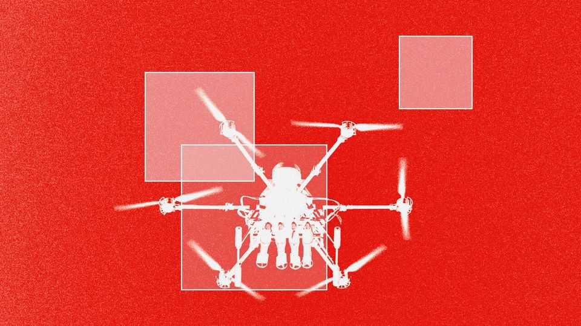
另一种方法涉及声学技术的巧妙运用。雷达通过发射无线电波脉冲并接收反射回来的信号来工作。其性能在夜间或恶劣天气下同样稳定，能够探测到空中的任何物体。但英国皇家联合军种研究所电子战专家托马斯·威廷顿指出，传统雷达通常会过滤掉小型、低空飞行的物体，这些物体被默认为鸟类。位于华盛顿州柯克兰的Echodyne公司正在开发更先进的替代方案。该公司负责人埃本·弗兰肯贝格表示，其雷达通过三项独特创新来识别“更小、更慢、更低”的威胁。大多数现代雷达系统使用固态发射器阵列（类似LED的设备，但发射无线电波而非光线）生成信号，而非过去常见的可移动天线。这些系统虽然有效，但成本较高。■
Echodyne的解决方案是采用少量配备专用天线的发射器，这些发射器能调整其发射的波形。这种设计非常适合低功耗、低成本的短距离应用系统。弗兰肯伯格先生声称，他们的雷达系统成本比传统系统低一个数量级。Echodyne的雷达还能快速切换脉冲的“波形”，即调整其脉冲长度、强度和频率。这使得雷达在扫描天空时能根据需要在不同模式间切换。弗兰肯伯格先生表示，针对不同场景，如开放空间或复杂背景（如建筑物）中的目标探测，均有相应的波形可供选择。某些波形专门设计用于探测旋转的旋翼叶片，这是区分无人机与飞鸟的有效方式。最后，系统通过机器学习模型对追踪目标进行分类。■
它能够学习并识别不同空中目标的特征模式，从鸟类、气球、四旋翼无人机到固定翼飞机，从而提升识别的可靠性。这种技术尤其适用于从杂波中提取微弱信号，例如在风中摇曳的植被后飞行的无人机。这些技术使Echodyne的EchoShield雷达——一款与笔记本电脑大小相当的设备——能够探测、追踪并分类出五公里范围内的微型无人机。其追踪精度足以引导摄像头或武器锁定移动的无人机。另一种探测无人机的方式是利用声波，这一方法由乌克兰率先采用。当地田野和森林中布满微型麦克风，用于监听俄罗斯无人机的嗡嗡声。
多伦多总部的初创公司普兰特尔动力（Prandtl Dynamics）正致力于进一步开发声学技术，声称其设备能在无人机启动前就探测到隐藏的无人机。这是一项令人惊叹的技术。普兰特尔动力的“穹顶”（Dome）系统会发出不可闻的超声波脉冲。如果无人机在探测范围内，这种“声学探测”会使无人机的电子和机械组件产生振动，发出明显的吱吱声（相比之下，手机内部组件则保持静默）。普兰特尔动力首席执行官帕特·马亨杜（Parth Mahendru）表示，目标是将隐藏的无人机转化为“微型扬声器”，实时广播其位置。该公司称“穹顶”已能探测到背包中、屋顶边缘后方，甚至在某些情况下探测到车内无人机。目前这些探测主要针对数十米外的静止无人机。■
这已足以让安保人员获得“巨大的操作优势”，奥托工程公司（OTTO Engineering）首席运营官丹·斯坦克（Dan Stanek）表示。该公司是位于伊利诺伊州的通信设备供应商，为国防、情报和安全机构（包括美国特勤局）提供服务。OTTO计划与普兰特尔（Prandtl）合作生产。普兰特尔首席技术官乔·戴（Joe Dai）表示，一款名为Dome-C的小型电池供电模型，像手持的“虫害探测器”一样使用，今年夏天即可上市。普兰特尔同时也在开发一款更大的插电式版本，安装在三脚架上。Dome-O（这款较大型号的名称）发出的超声波也能让无人机发出声响。但Dome-O可与麦克风系统配合使用，如乌克兰部署的无人机探测系统，可在无人机飞行时进行探测。Dome-O的超声波脉冲比Dome-C的窄光束更宽广，能覆盖一片天空区域。■
它们增强了无人机电机、旋翼和飞行过程中产生的声学特征，帮助麦克风在更远距离捕捉到无人机的声音。在噪音密集的城市环境中，普兰特尔公司研发的16麦克风阵列系统Oscura可探测并追踪重量仅250克的无人机，探测距离可达约200米。马亨杜先生表示，当Dome-O系统启动时，Oscura的探测距离可再增加75米。这套系统曾在11月加拿大国防部于渥太华市中心举办的反无人机竞赛中接受实战检验。参与五日测试的少校克里斯蒂安·拉贝称，普兰特尔的技术即便在施工噪音环境下也能追踪到无人机，即使无人机处于视线之外。他补充称，该系统尚未达到军事应用标准，主要因存在误报问题及系统相对脆弱。
但普朗特（Prandtl）因项目前景被看好，最终与他人并列第二，斩获37.5万加元（约合27万美元）的“Diamond in the Rough”奖。而Echodyne公司则已将其雷达设备出售给美国空军，其设备套件现已安装在军舰上，用于防御军事基地。车载版本已投入服役，美军及其他机构计划部署更多此类系统。此类创新尚未终结小型无人机的主导地位，但它们所利用的盲区，似乎正逐步被填补。■ 好奇世界？想获取我们拓展思维的科学报道，请订阅我们的周度专属电子报Simply Science。
§064 睡眠追踪器值得使用吗原题：Should you use a sleep tracker? · 板块：Science & technology · 栏目：科技
近半数美国人和约40%的英国人如今使用智能手表、智能戒指、手机应用或其他类似设备追踪睡眠。这些设备的准确性如何？使用它们的用户是否能获得更好的睡眠？睡眠不足可能导致各种健康问题，从痴呆到糖尿病。一项发表于《自然》的新研究发现，人们睡眠时长与生物年龄标志物之间存在U型关系。研究人员利用英国生物银行（UK Biobank）的数据，该数据库包含约50万人的健康和生活方式信息。
那些每晚睡眠时间在6.4至7.8小时之间的人，似乎比睡眠时间更长或更短的人，大脑和身体的衰老速度更慢。睡眠监测设备承诺能帮助人们达到这一理想区间。应用程序通常记录运动和声音，有时通过音频推断呼吸频率。智能手表则记录运动，并利用光电容积描记法——通过向皮肤发射低强度光线并检测反射回来的光量来测量血流，从而估算心率和呼吸频率。戒指类设备通常也会测量皮肤温度。大多数睡眠监测设备都能很好地区分睡眠与清醒状态。多项研究已将它们与多导睡眠图（polysomnography）进行对比，后者通过电极记录眼动、脑电波、肌肉张力和心率，是测量睡眠的黄金标准。
《经济学人》2024年发表于《Sensors》期刊的一项研究测试了三种流行的可穿戴设备，发现它们在整夜区分睡眠与清醒状态的准确率约为95%。但识别不同睡眠阶段时，这些设备的准确性较低。优质睡眠需在快速眼动（REM）睡眠与非快速眼动（non-REM）睡眠的多个阶段间循环，后者从浅层到深层不等。可穿戴设备在睡眠阶段分类上的准确率仅为50-80%。哈佛医学院睡眠科学家丽贝卡·罗宾斯（Rebecca Robbins）参与了相关研究，她给这些设备的评分介于C+到B+之间。尽管准确度尚可，但多数设备仍将其纳入睡眠评分计算。尽管存在局限，大多数睡眠研究者和治疗师仍对这类设备持积极态度。■
罗宾斯博士表示，这些设备能帮助人们更准确地了解自己的睡眠时长（并可能揭示他们实际上睡得相当充足）。此外，它们似乎还能改善睡眠习惯。美国睡眠医学学会的一项调查显示，55%使用睡眠追踪器的成年人表示，在根据数据调整行为后，睡眠习惯有所改善。2020年发表在《临床睡眠医学杂志》上的一项小型研究发现，连续佩戴睡眠追踪器一周后，受试者自述的睡眠质量有所提升。不过，过多的数据也可能带来负面影响。与注重健康饮食或锻炼不同，过度关注睡眠反而可能适得其反。多达30%的睡眠追踪者表示，他们因收集的数据感到焦虑，研究人员将这种现象称为“睡眠焦虑症”。■
对睡眠质量的担忧是导致失眠的常见原因之一；只有财务担忧更常让人辗转反侧。但睡眠数据并不值得为此失眠，因为存在替代方案：醒来时是否感觉精力充沛才是判断夜间睡眠质量的最佳指标。■ 了解健康与福祉的免费、基于证据的指南？订阅我们的每周Well Informed通讯。
§065 你每天会想到亚历山大大帝多少次原题：How many times a day do you think about Alexander the Great? · 板块：Culture · 栏目：文化
你每天会想到亚历山大大帝多少次？文化 亚历山大大帝的传奇性 June 4th 2026 文化 | 亚历山大大帝的传奇性 你每天会想到亚历山大大帝多少次？一本新书的吸引力与其主角的传奇性一样扣人心弦 June 4th 2026 如何衡量亚历山大大帝的伟绩？或许可从他征服的帝国规模衡量（横跨4800公里，从雅典延伸至印度）。或从征服速度（约十年）。或从他建立的城市（六到十七座，许多名为“亚历山大里亚”）。然而，正如达勒姆大学古典学与古代史教授爱德蒙·理查德森的新书所揭示的，这位人物还有更阴暗的衡量标准。他被称作“疯狂的”、“亚历山大不那么伟大”以及“世界史上最伟大的杀手之一”。■
这并非毫无根据：有学者估计，他征战导致古代世界近1%人口丧生。但这并未阻止世人对他的崇拜。若人们每日多次想到罗马帝国，历史学家似乎几乎同样频繁地想到亚历山大。他令世人痴迷：影视作品将他神化，纪录片追随其足迹，近5000本书对其人生进行剖析。他的追随者从尤利乌斯·凯撒（Julius Caesar）到拿破仑，再到现代商业导师不一而足。正如所有历史文本一样，这些作品也映射出各自的时代。马基雅维利赞赏亚历山大的阳刚领导风格（他杀戮敌人）。现代作品则更倾向管理学视角：一所商学院INSEAD的教授曾撰写题为《从亚历山大大帝汲取的11条领导力启示》的文章。文中建议“巩固战果”和“投资人才管理”。■
你或许会补充一句：“避免屠戮已知世界的1%。”（科技圈人士与政客请注意。）古代统计数据存疑。但这部关于亚历山大大帝的著作——以狂野视角从摇篮到酒窖地审视这位征服者——提供了其他统计数据。书中记载了11次各种身体部位被切断（多为头颅，偶尔是四肢和生殖器）；“谋杀”一词出现38次，“杀戮”则约100次。这是一部血腥暴力、令人震惊的著作。换句话说，这是一场精彩绝伦的阅读体验。它在某些方面也颇具独特性。人们普遍认为历史（战争相关）被划分为不同纪元：古典时期、中世纪、现代时期。但历史（书籍相关）同样被划分为不同纪元。仅过去一个世纪就见证了马克思主义史学、女性主义史学——以及最近的焦虑史学风潮。■
近年来，人们忧心忡忡地审视着从圣雄甘地到那个臭名昭著的反派简·奥斯汀的各种“罪行”。被指责为“白人至上主义支柱”的经典文学作品尤其显得自责，急于修正其“偏见”。最近一本关于亚历山大大帝的书声称，它更关注那些“在他统治下受苦的人”而非这位历史人物本人。这种做法无疑充满道德感，但未必引人入胜。相比之下，理查德森先生的《亚历山大大帝》则毫不犹疑。它充满活力地叙述：从他童年驯服一匹难以驯服的马，到早期战役中征服一座被认为不可征服的城市，再到他创造神话的历程中解开“戈迪亚斯之结”这一看似不可能的任务。当然，它也生动地描绘了这位帝王的纵情欢乐。■
亚历山大的情人们包括他的挚友赫费斯提翁、大流士昔日的360位宫女（每位宫女对应波斯历中的一天）以及一位英俊的波斯青年巴戈阿斯。在理查德森先生笔下，当有精彩故事可述时，他并未对其进行解构或批判，而是以饱满的热情讲述。试看提尔围城战的描写：当亚历山大开始进攻这座城市时，他尚未被称为“大帝”，只是个身材瘦小、个头不高、几乎还带着少年气的将军，金发卷曲如他所崇拜的英雄阿基琉斯。这座岛屿城市提尔堪称辉煌，其海贝产出的薰衣草紫染料令地中海沿岸服饰染上紫色，也使提尔富甲一方。这座位于今黎巴嫩的城邦，矗立于海面之上，城墙高耸，战舰巡逻，被视作不可征服之地。你已能预见故事的走向。■
一条人工堤道、七个月和两千具被钉十字架的推罗人之后，围城战结束了。尽管与亚历山大本人一样，这段历史并不拖泥带水：它迅速转向印度，最终以他在巴比伦的痛苦死亡告终。早期传闻称他死于酒精中毒；理查森先生则认为更可能是饮用水污染和伤寒所致。书中登场的配角阵容星光熠熠，包括他的导师亚里士多德，这位哲学家曾赠予亚历山大注释版《伊利亚特》并培养了他对文学的热爱（他睡觉时还带着书）。细节令人着迷：你将学到如何用熊和蜂群来对付挖地道进攻城市的敌人，以及是否该将猫群投入战斗（正如俗语所暗示的，这并不明智）。这本书被出版方描述为“颠覆性的重述”。■
但其中最引人注目的新现象或许正是其本身：它本身就充满趣味。历史书籍长期以来未能充分吸引读者的注意力。这并非近期才有的抱怨。正如奥斯汀小说《诺桑觉寺》的女主角凯瑟琳·莫兰（Catherine Morland）所观察到的，历史“本应如此精彩，毕竟其中包含大量虚构成分”。人们似乎从未从历史中学会如何撰写历史。1946年，美国历史学家塞缪尔·艾略特·莫里森（Samuel Eliot Morison）曾指责历史学家们产出的“枯燥、扎实、有价值的专著无人问津”。2010年，历史学家戈登·伍德（Gordon Wood）指出，历史写作正陷入危机，学术界撰写大量著作却“拥有极少读者”。这在一定程度上，正如一位马克思主义历史学家可能会说的，源于社会变迁：人们阅读各类内容的兴趣都在下降。■
此外，他们还以其他方式接触历史：“The Rest is History”是全球最受欢迎的播客之一。但另一个解释是，大量学术历史著作几乎是以一种咄咄逼人的方式写得糟糕。近年来关于亚历山大的学术论著充斥着诸如“解构”之类的术语，却缺乏激动人心的叙述。其中部分是必要的：历史的进步依赖分析，而非轶事。然而，尽管分析至关重要，但枯燥并非必要。《The Rest is History》的主持人之一汤姆·霍兰德表示，问题在于那些无法戒除术语成瘾的人。哈里·赛德布顿，牛津大学古典学讲师，同意这一观点：太多人误以为写得晦涩难懂就是深刻。这本将分析与传统趣味结合的书，展示了历史如何在学术雄心与可读性之间取得平衡。
为何作家们应频繁提及熊与蜜蜂？ ■ 欲了解更多关于最新书籍、电影、电视剧、专辑及争议事件，请订阅我们的每周专属订阅简报Plot Twist
§066 文学世界的隐形意见领袖：是豺狼、寄生虫还是英雄原题：The hidden tastemakers of the literary world · 板块：Culture · 栏目：文化
鸡尾酒会见过更糟糕的搭讪尝试。1989年，文学经纪人安德鲁·怀利（Andrew Wylie）将目光投向了菲利普·罗斯（Philip Roth）。“每次我转身，都会遇到这家伙，”这位小说家后来说道。“我终于体会到当一个漂亮女孩是什么感觉。”当怀利展开行动时，他宣称自己能让罗斯获得价值200万美元的三本书出版协议。随后，他在午餐时正式向他示好。怀利断言，罗斯在出版商那里未被充分重视，其潜在收益丰厚的海外版权也遭到忽视。
他可掌控罗斯（Roth）14部小说在30个地区的发行权，这意味着每七年需重新谈判420份合同。罗斯的收入最高可达500%的增长。这位声望卓著却存款微薄的作家最终无法拒绝这一提议。威利（Mr Wylie）在出版界可谓声名显赫，甚至臭名昭著：他因说服多位作家解约并加入自己麾下，而获得“豺狼”（the Jackal）的绰号。当威利想拓展在中国的业务网络时，甚至致电基辛格（Henry Kissinger），提议自己成为其代理人，并建议基辛格撰写一本关于中国的书籍。该书最终销量不俗，威利也因此在中国建立起稳固的立足点，并积累了更庞大的人脉资源。
劳拉·麦格拉思在一篇关于文学代理人的新调查中写道，怀利先生专注于海外版权和销售的策略，不仅改变了他名单上作家的命运，也重塑了美国文学在海外的格局。麦格拉思认为，代理人承担着多种职能。他们是发现者，识别有潜力的作家；他们是知己，帮助作家发挥最佳创作；他们更是谈判者，代表作者达成协议，获取更多收入以获得更充裕的创作时间。这意味着代理人在出版界常被视为有争议的人物。1897年，一位英国出版商曾将代理人形容为“普遍是寄生虫”（他们通常抽取作者收入约15%作为佣金）。他们始终笼罩着神秘的光环。■
文学经纪人职责是“隐形”，麦格雷戈认为，他们幕后运作打造明星，从而影响哪些作品被创作、哪些书籍被阅读。《Middlemen》是近期出版的揭秘文学出版幕后运作的书籍之一。麦格雷戈是一位风格鲜明的作家，避免使用学术术语，转而讲述轶事。她前往世界最大书展——法兰克福书展，观察一群经纪人评估“退稿堆”中的未寄出稿件。（每位经纪人的梦想是如J.K.罗琳的代理人曾找到的那样，在一堆垃圾中发现《哈利·波特》式的瑰宝。）她描述了“出版午餐”的演变：曾发现约瑟夫·海勒的卡迪娜·多纳迪奥曾开玩笑说她一天要吃三顿午餐。（如今少了烈酒，多了对销售数据的讨论。）■
经纪人试图想出创意方案解决营销难题。例如，如何推销一位无名作家的书籍？斯特林·洛德（Sterling Lord）作为杰克·凯鲁亚克（Jack Kerouac）的代理人，曾与出版商合作为《在路上》（On the Road）制造声势，将凯鲁亚克宣传为“新时代的声音”。此后，经纪人始终希望他们的新晋小说家能引发关注：如今首部小说占每年出版小说总量的15%至25%。许多这类书籍的预付稿酬远高于实际销量。如今大多数美国小说家仅出版一部作品。文学代理人从无客观立场，其个人偏好决定哪些作品能面世。由于大多数代理人和编辑居住在纽约，2000年至2022年间，纽约设定的小说数量超过美国人口最多30座城市的总和。■
代理人数量激增——美国目前已有超过1,500名——显然与平庸之作的泛滥不无关系。许多书本本不该被印刷。但令人惊讶的是，在算法日益主导品味的当下，个人代理人判断的重要性依然显著。■ 如需了解最新书籍、电影、电视剧、专辑及争议事件，订阅我们的每周独家新闻通讯Plot Twist
§067 Why you should never skip a TV intro原题：Why you should never skip a TV intro · 板块：Culture · 栏目：文化
技术创造新的艺术形式又摧毁它们。印刷术推动了文学发展却抹去了彩绘手稿。电影终结了音乐厅。如今一种流行的小工具正威胁另一种精细的技艺。这种艺术形式是电视片头；这项令人不安的技术则是你下意识点击的“跳过片头”按钮。其结果正改变着人们在屏幕前讲述和观看故事的方式。从前电视片头只是简单的卡片，显示静态文字。到了20世纪50年代，它们已演变为序幕，介绍角色和标志性台词：“它是一只鸟！它是一架飞机！它就是超人！”——这是《超人历险记》开场中观众的惊叹声。
标题设计融入了俏皮动画（如《女巫》）、分屏效果（如《布鲁斯一家》）和特技（如《哈扎德的杜克兄弟》中被广泛模仿的车顶滑行）。许多标题还配有令人难忘的旋律，如《亚当斯一家》的手指敲击主题曲。这种形式在千禧年之际的高质感电视剧黄金时代达到顶峰。在《教父》的标题中，主角托尼·斯帕诺通过烟雾和后视镜若隐若现，既近在咫尺又难以捉摸，正如他持续六个季度的神秘形象。《广告狂人》中坠落的身影同时象征着魅力与精神崩溃。最出色的是《真探》第一季的幽灵意象，以简洁的蒙太奇呈现其路易斯安那州主题：堕落、污染、信仰、罪恶与彻头彻尾的怪异。这些精巧的序列既是赞美，也是自我炫耀。■
他们向观众恭维道，你们的时间如此宝贵，以至于就连片尾字幕都必须精美绝伦。这种自我夸耀聚焦于节目本身，隐含着唯有至高无上的开场才能胜任。这些片头是摘要、氛围营造者和广告，巧妙得足以吸引新观众并唤起老观众的共鸣。如同歌剧的序曲，它们是剧情不可或缺的一部分。部分节目曾无广告播出，腾出几分钟用于奢华的开场。但流媒体时代的现实正在改变，广告正悄然回归，使时间再度变得稀缺。与此同时，片头序列成为追剧的障碍。沉迷追剧的观众无需每小时都被重新引入剧情，他们只想尽快进入正题。得益于“Skip Intro”功能，他们得以实现这一点。■
注意到用户手动快进片头，Netflix于2017年推出了跳过片头按钮，其他流媒体平台随后跟进。到2022年，Netflix观众每天点击该按钮达1.36亿次。此后跳过片头的使用量迅速增长。在BBC iPlayer平台上，三月的“跳过片头”使用量约为两年前的两倍，过去六个月更是大幅攀升。这种对复杂片头的不耐烦对精心设计的开场标题构成挑战。“这很糟糕，”一位该类型作品的从业者如此评价。尽管仍有部分节目保留长篇开场，最精妙的案例包括游戏或谜题形式，如《白莲花》的片头，其中露骨画面在观众破解前瞬间消失。但更简短的替代方案正在兴起。在科幻寓言剧《Pluribus》中，片头仅由诡异旋转的光点构成，仅此而已。■
一些剧集正回归传统的片头设计。在医疗剧《The Pitt》中，这种手法契合其冷峻真实的氛围。犯罪惊悚剧《Steal》仅在片头短暂闪现标题。在最著名的场景中，一名穿西装的男人被枪口追踪。詹姆斯·邦德系列的片头将延续，电影中观众被限制在座位上的场景也如此。但随着电视片头的缩减，某种东西正在被失去。不只是像《夜巡者》新系列那样，片头可能是剧集最精彩的部分。缩减片头削弱了悬念：直接进入下一集，便无法长久营造紧张期待。更关键的是，片头可能是一种魔力；舍弃它们，或许会错过这种魅力。如同前往假期的旅程或为派对打扮的时刻，片头序列是两个场景之间的过渡时刻。■
它能将你从沙发上瘫着、刚把孩子哄睡的现实世界，轻松带入节目构建的想象世界——无论是1960年代放荡不羁的办公室，还是卡津人犯罪现场。这是一种让你暂时搁置怀疑的跨越。像打电话和购物一样，看电视如今也变得无比便捷。如今你随时都能看到大量节目。然而，尽管加快了节奏，人们反而变得更加急躁；对即时满足的渴望永无止境。如果你总是匆匆忙忙，界限便被模糊，一切都变得寻常无奇。■ 更多关于最新书籍、电影、电视剧、专辑和争议事件，请订阅我们的周度专属通讯 Plot Twist
§068 2026年（截至当前）最佳与最差电视剧与电影 文化原题：The best, and worst, TV series and films of 2026 (so far) · 板块：Culture · 栏目：文化
「阿曼达大陆」阿曼达再度回归——在这一季的喜剧中，她依旧故作高深、虚伪且充满妄想。她试图跻身网红行列的可怜尝试因犀利的剧本而极具娱乐性。
「婴儿」这部剧催人泪下且演技精湛，探讨了不孕症对人心理的孤立感，并揭示了夫妻在医疗体系中遭遇医生冷漠且缺乏同情的处境。
「 Boroughs 」一位寡妇发现，其他世界的生物正从养老社区居民身上窃取宝贵时光。
■
■
这一系列最令人不安之处不在于超自然因素，而在于衰老这一再正常不过的自然过程。“The Christophers”朱利安·斯克拉（Sir Ian McKellan饰）是一位艺术家，他的贪婪子女企图伪造他最后一系列著名画作并高价出售。尽管影片大谈赝品，但这部关于衰老、继承与艺术品味的影片却是一部真正的杰作。“Dreams”一位富裕的女性慈善家（杰西卡·查斯坦饰）与一名来自墨西哥的年轻芭蕾舞者秘密相恋，后者非法越境来到旧金山与她在一起。这部影片是一部紧张而令人不寒而栗的道德寓言，讲述激情与权力的故事。“Half Man”尼尔与鲁本自幼一起长大，发展出一种强烈而扭曲的兄弟情谊。
■
这一系列由理查德·加德（Richard Gadd，《小驯鹿》（Baby Reindeer）创作者）打造，深入探讨痴迷、男性气质与创伤。
《亨利·戴维·梭罗》（Henry David Thoreau）
由肯·伯恩斯（Ken Burns）执导的三集纪录片，探讨为何这位美国自然主义者至今仍令人着迷。在许多人寻求意义的当下，梭罗的生活与文字提供了慰藉。
《我发誓》（I Swear）
一部幽默且充满温情的传记电影。罗伯特·阿拉玛约（Robert Aramayo）凭借在约翰·戴维森（苏格兰活动家）角色中的表演荣获奖项，该角色幼年时被诊断患有妥瑞症。
《 kokuhō 》（Kokuho）
这部关于歌舞伎（kabuki，日本传统戏剧）的历史剧，以诗体叙事般的压缩张力呈现故事。
■
这部影片以华丽而细致的镜头语言，讲述了一个黑帮遗孤努力成为演员的故事。《传奇》在20世纪90年代初，英国正在失去禁毒战争的胜利果实，政府因此转向了一群不寻常的战士：公务员。这是一部节奏紧凑、引人入胜的系列剧，聚焦鲜为人知的英国英雄们。《爱情故事》这部颇具争议的热门剧集，想象了约翰·F·肯尼迪 Jr.——美国最抢手的单身汉——在1999年空难前，如何追求一位优雅的局外人。这是一段注定失败的童话，却令人欲罢不能。《别无选择》在经历了一年的令人羞辱的失业后，一位中年男子想出了一个计划：他将谋杀所有符合他申请职位条件的人。
这部影片堪称近年来最出色的韩国讽刺喜剧，其创意与血腥的娱乐性令人印象深刻，自奥斯卡获奖作品《寄生虫》以来，尚无佳作可比。■
《匹兹堡》这部热门医疗剧讲述了一家位于匹兹堡的过度劳累且资金匮乏的急诊室的故事，它歌颂的并非卓越或荣耀，而是对工作的专注与奉献这一简单行为。这部剧可能会让年长观众联想到《ER》，但它的风格更为粗粝且更具吸引力，胜过其长期播出的前辈。■
《小马驹》这部剧设定在冷战时期，克格勃监视着莫斯科所有有影响力的美国人。但贝亚和特维拉作为女性，却被归类为“无足轻重之人”。凭借冷战背景和大量阴谋诡计，这部讽刺喜剧系列充满乐趣。■
《雨果的奇迹》这部电影兼具科幻冒险与搭档喜剧元素，讲述了一位宇航员与外星人的故事。■
尽管影片冗长，但其摄影和幽默诙谐的剧本令人印象深刻；瑞恩·高斯林在主角位置上的表演堪称精湛。“The Sheep Detectives”这部充满温情的合家欢电影，是对农场动物与黄金时代谋杀悬疑片的深情致敬。剧本既带来阵阵欢笑，也意外地引发动人时刻，探讨了失去与记忆的主题。“The Stranger”是一部富丽堂皇且充满深度的阿尔贝·加缪经典存在主义小说改编作品。这部黑白电影拥有精美的摄影，更精准捕捉了原著中那种虚无与绝望的情绪。为节省您的时间，我们浪费了观影时光“《新娘》”！在这部令人作呕的影片中，一位死女人被复活以与孤独怪兽结婚。电影融合了过多类型元素，从科幻、哥特式黑色电影到“邦妮与克莱德”风格的犯罪故事。■
这部1935年电影的重拍版始终未能真正复活。《不完美女性》这部剧就像黄油爆米花：可一口气看完却令人失望。它对“你对伴侣了解多少”“女性向最亲密朋友隐瞒什么”等宏大主题的处理过于简单化。《女士优先》讲述一名男子撞头后醒来进入性别角色颠倒的世界，这部夸张的电影充斥着男性被性骚扰、接受整容手术的场景，而女性则吃汉堡、放屁。《迈克尔》这部令人作呕的传记片是对迈克尔·杰克逊生平的净化与神圣化版本。对于一部讲述奇人巨星与黑猩猩成为朋友的电影来说，其内容却出人意料地沉闷。《超级马里奥银河电影》这部游戏改编电影已成今年全球票房冠军，同时也是对时间的极大浪费。■
这部情节空洞的电影将你带入一场幻觉与狂乱交织的旅程，唯有怀旧的游戏玩家才能享受。《呼啸山庄》艾默拉尔德·芬内尔（Emerald Fennell）将一个关于阶级、痴迷与复仇的 haunting tale 改编为情色小说。她磨去了故事的尖锐棱角，聚焦于凯瑟与希斯克利夫的性觉醒。《你的朋友与邻居》科普（乔恩·哈姆饰），这位从金融家转行的小偷，不知何时该停止偷窃邻居。这部剧的编剧同样不知何时该收手。新一季不仅继承了第一季的所有缺陷，还多出一个：冗余。■ 所有剧集与电影均于2026年在美国或英国上映，可在影院或流媒体平台观看。
§069 旅行正演变为一项竞技运动 文化原题：Travel is becoming a competitive sport · 板块：Culture · 栏目：文化
图瓦卢（Tuvalu），由南太平洋的九座小岛组成，绝非寻常的度假胜地。这个前英国殖民地，位于夏威夷与澳大利亚之间的中途位置，前往图瓦卢颇为不易，每周仅有数班航班。旅游业几乎不存在。主要景点包括首都富纳富提（Funafuti）的机场跑道，每天下午都会变成野餐和足球场；还有那座沉闷的邮局，吸引着热衷集邮的收藏家。它堪称世界上最少人光顾的国家之一。 ■
这一切都没能劝退美国的泰德·尼姆（Ted Nims），他最近在某国度过一周，又在自己的国家清单上勾掉了一个：第191个国家。联合国共有193个成员国。尼姆是日益增多的“国家计数者”之一，他们试图访问所有国家。据在线冒险爱好者聚集地NomadMania统计，去年有创纪录的82人声称完成访问全部193国的壮举。1954年“旅行者世纪俱乐部”成立时，仅有少数幸运者能访问100个国家（入会最低门槛），如今该社交团体已近2000人，近年来经历所谓“相当显著的增长”。■
真正的旅行爱好者常常在NomadMania和Most Travelled People等平台上花费大量时间，这些平台设有排行榜和关于何为一次旅行的讨论（一些人认为机场中转算作一次旅行，但最硬核的旅行者则认为这太容易了）。看似漫长的旅途可能让人误以为是孤独的活动，但Carol Wong（马来西亚人，最近刚访问了第142个国家萨摩亚）表示，青旅和民宿提供了丰富的乐趣和社交机会。她说，真正孤独的是“豪华酒店”。在线上，旅行狂热者分享攻略并交流互动。有些目的地过于冷门，游客会向Facebook群组如Every Passport Stamp寻求建议，提问范围从琐碎的（“哈萨克斯坦至阿塞拜疆的渡轮是否运营？”）到奇特的（“有人曾探索过马绍尔群岛的恩威特克环礁吗？”）。
探访新地方风头正劲，即便你并不想把护照填满新印章。据英国旅游协会（ABTA）去年对英国人的调查，计划前往新国家的受访者比例达到一半，而十年前这一比例仅为18%。“这其中有炫耀心理的因素，”旅游新闻网站Skift的Seth Borko指出，他提到社交媒体的影响。过度旅游的困扰也促使游客避开人满为患的广场。据Skift统计，越来越多的美国游客选择欧洲的小城镇或乡村。世界十大热门旅游国家的国际游客占比从1980年的约60%下降至2024年的40%。
“我倾向于去那些不太受游客影响的地方，”34岁的新加坡人尚千松在访问图瓦卢时说道，该国可能成为首个因海平面上升而消失的国家之一。如果你指望成为国家计数员，那最好收拾行李。■ 如需了解最新书籍、电影、电视剧、专辑及争议事件，请订阅我们的周度会员专属通讯 Plot Twist
§070 索尼·罗利恩斯认为爵士乐就是全部原题：Sonny Rollins believed that jazz was all there was · 板块：Obituary · 栏目：讣告
尽管他住在仅两块街区外，索尼·罗利恩斯此前从未注意到德尔兰西街上的那些台阶。1959年一个夏天，他爬上台阶。在那里，他站在纽约东河上方的威廉斯堡大桥上。地铁列车和车辆在桥上轰鸣而过，货轮在桥下鸣笛而过。他周围是支撑桥体的柱子和墩台，他可以随时躲藏。他头顶是开阔的天空。尽管这场景有些俗气，但站在那里让他感到精神上的慰藉。这是练习音乐的理想场所，而他的音乐并非普通音乐。他的中音萨克斯风，充满创意，旋律流畅，节奏感强，或浪漫动人，早已声名远扬。■
自1953年起，他便以小乐队领队的身份录制唱片，但1956年推出的《Saxophone Colossus》让他与偶像查理·帕克（Charlie 'Bird' Parker）和约翰·科尔特兰（John Coltrane）齐名。此后他始终保持着这一地位，职业生涯中推出了超过60张专辑并斩获两座格莱美奖杯。然而无论获得多少赞誉，他始终对自身演奏水准心存不满。内心常有声音提醒他不断精进技艺。因此后来他前往印度修道院静修，也因而有了每天在威廉斯堡大桥（Williamsburg Bridge）上练习的习惯。这种坚持持续了两年。有时他会连续演奏15小时以上，仅在如厕或到喜爱的酒吧喝杯干邑白兰地（cognac）时稍作休息。冬季演奏时他还会戴上手套。有路人注意到他高挑的身形被钢铁结构挤在其中，所有人都能听到他的音乐，但很少有人与他交谈。■
这已足够，因为对他而言，唯一需要的陪伴就是自己的萨克斯管，而他正不断将其推向更远的境地。某个地方，或许在深海之下，或是在星辰之外——远在Sonny Rollins尚未触及的领域——存在着终极的音色。他并不清楚那会是什么样的音色，但当他听到时，便能立刻辨认出来，或许每年两次在舞台上，他能捕捉到片刻的灵感。那一刻便会令他心满意足，他也会明白，终于，他奏出了真正的好音色。但在此之前，他的脑海早已被多年来积累的音乐素材填满，那些零散的旋律片段。他哥哥在小提琴上演奏的练习曲；Fats Waller在家中钢琴唱片上创作的旋律；酒吧里自动点唱机播放的曲调；廉价留声机里流淌的流行歌曲和抒情民谣，以及从哈莱姆区的爵士酒吧和敞开的窗棂间传来的爵士乐。钢琴家Thelonious Monk曾指导过他，而萨克斯手Coleman Hawkins则住在附近。■
他敬重他们两人，八岁那年，他带着母亲送的中音萨克斯，便知道自己也注定要走上音乐之路。他的即兴演奏融合了所有这些元素。他热爱引用经典旋律，在无数节奏与和声变奏之后，每一段旋律都能自然衔接另一段。一段咏叹调，一首百老汇情歌，一个俏皮的半句即兴乐句。仿佛所有音乐本就拥有天然的统一性，而他始终深信不疑。他每次登台前都让思绪空白，等待一个崭新的灵感或音符降临。他对萨克斯演奏技巧的掌控可谓彻底可靠，即便在复杂或高速的演奏中，也始终能下意识地信赖这份技艺。■
他与自己的萨克斯风有着某种特殊的联系，一种精神上的契合。（当他在9/11事件中与妻子露西尔不得不逃离公寓时，他只带上了自己的萨克斯风。）但其余部分，即音乐中的情感与精神，他完全交由更高力量来赋予。由于他与贝西·巴克（Bird）、约翰·科尔特兰（Coltrane）、小号手迈尔斯·戴维斯（Miles Davis）和鼓手马克斯·罗赫（Max Roach）合作，他常被称作咆勃爵士乐明星。但他并不愿被这样定义。咆勃爵士乐在1940年代初出现时，以其速度、复杂性与长篇即兴独奏而著称，这确实适合他；但其严格规范却并不适合他，因为他天性自由。他常将爵士乐与卡里普索融合，以此致敬他的母亲，她来自美属维尔京群岛的圣托马斯岛；“圣托马斯”是其专辑《萨克斯风巨匠》中最著名的作品之一。另一首《蓝调7号》则融合了爵士与蓝调。■
他将爵士乐与拉丁舞曲、放克音乐甚至摇滚乐结合，1981年曾短暂与滚石乐队合作，推出专辑《Tattoo You》。（他并不以谦虚著称，甚至愿意为节奏部分伴奏。）有一段时间，他摒弃了钢琴手，因为钢琴手让他感到束缚，限制了他的和声表现力。他偏爱三人组：鼓手和贝斯手，忠实跟随他的节奏。他能带领乐队走向任何方向，尤其在《Freedom Suite》《A Night at 'The Village Vanguard'》和《Way Out West》这几张专辑中，他追求的是宏大格局的爵士乐，所有元素浑然一体。这是音乐的统一；一切皆为一。或许连上帝都难以企及。他舞台内外的沉着，掩盖了通往名利的坎坷之路。年轻时，他视查理·帕克为救世主，而帕克因吸毒而堕落，他便尝试使用海洛因，只为看看是否能像帕克那样演奏。■
他最终因偷窃罪在里基斯岛（Rikers Island）服刑十个月。1955年，经过一段艰苦的戒毒治疗后，他再次戒除毒瘾并保持至今。正是Bird（查理·帕克）本人曾告诫他要停下来思考自己能为音乐奉献什么。这让他开始反思。他始终认为音乐是赠予他的礼物，自童年时期第一次吹出音符起，他就沉浸在极乐之中。此后每次演出，他都如痴如醉地享受这份馈赠（尽管偶有低潮，但总体如此）。然而问题在于，他究竟是真正回馈观众，还是只在为自己演奏？借用他自己的“黄金法则”稍作改动，他是否在以他人对待他的方式对待他人？他从未真正找到这个问题的答案。但与追求终极音色一样，他也在不断寻找这个答案。
他似乎总在追寻这些事，仿佛这是他的因果报应。毕竟，他正为诸多苦果付出代价。但正因身处这个无足轻重的世界，其意义便在于学习；试图获得智慧；若未能成功，便再度归来尝试。而他始终不遗余力地推动着那音乐，正如他在威廉斯堡大桥（Williamsburg Bridge）所做的那样；对他的众多仰慕者而言，这已足以成为馈赠与荣耀。■
§071 为什么世界杯呈现足球运动的丑陋版本原题：Why the World Cup produces an ugly version of the beautiful game · 板块：其它 · 栏目：其它
在本届世界杯期间，有三个结果是注定的。首先，一个国家的球迷将体验天堂般的快乐，而其余47个国家（此前为31个）的球迷将陷入失望。其次，比赛中将出现永恒的天才时刻与耻辱瞬间。
世界杯或许会诞生如迭戈·马拉多纳对阵英格兰时的单骑闯关般令人着迷的进球，如约翰·克鲁伊夫对阵瑞典时的转身般细腻的触球，或如戈登·班克斯对阵贝利时的不可思议扑救；也可能出现如罗伯特·巴乔对阵巴西时的点球失误般令人心碎的瞬间，如路易斯·苏亚雷斯对阵加纳时的明显手球，或如齐达内对阵意大利时的震惊世人的头球冲撞。但第三项确定无疑的是，会有大量平淡无奇的比赛，鲜有人对此怀有美好回忆。这是因为世界杯——尽管人们热衷于竞猜、集邮卡和偶尔的惊天逆转——通常呈现的却是足球这项美丽运动的丑陋版本。衡量这一现象的一个方式是进球数：过去三届世界杯常规时间每场仅2.6球，淘汰赛阶段更是降至2.3球。■
在此期间，英超联赛（English Premier League）的进球率仅为2.8球。值得注意的是，上述那些精彩瞬间和耻辱时刻，都出现在本应平淡无奇的比赛中。仅有一场比赛出现多球破门，而那是因为马拉多纳用“上帝之手”进球。这种消耗战特征也体现在其他统计数据中。与上个赛季英超联赛相比，世界杯比赛每90分钟射门次数减少了16%，犯规次数却增加了17%。一场比赛中甚至出现了18张黄牌和1张红牌。部分原因在于球员经历了漫长的赛事周期后已显疲态（即将到来的高温天气也不会有所帮助）。此外，他们很少与国家队队友进行训练，导致配合生疏。永恒的荣耀也加剧了紧张氛围。■
足球比赛平淡无奇的另一个原因是，对于中游和下游国家来说，这种模式确实奏效。自1998年世界杯扩军至32支球队以来，有六支排名位列博彩公司前三之外的球队闯入半决赛：克罗地亚（1998年和2022年）、韩国（2002年）、土耳其（2002年）、乌拉圭（2010年）和摩洛哥（2022年）。这些球队晋级半决赛的平均进球数为1.1球，而传统强队的平均进球数仅为0.7球。2010年排名垫底的新西兰队当年唯一未尝败绩，三场平局中攻入两球。简而言之，对于非顶级强队而言，“龟缩防守”加祈祷是明智之选——这一逻辑在扩军至48支球队后将更加明显。虽然小组赛阶段可能进球更多，但淘汰赛中更多“大卫斗巨人”的奇迹也将出现。世界杯冠军的诱惑力如此强大，即便每场比赛都0比0，仍会有数十亿人围观。■
足球正在全球争夺观众眼球的市场中竞争，其他体育项目的管理机构正努力让自己的“产品”更具吸引力。有时这意味着让比赛节奏更快，如美国职棒大联盟（Major League Baseball）通过设定投手15秒投球限制实现；更多时候则是提高得分，如橄榄球两大联盟通过更倾向进攻方的“ruck”判罚规则，以及板球印度超级联赛（Indian Premier League）通过增加12名“impact player”替补球员来实现。与此同时，一级方程式（Formula One）通过调整多项规则提升比赛的不可预测性：本赛季卫冕冠军刘易斯·汉密尔顿（Lewis Hamilton）与马克斯·维斯塔潘（Max Verstappen）在过去的12个赛季中10次夺冠，却尚未赢得任何一场比赛。这种调整已有长期历史，管理者们始终在不断进行微调。■
美国国家篮球协会（NBA）于1950年代引入24秒投篮计时器，以推动更多进攻性打法，当时比赛平均得分160分（现为230分）。但如今实验速度加快，担忧转播收入见顶，年轻观众更倾向观看集锦而非完整比赛。实际上，多数体育项目在季后赛中采取保守策略，因此不创新的组织者可能面临反高潮，而其他联赛则正达到高潮。一些管理机构甚至借助外部分析师，建模分析比赛规则变化及球迷行为如何影响其业务。足球运动历来对此较为保守。■
这些规则自30年前以来基本未作修改，仅有的少量调整也多属微小变动，尽管执法更为严格：如今，仅因铲伤对方小腿就可能被出示红牌，视频助理裁判（VAR）还会对每项判罚进行额外审查。然而，最近国际足联（FIFA）——世界足球的管理机构——意识到，它或许也需要进行创新，以维持足球在注意力经济中的市场份额，甚至可能在美国扩大这一份额，因为美国将承办今年104场赛事中的78场。前名帅阿瑟·温格（Arsène Wenger）现为国际足联（FIFA）工作人员，他建议仅在进攻者与防守者之间有“明显空间”时才适用越位规则。这一提议正在加拿大联赛中进行试验。
这项改革旨在重新确立许多当前被视频助理裁判（VAR）判定为无效的目标（尽管官员仍需划定界限，因此关于某人鞋带是否越位的争议将永远存在）。鉴于球迷对VAR的反感程度——最近一项针对英国球迷的调查显示，72%的人认为VAR让观看足球的乐趣大打折扣——修复这一系统应成为国际足联（FIFA）的首要任务。借鉴其他运动中对“挑战”行为的处理方式，即仅在球队进行“挑战”时使用VAR，并为每队设定有限次数，这样只有明显误判才会被复核，同时若出现漏判，也将部分归咎于球队。这一调整与温格（Mr Wenger）提出的越位规则修改相结合，或将带来更多进球和更少的裁判延误。对于47个无缘世界杯决赛圈的国家的球迷而言，这将是一场值得庆祝的胜利。■
詹姆斯·托泽是Prospect公司的联合创始人，这是一家为管理机构、球队、教练等提供服务的体育数据分析公司。他曾于2014年至2022年担任《经济学人》的数据记者。■
§072 The pain to come in private credit原题：The pain to come in private credit · 板块：其它 · 栏目：其它
要理解当前的私人信贷市场——广义上指投资基金向私营中型公司提供的贷款——必须从一个简单事实开始：当前环境由过去十年的极低利率和充裕流动性塑造，这种环境助长了杠杆并压制了风险。这些条件正在消退，其影响远超信贷市场，延伸至投资组合配置、估值方法及各类资产的风险定价。
该领域自2015年的约5000亿美元增长至如今预计达2万亿美元以上，吸引了养老基金、保险公司及越来越多的个人投资者，他们寻求稳定收益与下行保护。低利率与对收益的追逐推动了私募市场投资，促使资本结构被优化以利用低成本资金并实现无缝退出。但这一动态如今已发生根本性转变。高利率重塑了资本成本，私募股权——长期作为交易流量与流动性的引擎——已明显放缓，并购、首次公开募股等退出途径日益收窄，持有周期远超历史常态。实际上，资本已被困住，再融资难度显著上升。■
叠加诸多结构性压力：低息债务到期时面临利率上升的环境，传统银行贷款机构的撤离，以及行业层面的中断，从软件领域由人工智能驱动的重新定价到结构性上升的能源成本，尤其在欧洲地区。此外还有地缘经济背景。长期的良性时期，即债务累累的企业依赖全球化获得支持，已让位于日益碎片化的世界，其商业成本也相应提高。在这种背景下，痛苦会以何种形式显现？许多借款人将面临财务冲击，因为债务成本重置为2022年前的两到三倍，当时市场在长期宽松后开始重新定价风险。一些企业将适应环境，保持盈利能力和重构资产负债表。另一些企业则会发现再融资无法恢复可持续性。■
分界线将取决于每家企业的内在韧性。软件行业很可能是许多行业中首个遭遇压力爆发的领域。投资者原本以为自己在投资多样化、防御性，甚至被视作“无聊”的私募信贷。实际上他们却在购买高杠杆、高度集中的单一行业敞口，且在经济下行时回收率相对较低。我们将把软件行业的高歌猛进年代视为风险管理的重大盲区。许多软件企业在低利率时期积累了大量债务，推动该行业从2015年的约80亿美元扩张至2025年底的5000亿美元。但这些债务往往基于激进增长假设而非可持续的现金流生成能力。如今该行业的商业模式和融资模式正承受巨大压力。■
人工智能正在降低进入门槛，使竞争对手能够以低成本快速复制独特能力与工作流程。融资成本的上升正在暴露出建立在乐观预期上的脆弱资本结构。仍会有赢家，尤其是那些能有效整合人工智能的企业。但对许多贷款机构而言，回报可能面临巨大压力。软件企业通常缺乏实物资产，这在经济下行时会限制其回款能力。当股权价值受损时，留住资深工程师也可能变得困难。这些因素在重组过程中可能相互叠加。贷款机构的回收率可能低于历史平均水平，在较弱案例中甚至可能降至50美分以下。这种转变的迹象已在公开信贷市场显现，软件企业寻求杠杆贷款时，正难以在可承受的资本成本下吸引需求。■
在私人市场中，这些压力显现得更为缓慢，贷款人通过修改贷款条款、延后利息支付来延长融资期限。违约率仍被人为压低。近期的宽松环境助长了人们认为风险已结构性降低的错觉。实际上，这往往只是将风险推迟了。这在金融领域并非新鲜事——事实上，当前的转型遵循着熟悉的模式：随着市场条件回归常态，过度自信被纠正；而这种调整迫使风险重新定价，并促使资本使用更加审慎。尽管在2008年全球金融危机后的十年间，投资组合构建和风险评估出现了诸多失误，但私人信贷并未对金融体系构成系统性风险。与2008年不同，当前债务并未集中于高杠杆银行的资产负债表上。■
从这个角度看，金融危机后的大部分监管措施已按预期发挥作用。资产重新定价将耗时数年而非数月，处理不良贷款将消耗大量时间和资源，限制私营信贷公司适应快速变化市场的灵活性。不过，广泛传染风险似乎有限。尽管如此，过去十年建立在廉价资本、稳定增长和可预测退出基础上的承销假设，如今已不再适用。新环境要求对韧性进行更为细致的评估，而不仅仅是增长。这是一场由赢家与输家之间差距扩大定义的私营信贷市场，而非单纯由全面困境定义。机会依然存在。■
对能够区分短期失衡与长期损害的投资者而言，目标是将资本部署在更具吸引力的入场点，并通过资本结构优化以恢复可持续性。当前私募信贷领域的故事并非过剩转向危机，而是结构性转型：从一个资本充足且同质化的时代，转向一个流动性有条件、尽职调查必须细致入微、结果日益不平等的新阶段。这种调整不会引发更广泛的金融危机，但预计会造成相当程度的痛苦——同时，正如往常一样，那些最擅长应对复杂环境的投资者将有机会挖掘价值。■ 哈马扎·勒姆索格（Hamza Lemssouguer）是Arini（一家管理规模达200亿美元的信贷投资公司）的创始人兼首席投资官。
§073 特别报道 财政部市场特殊角色面临危险 外国对美政府债务需求正变得愈发不可靠 无论喜不喜欢，对冲基金已成为财政部市场永久组成部分 Prime伙伴：美联储与财政部的新关系 银行和稳定币无法拯救财政部市场 能否替代财政部市场原题：The special role of the Treasury market is peril Special report · 板块：其它 · 栏目：其它
这是任何市场最可怕的场景：所有人同时争相撤离，交易陷入停滞。这种局面曾被认为不可能出现在全球最流动的市场中。但2020年初，随着新冠疫情蔓延和全球经济陷入停滞，许多公司、政府和个人发现自己急需现金，因为常规收入骤减。
最容易出售的资产，恰恰是因为市场被认为具有流动性，是美国国债。尽管在风险较高的市场出现突发性压力时，国债价格通常会上涨，但这次却开始下跌，卖方浪潮中几乎无人接盘。通常作为国债最大交易商的大银行，自身也感受到压力，因此未出手推动“抢钱潮”。突然间，曾被视为终极安全资产、全球多数金融资产定价基准的投资品，变得难以出售。为防止市场完全冻结，美联储不得不开始出手购买，最终累计购入数万亿美元的美国政府债务。
这一事件与亚历山大·汉密尔顿1790年时设想的完全相反。当时身为美国首任财政部长的他，说服持怀疑态度的同事，主张联邦政府承担新国家13个州的战争债务。美国随后发行了可无限期流通的证券，年息6%——这标志着真正意义上的国债诞生。当时英国政府债券是全球最易交易的金融资产，汉密尔顿对伦敦的债务市场充满羡慕。他认为公共债务必须安全且可转让。他主张，如此市场能吸引投资者，从而降低所有人（而不仅仅是政府）的利率。用现代术语说，汉密尔顿梦想着流动性。市场流动性意味着投资者可随时以合理价格安全便捷地买卖资产，充分掌握市场行情。■
在正常情况下，地球上没有哪个市场能像美国财政部发行的证券市场那样提供如此高的流动性。这个市场是一个近32万亿美元的庞然大物，远大于任何其他主权债务市场。这些债券不仅是美国的安全资产，更是全球的安全资产。风险定价的讨论总是以财政部市场为基准。它是全球金融体系的指引灯塔。鉴于其崇高的地位，财政部市场正经历着令人惊讶的快速变化。过去三年中，美国财政部证券的市值平均每年增长8%（见图表）。二十年前，美国占G7国家（全球主要富裕经济体）政府债务的38%，如今已升至60%。预计在不到十年内，财政部市场将增长至50万亿美元，比目前规模扩大逾60%。随着市场不断膨胀，参与者也在发生变化。■
最可靠的投资者——为满足监管要求而购债的银行、为应对货币危机而积累外汇储备的外国央行，甚至美联储本身——持有的美国国债比例已不足三分之一，这是30年来最低水平。这些传统持有者正被追求收益而非安全的买家取代。对冲基金通过借入国债进行套利，将微小的获利机会转化为更大收益。保险公司和养老基金也是重要买家，但其购买意愿取决于其他市场的收益率、汇率波动及货币对冲成本。与此同时，近年来通胀的回归削弱了投资者对国债作为股市暴跌避险工具的兴趣。自2021年以来，股票和债券价格往往同步下跌，因市场担忧利率上升。这种情况今年再度出现。■
美国对伊朗发动袭击至3月30日，标普500指数下跌8%，十年期国债收益率从4%升至4.3%（债券收益率上升是因为价格下跌）。然而削弱美国国债作为安全避风港地位的不只是利率上升，还有政策制定的随意性。去年当唐纳德·特朗普（Donald Trump）对盟友和对手均加征严厉关税时，收益率再次上升而股市下跌。一些外国投资者担忧，未来某天一个同样强硬的政府可能会对他们的美债持有进行征税或其他干预。国会预算谈判中的戏剧性场面，其中两大政党经常威胁要引发不必要的违约，进一步加剧了这种担忧。■
美国信用评级的缓慢恶化同样值得关注：去年，穆迪将联邦政府的信用评级从AAA级下调，其竞争对手早已采取了相同措施。美国监管机构仍具备专业能力，对风险并非视而不见。他们已设立永久性渠道，允许银行和外国央行以国债价值为担保进行借贷，从而提升流动性。不久后，国债交易及以国债为担保的借贷将主要通过中央清算所进行，降低突发性危机的风险。但如同卡通人物不断铺设新轨道以维持疾驰列车的行进，监管机构正随着市场的发展变化不断调整规则。这些规则的效果将在下一次重大压力时期才显而易见。而压力正变得愈发频繁。■
近年来，除了现金抢购潮，还发生了几次令人担忧的事件。2019年9月和2023年3月，美联储曾出手干预资金市场以恢复流动性。影响市场的各项因素——快速累积的债务、通胀重现、鲁莽的政策制定、间歇性危机——都是全球投资者的担忧。但这些因素叠加在一起，更令人警觉。风险并非主要在于美国可能违约，而是财政部市场可能逐渐失去作为全球金融体系指引灯塔的地位。这将使美国政府借贷成本上升。而由于没有其他替代品，这将使整个全球金融体系更加脆弱和风险重重。■
§074 外国对美国政府债务的需求正变得越来越不可靠 特别报道原题：Foreign demand for American government debt is becoming much less reliable · 板块：其它 · 栏目：其它
1974年，第一次石油危机不久后，美国财政部长威廉·辛顿（William Simon）飞往吉达（Jeddah），与沙特国王秘密签署协议。其中，他承诺沙特政府可优先获得美国国债。作为交换，该政权同意将部分巨额石油收入投资于美国公共债务。三年前，理查德·尼克松（Richard Nixon）终结了美元与黄金的兑换性，开启了浮动汇率时代。各国央行不得不管理汇率。 ■
外国政府增持美国国债，部分原因是为防止本国货币对美元升值。美国政府同样需要外国买家：债务买家越多，其需支付的利率就越低。美国金融官员提供了优厚条件：允许以私人拍卖会形式竞标国债，并享有有利的税收待遇。尽管沙特从未成为主要买家，但2000年代外国政府共购买了2.3万亿美元的美国国债，使外国持有量达到2.9万亿美元。在亚洲货币危机后，特别是亚洲各国政府意识到需要囤积美元计价资产。若本币开始贬值，逻辑上他们可通过出售国债购买本国资产来遏制贬值趋势。最大持有国是中国，其在2013年峰值时持有1.3万亿美元的美国国债。■
这些债券主要由中国人民银行（People’s Bank of China）持有，该机构通过买卖美国国债来管理人民币汇率。许多其他国家也采取了类似做法。2008年，外国政府持有的美国联邦债务占比达到38%的峰值。这些购买行为带来了重大利好。安德森研究所（Andersen Institute）和约翰霍普金斯大学（Johns Hopkins University）的研究人员拉沙德·阿米尔（Rashad Ahmed）和阿莱桑德罗·雷布奇（Alessandro Rebucci）估算，外国政府意外增加1000亿美元的国债投资，可使十年期国债收益率下降一个百分点，一年后回落至约半个百分点。此外，外国政府购买国债并非以盈利为目的，他们主要将美元资产作为预防措施，以备必要时捍卫本币汇率。■
这使它们成为令人羡慕的稳定可靠资金来源。然而，近20年来，外国政府在国债市场中的角色正逐渐萎缩。目前，外国政府持有美国国债的比例已降至13%，这是30年来最低水平。部分原因在于央行的多元化配置。美元在全球外汇储备中的占比从2001年的71%降至去年的约57%。部分下降源于美元的长期强势，因为央行通常会在美元贬值时买入、升值时卖出，以避免本币过度升值或贬值。但这一趋势也反映了央行持有的货币种类更趋多元化。如今，它们的外汇储备中包含更多瑞士法郎和加元，除了欧元、日元和英镑之外。■
外国央行也因目睹俄罗斯央行外汇资产在俄乌战争后被冻结，对购买美国国债变得更加谨慎。“已经跨过卢比孔河了，”财政部借债咨询委员会（Treasury Borrowing Advisory Committee）一名成员表示，该委员会是私营机构，为财政部提供建议。“他们担心美国政府会有效没收其资产。”瑞银集团（UBS）去年的一项调查显示，49%的储备管理者担忧外汇储备被武器化，这一比例较2023年的14%显著上升。这种担忧促使一些央行增加黄金储备。自2022年以来，他们每年平均购买约1000公吨黄金，是前十年购买量的两倍。俄罗斯和土耳其央行则因伊朗战争引发的金融动荡，正在出售黄金以应对风险。■
然而，央行持有美国国债份额下降的最大原因，是美国国债市场规模的大幅扩张。过去十年间，全球外汇储备增加了逾2万亿美元，美国联邦债务则增长了17万亿美元。即便所有新增外汇储备都以美元持有，美国仍需寻找大量新买家来消化其债务。自2023年以来，外国商业投资者持有的美国国债规模已超过外国政府。目前他们持有约5.45万亿美元的美国国债，约占市场总量的17%（见图表）。仅去年一年，他们就增持了5450亿美元。但私人投资者自然更关注回报，因此其投资行为远比政府更加多变。■
过去15年中的大部分时间，美国国债收益率都高于英国、欧洲大陆和日本的同类债券，这催生了对美债的巨大需求。但这一情况已不再完全如此。全球主要经济体长期收益率的上升，使各国政府债券逐渐成为更具竞争力的替代投资选择。一些私人投资者已经开始削减美债持仓。瑞典养老基金Alecta（资产规模超1800亿美元）于2025年初分批抛售美债，称美国日益膨胀的国家债务令人担忧。丹麦的AkademikerPension养老基金也于今年早些时候宣布将减持其持有的美债。比利时的Degroof Petercam资产管理公司也表示将减持美债，理由是对其估值存在模糊的担忧。■
日本寿险公司为投资者迅速丧失对债券的旺盛胃口提供了例证。2010年至2019年间，它们累计买入超过29万亿日元（约合2800亿美元）的外国债券（主要为美国企业及政府债务）。但自2020年以来，这些公司已净卖出20万亿日元的债券，其中2022年抛售尤为显著。当时美联储连续快速加息，推高了日本投资者的货币对冲成本。对于负债全以日元计的寿险公司而言，持有美国债券已不再合算。■
有其他理由表明，外国私人部门对美国国债的广泛需求可能正在减弱，尤其是对长期债券的需求。咨询公司资本经济（Capital Economics）的托马斯·马修斯（Thomas Mathews）指出：“可以说，人口老龄化和生育率下降会减少对寿险产品的需求。”寿险需求通常来自有未成年子女的适龄劳动者。因此，老年人口增加、儿童减少可能预示需求下降。外国国债买家从低要求的央行转向注重回报的商业投资者，表明美国债务需求将更加敏感于价格波动。要继续吸引买家，收益率必须高于以往水平，这将推高美国纳税人的负担。■
§075 Like it or not, hedge funds are a permanent part of the Treasury market原题：Like it or not, hedge funds are a permanent part of the Treasury market · 板块：其它 · 栏目：其它
国债市场的规模令人难以置信。每天有1万亿美元证券成交，数万亿美元则作为短期贷款的抵押品。各类金融机构均参与其中，包括银行、央行、高频交易者、保险公司、捐赠基金、养老基金以及对冲基金等。过去，银行一直是这一市场的主要推动者，为其他金融机构充当“做市商”。
直到2009年，美国国债中，一年以上期限的国债中约有一半是由投资银行的经纪部门在拍卖中购入，随后转售。但自金融危机后出台的新规削弱了银行在国债市场中的中介角色，要求它们以更多资本自筹资金，以支撑这类常规交易。目前，经销商银行在一年以上期限国债拍卖中仅购入12%。另一个活跃的买家填补了这一空白：对冲基金。它们通过多种方式从国债中获利，但其中一种策略——相对价值策略——尤其令人困扰。这种策略涉及利用相似资产价格间的微小差异，这些差异会随时间逐渐收敛。由于价格差异极小，因此利润也微乎其微。■
要使此类交易具有吸引力，对冲基金通过大量借入资金进行操作。为此，他们持有2.4万亿美元的美国国债长期敞口——押注这些债券价格将上涨——以证券本身和衍生品形式存在（见图表）。最常见的相对价值策略被称为基差交易，其旨在从美国国债期货与基础资产（即美国国债本身）之间微小的价格差异中获利。美国国债期货因手续简便而备受资产管理机构青睐，这意味着同一类美国国债往往以略低于期货合约的价格交易。
Citadel、ExodusPoint及其他对冲基金通过卖出期货合约获得资金，再以低于市场价的价格购入相关国债，待合约到期时赚取差价。由于两种资产在到期时价格必然趋同，这种交易本身并无风险。但为提高收益，这些机构通常通过大量借贷放大投资，这却带来了巨大风险。它们通常以国债作为抵押品。若国债价格下跌，贷款方可能要求更多保障。若跌幅过大，借款人可能被迫抛售资产以偿还贷款。这种动态可能加剧国债市场波动的剧烈程度。在抢钱潮期间，对冲基金估计已抛售1720亿美元国债，加剧了市场的崩盘。■
自那以后，用于基差交易的国债借贷规模已增长160%。若再发生危机，基差交易只会让情况更加恶化。一些监管机构担忧对冲基金在国债市场中的影响力日益增强。2023年，时任证券交易委员会（SEC）主席的加里·金斯勒曾建议，应像监管银行交易部门一样监管对冲基金。此举引发了包括 Citadel 创始人兼首席执行官肯·格里芬在内的强烈反对。■
“人们普遍认为，这是世界上最安全、最深、流动性最强的市场。”芝加哥大学教授阿尼尔·卡希亚普（Anil Kashyap）表示，他曾在英国央行金融政策委员会任职。“但现实情况是，如今市场依赖于那些杠杆率极高的投资者作为国债的边际买家。”相对价值交易中涉及的杠杆程度究竟有多高，令人不安地难以确定。财政部下属的金融研究办公室（Office of Financial Research）通过分析对冲基金的公司文件，收集有关其借贷情况的信息。该机构发现，每有26美元的对冲基金投资于相对价值交易，其中就有25美元是借入的。由于国债相对容易借贷，涉及国债的相对价值交易可能杠杆率更高。一些分析师担心，某些投资者的杠杆率可能更高。■
为赢得对冲基金的优质业务，银行有时会向其提供超出抵押品价值的贷款，这种做法被称为“负减记”。若银行以价值100美元的国债为担保发放110美元贷款，一旦债券价值下跌，便无缓冲空间。哈佛商学院的乔纳森·沃尔伦表示：“如果你在蒸汽roller前捡硬币，这些硬币借助杠杆会迅速增值，但你仍面临蒸汽roller的风险。”对冲基金认为，这种大量借贷并不像表面那样危险。机构可能持有投资组合，可对冲国债市场突然下跌的风险。例如在抢筹现金期间，许多机构持有期权，市场暴跌时其价值飙升。其他机构则持有大量现金，以备不时之需，应对突然增加的抵押品要求。
有时，借贷似乎在交易的一方显得很高，但另一方则明显较低：例如，国债的折让可能微小甚至为负，而期货部分的保证金则更为显著。由于这两笔交易通常相互抵消，基差交易者认为这种做法比表面看起来更安全。然而，根据美联储去年发布的金融稳定报告，向对冲基金提供贷款的银行中，真正采取此类防爆措施的并不多。此外，对冲基金绝非当时抢购现金的唯一卖家。那些本应可靠的央行官员们也抛售国债，试图支撑本币价值。而平淡无奇的开放式共同基金在该季度抛售了约2660亿美元的国债，远超对冲基金的规模。■
此外，对冲基金在参与基差交易时实际上在为市场提供服务，通过平滑金融市场的波动。普通资产管理机构对国债期货的贪婪需求本可能造成更大的扭曲。这类套利行为不仅让对冲基金经理们获利，正如富裕的对冲基金经理们所指出的，也使市场更加高效。与此同时，与国债交易相关的监管变化或能缓解基差交易的风险。年底时，美国证券交易委员会（SEC）将要求大部分国债交易通过清算所进行，此举旨在提升交易可靠性，例如通过标准化抵押品要求。到2027年中，还将有一部分与国债相关的交易被强制纳入清算所。■
这一切也将为监管机构提供更清晰的 Treasury 市场动态图景。巴克莱银行（Barclays）近期发布的一项研究指出，银行监管规则的调整也可能降低基差交易的风险。自去年新杠杆规则确认以来，银行获得更大空间扩大资产负债表，因此通过在国债期货市场做空头寸对冲利率波动。这使银行成为天然的对手方，与购买数万亿美元国债期货的资产管理公司形成交易对手关系，从而在一定程度上减少债务过度扩张的对冲基金的机会。一些分析师提出了更具创新性的建议。卡什亚普先生、沃尔伦先生及杰里米·C.
哈佛大学的史蒂恩（Stein）与特德投资公司（Tudor Investment Corporation）的乔什·杨格（Josh Younger）在2025年发表的研究中提出，美联储本身或许可以参与基础交易以平息市场动荡。若对冲基金在恐慌中抛售国债，美联储可购买国债并做空国债期货（实质上是复制对冲基金在正常时期的操作），此举能在不干扰货币政策的前提下降低市场崩盘风险。无论如何，无论剩余风险如何，随着国债市场扩容、可靠买家队伍日益萎缩，监管机构已无法过于挑剔。当前，直接买家（涵盖各类投资基金）与间接买家（通过中介参与购买）合计占一年期以上国债拍卖需求的75%，较2009年的45%显著上升。■
美国国债出售给对冲基金的具体比例尚不明确，但私下里，美国金融官员表示，这些机构确保所有待售债券都能成功售出，这并非易事。美联储去年发表的研究显示，注册在离岸金融中心开曼群岛的基金已成为美国国债市场的重要参与者，部分原因在于其在基差交易中的角色。该研究指出，美国财政部关于外国持有美国政府债务的数据在2024年低估了开曼群岛对冲基金持有的债券规模达1.4万亿美元。这些新的债权人可能存在令人担忧的问题，但美国无法将他们拒之门外。■
§076 合作伙伴在核心位置：美联储与财政部的新关系 特别报道原题：Partners in prime: The Fed and Treasury’s new relationship · 板块：其它 · 栏目：其它
没有任何金融机构或政府机构像美联储那样对国债市场至关重要。作为维护金融稳定和制定货币政策的中央银行，美联储已成为本世纪国债市场的主要买家。2007-09年全球金融危机后，美联储购入了数万亿美元的国债，又在新冠疫情时期再次大规模买入。因此，美联储的资产负债表规模远超以往：二十年前其资产规模不足1万亿美元，如今已膨胀至约6.7万亿美元。 ■
凯文·沃什（Kevin Warsh）于5月成为美联储主席后，认为当前状况是一种不健康的异常现象。他指出，美联储资产负债表的扩张主要使原本就富裕的人群获益（因为当美联储向金融市场注入资金时，个人持有的资产价格会上涨）。更令人担忧的是，他表示，美联储的反复干预模糊了重要的市场信号，使投资者难以区分信用良好的借款人与高风险者。他设想一个在金融市场中角色大幅缩小的美联储。在财政部长斯科特·贝森特（Scott Bessent）身上，沃什找到了一位持有相似观点的盟友。■
贝森特去年曾指出，美联储的资产负债表扩张已进入通常由选举产生的政策制定者管理的领域——例如向在债券市场借贷的大企业施以偏袒，同时可能使中小企业获得信贷扩张的难度加大。贝森特主张采取一种策略，既能限制美联储在市场中的角色，又能缓解美国日益增长的利息支出。目前贝森特希望财政部发行更多短期债务（即“票据”），因为这类债券的利息通常较低。这或许有助于降低利息支出，但会使美国债务对利率变动的敏感性大幅上升，这种风险被称为“再融资风险”。■
如果美联储希望显得不那么干预市场，自然的做法是调整其持有的国债期限结构，使其与整体美国国债的到期期限相匹配。这将意味着持有更少的长期债务，而更多短期国债。减少长期债券持有可能产生与大规模购债行动相反的效果：此类债券的利率将不得不上升，以吸引私人投资者接手市场缺口。美联储在国债市场的占比已从2022年的26%降至目前的12%。（美联储的资产负债表也有所缩减，因其让持有的债券到期后未予替换，同时联邦债务却大幅攀升。）如果政府的借贷成本上升，那么所有美元贷款者的成本也将随之上升。■
堪萨斯城联储的安德鲁·李·史密斯（Andrew Lee Smith）与德克萨斯大学达拉斯分校的维克多·瓦尔卡埃尔（Victor Valcarcel）等研究者指出，美联储持有的国债规模缩减导致长期利率上升。投资者面临流动性较低的国债市场及对未来稍显不确定的预期，这种变化主要通过“期限溢价”体现——这一难以精确衡量的残差项，补偿投资者持有长期债券所承担的各种不确定性。美联储作为主要买家的参与度降低，也加剧了金融体系稳定性风险，一旦出现国债抛售恐慌，可能引发连锁反应。2019年9月，融资市场一度紧缩，导致大型金融机构间隔夜贷款利率（即回购市场利率）飙升，部分经济学家将此归因于美联储资产负债表规模的收缩。■
去年第四季度，同一市场在美联储停止缩减资产负债表后再度出现紧张迹象。在极端功能失常的时刻，多数分析人士认为美联储将迅速出手，以恢复国债市场的稳定。沃什本人也明确表示，这种时刻正是采取干预措施最为迫切的时机。“美联储永远会出手做它能做的事，即使这意味着让资产负债表受损，”斯坦福大学经济学家达雷尔·杜菲表示。“但即便全力干预，它也无法阻止国债市场的功能失常，只能让情况稍微好一些。”杜菲指出，尽管美联储在2020年抢购现金潮期间采取了干预措施，但市场直到数周后才恢复相对正常状态。■
妮莉·连（Nellie Liang）是拜登政府时期财政部官员，她表示在新的危机中，美联储的职责将因不同的经济状况而变得更加复杂。2020年3月美联储大规模购买国债时，既符合其货币政策目标，也契合金融稳定目标：平息混乱的市场同时提振濒临自由落体的经济。如今情况已不同。通胀仍顽固地高于美联储2%的目标。若此时国债市场崩溃与供应冲击（如突然的贸易限制或能源价格飙升引发的经济衰退）同时发生，美联储的政策目标将陷入冲突。沃什（Mr Warsh）曾谈及美联储与财政部需协同合作，以避免货币政策与财政政策的冲突。■
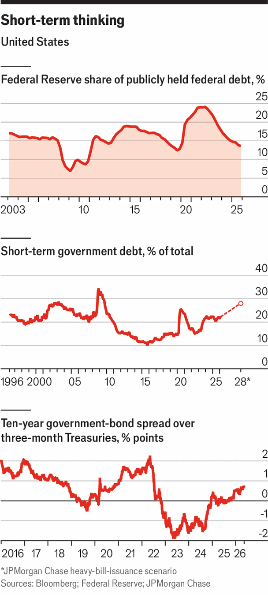
这可能意味着一种正式安排，使双方协调财政部计划发行的债务规模、期限结构，以及美联储计划购买的债务类型。但即便没有正式协议，美联储与财政部的优先事项也可能在某些方面相互契合。美联储持有的财政部债务平均期限远长于市场整体。若沃什先生担忧美联储严重扭曲了金融市场，那么增持短期国债并让长期债券到期，将更均衡地分散美联储庞大的影响力。尽管贝森特先生批评其前任耶伦将短期国债在总债务发行中的占比从约15%提升至22%，但其当前倾向的路径似乎会进一步推高这一比例。■
摩根大通银行分析师指出，若美国财政部发行的长期债务规模未增加，到2028年底，国库券发行占比将攀升至28%。国库券发行占比上次达到如此高位是在2009年（见图表）；当时国债市场规模仅相当于美国经济规模的约一半。许多投资者和交易员认为，美联储对短期债务的更高需求将为贝森特提供更多发行国库券的机会。收益率曲线再次呈上升趋势：一个月期国库券收益率为3.6%，而30年期国债收益率超过5%，因此将资金从长期债务转向短期债务可实现储蓄。■
贝森特对稳定币作为短期国债需求来源的兴趣，也表明他愿意增加短期国债的供应。购买短期债务有助于规避类似美联储在疫情后遭受的巨额损失风险。其量化宽松政策实质上是通过创造向商业银行支付利息的准备金来"借短贷长"，一方面以短期债务换取流动性，另一方面通过购买长期国债进行长期投资。当利率飙升时，其债券投资组合价值暴跌，而美联储突然需要向借款的商业银行支付更多利息。但贝森特转向短期融资同样面临风险。■
美联储不续作长期国债，任其到期将很可能推高关键的十年期美债收益率，这是全球长期利率最重要的基准。美国30年期房贷利率受十年期美债收益率驱动。贝森特先生在政治上难以达成任何被视为增加房贷户成本的协议。更短的短期借贷计划也意味着必须定期发行更大规模的债务，任何融资压力时刻都将面临更高风险。如果大量政府债务通过国库券融资，任何利率上升都会立即传导至利息支出。这种再融资风险将使联邦政府在利率突然上升时面临更大支付压力。Peter R. ■
费舍尔曾于2001年至2004年担任财政部官员，他与贝森特、沃什一样，对美联储庞大的资产负债表持怀疑态度。但他更担忧贝森特在短期借贷方面持续的偏向。“他眼光短浅，你一看就知道他以前是做对冲基金的，”费舍尔说，指的是对冲基金热衷冒险的倾向。用投资者的钱进行冒险是一回事，而用美国最安全的资产则完全是另一回事。■
§077 银行和稳定币都无法拯救国债市场 特别报道 新玩家原题：Neither banks nor stablecoins will rescue the Treasury market · 板块：其它 · 栏目：其它
“你的销售渠道”是销售行业一句流行的话，据称是“你的生命线”。负责发行国债的债务管理者可能不喜欢把自己与冷呼叫推销员联系起来。但随着一些曾经可靠的国债买家不再表现得那么可靠，寻找替代客户的工作变得愈发关键。特朗普政府乐观的推动者希望看到两种类型的买家更加活跃：穿着卡其短裤的加密货币爱好者和穿着条纹西装的银行家。 ■
两者都将有助于提升国债需求，潜在改善市场运行效率——但影响不会达到颠覆性的程度。先看加密货币圈人士，他们带来了稳定币。稳定币是与特定价值挂钩的加密资产，通常与美元1:1挂钩。去年国会通过的《GENIUS法案》明确了稳定币发行方资格及其用途。关键条款要求稳定币必须由等值的短期国债支撑，且债务期限不超过94天。该资产类别发展迅猛，过去两年规模已超过两倍，达3250亿美元（见图表）。最大稳定币Tether持有1170亿美元国债；若其为国家，将是第18大美国国债持有国，排名位于韩国和阿联酋之间。■
一些政策制定者，尤其是财政部长斯科特·贝森特（Scott Bessent）认为，持续的快速增长可能使稳定币成为美国国债的重要需求来源。今年11月，贝森特表示，到本十年末，稳定币市场可能增长十倍，从而推动国库券需求。标准银行则更为乐观，预测市场将在不到两年内增长至2万亿美元。如此规模的增长将催生约1万亿美元的额外国库券需求（而非2万亿美元，因部分稳定币的热度可能挤占其他需求来源，如货币市场基金）。加上美联储潜在的更大需求（详见前文），将使财政部能以更大比例发行国库券，减少长期债券发行，从而压低平均收益率。
但对稳定币前景持怀疑态度的理由同样充分。另一家银行摩根大通（JPMorgan Chase）认为，稳定币的增长速度将远低于预期。它预计到2027年底，市场规模更可能达到5000亿至7500亿美元。事实上，自10月底以来，稳定币的增长几乎停滞，增幅不足5%。这与比特币等风险较高的加密货币资产价格下跌同步发生。2022年至2024年间也出现过类似情况，当时加密货币价格下跌期间，稳定币市场实际出现萎缩——这进一步强化了稳定币仅作为加密投资工具的感知。事实上，若加密货币价格未能复苏，即便最悲观的预测（稳定币在明年年底翻倍）也可能过于乐观。银行作为国债需求的传统来源，正迎来复苏。■
他们自2008年全球金融危机后一直在财政部市场中逐渐式微。当时国会和监管机构急于防止更多银行倒闭，使它们难以拓展业务——包括交易或以美国政府债务为担保的借贷。如今政策制定者懊悔这些规定将系统性风险转移至其他领域：当银行退缩时，令人担忧的高负债投资者却挺身而出。放宽对银行的限制将使它们重新承担起市场中介的角色。11月，美国监管机构同意降低银行的特定资本要求，即增强补充杠杆率。此举使银行能够持有（买卖）更多低风险资产，如国债。为应对这一变化（4月生效），银行在市场中的活跃度已明显上升。■
做市商角色持有的美国国债——即银行作为市场做市商而非自身投资组合持有的国债——已从2021年底的约2000亿美元增至2025年底的5420亿美元。这种新增需求值得欢迎，但更重要的是银行可能在危机中更愿意进行交易，从而维持市场流动性。更多放松监管措施即将出台。银行已赢得对美国实施巴塞尔协议III的显著调整，以及对所谓全球系统重要性银行的监管规则修改。这些规则将在未来数年逐步放宽，允许银行持有更多资产而不必承担资本罚则，同时使其能在国债市场更积极地进行交易。■
但银行仍不太可能履行其过去所扮演的角色，因为任务的规模已超越了它们的能力。2008年底，美国大型商业银行的总资产达到8万亿美元，而联邦债务约为6万亿美元。到2025年底，银行资产已增长约80%，达到略低于15万亿美元，而联邦债务则激增380%，达到略高于30万亿美元。面对如此巨额的债务，已没有新的买家或中介，甚至连银行都无法合理跟上。■
§078 美国国债市场能否被替代原题：Could something replace the Treasury market? · 板块：其它 · 栏目：其它
没有铁律规定世界储备资产必须是美国国债。几个世纪以来，英国国债（gilts）曾长期占据这一地位，直到二战后被取代。但目前尚无美国国债的继承者。潜在的替代者在规模和其他关键特征上均显不足。自1999年欧元区建立以来，它一直是最大可能的替代者。但2010年代初的欧元区主权债务危机使希腊、意大利和西班牙等国的长期债券收益率飙升。最近，欧洲委员会开始发行债务。
■
但这些债券甚至在欧洲市场也尚未满足投资者需求，更不用说全球范围了。首先，市场规模仍远未达到足够体量。欧盟委员会计划在上半年发行1000亿欧元（1160亿美元）的长期债务，相比之下，美国财政部计划发行的规模高达2.2万亿美元。更重要的是，这些债券的表现并不像由欧洲超级大国整体实力背书的资产，而是由一个没有征税权的超国家机构发行的债券，该机构由一群主权债权人支持。因此，欧盟委员会十年期债券的收益率约为3.5%，意味着投资者将其视为比欧盟最信用可靠的政府（德国政府债务收益率为3%）风险更高的资产。市场尚未准备好接受欧洲政治统一的叙事。目前国债市场已令人担忧地庞大，但其他市场仍过于狭小，难以竞争。■
目前仍保持三A评级的国家共有九个，分别来自三大主要评级机构。这些国家包括德国、欧元区少数节俭型的北欧成员国、澳大利亚、加拿大、新加坡和瑞士。这些国家的政府债务总额约7万亿美元，不到国债市场的四分之一（见图表）。黄金作为恐慌性央行偏好的资产，却缺乏国债所具备的诸多重要特性。投资者无法从一块黄金中获得利息收入，这意味着贵金属无法充当具有生产性的无风险资产。即便在金本位时代，理论上货币可兑换黄金，政府债券仍是更受青睐的安全资产，因为它们为投资者提供收益，而不仅仅是资金的存放场所。■
随着中国经济实力增强，分析人士曾思考，中国是否也能接过全球金融霸主的衣钵。但鉴于资本管制限制资金跨境流动，很难想象中国能发行真正具有流动性的国际安全资产。一旦发生危机，资本管制将立即收紧，外国买家将无法将资金汇回本国。一些评级最高的企业债券、大型金融机构之间的短期借贷安排，以及以看似稳定的资产为担保的债务，通常被视为近乎安全的资产，其价格与美国国债几乎同步波动，很多时候看起来功能几乎相同。但这种状况只持续到它不再持续。■
2007至2009年全球金融危机期间，依赖高评级抵押债券等近似安全资产获取巨额杠杆的投资者发现，近似安全与真正安全完全是两个概念。没有人能断言这些潜在的国债接班人不会整顿局面，未来某天为世界提供真正安全可靠的资产。但眼下，没有任何资产能胜任这一挑战。■
§079 设想一个没有安全资产的世界 特别报道原题：Imagining a world without a safe asset · 板块：其它 · 栏目：其它
在披头士乐队确立流行音乐标准的同时，一群学者——其中许多人后来成为投资界的摇滚明星——在金融领域同样树立了标杆。他们开发了资本资产定价模型（CAPM），该模型估算投资者在承担风险后应获得的回报。要计算风险回报，他们意识到投资者需要知道无风险投资的收益率。一位名叫威廉·夏普的经济学家试图寻找“纯利率”。六十年后，CAPM模型仍主导着数万亿美元的投资决策；衡量风险调整后表现的“夏普比率”在金融领域无处不在。■
这些影响深远的计算所依赖的所谓无风险资产几乎总是美国国债。如果美国国债不再被视为无风险资产，那么支撑投资组合构建的理论将面临远超想象的风险。对投资者而言，国债市场如同水对鱼般不可或缺。这些资产在全球金融体系中如此基础，以至于很难想象一个没有它们的世界。那样的世界将伴随更高的利率、更大的不确定性以及更多风险。对投资者和纳税人而言，不仅美国，全球其他地区也将面临更加危险且难以应对的环境。世界最安全的资产往往鼓励着大量风险承担。■
如果投资者持有在市场剧烈波动、抛售或衰退期间能带来收益的资产，他们将更愿意在其他领域承担更高风险。普林斯顿大学经济学家马克·布伦纳迈尔（Markus Brunnermeier）表示：“如果你没有无风险资产，就会导致对高风险项目的贷款减少，进而引发供给冲击。”被认定为无风险资产的特权在经济各领域都显而易见。银行对美国国债的资本要求远低于其他资产。这些债券可作为回购市场的贷款抵押品，也可用于对冲货币和利率风险。任何其他以美元计价的债券，无论是企业、外国政府还是美国州或城市的债券，其收益率都以与美国国债利差（即比美国国债高多少）来衡量。但波动性已经开始显现。■
美国国债近年来最宝贵的属性之一已化为泡影。21世纪前二十年，美国国债往往在股市下跌时上涨。投资者可以通过持有美国国债来对冲风险资产的动荡。这种负相关关系使美国国债在多元化投资组合中成为更有效的压舱石——理论上它们可以抵消股市损失。新的投资策略应运而生。所谓风险平价基金，通过借贷增加债券敞口，在股市与债市走势相反时表现良好，规模迅速扩张。但2021年和2022年的高通胀，随后利率飙升终结了这一局面。债市与股市同时暴跌，让那些以为已分散风险的投资者措手不及（见图表）。
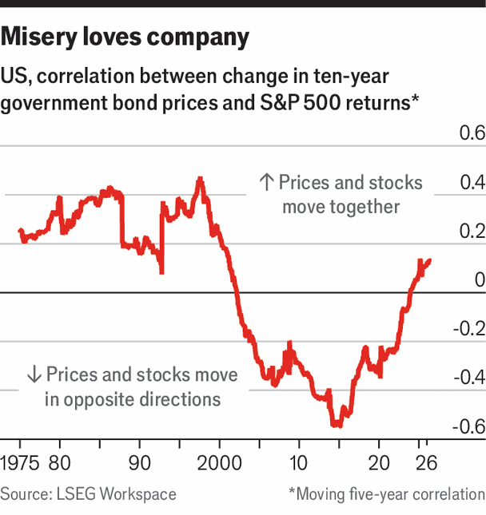
美国国债面临的新风险是，许多市场动荡时刻正源自华盛顿政策制定者而非外部经济冲击。2025年初，随着关于新关税的传闻动摇市场，美国国债不再提供避风港：十年期收益率在一周内上涨了约0.5个百分点，投资者无差别地抛售美国资产。曾经的“便利收益”——看似安全且流动性高的资产带来的收益——已不复存在。国债市场萎缩将带来灾难性的连锁反应。多伦多大学的乔伊·张（Jason Choi）及其同事2024年发表的研究表明，美国作为安全资产发行国的独特地位，每年为政府节省超过GDP 0.5%的利息支出。■
此外，1994年至2019年间，外国央行持有的美国国债份额上升，导致美国的中性利率——即国家维持充分就业和低通胀的利率水平——下降了0.5个百分点（据一项估计）。这种变化惠及全美企业、房主、州和城市。评估企业债券风险也变得更加困难。自2024年初以来，评级为AAA的企业债券与同期限美国国债的利差已降至平均0.34个百分点，相比2010年至2019年的平均0.64个百分点明显收窄。9月，微软发行的两笔债券的收益率甚至低于同期限美国国债。这种表现常见于债务被视为高风险的市场，未来在美国也将愈发普遍。■
摩根大通认为，联邦债务从2040年占GDP的100%上升至120%的增幅，可能使与最信用良好的企业之间的利差减少一半个百分点。美国政治右翼部分人士对国债市场出现的下跌趋势表示欢迎。支持关税的游说团体“繁荣美国联盟”呼吁征收“市场准入费”，即对许多美国金融资产征税。他们称此举将降低对美元的需求，削弱货币并提升国内制造业的竞争力。2024年11月，对冲基金投资者史蒂芬·米兰建议对外国持有的美国国债征收“使用费”；特朗普曾将他任命为美联储董事会成员（他之后已离任）。投资者去年已目睹了针对外国持有美国资产者的政治攻击可能呈现的样貌。■
特朗普的《一项大而美丽的法案》初稿赋予白宫扣留外国应得投资收入的权力，作为对美国企业在海外面临所谓不公平税负的报复手段。这一威胁并不针对国债持有者，但已构成令人担忧的预兆。对国债市场的自毁行为似乎荒谬。但全球储备资产的发行方曾有过改变规则的先例。美国政府曾在1934年和1971年将美元对黄金贬值，英国政府则在1931年和1949年对英镑采取了类似措施。在每种情况下，外国债券持有者都被牺牲以换取国内金融安全。若国债市场失去其特殊地位，对世界大部分地区的影响将比对美国更为严重。■
外国投资者一直将美国国债视为其投资组合中的安全资产，因为他们在本国的替代选择是波动性更高的政府债券。他们目前没有任何可以替代美国国债的资产。一战后的动荡时期留下了令人担忧的先例。英国作为全球安全资产供应国的地位，在第一次世界大战的财政压力和随后的通胀浪潮中崩溃。但当时国债市场尚未准备好承担这一角色。这一时期的特点是反复发生的金融危机、全球经济下行以及全球贸易的碎片化。缺乏单一可靠且深度的储备资产使情况更加恶化。一个不再以美国国债为可靠安全资产的世界，将是一个完全找不到可行替代品的世界。美国财政部为全球提供了接近公共产品的资源。
重商主义政治、紧张的投资者以及美国政府债务激增正在削弱其地位。全球金融正面临失去指引方向的灯塔的风险，使维持市场和经济稳定的工作在国内外变得更加危险和困难。■